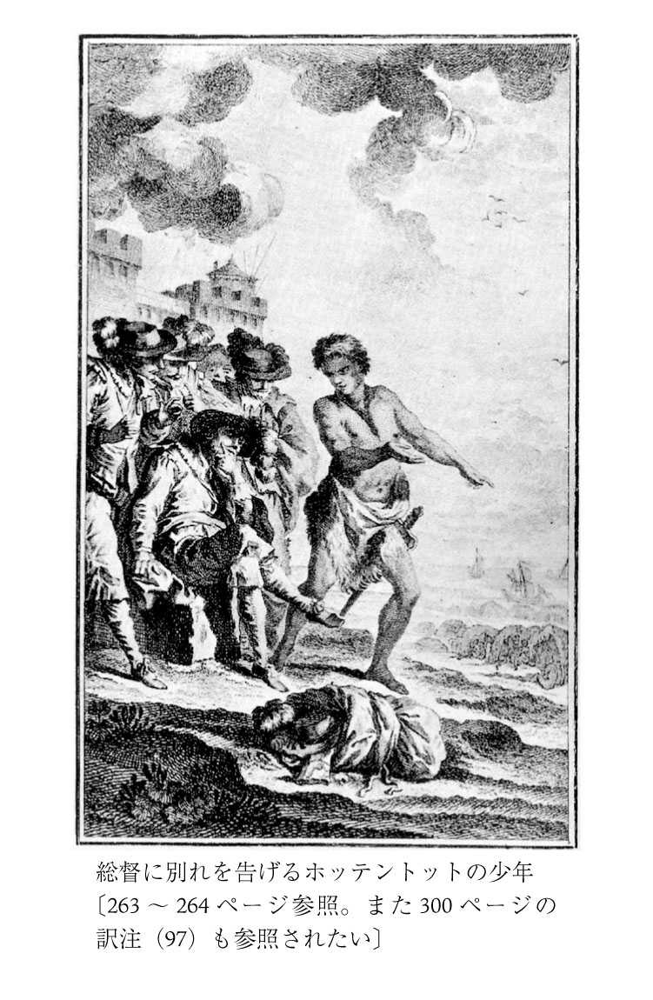

| 人間不平等起源論 | |
| ルソー | |
| (2008) | |
人間不平等起源論
ルソー
中山元訳
Title: DISCOURS SUR L'ORIGINE ET LES FONDEMENTS
DE L'INÉGALITÉ PARMI LES HOMMES.
1755
Author: Jean Jacques Rousseau
凡例
⑴ 原文のテクストはJean-Jacques Rousseau, Oeuvres complètes, tom III, Pléiade, Gallimard, 1964（以下ではプレイヤード版と呼ぶ）に依拠した。
⑵ 原書は一七八二年に増補されているので、追加された部分は【 】で示した。［ ］で囲んだ部分は訳者の補足である。
⑶ 小見出しはすべて訳者によるものである。原注のタイトルも訳者によるものである。読みやすいように適宜改行を加えた。引用文は邦訳を参考にしているが、訳者が手を加えている場合が多い。
⑷ ルソーの原注は（注一）のように示して「人間の不平等の起源と根拠についての論文」の「原注」に、また訳注は（１）のように示して「人間の不平等の起源と根拠についての論文」の訳注箇所にまとめて掲載した。

◎ご注意
本作品の全部または一部を無断で複製、転載、改竄、公衆送信すること、および有償無償にかかわらず、本データを第三者に譲渡することを禁じます。
個人利用の目的以外での複製等の違法行為、もしくは第三者へ譲渡をしますと著作権法、その他関連法によって処罰されます。
人間不平等起源論
人間の不平等の起源と根拠についての論文
ジュネーヴ市民 ジャン＝ジャック・ルソー
ジュネーヴ共和国へ捧げる
高潔にして、誉れ高い主権者のみなさま（２）
望ましい国家像
祖国が喜んでうけとるような敬意を祖国に表明することができるのは、徳の高い市民だけだと確信しているわたしは、三〇年も前から、祖国の公的な名誉を称えることのできる市民になろうと、ひたすら努力してきました。このたびわたしは、これまで力のいたらなかったところを、いくらかでも埋め合わせることのできる好機に恵まれましたので、わたしを鼓舞してくれるこの熱意に応じて、祖国の名誉を称えることは許されることだと判断しました──わたしにはまだそれだけの権利はないと思うのですが。
この書物でわたしは、自然が人間のあいだに作りだした平等と、人間が制度として作りだした不平等について考察をめぐらしました。ジュネーヴ共和国において市民として生まれるという幸運に恵まれました者として、平等と不平等が幸いな形で結びついていて、自然法にもっとも近く、社会にもっとも好ましい形で、公的な秩序と個人の幸福を守っているこの共和国の深い叡智について、思いを致さずにはいられないのです。わたしは良識にしたがって、政府の構成に必要な最善の法則はどのようなものかを模索していたのですが、ジュネーヴ共和国ではこうした法則のすべてが実行されていることに、強い感銘をうけずにはいられませんでした。ですからわたしがもしも、ジュネーヴの町の壁に守られて生まれていなかったとしても、人間社会の最大の長所をそなえ、その弊害をもっとも巧みに回避してきたと思えるすべての市民に、この人間社会の絵巻ともいうべき書物を捧げるべきだと感じたことでしょう。
ジュネーヴの長所
もしもわたしが自分の出生の場所を選べたとしたら、おそらく人間の能力の限界にふさわしい規模の国、すなわちよく統治されることのできる規模の国、各人がその職をこなし、誰にもそれぞれに委ねられた仕事を他人に任せる必要のない大きさの国を選んだことでしょう。すべての人々がたがいに知りあっているために、悪徳のひそかな企みも隠された美徳のゆかしさも、公衆のまなざしと裁きから免れることのない国を、そして国民の誰もが顔見知りで、たがいによく知りあっているという好ましい習俗のために、祖国への愛から生まれるのが、土地への愛情ではなく市民への愛情であるような国を選んだことでしょう。
わたしが生まれたいと考える国、それは主権者と人民の利害が唯一で、同一のものである国です。国のあらゆる機構が、すべての人々の幸福だけを目指して働くような国です。それは人民と主権者が同じ人格でなければありえないことですから、わたしが生まれたいと考える国は、賢明にも穏健な民主的な政府によって統治されている国だということになります。
自由に生き、自由に死ぬことを願う者として、わたしは法のもとに服従し、わたしもほかの誰も、この法の名誉ある軛を覆すことができないことを望んだでしょう。この軛は穏やかで健全なものであり、これにしたがうならば、ほかのいかなる軛にも屈することがなくなるのですから、どれほど誇り高い人物でも、喜んでこの軛にしたがったことでしょう。
わたしがさらに望むのは、国の中の誰一人として、自分は法には従わないでよいのだと独語することのないこと、国の外にいる誰一人として、国がうけいれない定めを強制することのないことです。というのは、政府の構成がどのようなものであっても、法にしたがわない人が国に一人でもいたら、ほかの人は誰もが必ずその人物の意のままになるからです（注一）。国の首長のほかに、国外に別の首長がいると、この二人の首長がどのような形で権力を分担していたとしても、どちらの首長にもよく服従することはできないのですし、国がよく統治されることもできないのです。
またわたしは、そこでどんなによい法が定められていたとしても、新たに設立されたばかりの共和国では暮らすことを望まなかったでしょう。そもそも国にふさわしくない統治体制が設立されてしまえば、新しい国民にはその体制がふさわしくないものでしょうし、新しい政府にはその国民がふさわしくないものとなるでしょう。こうして国は設立された当初からぐらぐらして、やがては倒れてしまうことになりかねないのです。というのも自由というものは、滋味の豊かなしっかりとした食べ物や、芳醇なワインのようなものだからです。それに慣れている頑丈な人には精をつけてくれる好ましいものですが、慣れていない繊細で虚弱な人が味わうと、身体が弱くなり、体調が崩れ、酩酊してしまうものなのです。人民が主人をもつことに慣れると、もはや主人なしではいられなくなります。そして軛を投げ捨てようとすればするほど、ますます自由から遠ざかるのです。人民は、自由の対極にある野放しの放埒さを自由と思い込んでしまうので、革命を起こしても扇動者の手に落ちるだけで、人民を縛る鉄の鎖はますます重くなるのです。
自由な人民の模範であるローマ共和国でも、人民はタルクィニウス一族の圧制から逃れたときには、みずからを統治することはできませんでした（３）。タルクィニウス一族に強制された隷属状態と屈辱的な労役のために、すでに卑しむべき人民となっていたので、ごく賢明な人々によって導かれ、支配される必要があったのでした。やがて人民は、人々を健康にする自由という大気を吸うことに少しずつ慣れてゆきます。そして暴君の支配のもとで無気力で愚昧になっていた人々が、次第に厳格な習俗と誇り高い気概を獲得するようになります。こうしてついにすべての人民のうちでもっとも尊敬に値するローマの人民が誕生したのです。
ですからわたしが祖国を選べるなら、その古さがいわば長い年代の暗闇の彼方に消えているような幸福で平穏な共和国を探します。外部から攻撃をうけても、そのためにかえって住民の祖国への愛情と気概が表明され、さらに強められるような共和国です。市民が長いあいだ、賢明にも独立に慣れ親しんでいるために、たんに自由であるのではなく、自由であることにふさわしいような人々のいる共和国です。
望ましい祖国
わたしが望ましいと考える祖国、それは幸いにも無力であるために、征服欲という残酷な欲望に駆り立てられることがなく、地の利に恵まれていて、ほかの国から征服される恐れもない国です。ほかの多くの国にはさまれて存在していながらも、どの国も侵略しようなどと考えたりせず、その国がほかの国によって侵略されることをどの国も望まない自由な国家です。要するに隣国に、侵略しようという野心などさらさらもたせず、必要であれば隣国から援助が得られることを期待できる共和国です。この共和国は、地の利に恵まれているために、他国からの侵略に懸念を抱く必要がありません。市民が武器を扱う訓練をうけているとしても、それは自国を防衛する必要があるからではなく、自由にふさわしく、自由を好む戦士の闘いへの熱意と、誇り高い勇気を堅持するためなのです。
わたしが望ましいと考える国、それは立法権がすべての市民に共通に分かち与えられている国です。同じ社会のうちでともに暮らすにふさわしい条件をもっともよく知っているのは、市民たちだからです。しかしローマの平民会投票のようなものは認めたくありません（４）。平民会投票の制度では、国の存続にかかわる重要な問題の審議から、国の指導者たちや、国の命運にもっとも深いかかわりのある人々を排除してしまうからです。そして根拠がなく、理解に苦しむ理由から、普通の市民が享受している権利が、為政者には与えられないからです。
わたしが望むのは反対に、それぞれの市民が勝手な思いつきで新しい法律を提案することができないようにすることです。そうすることで、結局はアテナイのポリスを滅亡させたような危険な改革や、利害のからんだ悪しき計画を中止させることができるのです（５）。こうした権利は為政者だけに認められればよいのです。その為政者もこの権利はごく慎重に行使するべきですし、人民が新しい法律を承認するのはごく控え目にすべきです。そして新しい法律はきわめておごそかに発布すべきです。また法律が神聖で尊敬すべきものとなるのは、なによりもその古さによるところが大きいのですから、もしも法律が日々変更されるのに慣れてしまうと、人民は法律を軽蔑するようになるでしょう。そして法律を改善するという名目のもとで、古い慣習を無視するようになったり、ごく小さな欠陥を改善するために、きわめて大きな悪をもたらすようになったりするものです。ですから人民は統治体制が揺らぐ前から、［その法律が必要であることを］確信できるような時間的な余裕をもてることが望ましいのです。
わたしが避けたいと思うのは、為政者などいなくても、あるいは為政者にかりそめの権威しか与えなくても、人民が自分たちで統治できると思い込み、生活にかかわるさまざまな問題をみずから管理でき、自分たちで法律を執行できると軽率にも考えるような国です。このような国は必ずやまずく統治された国となるのです。自然状態から抜けだしたばかりの初期の粗野な政府は、このような国だったはずですし、アテナイの共和国を滅ぼした悪徳の一つは、まさにこのことにあったのです。
そうではなく、すべての個人が［法律をみずから作るのではなく］法律を批准するだけで満足する国が望ましいのです。とくに重要な公的な問題については首長の報告に基づいて全員で決定をくだし、尊敬される法廷を設立し、政府のさまざまな部門を慎重に定めるべきです。そして同胞市民のうちから毎年、もっとも有能で高潔な人物を選びだして、司法を管轄させ、国家を統治させるのです。このような国でこそ、為政者の徳が人民の賢明さの証しとなり、人民がたがいに尊敬しあうようになるでしょう。そして忌まわしい誤解のために、公けの調和が乱されることがあっても、盲信と誤謬が支配する時期においても、節制とたがいの尊敬と、法律にたいする共通の敬意が示されることでしょう。これが長続きしうる真摯な和解がもたらされる前兆となり、その保証となるのです。
高潔にして、誉れ高い主権者のみなさま、これこそがわたしが選びたいと考える祖国のもつべき長所なのです。もしも神意によってさらに、魅力的な地勢と、温暖な気候と、豊穣な国土と、天の下でもっとも心地のよい風景が与えられたならば、わたしは自分の幸福を味わうために、この幸福な祖国の懐にいだかれて、すべての恵みを享受することだけを望むでしょう。そしてわたしは同胞の市民たちとの甘美な交わりのうちで平和に暮らしながら、同胞たちに人間愛、友情、すべての徳を実践し、その手本となるようにつとめたでしょう。そして死後には、善良で、廉直で、高潔な愛国者であったという栄誉ある名を残したことでしょう。
もしもわたしにそれほどの幸福が与えられず、分別をもつのが遅すぎて、思慮のない青年時代を過ごしたために、平穏と平和を失ったことを空しく嘆きながら、他の国で病気がちで弱々しい一生を終えたとしても、少なくとも心のうちでは、祖国の役に立つことができたはずの気持ちを培うことはできたでしょうし、遠く離れた地で暮らす同胞市民に優しい無私な愛情を抱き、心の奥底から、ほぼ次のような挨拶を送ったことでしょう。
同胞市民へ
わが愛する同胞市民のみなさま、いやむしろわが兄弟たち、わたしたちのほぼ全員が法律と血のつながりによって結ばれているのですから、みなさまのことを考えますと、みなさまが享受しておられるあらゆる幸福を同時に思いだして、心がなごむのです。みなさまのうちの誰一人として、それを失ってしまったわたしほどに、その幸福の価値を実感しておられる人はいないでしょう。みなさまの享受しておられる政治的および社会的な状況について考えれば考えるほど、人間性のありかたから判断して、これよりも好ましい状況はありえなかっただろうと思われるのです。
他のすべての国の政府のもとでは、国家に最大の善をもたらそうとしても、机上の計画だけに終わってしまうか、たんなる可能性の域にとどまるだけなのです。ところがみなさまにとっては幸福がすでにそなわっているので、ただそれを享受すればよいのです。完璧な幸福を味わうためには、幸福であることに満足する術を学ぶだけでよいのです。剣の力で獲得され、あるいは取り戻され、そして二世紀にわたって武人の勇気と智恵によって守られてきたみなさまの主権は、ついに完全に、どこからも承認されるようになりました（６）。名誉ある諸条約によって国境が確定され、みなさまの権利が保障され、みなさまの安寧が確保されています。
この国の卓越した政体は、きわめて崇高な理性によって定められたものであり、尊敬すべき友邦である列強諸国から保証されています。国内は平穏で、懸念すべき征服者も、戦争もありません。みなさまを支配するのは、みずから制定した賢明な法律だけであり、この法律をみなさまが選任した高潔な為政者たちが執行しているのです。柔弱さのために無気力になり、空しい快楽におぼれて、真の幸福と堅固な徳の味を忘れてしまうほどに、国は豊かではありません。またみなさまの勤勉な努力で手に入れることのできないものを、外国からの援助によって獲得せねばならないほどに、国は貧しくありません。大国では法外な課税によってしか確保することのできないかけがえのない自由を、みなさまはほとんどなにもせずに、そのままで維持できるのです。
これほどまでに賢明に、そして幸運に創立された共和国が永遠に続きますよう、市民の幸福が維持され、他の人民の模範となりますよう。これがみなさまが願うべきただ一つのことであり、みなさまが配慮すべきただ一つのことなのです。みなさまの幸福を作りだすために、先祖の方々がすでに力を尽くしてくれました。これからみなさまのなすべき唯一のことは、叡智の力でこの幸福を善用し、長続きさせることです。みなさまが永久に団結し、法律を遵守し、為政者を尊敬すること、ここに、この国の安寧はかかっているのです。みなさまのうちにごくわずかでも、刺々しい感情や不信の念が残っていたとしたら、すぐにその棘を抜いてください。こうした気持ちはいずれは毒をもたらす酵母のように、みなさまに不幸をもたらし、国を破滅させるものなのです。どうか心の深みにまで降りて、良心の語る秘めやかな声に耳を傾けてくださるよう、お願いします。
みなさまの国の為政者たちほどに高潔で、見識高く、尊敬すべき方々を、ほかのどの国でみいだすことができるでしょうか。為政者の誰もが節制と、質朴な習俗と、法にたいする忠誠と、ごく真摯な和睦の心の模範を、みなさまに示しているのです。ですからこれほどまでに賢明な首長たちには、理性が美徳に示すべき健全なる信頼の念を、ためらうことなく寄せてほしいのです。思いだしていただきたいのですが、これらの為政者はみなさまがみずから選任した人々であり、みなさまの選択の正しさを証しているのです。みなさまが高い地位に選任したこれらの為政者に尊敬の念を示すことは、必ずやみずからへの尊敬の念として戻ってくるはずなのです。
法が効力を失い、法を擁護する人々の権威が失われるところでは、誰も安全に、そして自由に暮らすことはできません。そのことを弁えないほどに見識のない人は、みなさまのうちには誰一人としておられません。ですからみなさまにとって大切なのは、真の利益をめざして義務にしたがい、道理にもとづいて、心から正当な信頼を寄せながら、なすべきことをなすことです。政体を維持することに無関心であるのは、罪深く有害なことです。こうした無関心のために、みなさまの中でもっとも見識が高く、熱意のあふれる［為政者の］人々の賢明な意見を、大事のさいに無視するようなことがないようにしてください。みなさまのすべての行動を律しつづけるのが、公正さと節制ともっとも尊敬すべき堅固さでありますように、そして誇り高く、謙虚で、自由と栄誉とを望む人民の模範を全世界に示してくださいますように。
そしてわたしの最後の助言として、悪意のある曲解や毒のある言葉には、絶対に耳を貸さないようにしてください。こうした言葉に秘められた動機は、それが目論む行動そのものよりも危険であることが多いのです（７）。盗人が近づいたときにしか吠えない忠実で立派な番犬がひと吠えしたときには、家中の人々が目を覚まして警戒するものですが、騒がしく吠えたてて公衆の安息を乱すだけの犬は憎まれるものです。場違いな警報をだしつづけるだけの犬は、有事の際にも耳を傾けてもらえなくなるものです。
為政者へ
さて高潔にして、誉れ高い方々、（８）この自由な人民の威厳ある尊敬すべき為政者のみなさま、あなたがたにわたし個人より賛辞を送り、わたしの義務をはたすことをお許しください。この世に、その地位を占めていることで、高い名誉をうけるにふさわしい地位があるとすれば、それは才能と徳によって手にした地位、それによってあなたがたを尊敬される人々にする地位、同胞の市民によって選ばれたこの為政者という地位でしょう。同胞市民に固有の美質が、あなたがたにほんらいそなわる美質にさらに輝きを添えるのです。他者を統治する能力のある人々が、みずからを統治すべく選びだした方々なのですから、あなたがたはほかの国の為政者たちよりも優れていると、わたしは信じています。自由な人民、とくにあなたがたが指導する名誉を与えられている人民は、理性とその見識によって、他の国の愚かな人民よりも卓越していると思うからです。
［こうした人民の］一例としてわたしの心から離れないある人物の思い出を語らせてください。お聞きになれば、きっとよい印象が残るはずだと思います。それはわたしに生を与えてくれた一市民、わたしの幼年期においても、あなたがたに敬意を払うべきであることを教えてくれた一市民のことです（９）。この人物を思いだすたびに、わたしは心地よい感動を覚えるのです。みずからの手を使って働き、心のうちにきわめて崇高な徳を培っていたこの市民の姿が、いまなお眼に浮かぶようです。仕事場には、仕事の道具とともにタキトゥス、プルタルコス、グロティウスの書物がありました。その傍らには、父のなかの父ともいうべき人物から愛のこもった教えをうけながらも、ろくなことも達成できなかった最愛の息子が立っているのが、目にみえるようです。狂おしい青年時代の惑いのために、わたしがしばらくは父のこうした賢明な教えを忘れてしまっていたとしても、幸運にもやっと気づいたのです。たとえ悪に向かう傾向がどれほど存在していても、心のこもった教育の教えが永久に失われてしまうことはないものだと。
高潔にして、誉れ高い方々、あなたがたが統治しておられる国の市民とは、そしてたんなる居住民ですら、このような人物なのです（10）。このような人々、教養があり、思慮分別にも富むこうした人々が、ほかの国では職人や人民という名のもとで軽蔑され、誤解されているのです。いま喜んで認めたい気持ちなのですが、たしかにわたしの父は、同胞市民のなかでもとくに抜きんでた人ではありませんでした。どこにでもいるような人でした。しかしどんな土地に行っても、そのあるがままの姿で、きわめて誠実な人々から交際を求められたでしょう。そして交際を深めながら、豊かな実りをもたらすことができたでしょう。
このような人々にあなたがたから期待できるはずの尊敬の念について、わたしがお話しすべきではありませんし、幸いなことに、その必要もありません。教養でも、自然の権利によっても、出生による権利によっても、あなたがたと対等な人々でした。あなたがたよりも地位が低いとしても、こうした人々はみずからの意志で、そしてあなたがたの美質のために、あなたがたを為政者として認めねばならないと考え、みずからその低い地位を選んでいるのです。そのことにあなたがたはいわば、感謝すべきなのです。
法の執行者には厳しさが求められるものですが、あなたがたが優しさと思いやりをもって、こうした地位の低い人々に、この法の厳しさを和らげて執行しておられることを知って、とてもうれしく思います。そしてあなたがたに服従し、敬意を表明しているこうした人々に、敬意と思いやりをもって接しておられることを知って、とてもうれしく思います。このような正義と智恵に満ちたあなたがたのふるまいは、あの不幸な出来事の記憶を遠ざけるにはまことにふさわしい行為なのです（あの出来事は二度と目にしないように、忘れてしまうべきものでした（11））。この国の公正で寛大な人民は、自分の義務をはたすことに喜びを感じており、あなたがたを敬うことを当然のこととして望んでいます。同時に、みずからの権利を維持することになによりも熱心であり、あなたがたの権利を擁護することにも熱心であるだけに、あなたがたのこうしたふるまいは、まことにふさわしいものでした。
牧師たちへ
市民社会の首長たちが、その社会の栄誉と幸福を愛するのは当然で、意外なことではありません。しかしみずからを神聖で崇高な祖国の為政者、むしろ主人とみなす方々が、自分たちを養ってくれる地上の祖国に何らかの愛情を示すということは、人々の平穏という意味では、きわめて珍しいことなのです（12）。ここできわめてまれな例外についてお話しできるのは楽しいことです。それは法律によって聖なるものと認められた教義を委ねられたあの熱心な人々、敬うべき魂の牧人を、わたしたちのもっとも優れた市民たちと同列に扱うことができるということです。これらの人々の力強く快い雄弁は、みずから聖書の掟を率先して実行しているだけに、人々の心にこうした掟をうけいれさせることができるのです。
ジュネーヴにおいて、説教の偉大な技術がいかに究められて、大きな成功を収めているかを知らない人はいません（13）。しかし語ることと行うことに大きな違いのある聖職者たちに慣れきってしまったためか、ジュネーヴのどの牧師にもキリスト教の精神が、習俗の神聖さが、みずからを律する厳しさが、他者への優しさが、ゆきわたっていることは、ほとんど知られていないのです。神学者の団体と文人の団体が、これほどまでに優れた形で結びつくことができるという手本を示しているのは、おそらくジュネーヴの町だけかもしれません。わたしはこの共和国が永遠に平穏を維持できるとすれば、それは何よりも、誰もが知る彼らの智恵と節制に、そして国家の繁栄を願う熱意の大きさにかかっていると思います。これらの人々がいかに、神聖にして野蛮である聖職者のおそるべき原理を嫌悪しているかを知って、わたしは驚きと敬意の混ざった喜びを感じざるをえません。歴史においてすでにいくつもの前例がみられますが、聖職者たちは神から与えられたと称する権利をふりかざしながら、じつはみずからの利益を守るために、人々の血を貪欲に流してきたのでした。そして自分たちの血が流されることは決してないと思い込んでいたのでした（14）。
女性たちへ
それにわたしは、共和国の貴重な半数を構成している人々［女性たち］のことを忘れることはできません。女性たちは共和国の残りの半数の人々［男性たち］を幸福にしているだけでなく、その優しさと智恵によって、平和と善き習俗を作りあげているのです。愛すべき高徳な女性の市民よ、女性の役割はつねにわたしたち男性の舵をとることにあります。夫婦の結びつきにおいてのみ行使されるあなたがたの純潔な権力が、ほかならぬ国家の栄光と社会の幸福のために感じられるとは、何と幸福なことでしょうか。スパルタではそのようにして女性が命令を下していたのですし、ジュネーヴでもまた女性は、命令を下すにふさわしい存在なのです。
どんなに野蛮な男であったとしても、優しい妻の口から語られた名誉と理性の声に逆らうことができるでしょうか。簡素でつつましい装身具が、あなたがた女性のもたらす輝きのおかげで、もっともふさわしい美しさを発揮することを悟って、空しい贅沢を軽蔑しない人がいるでしょうか。あなたがた女性は、愛すべき無垢な支配力と、魅力的なエスプリを発揮することで、国のうちに法を愛する気持ちを、市民のうちに調和をかもしだすのです。幸福な結婚によって、分かれていた家族を結びつけ、そしてなによりも説得力のある優しい教訓話と、つつましく優雅な会話によって、国の若者たちが外国で暮らすあいだに身につけた悪癖を直すのは、女性の役割なのです。外国で若者たちは、大きな利益を引きだすことのできる有益なものを身につけて戻るのではなく、堕落した女性たちが示す子供っぽい口調と滑稽な態度を学びとるのですし、偉大なと言われるわけの分からないものへの賞賛をもちかえるのです。わたしからしてみればこうしたいわゆる偉大さとは、屈従へのくだらぬ言い訳にすぎないものであり、おごそかな自由とは決して相いれることのないものなのです。ですからあなたがた女性はこれまでと変わらずに、習俗の純潔な守り手であり、平和の甘き絆でありつづけてください。そしてあらゆる機会を利用して、義務と徳のために、心情の権利と自然の権利とを行使しつづけてください。
結語
わたしはこのような裏づけがあればこそ、共和国の栄光と全市民の幸福に期待することができるのであり、何らかの出来事によってこうした期待が裏切られることはないものとひそかに信じています。ジュネーヴ共和国にはこのように多くの美点がありますが、多くの人の目がくらまされてしまう華美をそなえるようになることはないと思います。こうした華美への子供っぽい好みは有害なものであり、幸福のためにも自由のためにも、もっとも致命的な敵となるものなのです。放埒な若者は、手軽に手に入る快楽を求めてほかの国に赴き、そしてあとになって長く後悔すればよいのです。いわゆる趣味人はほかの国で、その土地の宮殿の広大さ、王侯貴族の供回りの壮麗さ、家具の美しさ、芝居の華麗さ、そして怠惰と贅沢によるすべての洗練されたものを褒めたたえていればよいのです。ジュネーヴが誇るのは人間だけです。しかしこのような光景は十分に価値のあるものですし、こうした光景を求める人々は、ほかのものを求める人々に十分に匹敵する価値があることでしょう。
高潔にして、誉れ高い主権者のみなさま、みなさま全員の繁栄を願うわたしのこの敬意のこもった見解の表明を、同じように善意をもってうけとめてくださるよう、お願いします。もしわたしがみずからの心情を激しく吐露しましたときに、熱中のあまり、あいにくにもぶしつけなことを申し上げたとしても、そのことを許してくださるよう、お願いします。真の愛国者の優しい愛情の発露であり、みなさまのすべてが幸福になること以外には、みずからにいかなる幸福も求めていない人物の熱心で正当な情熱の発露として、免じていただきたいのです。
心からの敬意とともに
高潔にして、誉れ高い主権者のみなさまへ
みなさまのきわめて卑しく、従順な下僕であり、同胞市民である
ジャン＝ジャック・ルソー
シャンベリーにて、一七五四年六月一二日
自己知
人間のすべての知識のうちで、もっとも役立つはずなのに、もっとも進歩の遅い分野は、人間そのものについての知識であるようだ（注二）。モラリストたちのどの厚い本よりも、デルフォイの神殿の銘文のほうが、はるかに重要で困難な課題を示していると言えるかもしれない（15）。だからわたしはこの論文の主題は、哲学が提起することのできるもっとも興味深い問題の一つであり、わたしたちにとってはあいにくなことに、哲学者たちが解決するにはもっとも困難な問題の一つであると考えている。というのも、人間たちのあいだの不平等の起源を解明するには、まず人間そのものについて知る必要があるからだ。自然が創造した人間のほんらいの姿はどのようなものだったか、時の経過と事物の変化を通じて、人間のほんらいのありかたに何が生じたのか。さらに人間のもともとのありかたは、さまざまな状況とその進展によって原初の状態につけ加えられたり、変化させられたりしたものから、どのようにして区別できるのか。人間の魂は、あたかも時と海と嵐とによってあまりに変貌してしまったために、神というよりも野生の獣に似てきたグラウコスの像に譬えることができるだろう（16）。人間の魂は社会のうちで暮らすうちに、たえず再生してくる無数の原因によって、さまざまな知識と誤謬を身につけることによって、身体の構造に生じた変動によって、そして情念からたえず衝撃を与えられつづけることによって、ほとんど見分けられないほどに変貌してしまったのである。わたしたちがみいだすのは、つねに確実で変動することのない原理に基づいて行動する存在でも、創造主が刻みこんだ神のような偉大な単純さでもない。妄想のうちで働く知性と、理性を働かせていると思い込んでいる情念が対立する異様な姿しか、もはやみいだすことはできないのである。
さらに残酷なことがある。人類が実現したあらゆる進歩は、人類を原初的な状態からたえず遠ざけつづけているのだ。わたしたちが新しい知識を獲得すればするほど、もっとも重要な知識を獲得するための手段がますます失われていくのである。こう言ってもいいだろう、人間を研究すればするほど、人間を知りえなくなるのだ、と。
構成における変化
人間たちの間に違いを作りだした最初の起源を探し求めるためには、人間の構成に（17）、どのように段階的な変動が発生してきたかを調べる必要があることはすぐに分かることだ。というのも、さまざまな身体的な原因のために、一部の人間のうちにはっきりとした違いが発生したのである。それ以前には、さまざまな種の動物たちがたがいに平等であるのと同じように、人間たちもほんらいはたがいに平等であったことは、一般に認められている。
実際に、どのような方法で発生したにせよ、こうした最初の変化によって、その種のすべての個人が同時に、同じように変化したとは考えにくい。それよりも、善くなった人と悪くなった人がいただろうし、生まれつき人間の本性にそなわっていないさまざまな善い特性を獲得した人も、悪い特性を獲得した人もいただろう。長いあいだ生まれたままの状態にとどまった人もいたに違いない。人間の最初の不平等の原因は、こうした変化にあったのである。これについては真の原因を正確につきとめるよりも、このように一般的に証明するほうがたやすいのである。
問題の難しさ
だから、これほど見分けるのが困難に思える問題を、わたしが解決したなどとは考えないでいただきたい。わたしは最初にいくつかの推論をあえて行い、いくつかの推測を示したが、それは問題を解決するためというよりも、問題点を明確にし、その真の姿を示すことを目的とするものである。同じ道を楽々ともっと遠くまで進める人もいるだろうが、最終的に解決できる人はいないだろう。人間の実際の本性において原初的に存在していたものと、人為によって生まれたものを区別するのは容易な業ではない。そしてもはや存在していない状態、おそらく存在したことのなかった状態、きっと今後も決して存在することのない状態を見分けるのも、容易なことではないのである。しかも人間の現在の状態を正しく判断するには、こうした状態についての正しい見方が必要なのだ。
この主題についてしっかり観察するためにどのような配慮が必要とされるかを正確に定めようとすると、予想を超えるほどの哲学の素養が求められるだろう。そして「自然のままの人間について知るためには、どのような実験が必要とされるか、社会のなかでこのような実験を行うには、どのような手段が利用できるか」という問題を適切な形で解決するのは、わたしたちの時代のアリストテレスやプリニウスのような人物にこそ、ふさわしい課題だと思えるのである（18）。
わたしはこの問題を解決することを企てたわけではないが、この主題については十分に考察したと考えてきたので、次のことはここであらかじめ確認できる。すなわちもっとも偉大な哲学者であっても、この実験を指導する力はないだろうし、もっとも権力のある君主にも、これを実行する力はないだろう。そして哲学者と君主が協力すると期待するのは妥当なことではない。ましてや、この実験を成功させるために必要な忍耐も、双方が善意と知識をたえずもたらして協力することも、期待できないのである。
自然法の定義
この探求はこれほどまでに実行が困難であり、これまでほとんど考えられたことがなかったものである。しかし人間の社会の現実の土台について理解することを妨げている多数の困難な問題を解決するには、この方法しかないのである。というのは、自然法について真の定義をする作業がこれほどまでに不確実で不明解なものとなっているのは、人間の本性についての知識が存在しないためである。ビュルラマキ氏が指摘するように、法という考え、ましてや自然法（ドロワ・ナチュレル）という考えは、人間の本性にかかわる概念である（19）。そして氏はさらに、自然法についての原則は、人間の本性そのものから、人間の構成から、人間の置かれた状態から、導きだす必要があると指摘しているのである。
この重要な問題について著作を刊行しているさまざまな学者の間で、ほとんど意見の一致がみられないのは意外なことであり、スキャンダルと言ってもいいくらいのことである。偉大な著述家で、この問題について意見が一致しているのは、二人といないのである。古典古代の哲学者たちは、ごく基本的な原則についても、たがいに矛盾したことを言いあうのを自分の任務と考えていたようだから、ここでは除外しておこう。ローマの法学者たちは、人間もその他の動物も、すべて同じ自然法（ロワ・ナチュレル）にしたがわせていたが、それは自然法という概念で、自然が定めた法則ではなく、自然がみずからに課した法則のことを考えていたからである。というよりもローマの時代にはある特別な見方がうけいれられていたのであり、法学者は法則という言葉で、あらゆる生物が、その種を保存する目的でおのおののあいだにもつ、自然によって定められた一般的な関係を表現するものと考えていたようである。
ところで現代の学者たちが法則という概念で考えているのは、社会的な存在者に定められた規則のことにほかならない（20）。社会的な存在者ということは、知的で、自由で、他の存在者との関係において考えられた存在者のことである。だから自然法（ロワ・ナチュレル）が適用されるのは、理性をそなえた唯一の動物である人間だけなのである。学者たちはそれぞれに異なる自然法の定義を定めているのだが、誰もがあまりに形而上学的な原則に基づいて自然法を定めたために、わたしたちのあいだでさえ、こうした原則を理解することのできる人はほとんどいないし、自力で発見することなど無理なのである。こうして、学者たちのすべての定義はたえず矛盾しているのであり、自然法（ロワ・ド・ナチュール）を理解し、これに従うことができるのは、偉大な理論家で深遠な形而上学者だけであるということだけで、意見が一致しているのである。これが意味しているのは、人々が社会を設立するため使う必要のある知識は、多くの努力を費やして獲得されるものであり、しかも社会のうちのごくわずかな人しか手にすることができないということにほかならない。
自然人
自然についてはほとんど知られておらず、法（ロワ）という語の意味についてもこれほどに意見が対立している状態では、自然法（ロワ・ナチュレル）についての正しい定義について合意するのはきわめて困難なことだろう（21）。そして書物に書かれている自然法の定義は、そもそも意見の一致がみられないという欠陥のほかにも、人間が自然に獲得したものではないさまざまな知識に基づいているという欠陥がある。さらに人間が自然状態（エタ・ド・ナチュール）から出たあとでなければ考えることのできないさまざまな利点を利用しているという欠陥もある。［現在行われている方法は］まず人間の共通の利益に適い、誰もが合意できる規則を探すことから始める。そしてこの規則の集合を自然法と名づけるのである。これが自然法と呼ばれる根拠は、この規則をすべての人が実行すれば、好ましい状態が実現されるということにすぎない。これはまず定義を作りだしておいて、かなり恣意的な取決めによって、事態の性格を説明するというご都合主義的なやり方なのである。
しかし自然人（オム・ナチュレル）についての知識がなければ（22）、自然人がうけとった法を定義するのも、自然人の構成にもっともふさわしい法を定義するのも無益なことである。この自然法という主題についてごく明確に確認できるのは、まずそれが〈法〉であるためには、法の対象となる人が、その法についての知識をもった上で、その法にしたがうという意志をもつことが必要である。次にそれが〈自然の〉法であるためには、その法が自然の声をもって人に語りかけるものでなければならない。
二つの原理──自己愛と憐れみの情
学問的な書物はどれも、すでにできあがった状態の人間について理解するために役立つだけであり、ここでは無用のものである。それよりも大切なことは、人間の魂の原初的でもっとも素朴な働きについて考察してみると、理性に先立つ二つの原理を見分けることができるということである。一つの原理は、わたしたちにみずからの幸福と自己保存への強い関心をもたせるものである。もう一つの原理は、感情をもったあらゆる存在、とくに同類である他の人間たちが死んだり、苦しんだりするのをみることに、自然な反感を覚えることである。
わたしたちの精神は、この二つの原理を調和させ、組み合わせることができるのであり、そこから自然法（ドロワ・ナチュレル）のすべての規則を導きだせる。ここに必ずしも社会性（ソシアビリテ）の原理を導入する必要はないのである（23）。次第に発展していく段階のうちで理性がついに自然を窒息させるようになると、理性はこうした自然法の規則をもっと別の土台の上でふたたび構築することが必要になるのである。
わたしがここで示した方法で考察すれば、哲学者から人間を作りだす前に、人間から哲学者を作りだす必要はなくなるのである。人間は他者にたいして義務を負うが、この義務は後の段階になってから登場する叡智の教えによって命じられたものではないのである。そして同情という内的な衝動に抵抗しないかぎり、人間は他の人間にも、感情をもつ他の生物にも、害をなすことはないのである。ただし自己保存が危ぶまれる正当な場合には、人間はみずからを維持することを優先せざるをえない。
この方法で、動物にも自然法が適用されるかどうかという昔からの論争に決着をつけることができる。動物には知識も自由も欠けているために、この自然法を認識することができないのは明らかである。しかし動物には感受性が与えられており、そのことで人間の本性にもかかわりがあるとすれば、動物にも自然法が適用されるのであり、人間は動物たちにもある種の義務を負うと判断することになる。実際にわたしが、自分に似た存在者にはいかなる害もなしてはならないという義務を負うとすると、それはわたしに似た存在者が理性的な存在であるからではなく、感受性をもった存在者だからだと考えられる。この感受性をもった存在であるということは動物にも人間にも共通したものであり、このことから、動物は人間によって無益に虐待されるべきではないという権利をもつのである。
このように、原初の人間（オム・オリジネル）、その真の欲求、その義務の基本的な原則について研究するというこの方法は、道徳的な不平等の起源について、政治体の真の土台について、政治体の成員の相互の権利についてなど、重要でありながら、十分な解明が行われていない多くの問題を考察するときに発生する無数の難問を解決するために役立つ唯一の有効な手段なのである。
無私で穏やかなまなざしで、人間の社会について考察してみれば、人間の社会では強い人間が暴力を行使し、弱い人間を抑圧していることがすぐに目につく。そして人間の心は、強者の冷酷さには反感を感じ、弱者の無理解に嘆きたくなるものだ。しかし弱さと強さ、富と貧困などの違いは、叡智から生まれたものではなく、偶然の産物にすぎないことが多いものであり、人間の社会におけるこうした外面的な関係ほど、不安定なものはない。だから人間の作った制度は、一見すると流砂の上に建てられた楼閣のようにみえるものだ。しかし詳細に検討しながら、こうした建物のまわりの埃や砂をとりのぞいてみれば、これが揺るぎのない土台の上に構築されていることが分かるだろう。そしてわたしたちはこうした土台を尊敬することを学ぶものだ。
ところで人間と、その自然の能力と、段階的な発達を本格的に研究しなければ、こうした違いを見分けることはできないし、現実の構成のうちで、神の聖なる意志によって作られたものと、人間の技術が作りだしたと称するものを区別することができない。わたしが本書で検討する重要な問題は、政治的な研究と社会的な研究につながるものであり、いかなる意味でも有益なものである。そしてさまざまな政府についての仮説に基づいた歴史の記述は、人間にとってあらゆる点で有益な教訓を教えてくれる。人間が誰の助けもなしに放置されていたらどのようになっていたかを考えてみると、恵み深い［神の］手の業に感謝することを学ぶべきなのである。この恵み深い手は、人間の組織を改善し、それに揺るぎのない土台を与え、人間の組織から生まれたはずの無秩序を防ぎ、人間に悲惨をもたらすと思われた手段から、人間の幸福を作りだしてくれたのである。
注について
行きあたりばったりな仕事をするという習慣にしたがって、この作品にもいくつかの注をつけた。ときには本文からかなり離れたことを語っているので、本文とともに読むには適さないものもある。だから［本文を読む妨げにならないように］、本論の最後にまとめておいて、［本文の］論旨をできるだけ明確に理解できるようにした。読み返す元気のある読者は、二度目にはこの藪の中で獲物を探す楽しみにふけるために、注を読まれるのもよいかもしれない。注を読まないとしても、まったく差し支えないのである。
ディジョンのアカデミーが提起した問題
人間の不平等の起源はどのようなものか、
それは自然法（ロワ・ナチュレル）のもとで認可されるものか
人間の不平等の起源と根拠についての論文（25）
［前文］
二種類の不平等
わたしが語ろうとするのは人間についてであり、この問題を検討しながら、わたしは人々に語りかけることになるだろう。真理を称えるのを恐れる人々は、このような問題を提起することはないはずだ（26）。だからわたしに語るように促す賢者たちの前で、自信をもって人類のために弁護することにしよう。そしてわたしをこの主題と、審査される賢者たちにふさわしいものにすることができれば、これにまさる喜びはないのである。
わたしは人類には二種類の不平等があると考えている。一つは自然の不平等、または身体的な不平等と呼びたいものである。これは自然が定めたものであり、年齢、健康状態、体力、精神の質、魂の質の違いによって生まれる。もう一つは社会的または政治的な不平等と呼びたいものである。というのも、この不平等はある種の取決めによって生まれるものであり、人々の同意によって確立されるか、少なくとも認可されるものだからである。この種の不平等はさまざまな特権から生まれるもので、一部の人々が他の人々を犠牲にして、この特権を享受する。たとえば他の人々よりも豊かであるとか、尊敬されているとか、権力をもっているとか、何らかの方法で他の人々を服従させているとかである。
自然の不平等の源泉を問うことはできない。この語の定義そのもののうちに、答えが示されているからだ。自然の不平等と政治的な不平等の間に、何らかの本質的な絆があるのかどうかを問うことは、さらに意味のないことだ。この問いを言い換えると、命令を下す者は、服従する者よりも必然的に価値が高い存在なのか、身体や精神の力、智恵や徳が、同じ人のうちでいつも権力や富と比例しているかを問うことだからである。このような問いは、主人に聞いてもらいながら議論する奴隷たちにはふさわしいものだろうが、理性をもった自由な人々が、真理を求めて議論するには、ふさわしくないものである。
この論文の目的
それではこの論文では正確には何を検討しようとするのだろうか。この論文の目的は、事態のなりゆきのうちで、暴力の代わりに権利が登場し、自然が法に服するようになった瞬間を明らかにすること、そしていかなる奇蹟の連鎖のおかげで、強者が弱者に奉仕することを決意できたのか、人民が現実の幸福を捨てて、観念のうちで休息を贖うことを決意できたのかを説明することにある。
社会の土台について考察した哲学者は誰もが、自然状態（エタ・ド・ナチュール）に溯ることが必要だと考えたのだが、実際に自然状態にたどりついた哲学者は一人もいない。自然状態のうちにある人間は、正義と不正の観念をもっていたことを躊躇なく認めた哲学者たちもいるが（27）、自然状態で人間は必ずそうした観念をもっていたのかどうか、こうした観念が人間に役立つものだったのかどうかは、説明しようとはしなかった。またすべての人間は、自分の所有物を守る自然権（ドロワ・ナチュレル）があると語った哲学者もいるが（28）、自分の所有する物という語で何を意味しているかを説明しなかった。さらに、まずもっとも強い者にもっとも弱い者を支配する権威を認めておきながら、そこからすぐに政府を作りだした哲学者たちもいる（29）。こうした哲学者たちは、権威や政府という語の意味が人間のあいだに生まれるようになるまでに、長い時間が経過する必要があったことは、まったく考慮にいれなかったのである。結局のところ誰もが、欲求について、貪欲さについて、抑圧について、欲望について、驕りについて語りながら、社会のなかでみいだした考え方を、自然状態に持ち込んだのだった。野生人（オム・ソヴァージュ）について語りながら、社会のなかの人間を描いていたのだ（30）。
現代の多くの哲学者たちは、自然状態が存在したことを疑おうとはしなかったのだが、聖書を読んでみれば、最初の人間が神から直接に知識の光と掟を与えられたのであり、自然状態のうちに存在していたのではないことは明らかである。そしてすべてのキリスト教の哲学者たちと同じように、モーセの書物を信用するならば（31）、洪水以前にあっても人間が純粋な自然状態のうちにあったことは否定しなければならなくなるのである。それでなければ、何か異常な出来事で、自然状態に戻ったのだと想定しなければならなくなる。この逆説を擁護するのは困難であり、証明するのはまったく不可能である。
だからすべての事実から離れることから始めよう。事実では問題の核心にふれることはできないからだ。この主題について研究できるのは歴史的な真理ではない。仮定と条件に基づいて推理できるだけである。真の起源を明らかにするのではなく、事態の本性を解明することがふさわしいのである。これは現代の博物学者が、世界の誕生について毎日のように行っている作業と似たものである。
宗教がわたしたちに信じるように命じているのは、神みずからが人間を自然状態から引き離したのであり、人間が不平等であることを望んでいたのだから、人間は不平等なのだということである。しかし宗教とても、人間とその周囲の存在物の本性だけに基づいて、人類が［神の干渉なしに］そのままにしておかれたならどうなっていたかについて推測することを禁じてはいないのである。
わたしがみずからに問い掛けたのはこの問いであり、この論文ではこの問いに答えようとしている。わたしの主題は人間一般にかかわることであるから、どの国の人でも理解できるような語り口で語るように努めよう。というよりも、時代や場所については忘れて、アテナイの学園で、プラトンやクセノクラテスなどを審査員として、師から学んだことを繰り返しながら、人類を聞き手として語るつもりである（32）。
読者への呼び掛け
おお人間よ、どの国の人であれ、どんな意見の持ち主であれ、耳を傾けてほしい。これから語るのは、わたしが読みとった人間の歴史なのだ。この歴史は噓つきだらけの人間たちが書いた書物から読みとったものではなく、決して噓をつくことのない自然のなかから読みとったものなのだ。自然が語ることはすべて真理である。もしも偽りが混じっているとすれば、それはわたしが知らずに自分の意見を持ち込んだためだ。わたしがこれから語ろうとする時代は遠い昔のことである。人間よ、汝はかつての状態からなんと変わってしまったことか。わたしは、汝、人間という種の一生を、汝がうけとった性質から描いてみせよう。教育と習慣のために人間の本性は堕落してしまったが、完全に破壊されてはいないのである。個人としての人間には、いつまでもそこにとどまっていたいと願う［幼年］時代があるものだと思う。それと同じように汝も、種としての人間がここにとどまっていてくれたならと願うような時代を探したいと思うだろう。そして汝は現状に不満を抱いて、その時代に戻れたらと願うことだろう。そしてその不満をもたらした原因は、汝の不幸な子孫たちにさらに大きな不満をもたらすことを予告しているのだ。そして汝のこの感情こそ、汝の最初の祖先への賛辞であり、同時代の人々への批判であり、不幸にも汝の後に生きる人々にとって恐怖の種となることだろう。
原初の人間の像
人間の自然の状態（エタ・ナチュレル）について正しく判断するためには、その起源から考察を始めて、いわば種の最初の胎児の状態から調べることが重要なのはたしかである。しかしわたしは、人間のさまざまな器官がどのような段階を追って発展していったかを調べるつもりはない。また最初の状態はどのようなものだったか、どのようにして人間が人間になっていったかを、動物の体系のうちに立ちどまって考察するつもりもない。アリストテレスが考えたように（33）、人間の長くのびた爪は最初は鉤形の猛獣の爪のようなものではなかったかとか、皮膚が熊のような毛で覆われていたのではないかとか、四足で歩いていたのではないかとか（注三）、まなざしが地面に向かっていたので、数歩さきまでしかみていなかったのではないかとか、こうしたことが人間のもつ観念の性格や限界を定めていたのではないかなどの問題を考察するつもりはないのである。
この主題については、漠然とした推測や、ほとんど想像に近いものしか語ることができないだろう。比較解剖学はまだほとんど進展しておらず、博物学者の観察もあまりに曖昧であり、このような土台の上には、確固とした推論を構築することはできないのである。だからわたしは、この問題に関してわたしたちがもっている超自然的な知識［聖書の語ること］に訴えたりしないつもりである。また四肢の新しい使い方を始めたり、新しい食べ物を食するようになったりしたことで、身体の内部と外部の形態に起きたはずの変化についても考慮にいれないつもりである。むしろ人間はいつの時代にも、いまわたしがみているように、二本の足で歩き、わたしたちと同じように手を使い、すべての自然を眺め、天の広大な広がりを目で計っていたと考えるつもりである。
このようにして構成された存在から、［神から］うけとることのできたすべての超自然的な賜物と、長い期間をかけて進歩することで獲得できたすべての人為的な能力をとりのぞいてみよう。一言で言えば、自然の手を離れたばかりに違いない状態にある人間を調べてみよう。この生き物は他の動物よりも力は弱く、敏捷さでも劣るが、全体としてみると、すべての動物の中でもっとも有利に構成されていることがわかる。わたしにはこの生き物が樫の木の下で満腹になって、最初にみつけた小川で渇きを満たし、食事［のための木の実］を与えてくれた樫の木の下に寝床をみつけているのが目に浮かぶ。これで［食べ物、飲み物、睡眠の場所という］彼のすべての欲求は満たされているのである。
大地はその自然の豊かさのままに放置され（注四）、斧が一本の木も倒したことのない広大な森林で覆われている。すべての種の動物は［この大地を］歩むたびに、食料の宝庫と隠れ家をみいだすのである。動物たちのあいだに散らばって暮らしている人間たちは、動物たちの巧みな業を観察しながら模倣することで、その動物の本能の高みにまで昇るのである。動物のそれぞれの種には固有の本能が定められているが、人間にはおそらく固有の本能というものが欠けているので、すべての動物の本能をみずからのものとして獲得する。そして他の動物たちが分かちあっているさまざまな食べ物の大部分を、みずからの食べ物とする（注五）。このように人間には、他の動物にはできないほどたやすく食べ物をみつけられるという利点があるのである。
野生人と文明人の比較
［野生の］人間は幼い頃から、苛酷な気候と季節の変化のきびしさに慣らされ、疲労に耐えるように訓練され、裸で武器もなしに、獰猛な獣からみずからと食料を守り、あるいは野獣たちから走って逃れることを強いられるために、頑丈でほとんど損なわれることのない体質を作りあげた。子供たちは、父親たちの優れた体格をうけついでこの世に生まれてきて、父親の優れた体格を作りだしたのと同じ訓練によって身体を強め、人類に可能なかぎりのたくましさを獲得する。自然は、スパルタの法が市民の子供たちに定めていた決まりと、まさに同じように作用するのである。すなわち自然は優れた体格の人間をさらに強くたくましいものとし、そうでない人々を滅ぼしてしまう。このやりかたは、わたしたちの現代の社会とは異なる。わたしたちの国では子供は両親の大きな負担となる。だから子供たちは生まれる前から、国家によっていわば無差別に殺されてしまうのである。
野生人（オム・ソヴァージュ）が使える道具は自分の身体だけであるから、訓練の足りない現代人には考えられないようなさまざまな用途に身体を利用する。野生人が必要に駆られて獲得する体力と敏捷さをわたしたちは失っているが、それはわたしたちが智恵をそなえているからでもある。野生人が斧をもっていたら、太い枝を握ってへし折るあれほどの力をもてただろうか。投石器をもっていたら、石をあれほどの力で投げられただろうか。梯子をもっていたら、あれほど身軽に木に登ることができただろうか。馬を飼っていたら、あれほど速く走れただろうか。文明人にこれらの道具を集めるだけの時間を与えてみよう。そのときは野生人に楽々と勝てるだろう。しかし力の差が歴然とした闘いを目撃したければ、文明人と野生人の両方を裸にして、すべての武器をとりあげて闘わせてみるとよい。そうすれば、すべての力をたえず活用できるようにしておくこと、そしてどんな出来事にも対応できるようにつねに準備しておくこと、いわばすべての力を身につけていることが、どれほど有利なものかは、すぐに実感できるだろう（注六）。
自然状態について
ホッブズは、人間は本性からして勇猛で、攻撃することや闘うことしか求めないと主張する。しかしある有名な哲学者は、それとは反対のことを主張している（34）。そしてカンバーランドやプーフェンドルフもそのことを保証しているのである（35）。すなわち自然状態（エタ・ド・ナチュール）では人間ほど臆病なものはなく、いつでもびくびくと震えていて、かすかな物音が聞こえるだけでも、わずかな気配を感じるだけでも、すぐに逃げだせるように準備しているというのである。たしかに自然状態に置かれた人間は、自分の知らないことには、このような反応を示すのかもしれない。だから見慣れない光景を前にしたときには、そしてそれが自分の身体に良い結果をもたらすか、悪い結果をもたらすかを判断できないときにはいつでも、そして直面した危険に自分の力で対処できないときにはいつでも、怯えていたのはたしかだろう。ただしこうした事態は自然状態にあってはごく稀なことなのだ。たいていの事柄がいつも単調に進んでいたし、そこに集まった人々の情念や気紛れのために起こる地上の大きな変動も、長くつづくことはなかったからである。
むしろ野生人は動物のあいだに散らばって生きていたのであり、早い時期から動物と力比べをする機会があったから、自分を動物と比較するようになる。そして動物が力で勝っているとしても、自分は抜け目なさで動物よりも勝っていると考えるようになり、動物を恐れないことを学ぶのである。ためしにたくましく、敏捷で、勇気のある野生人に（野生人はみんなこうした人間なのだ）、石と手頃な棍棒を武器として与えて、一匹の熊か狼と闘わせてみるとしよう。そうすると最初のうちは勝負は少なくとも互角であろうが、何回かこのような経験を積むうちに、動物たちは人間が自分に劣らず獰猛な生き物であることを発見するだろう。そして獰猛な野獣は、野獣どうしでは闘うことを好まないものだから、人間を襲わなくなるのが分かるだろう。
人間の抜け目なさを上回る力を実際にもっている動物にたいしては、人間は弱い動物と同じ立場にあるが、こうした弱い動物たちも生き延びてはいるのである。しかも人間には、こうした弱い動物たちと同じように速く走ることができ、樹木の上にかなり安全な避難場所をみつけることができるという利点がある。そして強い動物と遭遇したときには、避難場所に逃げるかどうかを決めることができる。逃げるか闘うかを決める自由があるのだ。さらに自衛の場合や極度に飢えている場合を除いて、動物たちには人間を襲う本性はないようだし、人間に激しい敵意を抱いているとも思えない。こうした激しい敵意はある種の動物が、他の種の動物の餌になることが自然によって定められている場合に示されるものなのだ。
【黒人や未開の部族が森の中でであうかもしれない獰猛な獣たちをほとんど心配していない理由がここにあるのはたしかである。ベネズエラのカライブ族は、獣の攻撃についてはまったく安心していて、何も危険を感じていない。フランソワ・コレアルによると、ほとんど裸で、弓矢で武装するだけで、森の中を大胆に歩き回っている。そして一人として、獣に食われたという話を聞かないのである（36）】（一七八二年版）。
人間の真の敵
野獣よりも恐るべき別の敵として、生まれつきの病弱、幼少期、老衰、あらゆる種類の病気があり、人間はこの敵からは身を守る術を知らないのである。これは人間の弱さを示す悲しむべき兆候である。生まれつきの病弱と幼少期はすべての動物に共通するものであるが、病気は主に社会のうちで暮らす人間を苦しめるものである。
幼少期については、人間の母親は赤子をどこにでも連れてゆくために、さまざまな動物の雌と比較すると、授乳しやすい状態にあることを指摘しておきたい。動物たちの雌は、一方では自分の餌をみつけるため、他方では赤子に食事を与え、世話をするために、ひどく苦労しながらたえず歩き回らなければならないのである。母親が死ぬと、子供たちも死んでしまう危険性が非常に高い。しかしこの危険性は、子供たちが長いあいだ、自分で食べ物を探してくる能力をもたないすべての種の動物に共通したものである。たしかに人間は幼少期が他の動物よりも長いが、それに応じて寿命も長いのであり、これについてはほぼ平等なのである（注七）。ただし幼少期の長さや、同じ時期に生まれる子供の数については別の規則があるが（注八）、それはここでの主題ではない。
また老人たちはあまり動かず、汗もかかないために、食物を獲得する能力は低下するが、同時に食物にたいする欲求も少なくなる。野生人の生活は、痛風やリューマチとは無縁なものであり、老衰は人間の利用できる手段で緩和するのがもっとも困難なものであるから、野生人は老いると誰にも気づかれないまま、そして自分でもそれと意識しないうちに姿を消すのである。
病気について
病気について、多くの健康な人は、大袈裟で空しい虚偽の言葉で医者を非難するものだが、こうした非難をここで繰り返すのはやめておきたい。ただ尋ねてみたいのは、医術がほとんど普及していない地域の人間の平均寿命が、医術が細心の配慮をもって学ばれている地域と比較して、実際に短いと結論できるような確固とした観察結果があるのかどうかということである。わたしたちが［都会において］医者も治療できないような多数の病気にかかることを考えると、そのような［都会で暮らすほうが長生きできるという］ことは、ありえないことではないだろうか。
わたしたちの生活様式には極端なまでの不平等がある。暇で困っている人がいる一方では、働きすぎの人もいる。わたしたちの食欲や情欲はすぐに刺激され、満足させられる。富める者は凝りすぎた美食で消化不良を起こし、滋味のために便秘となっている。一方で貧しき者には粗食しかなく、その貧しい食事すら欠くことも多い。そして栄養不足のために、何か食べられる機会があると腹いっぱいになるまで詰め込むのである。あるいは夜更しやその他のさまざまな種類の不摂生、あらゆる情念の手放しの発散、精神の消耗、無数の悲哀と苦痛を考えてみよう。こうした悲哀と苦痛は身分にかかわりなくあらゆる人々が経験するものであり、魂はこれによって永遠に蝕まれるのである。
これこそ、わたしたちを苦しめる悪の多くは、わたしたちがみずから作りだしたものだという忌まわしい証拠である。自然がわたしたちに定めている簡素で、むらがなく、孤独な生活をしていれば、こうした苦しみはほとんど避けられたはずなのである。自然がわたしたちに健康であることを運命として定めたのであれば、思索の状態は自然に反したものであり、瞑想する人間は堕落した動物であると断言したいほどである。
野生人の立派な体格、少なくとも強い酒で身体を損ねていない人々の立派な体格を考えるならば、そして野生人は怪我と老衰のほかにはほとんど病気にかからないことを考えるならば、文明社会の歴史をたどることで、人間の病気の歴史をたやすく調べることができるのではないかと考えたくなる。少なくともプラトンはそう考えていた。トロイアの攻略の際にポダレイリオスとマカオンが使ったか、使うことを承認していたいくつかの治療法について、それがそれまで知られていなかったさまざまな病気をもたらしたと語っているからである（37）。【そしてケルススは、現在これほどまでに必要とされている食養生は、ヒポクラテスによって発明されたものだと語っているのである】（一七八二年版（38））。
かつてはこのように病気の原因がほとんどなかったのだから、自然状態にある人間には、医薬品はほとんど必要なかっただろうし、ましてや医者など必要としなかっただろう。病気についても人類は他の動物よりも不利な状態に置かれてはいなかった。［現代の］狩人たちに、狩りの途中で、弱って動けない動物たちをよくみかけるかどうか、聞いてみればすぐに分かる。大きな傷を巧みに癒している動物や、骨折で四肢が折れている動物たちが、時間のほかに医者もおらず、日常の暮らしのほかに養生法もないのに、完全に治癒していることが多いという。こうした動物は手術で苦しめられることも、薬品で中毒することも、絶食で憔悴することもなく、治癒したのである。わたしたちにとって適切に処方された薬品がきわめて有益であるのはたしかだし、野生人は病気になっても一人きりで、自然のほかに頼るものがないのもたしかだ。しかし反対に野生人には自分の病気のほかには恐れるものがなかったのであり、その意味ではわたしたちよりも好ましい状態にあったのである。
野生人と文明の技術
だからわたしたちがいま目の前にしている人間と、野生人を混同しないようにしよう。自然は、自分の手に委ねられたすべての動物たちを、やさしく愛するかのようである。それは自然がいかにこの権利を大切に思っているかを示すものだ。馬でも猫でも牛でも驢馬でも、人間の家で飼われている個体よりも、森の中で暮らしている個体の方が背が高く、体格もたくましく、元気で、力と勇気に満ちていることが多いものだ。それが家畜として飼われるようになると、これらの利点の半ばを失ってしまうのである。わたしたちがこれらの動物を大切にして、十分な栄養を与えようとすると、その配慮のために動物たちは退化してしまうかのようだ。
これは人間についても言えることだ。群れて暮らすなかで隷従している人間は弱く、臆病で、卑屈になってしまう。柔弱で女々しい暮らしぶりをしていると、体力も気力も萎えてしまうのだ。また森の中で生きる動物と家畜との違いよりも、野生人と家で暮らす文明人の違いのほうが大きいことも指摘しておくべきだろう。自然は動物も人間も同じように扱うが、人間は家畜にした動物に与えるよりも大きな便宜をみずからに与える。そしてこの便宜の大きさが特別な原因となって、人間はさらに著しく堕落するのである。
だから原初の人間にとっては、裸で暮らすこと、住む家がないこと、わたしたちがどうしても必要だと考えているが、［彼らにとっては］無用なさまざまなものが欠けていることは、それほど大きな不幸ではないし、生きつづけるためにとくに大きな障害となることもないのである。野生人は、ふかふかの毛皮を身にまとってはいないが、暖かい地方ではそのようなものは不要だし、寒い地方ではやがて、動物を殺してその毛皮をまとうことを学ぶのである。走るためには二本の足しかないが、敵から身を守り、さまざまな欲望を満たすために利用できる二本の腕がある。子供たちが歩き始めるまでにはかなり時間がかかるし、うまく歩けないかもしれないが、母親が子供を腕に抱いてやすやすと運んでいくことができる。これはほかの種の動物にはみられない利点である。ほかの動物では母親は敵に追われると、子供たちを見捨てるか、あるいは子供たちと同じ速度で歩くしかないのである。【これにはいくつかの例外があるかもしれない。たとえばニカラグア地方にいるという動物の例がある。この動物は、狐のような外見で人間の手のような足をもっていて、コレアルによると腹の下に袋があって、母親は逃げなければならなくなると、子供をこの袋にいれるのだという。メキシコでトラカツァンと呼ばれているのはこれと同じ動物だろう。ラエによると、この動物の雌には同じような袋があって、同じ用途で利用されているという（39）】（一七八二年版）。
また、後に検討するつもりの珍しい偶然の一致を想定しないかぎり（そしてこのような偶然の一致がありえないのはたしかなのだが）、初めて衣服や住宅を作った人は、じつは無用なものを発明したのだということは、どう考えても明らかである。というのは、それまではそんなものはなしで済んでいたのだし、幼いときから［そうしたものが発明されるまでの］暮らしにずっと耐えてこられたのに、大人になってなぜそれに耐えられないのか、その理由が理解できなくなるからである。
野生人の身体的な生
野生人は、孤独で、何もすることがなく、しかもたえず危険に脅かされているために、眠ることを好むに違いない。そしてものを考えない動物と同じように浅い眠りに落ちているに違いない。動物はいわば何も考えていないすべての時間を、眠ってすごしているのである。野生人は自分が生き延びることだけを心掛けていると言ってもよいくらいであり、もっとも磨き上げられた能力は、おもに攻撃と防御のための能力に違いない。野生人は獲物を捕らえるため、あるいは他の動物の獲物とならないようにするために、この能力を活用するのである。反対に、柔弱さと情欲だけによって完成される器官は、いつまでも粗削りなままの状態を保つだろうし、野生人のうちに繊細さが入り込むことはないだろう。そして野生人の五感は二種類に分類できることになる。触感と味覚はきわめて鈍いままであり、視覚、聴覚、嗅覚はきわめて鋭くなるだろう。これは動物に一般にみられる状態であり、旅行家たちの報告によると、原始的な民族の大部分もこのような状態にある。
だから喜望岬のホッテントットの人々が、オランダ人なら望遠鏡を使わないと見えないような遠い外洋の船を、裸眼で見分けるとしても意外なことではないし（40）、アメリカの未開の民が、きわめて優れた猟犬のように、スペイン人の通った跡を嗅ぎ分けるとしても驚くべきことではない。そしてこれらすべての未開の民族が、平気で裸で過ごしていて、唐辛子で舌を鋭くし、ヨーロッパの酒を水のように飲むとしても、とくに驚くこともないのである。
人間と動物の違い
ここまでは人間を身体という［形而下的な］側面からだけ検討してきた。これからは形而上学的および精神的な側面から検討してみよう。
わたしは動物というのはすべて精密な機械だと考えている（41）。自然はこの機械に、感覚器官というものを与えた。この器官によって機械は、自分で自分のネジを巻く。そして自分を破壊したり調子を狂わせたりするものから、ある程度は身を守れるようにしているのである。人間という動物の機械にもまったく同じ機構がある。ただ動物という機械では自然がすべてを定めるが、人間は自由な行為者として自然に協力するという違いがある。動物は本能によって選択し、拒否するが、人間は自由な行為によって選択し、拒否するのである。だから動物は、たとえそれが自分の利益となる場合にすら、自然の定めた規則から離れることはできないし、人間はみずからを損ねる場合にも、規則に反して行動することが多いのである。こうして鳩は極上の肉が盛られた皿の前で飢え死にするだろうし、猫は果物や穀物を山のように与えられても飢え死にするだろう。鳩も猫も試してみさえすれば、それまで見向きもしなかった食べ物で、生き延びることができただろうに。これにたいして放埒な人間は不摂生に走り、そのために熱病にかかって死んでしまう。精神が感覚を変質させ、自然が口を噤むときにも、意志は語りつづけるからである。
どんな動物にも感覚があるのだから、観念がそなわっている。動物はある程度までは観念を組み合わせることができる。人間と動物の違いは、観念を組み合わせる程度の違いにすぎない。哲学者の中には、さまざまな人間の個人的な違いのほうが、人間と動物との違いよりも大きいと主張する人もいるくらいだ（42）。だから人間と動物に固有の違いは、知性があるかどうかではない。人間が自由な行為者であるという特質こそが、動物と違うところである。自然はすべての動物に命令を下し、獣はこの命令にしたがう。人間も［自然からの命令の］印象をうけとるが、その命令にしたがうか、抵抗するかは自由であることを知っているのである。とくにこの自由の意識において、人間の魂の霊性があらわになる。人間の感覚の構造と観念の形成は、あるところまでは人間の身体についての学で説明できる。しかし人間の意志する力、むしろ選択する力と、この力の自覚のうちにみいだされるのは、人間の純粋に霊的な行為であり、これは力学の法則ではまったく説明できないのである。
自己改善能力（ペルフェクティビリテ）
この問題にはさまざまな難点があって、人間と動物の違いについて、なお議論の余地が残っているのはたしかであるが、人間と動物を区別する別の特別な性質があり、これについては議論の余地はないのである。それは人間にはみずからを改善していく能力がそなわっているということである。これは環境の力を借りて、次々とあらゆる能力を発展させていく力であり、この能力は種としての人間にも、個体としての人間にも存在している。これにたいして動物の個体では、数か月のあいだにすべての能力の発展が終わり、その後は一生をつうじて変わることがない。そして動物の種は一〇〇〇年後になっても、最初の一年の状態と同じままなのである。
人間だけが耄碌するのはなぜだろうか。それは老齢とともに最初の状態に戻るから、老衰やその他の事故のために、自己改善能力によって獲得したすべてのものを失ってしまうからではないだろうか。動物は何も獲得しなかったので、何も失うものはなく、本能のままにとどまるが、人間は耄碌したのちは、動物よりも劣った存在になってしまうのである。この特異な、そして無制限な能力が、人間のすべての不幸の源泉であること、この能力が時の経過とともに、平和で無辜なままに過ごしていた原初の状態から人間をひきずりだすものであることを認めざるをえないのは、なんとも悲しいことではないか。この能力こそが人間のうちに知識の光と誤謬とを、悪徳と美徳とを、数世紀の時の流れのうちに孵化させて、ついには人間を自己と自然を支配する暴君にまでしてしまったのである（注九）。オリノコ河沿いの住民が、子供たちのこめかみに板をあてることを教えた人を、自分たちに恩恵をもたらした人として感謝しているのは、何とも恐ろしいことではないか。こうしてこの民族の子供たちは愚かになり、かつての幸福な状態の片鱗を保っているのである（43）。
野生人の情念
野生人にあっては、自然から与えられたものは本能だけである。というよりもむしろ、自分に欠けている本能をまず補うだろうし、自然のままの本能よりも高いところまで高める能力をもっている野生人も、最初は純粋に動物的な機能だけを営むだろう（注一〇）。最初の状態は、ほかのすべての動物と同じように、知覚し、感覚する状態だろう。新しい環境のために新たな発展が生じるまでは、意志することと意志しないこと、欲望をもつことと恐れることが、野生人の最初で、ほとんど唯一の心の動きだろう。
モラリストたちがどう言おうと、人間の知性は情念に多くのものを負っているのであり、誰もが認めるように、情念も人間の知性に多くのものを負っているのである。人間の理性は知性と情念の活動によって完全なものとなるのだ。わたしたちが何かを知りたいと思うのは、何かを楽しみたいと願うからである。だからいかなる欲望も恐怖もない者が、理性を働かせるように努めることなど、考えられないことである。そして情念もまた欲求から生まれ、知識とともに発達する。人間は、自然のたんなる衝動によらないかぎり、あるものについてすでに知識をもっていなければ、それに欲望を抱いたり、恐怖を抱いたりすることはありえないからである。しかし野生人にはいかなる種類の知識も欠けているために、自然のたんなる衝動という情念しかない。野生人の欲望は、身体的な欲求を超えることがないのである（注一一）。
世界において野生人が知っている唯一の幸福は、食物と異性と休息にかかわるものである。野生人が恐れる不幸は、苦痛と飢えだけである。わたしはここで苦痛と言って、死とは言わない。というのは、動物は死というものがどのようなものかを理解することはないはずだからである。死とその恐怖についての知識は、人間が動物的な条件から離れるときに、最初に獲得した知識なのである。
もし必要であれば、これらの感情を事実で裏づけるのはたやすいことである。そして世界のすべての国において、人民の精神の進歩は、人々が自然からうけとった欲求や、環境に強制された欲求に応じたものであり、人民を駆り立ててこうした欲求を満たそうとする情念の力に正確に比例することを示すことができよう。エジプトのナイル河の氾濫とともにさまざまな技術が生まれ、広まったことを示すこともできよう。そしてギリシア人のあいだでさまざまな技術の進歩がつづけられたことを示すことができよう。［ペロポネソス地方の］肥沃なエウロタス河の沿岸ではこれらの技術が根を降ろすことはできず、アッティカの砂と石のあいだで芽吹き、そこで成長し、天にまで伸びたことを示すことができよう。そして一般に北方の民族は南方の民族よりも勤勉であることが指摘できるだろう。まるで自然が物事を平等にすることを望んで、［北方の民族には、南方の民族に与えた］土地の肥沃さを与えることを拒み、その代償として［北方の民族には］精神の豊かさを与えたかのようである。そのためにも北方の民族は勤勉であらざるをえないのである。
しかし歴史の不確実な証拠に頼らなくても、野生人であることをやめようという誘惑とそのための手段を、野生人から遠ざけるためにあらゆることがなされているようにみえることは、誰にでも自明なことだろう。想像力は、野生人に何も描いてみせることがない。心は野生人に何も要求することがない。野生人のつつましい必需品はすぐ身近なところで手にいれることができる。野生人の知識は、もっと多くの知識を獲得したいと望むにはあまりにもわずかなものであり、何かを予測することも、好奇心をもつこともできない。あまりに見慣れているために自然の風景にも関心をもてなくなっている。
すべてのことが同じ順序で展開され、すべてのことが同じ周期で反復される。きわめて偉大な奇蹟にも、感嘆するだけの心をもたない。人間が毎日眺めていることを一回でもしっかり観察するためには哲学というものが必要である。そして野生人に哲学を求めても無駄なのである。彼の心は何によっても動かされず、いまここに生きているという感情だけを味わっている。だからどれほど近い未来にしても、未来という観念そのものがない。野生人の予定も、その視野と同じように狭く限られていて、その日の暮れるときまでも及ばないほどである。カライブ人の先を見通す力は、いまでもその程度である。カライブ人は夜にまた必要になることすら予測できずに朝に綿布団を売ってしまい、夕方には泣きながらそれを買い戻しにくるのである。
火と農業
この問題について省察を重ねれば重ねるほど、純粋な感情から単純な認識にいたるまでの距離は、ますます大きいものに思われてくる。そして一人の人間が、他人と考えを伝えあうこともなく、必要によって駆り立てられることもないのに、どうやって自分の力でこの大きな距離を踏み越えることができたのか、想像もできないのである。天に輝く火の球［太陽］のほかに、人間が火を目にすることができるようになるまで、いったい何世紀の時間が流れたのだろうか。この火という元素のごくありふれた使い方を学びとるまでに、どれほどの偶然の積み重ねが必要だっただろうか。自分で火を熾す技術を覚えるまでに、何度火を消してしまったことだろうか。そしてこれらの秘密の技術がひとつずつ習得された後でも、それを発見した人の死とともに、何度これらの秘密が消滅してしまったことだろうか。
農業についてはどう考えるべきだろう。この農業という技術はきわめて多くの労働と予見を必要とするものである。農業はとても多くの他の技術なしでは営むことのできないものであるから、少なくとも生まれ始めている社会の中でなければ行えないことは、ごく自明なことである。農業などを営まなくても大地は食料を提供してくれることを考えると、農業の役割は、大地から食料を手に入れるためというよりも、わたしたちの好みにあう食べ物を、大地に無理やりに生みださせることにあるのだ。
しかし人間の数が非常に多くなって、自然の産物だけでは人間たちを養うことができなくなったと考えてみよう。ついでながらこの想定は、こうした生き方が人類にとってきわめて好ましいものとなっていたことを示すものである。そして鍛冶場も作業場もなしで、野生人のもとに天から耕作のための道具が降ってきたと考えてみよう。長いあいだ働きつづけることには、誰もが死ぬほどの嫌悪を感じるものであるのに、野生人はこの嫌悪感を克服できたと想定してみよう。遠い将来まで、自分たちの欲求を予見できるようになり、どのようにして土地を耕し、穀物の種を蒔き、樹木を植える必要があるかを学んだとしよう。さらに麦を挽いて粉を作り、ブドウを発酵させる技術を発見したと想定してみよう。これらをすべて、人間が自分で考えだせるとは思えないから、神さまに教えてもらったと考えるしかない。しかしそうだとして、汗を流して畑を耕す愚か者などいるだろうか。というのは、畑に実ったものが人間や動物に好ましいものであれば、畑に最初に来た者が根こそぎにしてもっていってしまうではないか。そして労働して育てたものが自分にとって必要であればあるほど、［最初に来た者に奪われてしまうので］栽培のための労働の代価を手にできないのは確実なのに、辛い労働に自分の人生を費やすことを決意する人などいるだろうか。要するにこのような状況を考えると、土地が人間のあいだで分配されていないかぎり、すなわち自然状態がすっかり消滅していないかぎり、人間が土地を耕すようになるとは考えられないのである。
野生人と思考
わが哲学者たちはわたしたちに、野生人の思考の技術がきわめて巧みなものだと思わせたがっている。そこで哲学者たちの手本にならって、野生人を哲学者その人に等しい人物だと想定してみよう。そして単独できわめて崇高な真理を発見し、秩序そのものへの愛から、あるいは創造者のものとされた意志から、非常に抽象的な推論を展開することで、正義と理性の掟をみずから考えだして、それに基づいて行動すると想定してみよう。要するに、野生人の精神は実際には鈍重で愚昧なのだが、そこには同じほどの知識の光と知性が存在するのだと想定してみよう。しかしそのように想定してみたところで、人類はこのような形而上学の全体からどのような利益をうけることができるだろうか。この形而上学は他者に伝達することができず、これを発見した個人の死とともに、滅びてしまう運命にあるのである。獣たちのあいだで森の中に分散している人類が、どのような進歩を実現できるというのだろうか。決まった住居もなく、他者を必要とせず、生涯のうちにおそらく一度か二度くらいしか他人と出会わず、たがいに知らず、話し合うこともない人々が、どこまで自己を改善し、たがいに啓発しあうことができるだろうか。
わたしたちの使っている観念が、どれほど言葉を利用することに依拠しているかを考えていただきたい。文法が頭脳の働きをどれほど訓練し、容易にしているかを考えていただきたい。そして言語が最初に発明されるまでに、どれほどの長い時間と、想像できないほどの苦労が必要だったか、考えてみていただきたいのだ。これらの考察と、すでに指摘した点を考えあわせてみれば、人間の精神のうちに最初はたんなる可能性としてそなわっていたものを段階的に発展させていくには、幾千もの世紀が必要だったことが分かるはずである。
言語の起源
ここでしばらく言語の起源という難問を考察することを許していただきたい。わたしはコンディヤック師がすでにこの問題について行った考察を引用するか、反復することで満足することもできただろう。彼の考察はわたしの考えを裏づけるものであり、おそらく彼のおかげでわたしは最初の着想をえたのだから。しかし彼が制度化された記号の起源についてみずから案出した難問を解決していくやりかたをみていると（44）、わたしが疑問としている問題を最初から前提としてうけいれてしまっていることがわかる。つまり言語を発明した人々のあいだには、すでにある種の社会が成立しているとみなしているのである。だからコンディヤック師の考察を紹介しながら、そこにわたしの考察をつけ加えて、自分の主題にふさわしい形で、彼のとりあげた難問を明らかにしたいと思うのだ。
最初に問題になるのは、どのようにして言語が必要とされるようになったかということである。というのは人間はたがいに交渉をもっておらず、交渉をもつ必要も感じていなかったのだから、言語が必要不可欠なものとみなされていなかったならば、言語を発明する必要性も、その可能性も、考えつくことはなかったはずである。
わたしはほかの多くの人々と同じように、言語は家族のなかで、父親と母親と子供たちの交わりのうちから生まれたのではないかと主張することもできよう。しかしこの主張は反論を退けることはできないし、社会で生まれた考え方を自然状態のうちに持ち込んで、自然状態について議論している人々と同じ過ちを犯すことになる。この主張では、家族がつねに同じ住居のうちで一緒に暮らしており、家族の成員はわたしたちと同じように親密で永続的な結合を保っているとみなしている。わたしたちの家族は多くの共通の利害関係で結ばれているからだ。ところが原初的な状態はまったく異なる。この状態では家も、小屋のようなものもなく、いかなる種類の財産もない。各人は行き当たりばったりの場所に暮らし、しかもしばしば一晩だけ、そこで夜を過ごすのである。男性と女性は偶然に出会い、機会と欲望のおもむくままに結ばれたのである。だからたがいに語りあう必要のある事柄を伝えるための言語は、それほど必要ではなかったのである。別れるときも、同じように素っ気なく別れていった（注一二）。
母親は最初は、自分の欲求にしたがって子供たちに乳を与えていた。やがて［哺乳が］習慣となって子供たちが愛しいものとなり、子供たちの欲求にしたがって養育するようになった。子供たちは自分で食べ物を探す力を手にすると、すぐに母親のもとを去った。母親と子供は、たがいに見える場所にいなければふたたび出会うことができなかったので、やがてたがいの顔も見分けられなくなる。
ここで注意してほしいのは、自分の欲求を説明しなければならないのは子供の側であり、母親が子供に伝えることよりも、子供が母親に伝えることのほうが多いということである。だから言語を発明するために大きな苦労をしなければならないのは、子供のほうであり、子供が使う言語の多くは、子供が発明したものでなければならないということになる。そうすると、言葉を話す人の数だけ、言語の数も増えることになる。さらに放浪生活も考慮にいれる必要がある。さすらいの生活では、決まった言い回しが定着するだけの時間的な余裕が生まれないのである。というのは、母親が子供にいくつかの言葉を教えて、子供が母親に要求を伝えるためにこの言葉を使うと想定してみたとしても、それはすでにできあがった言語を子供に教える方法を説明するものではあるが、言語がいかにして形成されたかを説明してはいないのである。
さてこの最初の難問が解決されたと考えてみよう。そしてここでは、自然の純粋な状態と、言語の必要性を隔てる悠久のときの流れを、一挙に飛び越えることができたと想定してみよう。そして言語が必要とされたと想定して（注一三）、言語がどのようにして、言語として確立されるようになったかを調べてみよう。これは、最初の難問よりもさらに難しい問題なのである。というのは、人間が考えることを学ぶためには言葉を必要としたかもしれないが、言葉を話す技術を学ぶためには、まず考える方法を学ぶことが必要だからである。人間は、声にだして語るさまざまな音が、約束によってさまざまな観念を伝えるのだということは理解できたかもしれない。しかし別の問題がここで登場する。［たしかに感覚的な対象であれば、それを指差す身振りで、ある言葉と対象を結びつけることができるかもしれない。しかし］感覚的な対象に結びついていない観念については、［指差す］身振りによっても、声によっても指し示すことができないのである。だとすると何が［対象と観念を結びつけるという］約束を実現するための〈仲立ち〉となりえたのだろうか。だから自分の考えていることを他人に伝達し、さまざまな人々の精神の交流を促すことのできるこの［言語という］技術の誕生については、納得のできる理論を提示することはほとんどできないのである。
この［言語という］卓越した技術は、すでにその発生の源から遠く隔てられているが、哲学者たちからみると、まだまだ完成の域には達していない。そして言語という技術の完成のためには、［奇蹟のような出来事が必要だろう。たとえば］時間の経過とともに必然的に起こる天体の運行が停止されるとか、［言語を研究する］学者たちの集まりからすべての偏見が消え去るとか、偏見がそこにとどまってはいても口を噤んでいるとか、何世紀ものあいだ学者たちが休むことなく、言語を完璧なものとするために献身するとかいったことが必要だろう。しかしそうした［奇蹟のような］ことが起きたとしても、いつかはこの言語という技術が完成の域に到達すると断言できるほど大胆な人は、誰一人としていないのである。
身振りと分節言語
人間の最初の言葉、もっとも普遍的で、もっとも力強い言葉、集まった人々を説得する必要が生じる前に人間が必要とした唯一の言葉、それは自然の叫びである。この自然の叫びは、大きな危険が発生したときに援助を求める声であり、激しい苦痛を感じたときにその痛みが和らぐことを願う声である。これらは差し迫った状況において、ある種の本能によって発せられる叫びであるから、もっと穏やかな感情のうちで過ごされる普通の生活においてはあまり役立たないものである。人間のもつ観念の範囲が広がり、その数も増えて、人々のあいだで緊密な交渉が生まれるようになると、多数の記号が必要になり、さらに広範な言語が必要とされた。そのために声の抑揚を増やし、身振りをつけ加えた。身振りはそのほんらいの性格からして声よりも表現力が豊かだし、声と比較すると前後の状況にそれほど左右されない。
だから人々は、目にみえる動く対象は身振りで示し、耳に聞こえる音はその音を模倣することで示していたのだ。しかし身振りで示すことができるのは、目の前にある事物、身振りで表現しやすいもの、目にみえる行為だけである。さらに身振りは、闇の中では役に立たないし、途中に遮る物があるとみえなくなる。そして注意を喚起するというよりは、あらかじめ人々がそれに注意を向けている必要があるものだ。だから身振りは一般的な用途では使うことができない。そこで人々はやがては、身振りの代わりに分節化した音声を利用することを思いついたのである。音声は身振りのように、ある種の観念と直接に結びつくものではないが、制度化された記号として、あらゆる観念を表現できるのだ。しかし音声を身振りの代わりに利用するには全員の合意が必要である。そして当時の人間の発声器官はまだ粗野なもので、まったく訓練されていなかっただろうから、これについて合意するのは困難なことだったろうし、その方法そのものを思いつくのはさらに困難なことだったろう。というのも、全員が合意するためには、［身振りの代わりに特定の音声を利用することを］提案する必要があっただろう。［それは身振りではなく、分節した言語でしか行えないだろうから］音声の言葉を使用することを決定するためには、音声の言葉を使う必要があったと考えられるのである。
当時の人々にとって、自分たちが発した最初の言葉は、すでに言語が確立された社会のうちで使われる場合と比較すると、はるかに広い意味をもっていただろう。そして彼らは最初は、文をその構成要素に分解することは知らなかったために、［現在なら］一つの命題として語るものを、一つの単語だけで表現していたと考えられる。彼らが主語と述語を区別し、動詞と名詞を区別するようになったときにも（それには偉大な天才の多大な努力が求められただろう）、名詞はそのすべてが固有名詞であり、動詞には不定法【現在形】（一七八二年版）という時制しかなかったのである。形容詞という概念はなかなか発達しなかっただろう。形容詞はすべて抽象的な概念を示す語であり、抽象という操作は困難で、自然ではない［精神の］働きを必要とするからである。
最初はすべての事物に個別の名前が与えられ、種や類について区別されることはなかった。というのも、最初に言葉を作りだした人々は、種とか類という概念をもっていなかったからである。すべての個別の存在は、自然の光景のうちではそれぞれ別のものとして存在しているのであり、人間の精神のうちでも、個別の存在として考えられた。ある樫の木をＡと呼ぶならば、別の樫の木はＢと呼ばれたに違いない。【というのも、二つの対象を前にしたときにわたしたちに浮かぶ最初の観念は、この二つが異なるものであるということだからだ。この二つの対象に共通なものを観察するには、長い時間がかかることが多いものだ】（一七八二年版）。だから知識が限られていればいるほどに、辞書は大部なものとなる。このような［すべての個別のものに個別の名称を与えるという］命名方式のもたらす難問は、解きがたいものだった。さまざまな存在にその共通の呼び名を与えることは、個別の個体を種という総称のもとに配分することであり、そのためにはそれぞれの個体に固有の性質と相違点を識別する必要があるからである。それには多量の観察と定義が必要になる。この時代の人々が持ちえないような範囲の博物学の知識と形而上学が必要だったことになる。
一般的な観念
さらに単語を使わなければ、一般的な観念が精神の中に登場することはありえないし、それを知性によって把握するためには、命題の形で示す必要がある。これが動物たちが一般的な観念を形成することがなく、自己改善能力をもてない理由なのである。この能力は一般的な観念なしでは獲得できないのだ。一匹の猿が一つの胡桃から別の胡桃へと躊躇することなしに手を伸ばすと考えてみよう。そのとき猿は胡桃という果実について、一般的な観念をもっているのだろうか、胡桃の原型のようなものを頭の中にもっていて、二つの胡桃をこの原型と比較しているのだろうか。そのようなことは考えられないのである。一つの胡桃をみた猿には、前に食べた胡桃の味が蘇るのだ。猿の目に変化があったとしても、それはこれから食べる胡桃の味に違いがあることを示すにすぎないのだ。
あらゆる一般的な観念は、純粋に知的なものである。そこにわずかでも想像力が混入すると、観念はただちに特殊なものとなる。木というもの一般について思い浮かべてみていただきたい。そんなものを思い浮かべることはできないことがわかるだろう。どれほど一般的なものを思い浮かべようと努力しても、大きな木か小さな木かのどちらかであり、葉のまばらな木か、葉が生い茂っている木かのどちらかであり、明るい色をしているか、暗い色をしているかのどちらかである。そしてすべての木に共通なものだけを思い浮かべてみることができたとしても、その像はもはやどんな木にも似ていないだろう。
純粋に抽象的な存在も同じように、ただ思い浮かべられるか、言葉による表現で考えられるだけのものである。三角形の真の観念をもたらすことができるのは、三角形の定義だけなのだ。心の中で一つの三角形を思い浮かべてみてほしい。それはある特定の三角形であり、別の三角形ではない。そして思い浮かべた三角形を目にみえる線で囲み、面に色をつけずにはいられないのである。だから一般的な観念をもつためには、言葉を使って、命題の形で語らねばならないのだ。想像力が働きを停止する瞬間から、精神は言葉がもつ表現の力を使わなければ前に進むことができない。だから言葉を最初に発明した人々は、すでに自分がもっている観念にしか名前を与えることができなかったとすれば、最初の名詞は固有名詞でしかありえなかったと結論できるのである。
ところで、わたしには理解できないある手段によって、この生まれたばかりの文法学者たちが、自分の観念を拡大して、言葉を一般的な形で使い始めたとしよう。その場合にも、言語を発明した人々の知識には制限があったために、これをごく狭い範囲に限らねばならなかった。最初は類についても種についても知らなかったために、個体の数だけ名前を増やしてしまったのだが、今度はその反対に、さまざまな存在のあらゆる差異を捉えることができなかったために、類と種を減らしすぎてしまったのである。もっと微細に区別するには、彼らがもっていた経験や知識では足りなかっただろうし、彼らがやろうとしなかったような研究と仕事が必要だっただろう。ところで現在でも、わたしたちがこれほど観察してきたにもかかわらず、気づくことができなかった新しい種が、毎日のように発見されていることを考えるならば、最初に一瞥しただけで判断しようとした人々が、どれほど多くの種を見逃したことか、想像してみてほしい。
こうした人々が、基本的な綱目の概念や、ごく普遍的な概念を認識できなかったはずだということは、つけ加えるまでもあるまい。たとえば彼らが、物質、精神、実体、様相、図形、運動などの語を思い浮かべたり、理解したりするなどということが考えられるだろうか。ずっと前からこれらの語を使っているという現代の哲学者たちでも、それをきちんと理解することすらできていないのである。またこれらの語と結びついた観念は、純粋に形而上学的なものであり、彼らには自然のうちに、これらの観念のモデルとなるようなものをみいだすことはできなかったのである。
言語の起源についての新たな難問
この問題の考察は、これまで述べてきた最初の数歩でやめておくことにする。そして論文を審査する方々にお願いしたい。ここでこの論文を読むのを中断して、言語のなかで対象を確認することがもっとも容易な要素である事物の名詞が発明されたときから出発して、言語で人間の思考内容のすべてを表現するにいたるまでどれほど長い道程が必要であるか、言語の形式が定められ、公的な場で話され、社会に影響を行使できるようになるまで、どれほど長い道程が必要であるかに、思いをめぐらせていただきたい。そして数や（注一四）、抽象的な語や、アオリストや、動詞のあらゆる時制や、小辞や、統辞法（45）が発見されるまで、命題や推論を組み合わせ、議論のすべての論理を形成するまで、どれほどの時間と知識が必要であったか、ぜひ考えていただきたいのである。
わたしは次の難問について議論するのは、どなたか希望される方にお任せしたいと思う。その難問とは、さまざまな言語が発明されるためには、すでに社会が設立されていることが必要なのか、それとも社会が設立されるためには、すでに言語が発明されていることが必要なのか、という問いである。この問題は非常に複雑なものであり、言語が純粋に人間的な手段によって発明され、定着するのは不可能であることは（46）、ほとんど証明済みのことだと考えているのである。
野生人の生活の〈惨めさ〉
どちらが先であったかは別としても、少なくとも自然は人間たちをたがいの欲求によって近づけ、それによって言葉の使用を促進するための配慮はほとんどしていないのだから、人間が社会的な存在となるように準備していなかったこと、そして人間がこうした［社会的な］絆を確立するために、自然がほとんど手を貸していないことは、すぐに分かることだろう。実際にこの原初的な状態においては、猿や狼がその仲間を必要とする以上に、人間がほかの人間を必要としたと想像するのは困難である。もしこうした必要性があったとしても、ほかの人間がどのような動機でこうした必要性に応じたのか、必要性に応じたとしても、これらの人間がどのようにしてたがいに条件を定めることができたのかを想像することは困難なのである。
この状態におかれた人間はきわめて惨めな存在であると、これまで繰り返し指摘されてきた。しかしこうした人間が、この状態から抜けだすことを望むまで、そして実際に抜けだす機会が訪れるまでに、無数の世紀が経過したことが真実であるとすれば（わたしはそれが真実であることをすでに証明したと考えている）、それは自然を責めるべきであって、自然によってそのような存在として作られた人間を責めるべきではないだろう。ところでわたしはこの惨めなという語は、必要なものに事欠くことの辛さと、肉体の苦しみや魂の苦しみを意味するものだと理解しており、それでなければこの語にはいかなる意味もないものと思う。しかし自由で、心が安らかで、身体の健康な［野生の］人間がどのような意味で〈惨め〉なのか、どうか説明してほしいのだ。
わたしが尋ねたいのは、文明の生活と自然の生活のうちで、そこで生きる者にとって耐えがたいと感じられる生活はどちらだろうかということなのだ。わたしたちの周りを見渡してみよう。生活の苦しさを嘆く人ばかりではないだろうか。自分の一存で決めることができるのであれば、みずから命を断とうとする人も少なくないのである。しかも神の神聖な法と人間の法を組み合わせても、この［自殺という］不始末を防ぐことはできないのだ。自由に生きている野生人が、自分の生活に不満を抱き、命を断とうと考えたことがあったかどうか、尋ねてみたいところである。もう少し謙虚になって、文明の生活と自然の生活のどちらが真の意味で〈惨め〉であるのか、判断してほしい。
反対の意味で、もしも野生人が、知識の光によって目が眩んでしまい、さまざまな情念に苛まれ、自分とは違う生き方についてあれこれと考えをめぐらせるようになったとしたら、これほど惨めなことはないだろう。だから野生人が潜在的に所有しているすべての能力は、それを行使する時期が訪れるまでは発達しないし、その時期が訪れる前に発達して余計なものとなったり、重荷となったりすることはないのである。さらにそれが必要となる時期に間にあわず、利用できないようなこともないことは、まさに賢明な神慮の業というべきだろう。野生人は、本能のうちに、自然状態で生きるために必要なすべてのものをもっていた。啓発された理性のうちには、社会で生きるために必要なものしかないのである。
野生人と道徳
ところで自然状態のうちで生きていた人々は、たがいにいかなる意味でも道徳的な関係を結んでいないし、義務も知られていないのだから、善人でも悪人でもなく、悪徳も美徳も知らなかったと考えられる。ただし善悪を特別な物理的な意味に解釈して、個人の自己保存に有害なものを悪徳と呼び、自己保存に有益なものを美徳と呼ぶことはできる。その場合には、自然の衝動にもっとも逆らわない人を、もっとも徳の高い人と呼ぶべきだろう。しかしその前にまず、普通の意味からそれほど離れずに、わたしたちがこうした状況について下しがちな判断を停止して、わたしたちの予断に警戒すべきなのだ。そして公平な秤を手にして、次の点をあらかじめ吟味すべきなのである。すなわち、そもそも文明人においては悪徳よりも美徳が多いのだろうか。文明人の悪徳の忌まわしさは、有益な美徳で十分に補われているのだろうか。文明人が新たな知識を獲得することで、たがいに善を行うことを学ぶとしても、それがたがいになす悪を十分に償っているのだろうか。そうしたすべての点を考慮にいれた後で、誰からもどんな悪をうけることも恐れる必要がなく、どんな善をうけとることも期待する必要がない［野生人の］状態は、誰もがたがいに依存しあって、すべてのものを自分たちに何も与える義務のない人々からうけとることを義務づけられている［文明人の］状態よりも幸福なのではないだろうか。
とくにホッブズのように結論してはならない。ホッブズは、人間は善の観念を所有していないから、自然の本性として悪であるとか、美徳を知らないから邪悪であるとか、同胞に奉仕する義務はないと考えているのでつねに奉仕を拒むとか、自分が必要とするものにたいしては当然ながら権利があるのだから、自分がすべての世界の唯一の所有者であると愚かにも信じ込んでいる、などと主張しているのである。ホッブズは近代の学者たちの自然法についてのすべての定義の欠陥を鋭く見抜いていた。しかしみずからの定義から引きだした帰結をみると、彼もまた誤った意味でこの定義を解釈していることが明らかになるのである。
ホッブズは、みずから確立した原則に基づいて推論するのであれば、こう結論すべきだったのである。自然状態とは、わたしたちの自己保存の営みが、他者の自己保存の営みを害することのもっとも少ない状態であり、この状態こそが、ほんらいもっとも平和的で、人類にもっとも適した状態だったのだ。それなのにホッブズはまさにその正反対のことを主張する。それはホッブズが、野生人が自己を保存しようとする配慮のうちに、社会の産物であるさまざまな情念を満足させる欲求を持ち込むという間違いを犯したためである。じつはこうした情念のために、法を定めることが必要不可欠になったのである。
ホッブズは、悪人とは逞しい子供であると主張する（47）。だとすると野生人が逞しい子供であるかどうかが問題になる。ひとまずそうだとして、ホッブズはそこからどんな結論を引きだそうとするのだろうか。この人間が逞しいにもかかわらず、弱い子供と同じように他人に依存しているのであれば、あらゆる場合にその力を濫用することになるだろう。母親が乳を与えてくれるのに暇がかかりすぎたなら、母親を殴ることだろう。弟たちの一人がうるさくつきまとえば、すぐに絞め殺してしまうだろう。別の弟がぶつかってきたり、邪魔になったりしたら、その脚に嚙みつくことだろう。しかし自然状態においては、逞しいことと依存状態にあることは、矛盾した想定なのである。依存状態にある人間は弱いのだし、逞しくなれば依存状態から解放されるのだ。
わたしたちの法律家［自然法学者］たちは、野生人には理性があると主張する。ホッブズは、野生人は理性を行使しないから、もっている能力を濫用すると主張する。しかしホッブズは、野生人に理性を行使することを妨げる原因が、同じく野生人に能力を濫用することを妨げることに気づかなかったのである。だから野生人は、善人であるというのはどんなことかを知らないからこそ、悪人にはならないと言うべきなのである。というのも、野生人が悪をなすことを妨げているのは、進んだ知識を所有しているからでも、法によって制止されるからでもなく、情念が穏やかであり、悪とは何かについての知識が欠如しているからなのである。「彼らは悪徳の何たるかを知らない。それは美徳とは何かを知っている人々よりも善く暮らす上で役立つのである（48）」。
ホッブズが知らなかった別の原理がある。それは特定の状況においては人間の利己愛（アムール・プロープル）の激しさを和らげるために、あるいは利己愛が発生する前の段階では、自己保存の欲求を和らげるために（注一五）、人間に与えられた原理である。すなわち人間は、自分の同胞が苦しんでいるのを目にすることに、生まれつきの嫌悪を感じるということである。そのために自分の安楽を求める欲望の激しさが和らげられるのだ。これは人間の美徳をもっとも激しく糾弾する人（49）すら認めざるをえなかった唯一の自然の美徳であり、わたしがこの美徳を人間に認めたとしても、矛盾しているという非難をうけることはないだろう。これこそが憐れみの情（ピティエ）である。これは弱く、さまざまな不幸に陥りやすい人間という存在にふさわしい素質である。人間がさまざまな省察を行う以前からこの素質は存在していたのであり、それだけ普遍的で、人間にとって有益な徳なのである。これはきわめて自然な徳であるために、ときには動物すらこの徳をもっていることをはっきりと示すほどである。母親が自分の子供にたいして抱く感情も、子供を危険から保護するためにあえて危険を冒そうとすることも、この徳のあらわれであるだけではない。馬たちが生き物を脚で踏むことを嫌うことは、日々気づかれていることである。動物は同じ種の個体が死んでいるところの側を通るときには、つねに不安気な様子を示すものである。仲間の死を悼む葬式のようなものをする動物もいるのである。そして自分の死に場所に向かって進んでゆく家畜の哀れな鳴き声を耳にするならば、これから待ちうけている恐ろしい運命をどのように感じているかは、想像がつくのである。
『蜂の寓話』の著者［マンデヴィル］が、人間が他人に共感を抱きやすく、情に脆い存在であることを認めざるをえなくなり、そのための実例を示すために、いつもの冷たくよそよそしい文体を捨てて、牢獄に閉じ込められて外を眺めている一人の男の悲痛な姿を描きだしているのをみるのは楽しいものである。この男は牢獄の外を眺めている。外では一匹の獰猛な野獣が、母親の胸から子供をさらって、その柔らかな身体を鋭い歯で嚙み砕き、子供の脈うつ内臓を爪でひきさいているのである。自分とは個人的にはかかわりのないこの出来事を目撃している男は、どれほどひどい苦痛に苛まれていることだろうか。このような光景を前にして、気を失った母親を助けることも、息絶えようとしている子供を助けることもできず、どれほどの苦悩を感じていることだろうか（50）。
憐れみの情
あらゆる反省に先立つ自然の純粋な心の動きとはこのようなものである。自然によって与えられた憐れみの情とは、これほどまでに強いものなのだ。だから習俗がどれほど堕落していても、この心の動きを根絶することはできない。その証拠がほしければ劇場に行ってみるがよい。自分が暴君の立場にあったとしたら、相手の苦悩をさらに深めるようなことをしかねない人物が、不幸な人にふりかかるさまざまな災難に同情し、涙ぐんでいる光景を、毎日のように目にすることができるのである。【あの残忍なスッラでさえそうだった（51）。スッラは自分が原因となって引き起こした場合は別として、悪についてはきわめて涙もろかった。フェライのアレクサンドロスも同じだった（52）。悲劇が上演されるときには、決して劇場に赴かなかった。この人物は、毎日のように自分の命令で絞殺されていく市民の叫びを平然として聞き流していたのに、アンドロマケやプリアモスの嘆きにもらい泣きするところを、他人にみられたくなかったのである。
もしも自然が理性を支えるために憐れみの情を与えなかったならば、人間がいかなる道徳をもっていたとしても、怪物のような存在にすぎなかっただろうということを、マンデヴィルははっきりと感じているのである。ただ、このたった一つの素質から、彼が人間に認めようとしなかったあらゆる社会的な美徳が生まれていることは、理解しなかったのである。実際に寛容とは、慈悲とは、人間愛とは何だろうか──それが弱者や罪人や人類一般を対象とした憐れみの情でないとしたならば。善意や友情すら、よく考えてみれば、憐れみの情が特定の対象に、長いあいだ注がれるうちに生まれたものなのである。というのも、誰かが苦しまないことを望むということは、その人が幸福であることを望むことにほかならないではないか。惻隠の情とは、苦しんでいる者の立場において自分をみたときに生まれる感情にほかならない。この感情は野生人ではぼんやりとではあるが強く働くのであり、文明人では発達しているものの力のない感情となっている。この心についての考察も、わたしの主張の正しさを揺るがすものではなく、一層強めるものではないだろうか。実際、苦しんでいる仲間を側で眺めている動物が、その仲間と強く一体化するほど、惻隠の情は強くなるものである。ところが理性を行使する文明の状態よりも、自然状態ではこの一体化がはるかに強くなるのは明らかである。
利己愛を作りだすのは理性の力である。そして省察がそれを強める。省察においては人間は自己のうちに閉じこもるのである。人間は省察しているあいだは、自分を苦しめ悩ませるものから遠ざかる。哲学こそが、人間を孤立させるのである。哲学の力によって人は、苦しむ人を眺めても、勝手に死ぬがよい、わたしは安全な場所にいるのだからと、ひそかに呟くことができる。社会そのものが危機に瀕しなければ、哲学する者の静かな眠りを妨げるものはないし、彼をそのベッドからひきずりだすものは何もないのである。彼の家の窓の下で誰かを絞め殺したところで、咎められることはない。哲学者はただ両手で耳をふさいで、わずかな理屈をこねるだけで、心のなかで彼に反抗して、殺されようとしている人と一体化しようとする自然の動きをおしとどめることができるのである。
野生人にはこのような素晴らしい才能はない。智恵も理性もない野生人は、人間愛から生まれる最初の衝動にすぐに動かされることが分かるだろう。暴動のとき、街路で騒動が起きるとき、大衆は集まるが、思慮ある人はそこから遠ざかる。争う人々を引き離し、紳士たちがたがいに首を絞め合うのをやめさせるのは、町のならず者や下町の女たちなのである。
だから憐れみの情が自然な感情であること、これがそれぞれの人のうちの自己愛（アムール・ド・ソワ）そのものの働きを緩めて、種のすべての個体がたがいに保存しあうことを手助けすることは、確実なのである。この感情があるからこそ、わたしたちは苦しんでいる人をみると、何も考えずにその人を助けたいと思うのである。そして自然状態においても、この感情こそが法と習俗と美徳の代わりをするのである。自然状態の善さは、誰一人としてこの感情の優しい声に逆らおうとする人がいないということである。逞しい野生人はこの感情のために、か弱い子供や衰えた老人がやっと苦労して手にいれた食べ物を奪うようなことはしないのである（もっとも別の場所で手にいれることが望める場合に限ってということだが）。
理性は「汝の欲することを他人になせ」という崇高な正義の掟を教えるが、この憐れみの情は、これほど完全なものではないとしても、役に立つという意味ではそれを超えるに違いない自然の善良さの教えをすべての人の心に吹き込むのである。それは「できるだけ他人を害することなく、汝の善をなせ」という教えである。だからどんな人でも悪しき行いをすると、教育において学んださまざまな教えとはまったく関係なくある嫌悪を感じるものだ。その原因は詭弁にすぎない議論のうちにではなく、この自然の感情のうちにみいだすべきなのである。ソクラテスや、彼のような資質をもった人であれば、理性によって美徳を獲得できるかもしれない。しかし人類の存続が、すべての人が理性を行使することだけに依存していたのであれば、人類はすでにずっと昔に滅んでいたことだろう。
情念の働きがこのように穏やかで、有効な抑制手段をそなえていたので、人類は邪悪というよりもむしろ粗野だったし、他人に悪をなそうという誘惑に駆られるよりも、むしろ他人から悪をなされないようにすることを心がけていた。だから人間たちのあいだでは、非常に危険な紛争が起こることはなかったのである。［自然状態では］人間たちのあいだにいかなる種類の交渉もなかったので、野生人たちは虚栄心も、敬意も、尊敬も、軽蔑も知らなかった。彼らは〈君のもの、わたしのもの〉という［所有権の］考え方をまったく知らず、正義についての真の観念ももっていなかった。彼らは暴力の被害をうけても、それをすぐに修復できる不幸としか考えなかった。だから報復すべき侮辱とはみなさなかったし、復讐しようなどとは、考えもしなかったのである。犬が石を投げつけられると嚙みつくように、その場で反射的に仕返しするくらいだったろう。だから争いが起きても、血が流れるような事態になることはごく稀だった。流血のような事態は、食べ物のとりあいのような軽々しい問題では起こらなかったのである。しかしもっと深刻な問題もあり、これについては次に語ることにする。
愛のもたらすもの
人間の心をかき立てるさまざまな情念のうちで、熱く、激しい情念が一つある。それは男が女を、女が男を求める激しい情念であり、あらゆる危険をものともせず、あらゆる障害を撥ねのけて進むものである。この情念はそもそも人類を存続させる役割をはたすはずなのだが、あまりに激しくなると反対に、人類を破滅させる役割をはたすかのようである。抑えがきかず、粗暴であり、恥も慎みも知らぬこの情熱に支配され、人間たちが日夜、血を流してまでも愛する者を求めて争いあったとしたら、人類はどうなるだろうか。
最初に確認しておくべきことは、情熱が激しければ激しいほど、それを抑えるためには法が必要となるということである。しかしこの情熱が毎日のようにわたしたちのうちでもたらしている無秩序と犯罪を考えるだけで、いかに法がこの情念に無力であるかは明らかである。だからむしろ調べてみるべきなのは、法そのものがこうした無秩序をもたらしているのではないかということである。法にこうした情念を抑える力があるのならば、法が存在していなかったならば生まれるはずのない悪は、少なくとも防止してもらいたいと願わざるをえないからである。
まず愛の感情のうちに含まれている精神的な要素と肉体的な要素を区別することから始めよう。肉体的な要素とは、男を女に、女を男に結びつけようとする欲望そのもののことである。精神的な要素とは、この欲望を限定し、ある一つの対象だけに固定させるもののことである。あるいは少なくとも、この選り好みした対象にさらに多量のエネルギーを投入させるもののことである。ところでこの愛における精神的な要素が人為的な感情であることは、すぐに理解できることである。それは社会における慣習から生まれたものなのである。女性たちはこの感情をきわめて巧みに、そして細心に称えることによって、自分たちの王国を作りだしたのである。これによって女性たちは、ほんらいであれば服従すべき性を、支配する性にしたのである。
この感情は、野生人にはもちようのない美と才についての観念に依拠するものであり、彼には無縁な比較という行為に依拠するものであるから、野生人にはほとんど意味のないものであるに違いない。野生人の精神は、均整とか均衡という抽象的な観念を形成できるまでには発達していないし、心のうちで賛嘆や愛という感情を育むこともできないのである。こうした感情はすでに述べたように、観念が無意識のうちに適用されることで生まれるものだからだ。野生人は、自然が与えた欲情の声だけに耳を傾けるのであり、みずからうけとることのなかった趣味【悪趣味】（一七八二年版）に耳を傾けることはない。彼は、女であれば相手を選ばないのである。
愛の肉体的な要素だけしか働かず、愛の感情を口やかましいものにし、充足させるのを困難にする選り好みという感情を知らないために幸福だった人間は、それほど頻繁に激しい情欲を感じることはなかったに違いない。そのため人々のあいだの争いは稀であり、争いがあってもそれほど激しくはならなかっただろう。わたしたちのうちではこれほどまでに激しい力を発揮する想像力というものが、野生人の心には語りかけなかったのである。各人は自然の衝動を穏やかに待ちうけ、選り好みをせず、激情としてではなく快楽として、その衝動にしたがう。そして欲求が満たされれば、すべて欲望の火は消えるのである。
だからその他の情念と同じように愛さえも、耐えがたいまでに激しく燃えあがり、人間にとってしばしば忌まわしいものとなったのは、ただ社会の中においてであることに、議論の余地はない。野生人がその獰猛さを満足させるために、絶えずたがいに殺し合っているかのように思い描かれることがあるが、これは経験から確認されていることとは正反対であり、きわめて滑稽なものである。現在のさまざまな民族のうちで、自然状態にもっとも近い暮らしをしているカライブ族が、愛においてはもっとも穏やかで、もっとも嫉妬に駆られることの少ない民族であることからも、このことは明らかである。カライブ族の住む場所は灼熱の地であり、このような風土はつねに愛を激しく燃えさせると考えられているにもかかわらずである。
また一部の種の家畜の雄たちは、農家の裏庭をいつも血まみれにするほど、たがいに闘いあうことがあるし、森の中に住む動物の雄たちが、春になると雌を求める叫び声を森のあちこちで響かせたりすることもある。しかしこうした観察から結論を引きだす際には、まず自然が動物の雄と雌の相対的な力関係を、人間とは明確に異なる形で定めている場合を除外する必要がある。だからニワトリの雄たちが雌を争って闘いあうとしても、そこから人間についての考察を引きだすことはできない。雄と雌の比率が適切な種においてこうした闘いが発生するのは、［そこにおいて］雄の数と比較して雌の数がきわめて少ない場合か、一定の周期を置かなければ、雌が雄の近づくのを許さない場合だけである。この第二の場合も、結局は第一の場合と同じように考えることができる。というのは、雌が雄の近づくことを許すのが、一年のうちに二か月だけだとすると、雄にとっては雌の数が実際の六分の一になってしまうことを意味するからである。
このどちらも人間には適用できない。人類の女性の数は一般に男性よりも多いし、未開人のあいだでも、女性がほかの動物のように、男性を激しく求める時期と、男性を拒絶する時期が交互に訪れることは確認されていないからである。さらに多くの動物では、すべての個体が同時に発情して恐ろしい興奮状態になり、動揺と無秩序と争いの時期が訪れるが、人間には季節的な発情周期は存在しないために、このようなことは起きないのである。だからある種の動物は雌を手にいれるために闘うということから、自然状態の人間においても同じような状況が発生すると結論することはできないのである。たとえそのような結論が下せるとしても、ほかの動物たちではそれで種が滅びてしまうようなことはないのだから、少なくとも人間においても、それほど致命的なものではないと考えるべきである。さらに自然状態で起こるこうした闘いは、社会の中で起こる場合と比較して、それほど忌まわしい結果をもたらすことがないのは明らかである。風紀がまだわずかでも保たれている国でも、愛する男の嫉妬と寝取られた夫の復讐が毎日のように、決闘や殺人やさらに凄まじい事件を引き起こしているのである。永遠の貞節を誓う義務は、姦通を増やすだけであり、貞節と名誉にかかわる法律すら、放埒を広め、堕胎を助長するだけなのである。
結論
結論をだそう。森の中を彷徨する野生人はとくに智恵を働かせることもなく、言葉を話さず、家をもたず、たがいに闘うこともなく、他人と交際することもなく、同胞を必要としないし、同胞に危害を加えようと望むこともない。おそらく同胞の誰一人として見分けることもできない。こうした野生人は情念の虜となることもほとんどなく、自分だけで満ち足りており、こうした状態にふさわしい感情と知識しかもっていない。ほんとうに必要とするものだけを欲求し、見るに値すると考えるものしか見ない。知能が発達しなかったのと同じように、虚栄心も発達しなかった。偶然にも何か発見することがあったとしても、自分の子供たちすら見分けることのできない野生人には、それを他人に伝達することなど、思いもよらないことだった。技術が発明されたとしても、発明した人が死ぬとそれは失われた。教育というものも進歩というものもなく、世代から世代へと空しく繰り返されるだけだった。それぞれの世代は前の世代が始めたところからやり直すのであり、無数の世紀の後にも、原初の粗野な状態のままにとどまっていた。種はすでに老いていたが、人間はいつまでも子供のままだった。
この原初的な条件を想定するために、なぜこれほど多くの枚数を費やしてきたかというと、それはこの状態についての積年の誤謬と根強い偏見を打破する必要があったからである。わたしは問題をその根源まで掘り下げて、真の自然状態を一枚の絵のように描きだすことが必要だと考えたのである。そうしなければ、この自然状態では不平等は、それがたとえ自然の不平等であっても、多くの論者が主張しているような現実性も影響ももちえなかったことを示すことはできないのである。
実際に、人間たちにおいて確認されているさまざまな違いのうちで、自然なものとみなされている多くの違いも、ほんとうは習慣とか、人間が社会のうちで身につけた生活様式の違いなどによって作られたものにすぎないのである。だから身体の逞しさや虚弱さとか、これによって生じる強さとか弱さとかいうものは、生まれつきの体質によるものではなく、その人が厳しく育てられたか、軟弱に育てられたかによって決まることが多いのである。
精神的な能力についても同じことが言えるのであり、教養のある精神と教養のない精神の違いを作るのは教育である。教育はさらに、教養のある人々においても、その教養の高さの違いを作りだす。巨人が小人と同じ道を歩むならば、一歩ごとに巨人はますます小人を引き離して前に進んでゆくのである。文明状態において暮らすさまざまな階層の人々では、教育と生活様式には驚くほどの違いがある。これとはまったく対照的に、野生人の動物的な生活は素朴で、どこでも同じである。野生人は誰もが同じものを食べ、同じように暮らし、まったく同じように行動する。これを考えれば、文明状態と比べると自然状態では人間のあいだの違いがどれほど小さなものであったか、制度的な不平等によって、どれほど人類の自然の不平等が拡大せざるをえなかったかが、分かろうというものである。
たとえ自然が人間にその贈物を分配する際に、人々が主張するほどにえこひいきをするものだとしても、すべての人々が他人と関係をもたずに暮らす［自然の］状態では、多くを与えられた人とても、少なく与えられた人より、いったいどれほど有利な立場に立つというのだろうか。愛がまったく存在しないところでは、容姿が美しくても、それが何の役に立つだろう。他人と話さない人々にとって、機知がいったい何の役に立つだろう。商売をしない人々にとって、悪智恵がどんな役に立つだろう。
わたしは、［自然の状態では］強いものが弱いものを抑圧すると主張されるのをいつも耳にしてきた。しかしこの抑圧という語で何を言いたいのか、まず説明してほしいものである。［社会状態では］暴力で支配する人々はいるだろうし、こうした支配者のさまざまな気紛れに苦しめられる人々もいるだろう。それはわたしたちが身の回りで目にしている事実である。しかし野生人についても同じことが言えると考える理由が分からないのだ。野生人は、隷属とか支配とか言われても、何のことか理解することもできないだろう。ある人が集めた果実を、その人が殺した獲物を、その人が隠れ家として使っていた洞窟を、別の人が奪うことはできるだろう。しかしどうすれば、他人を服従させることができるだろうか。所有するものが何もない人々のあいだで、他人を自分に依存させる〈鎖〉をどのようにして作りだすことができるのだろうか。
誰かが、わたしをそれまで暮らしていた樹木から追い払うとしたら、わたしはその樹木から降りて、別の樹木に移るだけだ。ある場所で誰かがわたしを苦しめるとしても、その人はわたしが別の場所に移るのを妨げることはできないだろう。わたしよりもはるかに強く、しかも邪悪で、怠惰で、凶暴な人間がいるとしても、自分は何もせずに、みずからの生活の糧をわたしに持ってこさせることができるものだろうか。そのような人がいたとしても、その人は目覚めているあいだは、一瞬たりともわたしから目を離さない覚悟をしていなければならないだろう。そして眠るときには、わたしが逃げだしたり、わたしに殺されたりしないように、念入りに縛りつけておかなければならないだろう。こうしてその人は、自分ではやりたくないと考える仕事をわたしにやらせるために、その仕事よりもはるかに面倒な仕事を背負い込むことになるのである。そして彼が一瞬でも警戒心を緩めたとしよう、不意の物音で後ろを振り向いたとしよう。するとわたしはもう森の中に二〇歩も駆け込んでいるだろう。わたしを縛る〈鎖〉はこうして解かれ、彼はわたしを死ぬまで目にすることはないだろう。
こうした細部について長々と語る必要はあるまい。隷属の鎖を作りだすのは、人間たちの相互の依存関係と、人間たちを結ぶ相互の欲求であることは、誰にでも分かることに違いない。ある人間を隷属させようとするならば、まずその人を他人なしでは生きてゆけない状態におく必要がある。自然状態ではこのようなことは起きないのだから、この状態では人間はあらゆる軛から自由であり、最も強い者の法も無力なのである。
これまで、自然状態では不平等はほとんど感じられないものであること、その影響は無に近いものであることを証明してきたので、あとは不平等がどのようにして発生したのか、それが人間の精神の段階的な発展のうちで、どのように進展してきたかを示すだけである。すでに指摘したように、人間の自己改善能力と社会的な徳、そして自然人（オム・ナチュレル）に潜在的な形でそなわっているさまざまな能力は、自力では発見できなかったものである。こうした能力が顕在的なものに発達するためには、さまざまな外部の偶然の要因が重なる必要があったのだが、こうした外部の要因は発生しないこともありえたのである。こうした要因がなければ人間は永遠に原初的な条件のままにとどまっていたに違いない。だからこれからわたしがなすべきことは、こうしたさまざまな偶然の要因を検討し、比較してみることであろう。こうした偶然の要因こそが、人間という種を堕落させながらも、理性を改善して完璧なものとしてきたのである。そして人間を社会的なものとすることで邪悪なものとし、はるかに遠く離れた［原初の］時代から、現在わたしたちが目にするような状態まで、人間と世界を導いてきたのである。
わたしがこれから描こうとするさまざまな出来事は、さまざまに、まったく別の形でも起こりえたものであり、これらの出来事は推測に基づいて選択するしかなかったことは認めておこう。しかしわたしは、その性格からしてもっとも起こりうると考えられる出来事を選んだのであり、これが真理を発見するために利用することのできる唯一の手段なのだから、わたしの推測には十分な根拠があるのである。それにこうした出来事からわたしが引きだす結論は、たんに推測だけに基づいたものではない。本書の第一部で示した原理にしたがうかぎり、わたしと同じ結論にいたらない体系、あるいはわたしが同じ結論を引きだすことのできない体系を構築することはできないからである。
だからわたしは次のような問題にまで考察を拡大する必要はないと判断した。たとえば、ある種の出来事について、それが起こる確率がきわめて少ないとしても、経過した時間がきわめて長い場合には、発生の確率の小ささは問題にならなくなること、きわめて軽微な原因でも、それが長い期間にわたって絶え間なく働く場合には、驚くべき力を発揮すること。またある種の仮定は、否定しがたい確実な事実に基づいて、それが正しいことを示すことはできないこと、二つの確実なものとみなされた事実を、中間的な事実で結ぶ必要があること、この中間の事実が未知であるか、未知であるとみなされている場合には、確実な二つの事実を結ぶと考えられるものを決定するのは、歴史的な事実が確認されているときには歴史であり、こうした歴史的な事実が確認されていないときには、哲学であること。そして最後に、さまざまな出来事はその内容からして類似したものであるため、考えられているよりもはるかに少ない種類に分類することができることである。わたしはこれらの問題点を、この論文の審査員の方々に検討していただくよう、提起しておくだけで十分だと考える。一般の読者の方々がこうした面倒な問題に煩わされなければ、それで十分なのである。
ある広さの土地に囲いを作って、これはわたしのものだと宣言することを思いつき、それを信じてしまうほど素朴な人々をみいだした最初の人こそ、市民社会を創設した人なのである。そのときに、杭を引き抜き、［境界を示す］溝を埋め、同胞たちに「この詐欺師の言うことに耳を貸すな。果実はみんなのものだし、土地は誰のものでもない。それを忘れたら、お前たちの身の破滅だ」と叫ぶ人がいたとしたら、人類はどれほど多くの犯罪、戦争、殺戮を免れることができただろう。どれほど多くの惨事と災厄を免れることができただろう。
しかしそのときには、もはやそれまでと同じ状態を維持しつづけることができなくなりかけていたのはたしかである。というのも、この所という観念は、人間の精神のうちに突然のように形成されたものではないからであり、それまでに次第に順を追って形成されてきたさまざまな観念に依拠しているからである。この観念が誕生したのは自然状態の最後を画する段階であり、それまでに多くの進歩を遂げ、多くの知識と才覚を獲得し、それらをある時代から次の時代へと伝達しながら拡大してゆかないかぎり、この段階に到達することはできなかったからである。だからここでは、もっと前の時代にさかのぼって事態がどのようになっていたかを調べ、さまざまな出来事と知識がゆっくりと継続していく様子を、ただひとつの視点に集中しながら、ごく自然な順序にしたがって発展させてみよう。
生まれつつある人間
人間の最初の感情は、自分が生存しているという感情であり、人間の最初の配慮は、自己保存のための配慮であった。大地のさまざまな産物は、人間が必要とするすべてのものを供給してくれたし、こうした産物をどのように使うべきかは、人間の本能が教えてくれた。空腹になったり、その他の欲求が起きたりすると、人間はさまざまな方法で生存を試みるものだが、こうした生存の仕方の一つには、人間の種を永続的に保存するように誘うもの［生殖の営み］があった。この営みは、内面的な情愛のない無差別的な好みの表れであり、純粋に動物的な行為として行われた。欲望が満たされれば、男も女も、もはや相手の顔すら記憶していなかった。子供たちも、母親なしで生きてゆけるようになれば、母親などどうでもよい存在だった。
これが生まれつつある人間の状態である。最初はまだ動物のような生活をしていて、純粋な感覚だけに頼り、自然が与えてくれようとする贈物をまったく利用することができなかったし、自然から何かを奪いとろうと思ってもいなかった。しかしやがてさまざまな問題が発生し、人間はこうした問題を克服することを学ばねばならなかった。高い木に実っている果実は、そのままでは手がとどかなかったし、この果実を食べて生きようとする動物たちとも競わねばならなかった。人間を襲って命を奪おうとする野獣たちもいた。こうして人間はやがて、身体の訓練に勤しまねばならなくなった。身体を敏捷にして、素早く走り、力強く闘える必要があった。
木の枝や石などの自然の武器は、手を伸ばせばすぐとどくところにあった。自然の定めた障害を克服し、必要な場合にはその他の動物と闘い、ほかの人間たちと争いながら、生きるための糧を手にいれることを学んだ。強者に食べ物を譲ったときには、それに代わるものをみつけねばならなかった。
人類が拡大していくにつれ、人間の数とともに苦労の数も増えていった。土壌の違い、気候の違い、季節の違いなどに応じて、人間は暮らし方を変えてゆかねばならなかった。食べ物のない年もあったし、辛い冬が長くつづくこともあった。すべてのものを焼き尽くすかと思われるような灼熱の夏もあった。そのつど人間たちは生活方法を変えてゆかねばならなかった。海岸地帯や川沿いでは、人々は釣糸と釣針を発明して漁師になり、魚を食べて暮らすようになった。森の中では弓と矢を作って猟師になり、動物と闘う戦士になった。寒冷な土地では、獣たちを殺して剝いだ皮革で身体を覆うようになった。落雷、火山の噴火、あるいは何らかの幸運な偶然のきっかけで火を手にいれて、冬の厳しい寒さに耐える新しい手段を獲得した。人間たちはやがて、この火を消さずに保存しておく方法、自分で火を熾す方法、そしてそれまで生でむさぼり食っていた肉を、火で調理する方法を覚えたのである。
人間たちがさまざまな事物を自分と比較し、またその他の事物と比較するうちに、人間の精神のうちに特定の関係についての知覚が発生してきたのは、ごく自然なことである。わたしたちはこうした関係を、大きいと小さい、強いと弱い、速いと遅い、臆病と大胆などの語で表現するが、これらの関係や同じようなさまざまな観念は、必要に応じて、それと意識することもなしに比較され、やがて人間の精神のうちにある種の反省のようなものが生まれた。これは反射的な用心深さとでもいうものであり、自分の安全を守るためには警戒することがきわめて大切であることを、人間に教えたのだった。
この精神的な発展がもたらした新しい知識によって、人間は自分が他の動物よりも優れていることを認識するようになり、そのことが人間の優越をさらに高めることになった。闘うと人間よりも強い動物はいたし、走ると人間よりも敏捷な動物もいたが、人間は罠を仕掛けて動物を狩るようになり、さまざまな方法で動物たちを騙して捕らえた。人間に役立つ動物も、人間に害を与える動物もいたが、やがて人間は自分に役立つ動物の主人となり、自分を害する動物にとっては災いとなった。そして人間が初めて自分を振り返って眺めたとき、自尊心が動き始めたのである。そしてさまざまな動物の優劣の序列を確認する前から、人間という種が［他の動物と比較して］最高の地位を占めていると考えた人間は、［人間という］種の中でもごく早い時期から、個人として最高の地位を占めようと心構えをしていたのである。
この頃の人間たちにとって、他の人間との関係は、現在のわたしたちの社会での関係とは異なるものである。ほかの動物たちと交渉がないのと同じように、ほかの人間とも交渉を持たなかったのだが、他人を観察することを忘れたわけではなかった。やがてほかの人間との類似点や、異性との類似点に気づくようになるとともに、まだ気づいていない類似点もあるに違いないと考えるようになった。そして特定の状況における他人のふるまいをみるうちに、自分もその状況では同じように行動したに違いないと気づくようになる。そこで他人の考え方や感じ方が、自分とまったく同じに違いないと結論するのである。この重要な事実が彼の心のうちで十分に納得されるようになると、推論の方法と同じように確実でさらに迅速なある種の予感に促されて、自分の利益と安全のためにしたがうべき最善の規則をみいだし、また各人がその規則にしたがうことがすべての人にとって好都合であると考えるようになったのである。
それまでの経験から、人間が行動する唯一の動機は、自分の安楽への願いであることを学び、そこから二つの異なる状況を区別することができるようになった。一つは、共通の利益を守るために他人の援助を期待できる状況であるが、これは稀であった。もう一つは、競争状況のために他人を敵に回さざるをえない状況であり、これはさらに稀なことだった。第一の状況にあっては人間は他人と群れをなすか、あるいはせいぜいが自由な仲間のようなものを形成した。この群れや仲間は誰かを拘束する力のあるものではなく、協力する原因となった一時的な欲求がなくなると、消滅するようなものだった。第二の状況にあっては各人は自分の利益を守ろうとしたのであり、勝てると思えば腕力に訴え、負けると思えば悪智恵や策略の力を借りた。
このようにして人間たちは知らず知らずのうちに、相互の約束と、こうした約束を守ることの利点について、ごく曖昧な考え方を身につけていった。ただしそれも約束を守ることによってえられる利点が、明確で目の前にある場合に限られた。まだ彼らは将来を予見することができず、遠い未来のことに心を配ることはなかったのであり、明日のことすら念頭になかったからである。
一頭の鹿を共同で狩りだす作業を考えてほしい。そのためには各人が持ち場を守る必要があることは、誰もが理解していた。しかし誰かの近くを野兎が駆け抜けたとしよう。するとその人は持ち場のことなど気にせずに、野兎を追いかけるに違いない。そして兎を捕らえてしまえば、仲間が獲物を取り損ねたとしても気にもかけないのである。
このような仲間づきあいでは、同じくらいの大きさの群れをなす烏や猿の場合と比較して、それほど洗練された言葉が必要なわけではないことは、考えてみればすぐに分かることだ。長いあいだ、分節されていない叫び声のいくつか、多数の身振り、いくつかの模倣音だけが普遍的な言語を構成していたに違いない。この普遍的な言語に、地域ごとに異なるいくつかの分節された音が追加されることで、地域ごとに異なる言語が成立したのである。こうした分節された音は約束ごととして定められたものであるが、すでに指摘したように、それがどのようにして制度的なものにまでなりえたかを説明するのは、たやすいことではない。このような地域ごとに異なる言語はまだ粗野で、不完全なものであり、現在さまざまな未開の民族が話している言語に近いものだったに違いない。時間は滔々と流れるし、説明すべきことは山ほどあるので、ここでは無数の世紀を矢のように一気に通りすぎてしまおう。出来事が稀にしか起こらないのであれば、説明もごく手短に済ませることができるのである。
こうした初期の進歩を重ねることで、人間は急速に進歩できるようになる。精神が啓発されてくるほど、才覚もますます改善されてゆく。やがて人間は、最初にみつけた木の下で眠るのではなく、また洞窟の中にもぐり込んで眠るのでもなく、小屋で眠るようになる。そのために人間は堅い石でできた斧のようなものをみつけ、これを使って枝を切り、土地に穴を掘り、枝葺きの小屋を建てた。そしてこの小屋を粘土や泥で塗り固めることを思いついたのである。こうして最初の革命の時代が到来した。やがて家族が構成され、人々は家族ごとに分かれて住むようになり、ある種の財産というものが作られたのだった。こうしてすでに［財産をめぐる］争いや闘いも起きていただろう。
最初に自分の住居を作ったのは、作った家をみずから守る力があると考えた強い者たちだったろう。だから弱い者たちは、［強い者を攻撃して］その家を奪うよりも、それを真似て自分で家を作ったほうが手早いし、確実だと考えたのではないだろうか。それにすでに自分の住む家をもっていた者は、隣人の家を奪おうなどとはしなかったに違いない。それが自分のものではないからというのではなく、［すでに家を持っているのだから］無用なものだからであり、その家を奪うにはそこに住んでいる家族と、きわめて激しい闘いを展開しなければならないことを弁えていたからである。
人間の心が発達してきたのはこの時期であり、夫と妻、父と子が同じ家に暮らすという新しい状況が発生したことによるものである。ともに暮らすという習慣のうちで、人間において知られているもっとも優しい情愛である夫婦の愛と父性愛が生まれた。それぞれの家族はいわば小さな社会のようなものとなった。この社会はたがいの愛着と自由だけを絆としていたために、強い結びつきが生まれた。それまでは男も女も同じ暮らし方をしていたのだが、家族の形成とともに、男と女の暮らし方に最初の違いが生まれたのである。
女たちは家に籠りがちになり、小屋と子供たちの世話を習慣とするようになった。男たちは家族の生存のために食べ物を探しにでかけるのだった。それまでよりも生活が穏やかになったために、男も女もかつての荒々しさと力強さを次第に失っていった。しかし誰もが一人で野獣たちと闘うには不向きになったとしても、その代わりに人々が集まって力を合わせて野獣たちと闘うのは容易になったのである。
この新たな状態においても人間たちは素朴で孤立した生活を送っていた。満たすべき欲求は限られたものであり、その欲求を満たすために新たな道具を発明していたから、暇な時間は多かった。この時間を使って、それまでの祖先の人々には知られていなかったさまざまな安楽を作りだしたのだった。ところがこれこそが、知らず知らずのうちに人間が自らの首にかける最初の枷となったのであり、子孫のために残した最初の悪の源だったのである。というのも、人間の身体も心もこのようにして柔弱になりつづけただけではなく、こうした安楽が習慣になると、とくにありがたいものではなくなる一方で、それなしでは過ごせない欲望の対象となったのだった。だからこうした安楽は、なくなるときわめて苦痛に感じられるのに、あったところでそれほど楽しくないものとなったのであり、これを所有していても幸福ではなく、所有していないと不幸になるのである。
ここまでくると、それぞれの家族のうちで言葉がどのように定着して、知らず知らずのうちに改善されていったのかが、以前よりは少しは分かってくる。そしてさまざまな特定の原因によって言語の利用が広まってゆき、その進歩が促進され、言語がやがて必要不可欠なものとなっていった様子を推測することができる。たとえば大洪水が起き、人々の住んでいる地域が水に囲まれて孤立したか、大きな地震で作られた断崖のために孤立したと考えてみよう。あるいは地殻の変動で、大陸の一部が孤立して島になったと考えてみよう。大陸の森林の中を自由に放浪していた人々のあいだではなく、このように孤立した場所に閉じ込められて、一緒に暮らさざるをえなくなった人々のあいだで、固有の共通言語が発生したことは十分に理解できることである。そして島の住民が何度か大陸に渡ろうと試みた後に［それに成功し］、大陸に住むわたしたちに、言語の利用をもたらしたことは十分に考えられることである。少なくとも社会やさまざまな言語は、大陸において知られるようになる前に、こうした孤島の中で発生し、改善されていった可能性がきわめて高いのである。
すべてのものがその姿を変え始める。それまで森の中を彷徨していた人々が、決まった場所に定着し、次第に集まってさまざまな群れを形成する。やがてはそれぞれの地域ごとに個別の部族が誕生し、固有の習慣と特性をそなえるようになる。彼らは規則や法律によってではなく、同じ生き方と食べ物のために、そして共通の風土の影響で、習慣や特性が同じになっていったのである。いつも同じ隣人と暮らしていると、複数の家族のあいだにある種の結びつきが発生するものである。隣り合った小屋に若い男女が暮らしていると、自然の求めに応じた束の間の出会いが次の出会いを生み、頻繁に会ううちにもっと永続的で優しい結びつきとなってゆくのである。
人々はさまざまな事物を眺めて、それらを比べることに慣れ始める。そして知らず知らずのうちに美しさと価値という観念が生まれるようになり、これが好き嫌いの感情を芽生えさせる。たがいに顔をあわせているうちに、もう顔をあわせずにはいられなくなる。優美で甘美な感情が心のうちに忍びこみ、わずかでも反対されると、激しい怒りとなって燃えあがる。恋愛とともに嫉妬の気持ちが目覚める。こうして不和の女神が凱歌をあげる。情念のうちでもっとも甘い感情である恋愛が、人間の血の犠牲を求めるのである。
自尊心の誕生
さまざまな観念と感情が次々と生まれるうちに、人間の精神と心は鍛えられ、人類は穏やかになってゆき、結びつきは広まり、絆が固められる。人々は小屋の前に集まったり、大木の下に集まったりすることに慣れた。恋愛と余暇の真の産物である歌と踊りが、群れ集う暇な男女にとっての娯楽となり、むしろ仕事のようなものとなった。誰もが他人を眺め、誰もが他人に眺められたいと思うようになる。こうして公の尊敬をうけることが重要になり始める。もっとも巧みに歌う者や巧みに踊る者が尊敬され、もっとも美しい者、もっとも強い者、もっとも巧みな者、もっとも雄弁な者が、もっとも尊敬されるようになる。これが不平等が発生するための、そして同時に悪徳が生まれるための最初の一歩となったのである。このように人々のうちでとくに尊敬される者が選びだされるようになると、一方では虚栄と［劣った者への］軽蔑が生まれ、他方では恥辱の念と［優れた者への］羨望の念が生まれたのである。こうして［尊敬の念という］新しい酵母が、新たな発酵を引きおこし、これが幸福と無垢にとって忌まわしい合成物を生みだしたのである。
人々がたがいに評価しあうようになり、尊敬という観念が心のうちに生まれると、誰もが自分こそ尊敬される権利があると主張するようになる。誰にたいしても尊敬の念を欠くことは許されないことになった。こうして野生人のあいだにも、礼儀作法の義務の萌芽が芽生えたのである。そして意図して礼儀作法にしたがわないことは侮辱とみなされた。侮辱された者は、侮辱されたという実際の被害だけでなく、自分の人格への軽蔑を感じたのであり、それはしばしば実際の被害よりも耐えがたいものと思われたのである。
このように誰もが、自分に加えられた軽蔑に復讐したのであるが、その復讐の強さは、自尊の気持ちの強さに比例するものとなった。やがて復讐は凄まじいものとなり、人々は血なまぐさく、残忍になっていった。わたしたちが知っている未開の部族の多くは、まさにこの段階にたどりついたのである。そして一部の人々はこの状態をみて、人間はほんらい残忍なものであり、その残忍さを和らげるために規制が必要だと性急に結論したのだが、それはさまざまな観念を十分に区別せず、そして未開の部族の状態がすでに最初の自然状態からきわめて遠く離れていることを確認しなかったことによる誤謬なのである。原初的な状態にある人間ほど優しい人間はいない。この状態では人間は自然の力によって獣の愚昧さからも、文明の人間の忌まわしい知識からも同じように隔てられていたのであり、本能と理性の力によって、自分を脅かす悪から身を守ることだけを教えられていた。自然の憐れみの情のために、進んで他人に害をなすことはなく、他人から害をなされた場合にも、他人に害をなすように誘うものは何もなかったのである。というのも賢明なロックの格言が語るように、「所有権のないところに不法行為はない」からである（54）。
しかしこのようにして社会が始まり、人間のあいだのさまざまな関係が確立されると、原初的な状態では存在していなかった性質が人々に求められるようになることを指摘すべきだろう。人間の行為を判断する道徳が導入された。そして法がまだ存在していないために、みずからうけた被害の大きさを判定し、これに復讐するのはそれぞれの個人に委ねられた。そして純粋の自然状態にふさわしい善良さが、生まれつつある社会にはもはやふさわしくないものとなっていた。侮辱する機会が頻繁になるとともに、復讐による罰はますます厳しいものとなっていった。そしてこの復讐への恐怖が、法による歯止めと同じ役割をはたしたことを、指摘しておく必要がある。
このように人々は以前ほど［侮辱に］辛抱強く耐えることができなくなり、自然に生まれた憐れみの情にも変化が生じていた。それでも人間の能力のこの発達時期は、原始的な鈍感な状態と狂おしい利己愛が働く状態のちょうど中間にあり、もっとも幸福で、もっとも永続的な時期だったに違いない。この状態について考えれば考えるほど、もっとも変革の起こりにくい状態であり、人間にとって最善の状態だったことに、思いを致さざるをえないのである（注一六）。そして忌まわしい偶然が起きなければ、人間はこの状態を離れるはずはなかったのであり、この忌まわしい偶然は、人間に共通の利益のためには起こるべきではなかったのである。現代における未開民族の多くが、まだこの状態にとどまっていることから考えても、人類はむしろそこにずっととどまるように作られていたのである。これは世界のまさに青年期であり、その後の一切の進歩は、一見すると個人の完成に向かって進んでいるようにみえるが、じつは人間という種の退歩にほかならなかったのは疑問の余地のないところである。
人々が素朴な掘建て小屋で満足しているかぎり、獣の皮革で作った衣服を植物の棘や魚の骨で縫い、鳥の羽根や貝殻を装飾品として使い、身体にいろいろな色を塗ったり、弓や矢を美しく仕上げたり、鋭利な石を使って魚釣りのための丸木船や粗末な楽器を製作するにとどまっているかぎり、一口で言えば、一人でできる仕事や、数人が手をあわせるだけで可能な技術に専念しているかぎり、人々はその本性によって可能な範囲で、自由で、健康で、善良で、幸福に暮らしていた。そしてそれぞれが独立して暮らしながら、他人と交際する楽しさを享受していたのだった。
しかし一人の人間が他人の援助を必要とするようになった瞬間から、また一人で二人分の食料を確保しておくのは有益であることに気づいた瞬間から、平等は姿を消し、私有財産が導入され、労働が必要になった。そして広大な森はのどかな原野へと姿を変えたが、この原野を人々が汗して潤すことが必要となった。そしてそこにやがて隷属と窮乏が芽生え、作物とともに成長していくようになる。
人間の発明のうちで、この巨大な革命を作りだした二つの技術が、冶金術と農業である。詩人からみると、人間を文明化し、人類を堕落させたのは金と銀であるが、哲学者からみるとそれは鉄と小麦である。どちらもアメリカの未開民族には知られていなかったものであり、そのために彼らは未開なままにとどまったのである。他の民族も、このどちらかの技術だけを利用しているかぎりは、野蛮な状態にとどまるようである。ヨーロッパが世界の他の地方よりも文明化が進んでいる理由は、そしてより早くではないとしても、より恒常的に文明化されている最大の理由の一つは、ヨーロッパは鉄が豊富であり、小麦の栽培にとって肥沃な土地だからであろう。
人々がどのようにして鉄を知り、これを利用するようになったかを推測するのはきわめて困難である。というのも、その結果がどうなるのかもわからないうちから、人々が独力で鉱石から鉄を抽出することを思いつき、溶解に必要な処理をすることができたとは考えにくいからである。さらに鉄鉱石は木も草も生えない不毛の土地でしか産出されないことを考えると、山火事のような偶然の出来事によって、これが発見されたということも考えにくい。あたかも自然は、この重要な秘密を人間から隠すためにあらゆる配慮をしていたかのようである。
だとすると、ある異例な出来事を想定するしかなくなる。すなわちどこかの火山から、どろどろに溶けた金属性の溶岩が吐きだされるのを目撃した人々が、この自然の営みを真似ようとしたのだと考えるしかないのである。しかしその場合にも、これらの人々にはきわめて強い熱意と予見の才があったのだと考えざるをえない。このような苦痛をともなう仕事をするには強い熱意が必要だし、こうした仕事からえられる利益を早くから予測する才能が必要だからである。これは経験の豊かな人でなければできない仕事であり、彼らにこのような熟練がそなわっていたはずもないのである。
農業については、実際に行われるようになるはるか前から、その原理だけは知られていた。人間たちはずっと、木や草から生活の糧を手に入れることに専念してきたのだから、自然が植物の繁殖のために利用しているさまざまな方法を、かなり早い時期から発見していたはずである。しかし農業の分野で才覚を発揮するようになったのは、ずっと後になってからだったと考えられる。その理由はいくつもある。まず狩猟や漁労の成果と樹木から与えられる果実によって十分な食料が手に入ったので、とくに世話をする必要はなかったかもしれない。あるいは小麦をどう使ったらよいかが分からなかったかもしれない。小麦を栽培するための道具がなかったかもしれない。将来に必要となるものについて予見できなかったかもしれない。最後に、苦労して栽培したものを他人が横取りするのを防ぐ方法がなかったかもしれない。
いずれにしても人々が才覚を発揮して、鋭い石や尖った棒を使って小屋の周囲で葉野菜や根菜を栽培し始めたと考えられるのである。しかし人々が小麦を調理できるようになって、大規模に小麦を栽培するために必要な道具を入手したのは、それよりもはるかに後のことである。またこの作業に専念して、大地に種を蒔くようになるには、将来において多量の収穫を手にするために、今の時点で穀物を［地に蒔いて］捨てるという覚悟が必要である。しかしこうした予見の能力は、すでに指摘したように、朝起きても夕方のことを心配することもなかなかできない野生人の智恵とは、かけ離れたものなのである。
だから人類を農業に従事させるためには、ほかのさまざまな技術的な発明が必要だったのである。そして鉄を溶かして鍛えることを専門とする人々が必要になると、こうした人々を食べさせるために働く人々が必要になる。鉄の製造に従事する人の数が増えると、全員の食料を確保するために必要な人数も減ってしまうが、食べる口が減ったわけではない。そしてある人々は鉄と交換に食料を入手する必要があったが、別の人々は食料を増産するために鉄を利用する秘密をみいだしたのである。こうして一方では土地の耕作と農業が誕生し、他方では金属を加工する技術と、金属を利用するさまざまな方法が誕生したのである。
所有権の誕生
土地が耕作されるようになると、土地が分配されるようになるのは避けられない。そして私有財産が認められるようになると、正義の最初の規則が生まれる。［キケロは正義を、「各人に各人のものを与えよ」（『義務について』）と定義したが］、各人が持つべきものを持たせるには、まず各人が何かを所有できるという前提が必要であるからである。そして人間が将来に目を向け始め、自分がいずれ失うかもしれない財産を所有していることに気づくと、自分が他人にたいして過失を犯した場合には、それが自分に報復として跳ね返ってくることを懸念しないではおられなかったのである。
［正義の観念はこのようにして生まれたのだが、］それは生まれつつある私有財産という観念が、自分の手の働きによらずには考えられないだけに、ごく自然なことだった。というのは、自分で創造したものでないもの［土地］を手にいれるためには、そこに自分の労働を加えるしか、ほかに手段はないからである。だから耕作者がみずから耕した土地の産物を自分のものとする権利を獲得するのは、ただ労働によってのみである。労働によって耕作者は、少なくともその年に収穫を終えるまでは、土地の権利を獲得するのである。これが毎年つづいていくならば、土地は継続的に占有され、それは当然、私有財産になる。グロティウスによると（55）、古代の人々はケレスを立法者と呼び、この女神を称える祭典に、テスモフォリアという名前を与えたという（56）。彼らはそれによって、土地の分配が新しい権利を作りだしたことを示したのだという。このようにして作られた私有の権利は自然法に基づくものではないのである。
もしも人々の才能が平等であり、たとえば鉄の利用の量と食料の消費量がつねにぴったりと均衡していたならば、この状態がずっとつづいていたかもしれない。しかしこの均衡を維持するものは何もなかったから、すぐに均衡が破れた。強い力をもつ者は、多くの仕事量をこなすことができた。巧みな者は、その巧みさを生かした。利口な者は、仕事を手早く済ます方法をみつけた。こうして、耕作者はますます多くの鉄を必要とするようになり、鍛冶屋はますます多くの小麦を必要とするようになる。そして同じだけ働いたとしても、大儲けをする者がいる一方で、暮らしに事欠く者もいた。このように自然の不平等は、［さまざまな要因の］組み合わせの不平等とともに気づかれないうちにますます大きくなり、状況の相違によって発生した人間のあいだの違いは、その労働の成果においてはさらに明確で、永続的なものとなった。これが同じ比率で、個人の運命に影響し始めたのである。
私有財産のもたらした文明
ここまで事態が進んでくると、その後はすぐに想像できよう。ほかの技術の発明、さまざまな個別言語の進歩、さまざまな才能の試練と開花、財産の不平等、富の利用または濫用など、これらの細部をすべて説明する必要はないだろう。誰もがすぐに補足できることだ。事物のこの新しい秩序に入りこんだ人類の姿を一瞥しておくにとどめよう。
人間のあらゆる能力はすべて発揮され、記憶と想像力が働きだし、利己愛が利害に目覚め、理性が活発に働き始め、精神は可能なかぎり最高の完璧さにまで到達した。人間のあらゆる自然的な能力が発揮されるようになり、それぞれの人がもつ財産の大きさや、他人を害したり助けたりする力量、知能、美貌、体力、器用さ、そしてさまざまな資質と才能などによって、すべての人の序列と境遇が定められたのである。そしてこうした特質がなければ、人々の尊敬をえることができなくなると、こうした特質をもっているか、もっているふりをするしかなくなる。実際にある自分とは違う姿をみせることが利益になるのである。［そうで］あることと、［そうであるかのように］みえること、すなわち実態と外見がまったく別のものになったのである。そしてこの区別から、他人を威圧するような威厳、人々を欺く悪賢さ、これに伴うすべての悪徳が生まれたのである。
そしてかつては自由で独立していた人間が、いまや多数の多様な欲求のために、いわば自然全体に、そしてとくに他人に従属するようになった。人間は他人の主人であるかのようにふるまいながらも、実はある意味では他人の奴隷となった。というのも、金持ちであれば他人の奉仕を必要とするし、貧乏であれば他人の援助を必要とするからである。金持ちでも貧乏でもなくても、やがては他人の奉仕や援助を必要とするようになる。
だから人間は絶えず自分の運命に他人が関心をもつようにして、自分の利益のために働くことが、他人にも実際の利益となるようにするか、そう思わせることが必要になったのである。こうした人間は、ある人々には狡猾にへつらいの言葉を語り、別の人々には横柄で冷酷にふるまうのである。そして他人に自分を恐れさせることもできず、他人に奉仕することで利益をみいだすこともできないならば、自分が必要とするすべての人々を欺くしかなくなるのである。
こうして貪るような野心が強まり、ほんとうの欲求からではなく、他人に優越したいという願いから、他人よりも大きな財産を獲得したいという熱意が燃えさかり、すべての人において、たがいに相手を害しようとするよこしまな傾向が呼び覚まされる。そして嫉妬心がひそかに生まれるが、これは目的を達するために善意の仮面をかぶるので、とくに危険なものとなる。要するに、一方では競争心と敵愾心が生まれ、他方では利害の衝突が生まれる。どちらにしても、他者を犠牲にして自分の利益を計ろうとするひそかな欲望が働いているのである。私有財産がこれらのすべての悪をもたらしたのであり、これらの悪は生まれつつある不平等から切り離すことのできないお供の一行なのである。
富の大きさを表示する記号［貨幣］が発明される以前には、富とは土地と家畜だけで構成されていた。それが人々が現実に所有することのできる唯一の財産だったのである。ところが遺産としてうけついだ家畜の数と土地の広さが次第に増大し、やがては地表の全体にまで広がり、たがいに隣接するようになると、もはや誰も他人の土地を侵害せずに自分の土地を拡張できなくなってくる。一方では無力なため、あるいは怠惰なために相続からあぶれて土地を入手できなかった人々は、周囲のすべてが変わるなかで、自分だけは変わらなかったために、何を失ったわけでもないのに貧乏になった。そのために富める者たちの手から生活の資を貰うか、奪うしかなくなったのである。このようにして富める者と貧しい者の区別が、たがいのさまざまな性格に応じて、支配と隷属が、暴力と略奪が生まれ始めたのである。
富める者たちは支配することの快楽を味わうと、ほかのすべての人々を軽蔑するようになり、昔からの奴隷たちを利用して、新たな奴隷を手にいれるようになる。こうして隣人たちを服従させ、隷従させることしか考えなくなったのである。あたかも、ひとたび人間の肉を味わうと、ほかの一切の食べ物を拒み、人間を貪ることしか望まなくなる飢えた狼のように。
このようにもっとも力の強い者たちは自分たちの力を、もっとも貧しい者たちは自分たちの窮乏を、他人の財産にたいするある種の権利のようなものとして掲げるようになったのであり、彼らはその権利を所有権と等しいものだと主張するようになった。こうして平等な状態は失われ、恐るべき無秩序が訪れた。富める者の横領と貧しい者の略奪が、そしてすべての者の放埒な情念が、自然の憐れみの情を窒息させ、いまだか弱い正義の声を圧しつぶした。こうして人間たちは貪欲で、野心家で、邪悪な者となったのだった。
もっとも力の強い者たちの権利と、土地を最初に占有していた者たちの権利のあいだで、絶えざる軋轢が発生し、争いになると闘いや殺戮なしでは解決できなくなる（注一七）。生まれつつある社会は、きわめて恐るべき戦争状態になったのである。品性が下劣になり荒廃した人類は、これまで辿ってきた道を後戻りすることもできず、手に入れた不吉なものを捨てることもできない。かつては名誉をもたらしていた能力を濫用しながらただ恥辱に塗れるだけであり、破滅の淵にさしかかったのである。
社会と法律の起源
やがて人間たちはこのような悲惨な状態について、自分たちを圧倒するこの災厄について、考察しないではいられなくなった。とくに富める者たちは、この永続的な戦争状態がいかに自分たちにとって不利なものであるかを痛感したに違いない。生命を失う危険性は万人に共通であるが、財産を失う危険性は富める者だけにあり、しかも富める者たちが戦争状態の負担を全面的に負っていたからである。さらに自分たちの財産はほんらいは横領したものであり、それをいかに言いくるめても、あやふやで不当な権利に基づいたものであったことを自覚していたのである。力で奪ったものは、力で奪い返されるのであり、それに文句をつける筋合いではないことを承知していたのである。
勤勉さによって富を築いた者ですら、自分の所有権にしっかりとした基礎を与えることはできなかった。「この塀を建てたのはわたしだ、自分の労働によってこの土地を手に入れたのだ」と主張してみても無駄である。「誰がこんな境界を定めたのか」と反論されるだけのことだ。あるいは「われわれが強制したわけでもないのに、お前は勝手に働いたではないか。その労働の支払いをわれわれに要求するというのか。お前たちが余分に抱え込んだがために、多くの同胞が死んだり、窮乏に苦しんだりしていることを知らないとでもいうのか。生活の糧はすべての者のものであり、その中からお前が必要とするよりも多くを自分のものにするには、まず人類が全員一致で、明確な同意を与える必要があるということを、知らないのか」と。
こう指摘されると、富める者には反論の余地もなく、みずからを擁護する十分な力もない。富める者も、相手が一人なら簡単に踏みつぶすことができようが、盗賊の群れには自分の方が踏みつぶされてしまう。富める者たちはたがいに嫉妬心に駆られているために、富を略奪するという共通の欲望のもとで集まってきた多くの人々を相手に、仲間たちと手を組むこともできず、一人で全員に立ち向かわねばならない。こうして富める者たちは必要に迫られて、人間がかつて思いついたこともなかったような綿密な名案を考えだしたのである。それは自分たちを攻撃する人々の力そのものを利用するということだった。敵たちをみずからの保護者にすること、もっと別の掟を、もっと別の制度を彼らに与えることだった。自然法は富める者たちにとって不利なものだったが、それを逆手にとろうというのである。
この名案を思いついた富める者たちは隣人たちに、すべての人が武装してたがいに相手を攻撃しようと準備している状態がいかに恐ろしいものかを説いたのである。［武装するのは］自分の所有物を守るためであるが、所有物があるということは、自分の欲求を満たせるだけではなく、［防衛するという］大きな負担も同時にもたらすものであるのは明らかではないか、と。貧しい者も、富める者も、誰一人としてみずからの安全を守ることができない状況の恐ろしさを説明して、富める者は隣人たちを自分の目的に向けて行動させるもっともらしい理屈を示したのだった。「団結しよう。団結して、弱い者たちが抑圧されないようにし、野心家の野望を抑え、各人が所有しているものを守れるようにしよう。正義と平和の規則を定めようではないか。すべての者がこの規則にしたがうことを義務づけ、誰も特別扱いせず、強い者にも弱い者にも平等に自分の義務にしたがわせるのだ。これはいわば運命の気まぐれから自分たちを守る手段なのだ。一言で言えば、われわれの力を自分たちに向けるのではなく、至高の権力へとまとめあげるのだ。この至高の権力は、賢明な法にしたがってわれわれを統治し、共同体の全員を保護し、防衛するのだ。この権力は共通の敵を撃退し、永遠の和合をもたらすのだ」と。
まだ粗野で、誘いに乗りやすい人々を引きつけるには、これほどの名演説でなくてもよかっただろう。誰もが解決すべき揉め事を抱えていて、仲裁者なしでは、やってゆけなくなりつつあった。そしてあまりに貪欲で野心に満ちていたので、主人なしでは長いあいだ過ごせなくなっていたのである。すべての人は、自分の自由を確保するつもりで、自分を縛る鎖に飛びついたのである。彼らは政治制度の利点を理解するだけの理性はそなえていたが、それがどんな危険をもたらすかを予測するだけの経験を積んではいなかった。それがどのような弊害をもたらすかを知っていたのは、この制度を利用しようと提案した者たちだった。きわめて賢い者たちですら、自分たちの自由を守るためには、その一部を犠牲にする必要があると考えたのだった。あたかも腕に傷を負った人が、自分の身体の残りの部分を守るために、腕を切断することに同意するかのように。
社会と法の起源はこうだったか、あるいはこのようなものだったに違いない。これは弱い者たちには新たな軛を加え、富める者には新たな力を与えるものだった（注一八）。自然の自由をもはやとりかえしのつかないまでに破壊し、私有財産と不平等を定めた法を永久的なものとして定めるものだった。巧妙な亜奪にすぎないものを、とりけすことのできない権利とするものだった。わずかな野心家の利益を守るために、人類の全体を労働と、隷属と、貧困に服させるものだった。
そして一つの社会が設立されると、他のすべての人々もみずから社会を設立せざるをえなくなること、団結した力に対抗するには、みずからも団結するしかなかったことは、すぐに理解できる。こうして複数の社会が急激に増えてゆき、広まりながら、すぐに地表のすべてを覆うまでになった。そして世界のどこにも、人が軛から解放されうる場所はなくなったのである。あらゆるところで人々は自分の頭上に剣が吊りさげられているのを目にしながら、そしてその剣が間違って落ちてくることが多いのを目にしながら、その真下に首をさしだしていなければならなくなったのである。
こうして市民に共通の法として市民法が定められ、自然法はもはやさまざまな社会のあいだの法としてしか通用しなくなった。そして社会のあいだでの通商の目的と、自然の憐れみの情を補う目的のために、自然法は万民法という名のもとで、暗黙の了解によって緩められてから適用されるにすぎなくなったのである。しかし社会と社会のあいだでは、憐れみの情はもはや個人と個人のあいだでもっていたほとんどすべての力を失ってしまい、いまは数人の偉大な世界市民の魂のうちにわずかに宿っているにすぎない。このような世界市民だけが、民族と民族を隔てる（と思われている）境界を乗り越え、これらの国々を創造した至高の存在にならって、その善意のうちに全人類を抱擁するのである。
戦争の惨禍
このようにさまざまな政治体は、たがいに自然状態のままにとどまっていたが、個人が自然状態から離れざるをえなかったのと同じように、やがて政治体も不便を感じ始めた。この自然状態が大きな組織である政治体にもたらした不便さは、その政治体を構成している個人が感じていたものよりもはるかに忌まわしいものだった。そして政治体のあいだには自然状態が支配していたので、国民どうしの戦争が、戦闘が、殺戮が、報復が始まった。その惨禍は自然を戦慄させ、理性を悩ませるほどのものだった。そして人間の血を流すことを美徳とみなすという忌まわしい偏見がそこから生まれたのである。
きわめて誠実な人々も、同胞を殺戮することを自分の義務とすることを学んだのである。ついには何千もの人々が、その理由も分からずにたがいに殺しあう事態となった。わずか一日の戦闘で死んだ人の数が、自然状態において全地球で数世紀にわたって死んだ人の数を上回るようになった。そして一つの都市を攻略する戦闘で、自然状態では考えられなかったような恐怖がもたらされたのだった。人類がさまざまな社会に分割されたことから生まれた最初の帰結はこのようなものだったのである。しかし社会の制度に話を戻そう。
国家の起源のさまざまな理論の批判
政治的な社会の起源を、もっとも強い者による征服とか、弱い者の団結などに求める見解があることは承知している。しかしどちらを社会の原因として選ぼうとも、ここでわたしが証明しようとしていることには関係がない。ただ次のような理由から、これまでわたしが述べてきた原因がもっとも自然なものと感じられるのである。
第一に、強い者が征服したのだとすると、征服によって生まれた権利はそもそも権利というものではないのだから、他の権利の基礎とすることはできない。征服された国民がふたたび完全に自由な状態に戻った後に、その征服者を自分たちの首長として選ぶのでないかぎり、征服者と征服された国民は、いつまでも戦争状態におかれたままである。戦争状態がつづくかぎりは、国民がどのような降伏条約を締結したにせよ、それは暴力だけに基づいたものであり、事実として無価値なものだから、このような仮説からは、真の社会も、政治体も存在しない。ただあるのは強者の法だけなのである。
第二に、弱い者が団結したという見解では、強い者と弱い者という語の定義が不明確である。所有する者の権利または占有する者の権利が確立されただけの段階から、政治的な統治制度が確立されるまでの中間的な時期では、これらの語は富める者と貧しい者という語に代えるのが適切である。法が制定されていないのだから、人間が自分と対等な者を隷属させるには、相手の財産を奪うか、自分の財産の一部を分け与えるしかなかったからである。
第三に、貧しい者には自分の自由しか失うものがないのだから、自分に残された唯一の財産［である自由］を、何の代価もなしに自主的に放棄するとすれば、それは狂気の沙汰としか言えないだろう。反対に富める者は、いわば財産のどの部分を攻撃されても打撃をこうむるのだから、彼らを傷つける方がはるかにたやすいことである。だから富める者は貧しい者よりも、攻撃されないようにさまざまな予防措置を講じる必要を強く感じたのである。そして最後にどんなものでも、それを発明したのはそれによって被害をこうむる人間ではなく、利益をえる人間だと考えるのが妥当なのだ。
生まれつつある統治制度は、まだ安定した形式も、規則正しい形式もそなえていなかった。人々は哲学にも経験にも欠けていたから、実際に困った問題が登場するまではそれに気づかず、新たに不都合が登場するたびに対処するしかなかったのである。賢明な立法者たちがさまざまに努力したが、国家の状態はいつまでも不完全なままだった。この国家状態はほとんど偶然の産物であり、最初の出だしがまずかったために、時間の経過とともに、さまざまな欠陥があらわになってきたのだった。どのような対策を講じたとしても、体制そのものの欠陥は、どうしても是正できなかった。スパルタの法を定めたリュクルゴスのように、まず敷地を掃除して、古い材料をすべて捨ててから、新しい建造物を建ててこそ、立派な建物が建てられるのに、人々はいつも瑕疵の修繕ばかりしていたのである。
社会は最初は、いくつかの一般的な約束ごとだけで形成されていた。社会のすべての個人がこの約束ごとを守ることを誓約し、共同体は成員の各人にたいして、この約束ごとの保証人の役割をはたしていた。人々はやがて経験を積んで、このような体制がいかに脆弱なものであるか、こうした約束に違反しても、有罪宣告や処罰を免れるのがいかにたやすいかを学んだに違いない。［専門の裁判官がいなかったために］こうした違反にたいする証人となり裁判官となるのは、公衆だけであったからである。人々はさまざまな方法で、法の網の目をくぐり抜けたに違いない。さまざまな不都合や無秩序は増えてゆくばかりであり、ついに数名の個人に、公的な権威の維持を委ねるという危険な決定を下すようになったに違いない。そして数名の為政者を選びだして、国民の決定を守らせる任務を委ねたに違いない。なぜなら、国民が連合して政府を設立する以前に、首長が選ばれていたという仮説や、法そのものが定められる以前に、法の施行者が存在したという仮説は、真面目に反駁する価値もない想定だからである。
こうした仮説よりもさらに道理にあわない見解がある。たとえば人民が無条件で、永久的に絶対的な君主の腕の中に飛び込んだという主張や、誇り高く、服従を嫌う人々が、共同の安全を守るために採用することのできた最初の手段が、奴隷状態に飛び込むことだったという主張などである。こうした人々が自分よりも上位に立つ人間を選んだとしたら、［そのために考えられる唯一の理由は、］自分たちが抑圧されないように防衛すること、自分たちの財産と自由と生命（これらは彼らの存在を構成する必須の要素である）を保護することだったはずである。
ところで人間と人間の関係において考えられる最悪の関係は、片方の者が他方の者の意のままになるということである。だとすれば、人民にとってかけがえのない大切なもの［財産と自由と生命］を最初から首長の手に委ねてしまうというのは、常識に反することではないだろうか。そもそもこれらを守るためにこそ、首長の助けが必要だったのではなかっただろうか。これほどの立派な権利を人民から委譲させた首長は、その代償として人民にどのようなものを提供できたのだろうか。首長が保護するという名目のもとで人民にこの権利を委譲することを強要したとしたら、有名な寓話が語る「敵がわれらにまだ何を求めるのか」という返事をうけとったに違いない（58）。だから人民が首長を選ぶのは、奴隷になるためではなく、みずからの自由を防衛するためであることは、議論の余地のないことであり、これはあらゆる国家の法の根本的な原則なのである。プリニウスはトラヤヌスに「われわれがカエサルをもつのは、主人をもたずにすませるためです」と語っているのである（59）。
自由は放棄できない
哲学者たちは自然状態についてさまざまな詭弁を弄しているが、同じように政治家たちは自由への愛について詭弁を弄している。政治家たちはいま目撃しているものに基づいて、まだ見たこともないもの、まったく異質なものについて判断するのである。そして目の前の人民が忍従のうちに隷属に耐えているという事実に基づいて、隷属することが人間にとって自然な傾向なのだと主張するのである。政治家たちが考えてもみようとしないことは、自由は無垢や美徳と同じようなものだということ、すなわちそれを享受しているあいだしかその価値を感じることができないのであり、それを失うと、すぐにその味すら忘れてしまうものだということである。スパルタの生活をペルセポリスの生活と比較した太守に、ブラシダスは「わたしは、あなたの国の生活の悦楽は知っていますが、あなたはわたしの国の生活の喜びをご存じないのです」と答えたのである（60）。
調教された馬は鞭や拍車に辛抱強く耐えるが、馴らされていない駿馬は、轡を近づけただけで、たてがみを逆立て、地面を踏みならし、狂ったように暴れる。同じように野蛮な民は、文明人が文句も言わずにしたがっている首枷に、決して首を差しだそうとはしない。そして穏やかに屈従することよりも、危険に満ちた自由を選ぶのである。だから奴隷になった人民の卑屈さを根拠として、人間には屈従する自然の傾向があるのだとは、主張してはならない。すべての自由な人民が抑圧から身を守るために、どのような奇蹟をなし遂げてきたかに学ぶべきなのである。
奴隷になった人民は、鉄の鎖につながれて享受している平和と安息を、たえず褒めそやしていること、そして「この上なく惨めな奴隷状態を、平和と名づけている」ことは、よく承知している（61）。わたしは、すべての自由な人民が、自由を喪失した人々からきわめて軽蔑されている財産［である自由］を守るためには、自分たちの快楽も休息も富も権力も、そして生命すら犠牲にするのをみるにつけ、そして自由なものとして生まれた動物が、囚われることを忌み嫌って、捕らえられた檻の鉄棒に頭を打ちつけるのをみるにつけ、さらに多数の赤裸な未開の民が、ヨーロッパ人の悦楽を軽蔑し、飢えも戦火も鉄の鎖も死をも恐れずに、自分たちの独立を守ろうとするのをみるにつけ、自由について語るのは、奴隷のなすべきことではないと実感するのである。
また、父親の権力が、絶対的な支配とあらゆる社会の起源であると主張する論者たちもいるが、これについてはロックとシドニーの反証を挙げるまでもなく（62）、次の点を指摘しておくだけで十分であろう。この世において専制主義の残忍な精神ほど、慈愛にみちた父親の権威と似ても似つかぬものは考えられないほどである。父親の権威は、命令する者にとって役立つものであるよりも、命令にしたがう者の利益を考えたものなのだ。そして自然法の定めによると、父親が子供の主人であるのは、子供が父親からの扶助を必要としているあいだに限られるのであり、その後は父親も子供も平等になる。子供は父親から完全に独立し、父を尊敬すればよく、父に服従する義務はなくなるのである。というのは子供には父親に感謝する義務はあるが、父親には子供に感謝を要求する権利はないからである。
だから市民社会は父親の権力から生まれたと主張するのではなく、市民社会こそが父親の権力に大きな力を与えたのだと主張すべきなのである。ある個人が父親としての権力を認められるのは、その周囲に多数の人々が集まっている場合に限られるのである。父親が真の意味で〈主人〉として自由に処理できるのは、みずから所有する財産であり、これが子供たちを父親に依存しつづけさせる絆となるのである。だから子供たちが父の意志に敬意を表しつづけて父に忠誠を尽くしたならば、父親はそれに応じて子供たちに財産を相続させればよいのである。
ところが専制君主の臣下たちは、主君からこのような恩恵を期待することすらできない。それどころか専制君主の国では、臣下たちも、臣下たちの財産も、君主のものなのだから（少なくとも君主はそう公言するのだから）、臣下たちはみずから所有するものも、君主がおこぼれとして残してくれたものとして、ありがたく頂戴する羽目になるのである。君主が臣下の所有物を略奪するとき、君主は正義を行っていることになる。君主は臣下を殺さないでいるだけで、恩恵をほどこしていることになる。
このようにしてさまざまな事実を権利という観点から考察してゆけば、暴君による支配が自由意志によって確立されたという事実はまったく存在せず、いかなる根拠もないことが明らかになろう。そもそも契約でありながら、その当事者の一方だけが義務を負う契約とか、片方がすべてを獲得して、他方は何も手にいれることがなく、契約を守る側だけが不利益をこうむる契約などというものは、その有効性を証明するのが困難なのである。
この忌まわしい統治システムは、賢明で善良な君主の制度、とくにフランス国王の統治とはかけはなれたものである。そのことは国王の勅令、とくにルイ一四世の名のもとで一六六七年に発表された有名な勅令の次の部分を読んでみれば明らかである。「それゆえ主権者は、その国の法にしたがわないと主張してはならない。万民法ではその反対のことが定められているからである。阿諛追従する輩は、この定めを攻撃したが、善良な君主はいつもこれを、国家を保護する神聖な定めとして擁護してきたのである。賢明なプラトンとともに、臣民は君主に服従し、君主は法に服従することによってこそ、また法が正しく、つねに公共の福祉を目的とすることによってこそ、王国の完全な幸福が実現されると考えることは、いかに妥当なことであろうか（63）」。
わたしは細かな詮索をするつもりはない。ただここで問うてみたいのは、自由は人間のさまざまな能力のうちで、もっとも高貴な能力であるから、神から賜った贈物のうちでもっとも貴重なものを、いかなる留保もなしに放り捨ててしまってもよいものだろうか、残忍であったり、狂っていたりする主人に気にいられようとして、創造主が禁じているあらゆる罪を犯すまでに、みずからを貶めてもよいものだろうか、ということである。そのようなことは、自由の本性を堕落させ、人間を本能の奴隷である禽獣の地位にまで貶め、人間を創造した神を冒瀆することではないだろうか。崇高なる創造主は、みずからの最高傑作［である人間］の名誉が汚されるのをみるよりも、これを破壊されるのをみるほうがましだと考えるのではないだろうか。
【ここではあえてバルベラックの権威を借りるつもりはない。バルベラックはロックにならって、いかなる人も、自分を好き勝手に扱おうとする恣意的な権力に服従しようとするまでに、みずからの自由を売りわたそうとすることはありえないと宣言しているのである。さらに「それは、みずから自由に処理することのできない自己の生命を売りわたすことになるだろうから」とつけ加えている】（一七八二年版）。
ここでは次のことだけを尋ねてみたい。これほどまでに自分を貶めて恥じなかった人間が、いかなる権利をもって子孫たちにも、同じ不名誉をうけいれさせることができるだろうか。そして子孫が祖先の恩恵によって獲得するわけではない［自由という］財産を、生きる人すべてにとって、それなしでは生命そのものが重荷となってしまうような大切な財産を、いかなる権利をもって、自由をもつに値する子孫に代わって放棄することができたのだろうか。
プーフェンドルフは、人間は合意や契約によって自分の財産を他人に譲渡できるが、これとまったく同じように、自分の自由も他人に譲渡することができると主張する（64）。これはきわめてまずい議論だと思われる。なぜなら第一に、［財産の譲渡の場合には］譲渡した財産はその後はわたしにとってまったく関係のないものとなり、それを悪用されたとしても、わたしには関係のないことである。しかし他人がわたしの自由を悪用しないということは重要である［だから、自由は財産のように譲渡できるものではない］。［他人がわたしの自由を悪用して、たとえばわたしが］犯罪の道具として使われ、何かの悪事を無理やり行わされるかもしれないのであり、その場合にはわたしはその悪事にたいして責任を負う覚悟が必要とされるのである。
さらに［財産の場合に問題となる］所有権は、合意によって、人間の制度によって定められたものであるから、すべての人間はみずから所有する物を自由に処分することができる。しかし生命や自由のように、自然から与えられた貴重な贈物については、同じようなわけにはゆかない。各人はこの贈物を享受することはできる。しかしそれを放棄する権利があるかどうかは、はなはだ疑わしいのである。自由がなくなると、人間の品位が貶められる。生命がなくなると、人間に与えられた存在を消滅させることになる。そしてこの世のいかなる善によっても、これを埋め合わせることはできない。だからたとえどんな代償をうけとったとしても、この二つを捨てることは、自然をも理性をも冒瀆することになるだろう。
たとえ自分の自由が財産と同じように譲渡できるものだったとしても、権利の移行［相続］によってしか父親の財産をうけつぐことができない子供たちにとっては、事情が異なるのである。そもそも自由とは、子供たちが人間としての資格によって自然から授かる贈物なのであり、［父親が自分の自由を売りわたして奴隷となったならば、その子供たちも奴隷となることが定められているために、子供はその自由を失うことになるが、］両親は子供たちからこの贈物をとりあげる権利などもっていなかったのである。奴隷制度を確立するということは、自然に暴力をふるうことであり、奴隷制度を永続させることは、自然に暴力をふるうこと、自然をねじまげることである。奴隷の子供は生まれながらに奴隷であると厳かに宣言した法律家たちは、人間は生まれながらにして、人間になるべきではないと定めたことになるのである。
だから確実なのは、さまざまな統治体制とは恣意的な権力から生まれたものではないということだ。というのは恣意的な権力とは、統治を腐敗させるもの、統治の腐敗のゆきつく極限だからである。統治とはもともとは、最強者の権力を抑制するものだったはずなのに、恣意的な権力は最終的には統治を、最強者のための法に戻してしまうからだ。たとえ統治が恣意的な権力から始まったとしても、この権力はその本性からして非合法なものであるから、この権力が社会の定める法の基礎となることも、そして当然ながら制度から生まれる不平等の基礎となることもできないのである。
社会契約
ここでは、すべての統治において締結される基本的な契約の性質について、今後どのような研究が必要となるかまでは考察しないことにしよう。ただ通説にしたがって、人民が、みずから選んだ首長と契約を締結することによって、政治体が設立されると考えておこう。この契約を締結した双方の当事者は、契約で定められた法を遵守することを義務づけられるのであり、この法が双方の当事者を結びつける絆となるのである。だから人民は社会的な関係については、全員の意志をただ一つの意志に結合したわけであり、この意志が表明されている法のすべての条項は、基本法となる。国家のすべての成員は例外なく、この基本法を遵守しなければならない。この基本法には、それ以外の法律の執行を監視する役割をはたすべき為政者の選出と、その為政者に認められる権力についての規則を定めた条項が含まれるのである。
為政者の権力は、設立された国家体制を維持するために必要なすべてのものに行使されるが、国家体制そのものを変更することはできない。この権力はさまざまな名誉を伴うものであり、これが法律とその執行者を尊敬すべきものとするのである。さらに為政者が善き政治を執り行うために必要とされた苦労に報いるために、為政者個人にはさまざまな特権が認められる。その代わり法律の執行者は、みずからに委ねられた権力を、それを委託した者［人民］の意向にしたがって行使することを義務づけられ、すべての人民がみずからの所有物を安心して享受できるように配慮すること、そしていかなる場合にも自分の利益よりも公共の利益を優先することを義務づけられるのである。
このようにして設立された国家体制にも不可避的な弊害のあることが、経験によって明らかになることがあるかもしれないし、人心についての洞察によって、こうした弊害の発生が予測されることがあるかもしれない。しかしそれまでは、この国家体制は立派なものとみなされるだろう。この体制を維持する任務を委ねられた人々が、これを維持することにもっとも大きな利益を感じるはずだからである。というのも、為政者としての地位も権利も、基本法を土台としているものであるから、この基本法が破壊されたならば、為政者はただちに合法的な存在ではなくなり、人民は為政者に服従する義務を負わなくなるからである。そして国家の本質を構成するものは為政者ではなく法であったはずだから、人民の各人はその権利において、自然の自由な状態に戻ることになるのである。
契約の撤回可能性
少しでも注意深く考察してみれば、これが正しいことを示す別の理由がみつかるはずである。そして契約というものはそのほんらいの性格からして、撤回できるものなのだ。なぜなら契約した者が忠実に義務をはたしていることを保証し、契約当事者に相互の約束を守るように強制する上位の権力が存在しない場合には、契約のそれぞれの当事者は、みずからにかかわる事柄については、みずから裁くことができるからである。こうして契約の当事者は、他の当事者が契約条件に違反していることを確認した場合や、契約条件がみずからに適切なものでなくなった場合には、いつでも契約を破棄する権利を所有しているのである。［君主が王位を捨てるといった場合の］権利放棄は、この原則を基礎とすると思われる。
ところでここで考察している人間の作った［君主政という］制度において、為政者［である君主］がすべての権力を手中にしていて、契約のすべての利益を享受しながらも、なお為政者としての権力を放棄する権利があるのだとすると、為政者のすべての欠陥の責任を負うのは人民であるから、人民の側にもなおさら為政者への服従を放棄する権利があるはずである。しかし［人間の作った制度では］為政者という危険な権力は、恐ろしい不和と絶えざる無秩序をひきおこさざるをえない性質のものであることを考えると、人間の政治体制には、たんなる理性を超えた確固とした基盤が必要であることは明らかなのである。そして公共の安寧のためには、神の意志が介入して、至高の主権に神聖で不可侵なものという性格を与えること、そして臣下たちが主権を意のままにするという忌まわしい権利をもてなくすることが必要だったことも、何よりも明らかなのである。
宗教は人間にこのような善きことをしてくれたのであり、たとえ宗教にさまざまな弊害があるとしても、このことだけでも人間は宗教を大切に思い、採用すべきだったろう。たしかに狂信的な宗教者によって多くの人間の血が流されたが、宗教がこうした役割をはたすことで、それよりもさらに多くの人間の血が流されるのを防げたのである。ただここではわたしたちの仮説に基づいて議論を進めることにしよう。
さまざまな統治形態
統治にはさまざまな形態があるが、その違いがどうして生まれたかというと、統治体制を設立した人々のあいだにさまざまな違いがあったためである。能力と、徳の高さと、富と、名声において一人の人が傑出していたとしよう。その場合には、その人物だけが為政者に選ばれたに違いない。この国家は君主政になる。わずかな数の人々が傑出していて、たがいに大きな違いがなければ、これらの人々が選ばれ、この国家は貴族政になる。財産や才能に大きな違いがなく、自然状態にもっとも近い状態にいる人々は、共同で最高の行政権を保有したはずであり、この国家は民主政になる。
これらの形態のうちでどれが人間にとってもっとも望ましいものであったかは、時間の経過とともに明らかになった。法にしか服従しようとしない人々がいる一方で、主人に屈従した人々もいた。市民たちは自分の自由を守ろうとする一方で、臣下になった人々は、もはや失ってしまって享受できない［自由という］幸福を隣人が享受しているのにがまんできず、隣人たちから自由をとりあげることしか考えなかった。要するに一方には幸福と徳があり、他方には富と征服があったのである。
これらのさまざまな統治形態において、すべての統治者は最初は選挙で選ばれた。そして富が重視されるようになるまでは、才能のある者か年長者が優先された。才能のある者は、自然に人々に優越するものだし、年長者は実際的な経験が豊かであり、議論の際にも沈着だからである。ヘブライ人の長老たち、スパルタ人における長老たち（ゲロンテスと呼ばれた）、ローマの元老院、フランス語で殿（セニュール）という語の語源そのものが、かつては老人がいかに尊敬されていたかを示すものである（65）。
選挙によって高齢者が選ばれることが多くなると、選挙の回数も多くなり、その弊害が痛感されるようになってくる。さまざまな策謀が持ち込まれ、派閥が形成され、徒党の争いが尖鋭化する。こうして内戦が突発し、やがては国家の公益を名目として市民の血が犠牲に捧げられるようにもなった。そしてふたたびかつての無政府状態に陥る寸前の状態にまでなったのである。
首長たちはこうした状況をうまく利用して、自分の地位を子孫に世襲させたいという野心に燃えるようになった。人民は隷従に慣れ、平穏な暮らしと快適な生活になじんでいたので、鉄の鎖を断つ力もすでに失い、平穏な生活を楽しむためであれば、屈従の鎖がさらに重くなることにも抵抗しなかった。こうして世襲となった首長たちは、為政者という地位を自分たち一族の財産とみなすようになった。そしてかつては国家の官吏にすぎなかったのに、自分を国家の所有者とみなすことに慣れた。そして同胞市民を奴隷と呼び、人民を家畜ででもあるかのようにみずからの所有物として数え、みずからを神に等しき者、王の中の王と呼ぶようになったのである。
不平等の激化
こうした有為転変のうちに不平等はさらに激しくなるのであり、その過程をたどってみよう。第一の時期は、法が定められ、所有権が確立された時期である。第二は、為政者の地位が定められた時期である。第三の最後の段階は、合法的な権力が恣意的な権力に変貌した時期である。第一の時期においては、富める者と貧しい者の身分が定められ、第二の時期においては強い者と弱い者の身分が定められ、第三の時期においては主人と奴隷の身分が定められた。これが不平等の最終段階であり、それ以前のすべての時期はやがてこの段階に到達することになる。これ以後は、新しい革命が統治を完全に崩壊させるか、合法的な政治体制にふたたび近づけるかのどちらかの道が残されるだけである。
この進展が必然的なものであることを理解するためには、政治体がどんな動機で設立されたかを検討するよりも、むしろ設立の際にどのような形式を採用したか、そのあとでどのような不都合が生まれたかを吟味する必要がある。というのも、こうした社会制度が必要になったのは悪徳がはびこったためであり、その悪徳のためにこうした社会制度もまた悪用されざるをえないからである。例外となるのはスパルタであり、このポリスではリュクルゴスが確立した健全な風習のために、新たな法律をつけ加える必要はほとんどなかったので、子供たちの教育を監視する法律だけがあればよかったのである。こうした特別な例を別にすると、法は一般に情念ほどの強い力をもつものではなく、人間たちを抑制することはあっても、変えることはないのである。
逆に言えば、どんな統治にせよ、それが腐敗することなく、修正されることなく、成立したときの目的にしたがってつねに進行するものだとしたら、そのような統治体制を設立する必要はそもそもなかったのだということになる。また国民が誰一人として、法の網をかいくぐろうとせず、為政者が誰一人として、その地位を濫用しようとしない国があったとしたら、その国はそもそも為政者も法も必要としていないのである。これは証明する必要もないことだ。
政治的な［地位の］差異があると、どうしても市民のあいだにも差異が生まれるものだ。首長と人民のあいだの不平等は大きくなる一方であり、それが各個人のあいだの不平等として感じられるようになる。そしてさまざまな人の情念と才能と運の違いによって、不平等はさまざまな形をとるようになる。為政者は、非合法な権力を手にするが、その際には子分たちにその一部を分け与えねばならないだろう。また人民が抑圧されるがままになっているのは、盲目的な野心にひきずられて、上の者に目を向けず、下の者ばかりをみているあいだにすぎない。それは［上の者をみて］みずからの独立を主張することよりも、［下の者を］支配することが大切に思われるからである。そして他人を鉄の鎖に縛ってやろうと思うがゆえに、みずから鉄の鎖に縛られたままでいるのである。
そもそも他人に命令することなどまったく望まない者を服従させることは至難の業であり、どんなに巧みな政治家でも、ただ自由であることだけを願う人間を屈服させることはできないものなのだ。しかし野心に駆られる卑屈な人々のあいだでは、不平等は容易に広がる。こうした人々は、いつでも運を天に任せて危険を冒そうとしているので、運がよければ支配し、運が悪ければ服従するだけのことで、どちらでも構わないのである。こうして、人民がはなはだしく幻惑されるようになると、指導者が人民のもっとも卑小な者にでも、「偉大なれ、汝もその一族も」と語りかけるだけで、その者は自分にも、他のすべての人にも、偉大な人物のようにみえてくるのだ。そしてその者の子孫は、世代を重ねるごとにますます高い地位につくようになる。その理由が遠い過去のもので、不明確になればなるほど、その効果は高まるのである。一族のうちに遊んでいる者の数が増えるほど、その一族の名声は高まるというものだ。
腐敗の極みにいたる道
ここでは細部にまで立ち入るのを避けるが、わたしは次のことはたやすく説明できると考えている。人々が一つの社会を設立すると、どうしても自分とほかの人々を比較せずにはいられないものだ。そしていつもたがいに他人を利用せざるをえないので、他人との違いに気づかざるをえないものである。そのために【たとえ政府が介入しなくても】（一七八二年版）、どうしても各個人のあいだに、権威と名声の不平等が発生するのは避けられない（注一九）。
この違いにはさまざまな種類のものがあるが、一般に富んでいるか貧しいか、地位や身分が高いかどうか、権力があるかどうか、個人的な才能が優れているかどうかなどが、主な違いである。人々はこうした基準に基づいて、社会で自分がどのように評価されているかを判断する。国家の体制が善いものか、悪いものかを示すもっとも確実な指標は、これらのさまざまな力が統一されているか、それとも対立した形で分散されているかにあることはすぐに示せるだろう。さらにわたしは、これらの四種類の不平等のうちで、個人的な資質の不平等がすべての不平等の源泉であること、そして貧富の不平等は最後の不平等であり、すべての不平等はここにゆきつくことを示すだろう。富は、幸福にとってもっとも直接に有益なものであり、他人に与えることのもっとも容易なものであり、これを利用してほかのすべてのものを購入することができるからである。
このような観察によって、ある国民がその原初的な制度からどれほど遠く隔たっているか、腐敗の極みにまでいたる道をどれほど歩んできたかを、かなり正確に判断することができよう。わたしはさらに、すべての人間の心を蝕む名声と名誉と特権への欲望が、いかにさまざまな才能と力を磨かせ、比較させるか、こうした欲望がいかにさまざまな情念を刺激し、殖やしていくか、こうした欲望のためにいかにすべての人々が競い、ライバルとなるか、むしろ敵対するようになるかを示すだろう。そして多数の候補者が同じ道を走って競争するために、毎日のようにどれほど多くの失敗と成功が、あらゆる種類の悲惨な出来事が発生しているかを示すだろう。わたしはさらに、他人に自分の評判を語りあうようにさせたいという熱望や、人よりも抜きんでたいという欲望のために（こうした欲望はいつでもわたしたちにみずからを忘却させるのだ）、人間のうちで最善のものと最悪のもの、美徳と悪徳、学問と誤謬、征服者と哲学者、すなわち多数の悪しき事柄とごく少数の善き事柄が生まれるのだということを示すだろう。
わたしは最後に、ごく少数の権力者と富裕者が権勢と富の頂点に立っている一方で、大多数の人々は暗闇と貧困のうちを這いずり回っていること、権力者や富裕者は、他人が所有していないものをもっているというだけの理由で、自分の享受しているものを高く評価することを示すだろう。そして大衆が貧困に喘がなくなれば、権力者や富裕者は、たとえ身分がそのままでも、幸福でなくなることを示すだろう。
しかしこのような細部だけでも、分厚い著作の素材となるだろう。この［まだ書かれていない］著作では、すべての統治の利点と欠点を列挙し、これを自然状態におけるさまざまな権利と比較して検討することだろう。さらに不平等が現在のような状態にいたるまで、どのような姿で登場してきたかを明らかにするだろうし、【来るべき】（一七八二年版）幾世紀にもわたって、時間の経過とともにこうした統治に起こるはずの変革によって、さまざまな統治の性格に応じて、どのような姿の不平等が登場するかを明らかにするだろう。
また国外からの脅威に対処するためにとられた予防措置のために、多数の者が国内で抑圧されるようになることを示すだろう。そして抑圧が高まる一方で、抑圧されている人々には、これがどこまで強まるのかも、どのような合法的な手段ならこの抑圧をやめさせることができるのかも、知りえないことも示すだろう。
さらに市民の権利と国民の自由が次第に失われてゆき、弱い者たちの要求は、叛乱に近い不平不満として扱われることを示すだろう。そして政治的な決定によって、［国家の防衛という］共通の大義を守る名誉は、金で雇われたごく一部の人々だけに与えられることを示すだろう。こうして［傭兵を雇うために］税金が必要になり、失望した農民が平和な時期にあっても自分の畑を去り、鋤を投げ捨てて剣を帯びるようになることを示すだろう。守るべき体面についての奇妙で忌まわしい規則が作りだされることを示すだろう。祖国の防衛者は早晩、祖国の敵となり、同胞の頭上に絶えず剣をかざしているようになることを示すだろう。やがてはこうした人々は、自分の国の抑圧者に向かって次のように語ることになるだろう。
身分と財産の極端なまでの不平等から、さまざまに異なる情念と才能から、無用な技芸から、有害な技術から、軽薄な学問から、理性にも幸福にも美徳にもそぐわない無数の偏見が生まれることになろう。国家の首長たちは、結集した人々の力を弱め、分裂させるためにあらゆる策略を企てるだろう。外面的には社会に和合の雰囲気があるようにみせかけながら、実際には不和の種を蒔くために、さまざまな階層の権利と利害を対立させるだろう。たがいに挑みあい、憎みあうのを助長するために、そしてすべての国民を抑制する権力をさらに強化するために、あらゆる策略を企てるだろう。
専制政治は、このような無秩序と変革のさなかから、次第にその醜悪な頭をもたげ、国家のすべての部分において善良で健全なものと思われる一切のものを貪り、やがては法と人民を足で踏みにじり、共和国の廃墟のうちに、みずからの権力を確立するようになるだろう。この最後の変革にいたる時代は、混乱と災厄の時代だろう。しかしやがてはすべてが怪物に呑みこまれ、人民には法も首長もなく、ただ暴君だけが支配することになる。この瞬間から、いかなる習俗も美徳も意味をもたなくなるだろう。「美徳を期待すべくもない（67）」専制政治が支配するところではどこでも、ほかにいかなる主人も許容することがないからである。主人が口を開くとき、頼りにすべき誠実も義務も存在しなくなる。奴隷たちに残された唯一の美徳は、批判せずに服従することだけである。
新たな自然状態
これが不平等のゆきつくところ、究極の場所である。こうして円環が閉じられ、わたしたちが考察を始めた最初のところに戻るのである。この場所ではすべての個人がふたたび平等になる。誰も何も所有せず、臣下たちは主人の意志のほかにいかなる法ももたず、主人は自分の情念のほかにいかなる規則ももたない。こうして善のさまざまな観念も、正義のさまざまな原理もふたたび消滅してしまう。ここに残されたのは最強者の法のみであり、これは新しい自然状態である。最初の自然状態は純粋な自然状態であったが、ここで到達した自然状態は腐敗の極にある自然状態であるところが違うだけだ。
そのほかの点ではこの二つの自然状態はきわめて近い。統治契約は専制支配のためにまったく解消されてしまい、独裁者が主人でいられるのは、強い力を維持できるあいだだけである。独裁者を追放できる人が現れれば、その人の暴力に異議を申し立てることもできない。暴徒が専制君主を絞め殺したり、王座から追放したりしたとしても、その行為はその前日まで専制君主が臣下の生命と財産を意のままにしていたのと同じように、合法的な行為なのだ。力だけが専制君主を支えているのだし、力だけが専制君主を打倒するのである。こうして、すべてのことは自然の秩序にしたがって起こるのである。革命の嵐は短く、しかも頻繁にまき起こるが、それがどのような結末になろうとも、誰も他人から加えられた不正に苦情を述べることはできない。ただ自分の不覚と不幸を嘆くだけなのだ。
これまで、人間が自然状態から文明状態にまで導かれる道を発見し、辿ってきた（この道は忘れられ、見失われていたのだった）。ここで指摘した中間的な段階だけでなく、時間が足りないために削ったり、あるいは想像力が足りないために指摘し損ねてしまったさまざまな中間段階を思い浮かべていただきたい。そうすれば注意深い読者には、この二つの状態、自然状態と文明状態を隔てる距離の大きさに、感嘆せずにはいられないだろう。哲学者も解くことのできないさまざまな社会的な問題と政治的な問題が残されているが、これらの無数の問題の答えは、この二つの状態を結ぶ事物の緩慢なつながりのうちにあるのである。
時代ごとに人類は変貌していくことも理解されるだろう。だからこそディオゲネスはポリスのなかに人間をみつけることができなかったのである。ディオゲネスが同時代の人間のうちに探していた人類は、かつて存在し、今は存在しなくなった人類だったのである（68）。そして読者は、カトーは時世に合わなかったために、ローマとともに、自由とともに滅びたのだと指摘するだろう。この偉大な人物は、もう五〇〇年前に生まれていれば、世界を支配する人物となっただろうに、［彼の生まれた時代では］ただ人々を驚かせるだけだったのだ、と。
要するに読者は次のことを説明できるようになるだろう。人間の魂と情念が、知らず知らずのうちにどのように変化してゆき、いわばその本性を変えてゆくのか、人間の欲望と快楽の対象が、時間の経過とともに変化してゆくのはなぜか、次第に原初的な人間が姿を消してゆくのはなぜか、そして賢者の目からみると社会とはもはや、人為的な人間と人工の情念の集まりとしてしかみえないのはなぜか、ということを。人為的な人間も人工の情念も、こうした新しい関係から生まれたものであり、自然のうちにはいかなる基盤ももたないのである。
これまでの考察が教えてくれたことは、実際の観察によって完璧に裏づけることができる。野生人と文明人では、心の奥底においても、心情のさまざまな傾向についてもあまりに異なるために、片方の人間にとって最高の幸福と思えることが、他方の人間にとっては絶望をもたらす結果となるのだ。野生人は休息と自由を満喫しながら暮らしており、ただ生きること、何もせずにのんびりと過ごすことだけを望んでいる。ストア派の平静の理想も、ほかのすべてのものにたいする野生人の深い無関心には及ばないのである。
それとは反対にいつも何かしている都市の市民は汗を流し、たえず動き回り、もっとせわしない仕事を探して苛々しつづけるのである。彼は死ぬまで働く。そして生きることができるようにするために、ときには死に向かって突進することすらある。不死の命を求めて死ぬことだってするのだ。自分の憎んでいる権力者と、自分の軽蔑している金持ちに媚びへつらい、こうした人々に仕える栄誉を手にするためなら、どんなことも厭わない。自分の卑しさと、こうした人々からうける庇護を誇らしげに示し、自分の奴隷状態を自慢して、こうした奴隷状態に加わろうとしない人々を軽蔑する。
ヨーロッパの大臣の苦痛なまでの骨折りは、人々から羨ましがられているものだが、カライブ人たちがみたら、いったいどう思うだろうか。あくせく働かない未開人なら、こんな恐ろしい生活を送るくらいならば、何度でも残酷な死に方をするほうがましだと考えるのではないだろうか。このような恐ろしい生活では、何か善いことをするという快楽を味わうことすらできないのだ。このような気配りの生活にどのような目的があるかを理解するためには、未開人が心のうちで、権力と名声という言葉の意味を理解できることが必要なのだ。自分が他人にどのように評価されているかが大切であると考える人々、自分自身の証言よりも、他人が自分について語る証言によって幸福になったり、満足したりできる人々が、そもそも世の中に存在しうるということを、未開人は理解する必要があるのだ。
野生人と文明人の違いを作りだしている根本的な原因は、まさにここにある。野生人はみずからのうちで生きている。社会で生きる人間は、つねにみずからの外で生きており、他人の評価によってしか生きることがない。自分が生きているという感情を味わうことができるのは、いわば他人の判断のうちだけなのである。あれほど立派な道徳論がさまざまに語られようとも、社会のうちに生きる人間のどのような素質から、善と悪についてのあれほどの無関心が生まれてくるのかを示すのは、この論文の主題から外れることになるだろう。しかしどうして見掛けだけが大切にされるのだろうか、名誉も友愛も美徳も、そしてしばしば悪徳も、どうしてすべてのものが人為的な演技のようなものになってしまったのだろうか（人々は悪徳を誇る秘密の技まで発見することになる）。一言で言えば、どうして都市の人間は、これほどの哲学と、人間愛と、礼儀と、崇高な格言に囲まれながら、自分が誰であるかをみずからに問うことなく、他人に問うようになったのだろうか。わたしたちにはひとを欺くような軽薄な外見しかなく、美徳のない名誉しか、叡智なき理性しか、幸福なき快楽しか残されていないのである。わたしはこれが人間の原初的な状態ではないこと、そして社会の精神だけが、社会が作りだした不平等だけが、わたしたちの自然な傾向のすべてを変貌させ、変質させたのだということを証明したことで満足したい。
結語
わたしはこの論文で、不平等の起源とその後のなりゆき、政治によって統治される社会の設立とその弊害とを、人間の本性からとりだすことができるかぎりで、すなわち理性の光だけによって説明するように努めてきた。だから至高の権威［王権］が神の法によって認められたものであるという神聖な教義［キリスト教神学］とは独立した議論を進めてきたのである。この論文から明らかになるのは、自然状態においては不平等はほとんど存在していなかったこと、人間の精神の発達と人間の能力の開発とから、不平等が力を増し、拡大してきたこと、最後に、所有権と法の確立によって、不平等が安定したもの、合法的なものとなったことである。
さらに社会的な不平等は、実定法だけによって認められたものであり、自然の不平等に比例したものでない場合には、つねに自然法に反するものであることも示してきた。この自然の不平等と社会的な不平等の区別は、あらゆる文明国を支配している不平等についてどう考えるべきかを、はっきりと示しているのである。自然法をどのように定義したとしても、子供が老人に命令したり、愚者が賢者を指導したり、多数の人々が暮らすにも事欠いて飢えているのに、ごくわずかな人々は余分なものを山ほども抱えているのは、どのように考えても自然法に反することだからだ。
ヘロドトスの語るところでは、偽王スメルディスが殺害された後に、ペルシアの七人の解放者が集まって、ペルシアを統治すべき政府の形態について議論した（69）。オタネスは、共和国にすべきだと強く主張した。このような意見が太守オタネスの口から語られたのは、驚くべきことである。太守は王国を支配することもできたはずであり、貴族たちは政府のようなもので、人々を尊重することを強制されるのを死よりも忌み嫌うものだからだ。当然予測されるように、オタネスの意見はうけいれられなかった。そこでペルシアの王を選任することが決まると、オタネスは支配することも、支配されることも望んでいなかったために、王となる権利を他のライバルに譲った。そしてその代償として、ただ自分と自分の子孫が自由で、独立して暮らせることだけを求めたのだった。そしてこれはうけいれられたのである。
ヘロドトスはオタネスに認められたこの特権に、制限が加えられたかどうかは、語っていない。それでも何らかの制限は必ず加えられたはずである。それでなければ、オタネスは、いかなる種類の法律も認めず、いかなる人物についても配慮する必要がないのであるから、国の中でもっとも強い力をもち、王よりも強い存在となっただろう。そしてこのような特権をもった人物が、その特権を濫用せずにいられるとは考えにくい。ところが賢いオタネスもその子孫も、この特権を濫用してペルシアの王国に混乱を引きおこしたとは、まったく伝えられていないのである（70）［から、必ずや何らかの制限があったに違いない］。 （本文に戻る）
議論の最初のところから、わたしは哲学者たちが尊敬する権威に依拠することにしたい。こうした権威というものは、彼らだけが発見し、感じとることができる堅固で崇高な理性から生まれるものだからだ。
われわれはみずからを知ることに大きな関心をもっているはずだが、自分について知っていることよりも、自分以外について知っていることのほうが多いのではないか。自然はわれわれに、自己保存だけを目的とする器官を与えたのであるが、人間はこの器官を、外部から与えられる印象をうけとるためにしか使っていない。そして人間は自分を外部に向かって拡張し、自分の外で存在することしか求めていないのである。人間は自分の感覚の機能を増加させ、みずからの存在の外的な広がりを拡大することに熱中するあまり、内的な感覚を使うのがごく稀になっているのである。この内的な感覚はわれわれをほんらいの大きさに戻し、自分と自分でないものを区別するのに役立つものなのだ。そしてわれわれがみずからを知ろうとするときには、この内的な感覚を使う必要があるのである。この感覚は、われわれがみずからを判断するために利用できる唯一の手段なのだ。しかしこの内的な感覚を活動させ、その［能力の］すべての広がりを与えるにはどうすればよいのだろうか。この内的な感覚が宿る魂を、精神のすべての妄想から解き放つにはどうすればよいのだろうか。われわれは魂を使う習慣を失ってしまった。魂は身体的な感覚の〈嵐〉のなかで、使われないままになっている。魂はわれわれの情念の火によって干からびてしまったのだ。心も精神も感覚も、すべて魂に反して働いたのである（ビュフォン『博物誌』第四巻、一五一ページ、「人間の本性について」）。 （本文に戻る）
──四足歩行の実例
長いあいだ二足歩行を続けたことによって人間の体型に発生した変化や、人間の腕と四足獣の前脚のあいだになおみいだされる類似点や、四足獣の歩行方法などから推論されることを考えてみると、人間にとってもっとも自然な歩き方がどのようなものであるのかについて、疑問が起こるかもしれない。人間の幼児はまず四つん這いで歩くことから始めるのであり、立った姿勢を維持するためには、大人が模範を示して教える必要がある。ホッテントットなどの未開の部族では、多くの子供たちをずっと放置して四つん這いのままで歩かせておくために、矯正するのに苦労するほどである。アンティル諸島のカライブ人の子供たちもそうだという（71）。
四足歩行する人間についてはさまざまな事例が報告されている。とくに一三四四年にヘッセンの近くで発見された子供の例を挙げておきたい。この子は狼によって養われていたが、ハインリッヒ公の宮廷に連れてこられた。そして自分の好きにしてよいのなら、人間のうちで暮らすよりも狼たちと暮らしたいと打ち明けたのだった。この子は動物のように歩く習慣がすっかり身についていたので、立たせて真っ直ぐな姿勢を保つには、棒に縛りつける必要があるほどだった。
一六九四年にリトアニアの森のなかで発見された子供も同じような状態だった。この子は熊に養われていたのだった。コンディヤック氏によるとこの子には理性のかけらもみられず、四足で歩き、まったく言語を知らず、人間の声とは信じられないような声で叫ぶだけだったという（72）。
ハノーファーで発見された小さな野生児が、数年前にイギリスの宮廷につれてこられたことがあるが、二本足で歩かせるのに、大変な苦労をしたものだった。さらに一七一九年にはピレネー山脈で二人の野生児が発見されたが、獣のように四足で山の中を駆けめぐっていた。［四足で歩くのは、］人間が大いに活用している手の使い方をみずから禁じるものではないかという反論があるかもしれないが、猿が実例をもって示してくれたように、手は［手としても、足としても］どちらの方法でも利用できることを指摘しておきたい。さらにそのこと［人間が二本足で歩き、手を足として使わないということ］は、人間が自分の手足を、自然が定めた用途とは異なるもっと便利な用途に利用できることを証明しているだけであり、自然が人間に教えたのとは違った方法で歩くように運命づけたことを証明しているわけではない。
──四足で歩行した場合の問題
しかし人間が二足で歩行する動物であることを主張するには、もっとよい根拠があると思われる。第一に、人間は現在わたしたちがみているような存在ではなかったのだが、それがどうにかして、いまのような人間になったのだということを示すことができたとしても、それだけでは実際にそうなのだと結論するには十分ではない。まずそうした変化が起こりうるということを示す必要があるし、こうした変化を確認する前に、その変化の真実らしさを示す必要があるだろう。
さらに人間の腕は、必要な場合には足の役割をはたすことができるように思われるとしても、それは［四足歩行という］方式に有利に働く唯一の観察結果であり、この方式に不利に働く多数の観察結果が存在しているのである。そうした観察結果の主なものを列挙してみよう。まず人間の首は胴体と特別な形で結びついている。この状態で四足で歩くと、まなざしは直接に地面に向かうことになるが、これは個体の保存に非常に不利である。他のすべての動物も、立って歩む人間も、まなざしを［地面ではなく地平線の方向に向かって］水平に向けているのである。また人間には尻尾がないし、二足で歩行するには尾は不要である。ところが四足で歩く動物には尾は役立つものであり、すべての四足歩行の動物には尾があるのである。女性の乳房は、赤子を腕で抱いて授乳する二足歩行の人間にはきわめて好ましい位置にあるが、四足歩行の動物にとってはこれは非常に不利な位置であり、このような場所に乳房がある四足歩行の動物は存在しないのである。さらに人間の下半身は前足と比較するとあまりに長いので、四足で歩こうとすると、膝で這うしかないので、全体として非常に釣り合いの悪い動物となり、楽に歩くことができないだろう。また脚を手と同じように地面に平たくつけると、他の動物と比較して、後足の関節が一つ足りないわけで、それは、管骨と脛骨を結ぶ関節が欠けているからだ。そのため四足で歩くには爪先だけを地面につけねばならないはずであり、足根骨はそれを構成する骨の数があまりにも多すぎるだけでなく、管骨の代わりとして使うにはあまりに太すぎる。足根骨と中足骨のあいだの関節と、足根骨と脛骨のあいだの関節の位置があまりに近すぎるために、人間の脚はこの状態では四足歩行の動物にみられる柔軟性を確保することができないだろう。
──結論
子供は四つん這いで歩くのはたしかだが、これはまだ自然の力が発達しておらず、手足もまだしっかりとしていない年齢のあいだのことだけであり、これで［人間はほんらいは四足歩行をする動物であると］結論することはできないのである。［そのような結論をするなら］子犬は生まれてから数週間は［足を使わずに］這ってばかりいるから、犬は歩くようにできていないと結論したくなるのである。また［野生児のような］個別の事例は、すべての人間に普遍的にみられる習慣を否定する反証として使うことはできない。他の民族とまったく交流のない［孤立した］民族でも、他の民族を模倣したわけでもない［のに歩くのである］。歩ける前に森の中に捨てられて、動物の乳で育てられた子供は［四足歩行をするが、それは育ててくれた］親の真似をしたのであり、親を手本として歩き方を学んだのだろう。自然が与えたわけではない［四足で歩く］能力を、習慣によって獲得したのである。腕のない人が練習を積んで、普通の人が手ですることをすべて足でできるようになるのと同じである。 （本文に戻る）
読者のうちに意地の悪い科学者がいて、大地にはこのような自然な豊穣さがあると想定するのは間違いだと異議を申し立てることがあるなら、わたしは次の一節を引用して答えるだろう。
植物は大地からうけとるものと比較して、はるかに多くの栄養物を大気と水からうけとるために、腐敗した場合には植物は、うけとった以上のものを大地に返すことになる。さらに森は蒸気をとりこむことで、雨水の使われ方を決定する。このように長いあいだ人の手が加えられずに保存されている原生林では、植物の成育に役立つ土壌の層がかなり厚いものとなる。ところが動物が大地に返すものは、大地からうけとるものよりも少ない。そして人間は火を燃やすためやその他の用途で、巨大な量の木と植物を消費する。その結果として、人間が居住する土地の植物土壌はますます薄くなるはずであり（73）、中央アラビアや近東のほかのさまざまな地方のようになるのである。こうした土地の風土は、遠い昔には人が暮らすことができたものだが、いまでは塩と砂しかない状態になってしまった。植物と動物の不揮発性の塩だけが残り（74）、他のすべての部分は揮発してしまったからである（ビュフォン『博物誌（75）』）。
これに、事実による証拠をつけ加えることもできよう。まずこの数世紀のあいだに新たに発見されたほとんどすべての孤島は、あらゆる種類の樹木や植物で覆われていた。また、これまでの歴史が示しているように、地球のあらゆるところに人間が住み、文明化を進めるにつれて、広大な森林を開拓する必要があった。さらにわたしは次の三点を指摘しておきたい。まずビュフォン氏の議論にしたがって、動物が植物質を枯渇させるだけだとすると、これを補うことができる植物があるとすれば、それは森林の樹木であろう。梢と葉が集まって、他の植物にはみられないほどの水と蒸気を保持するからである。第二に、植物の成長にふさわしい物質である土壌の破壊は、大地の耕作が進むほど、そして住民が勤勉に働いて、さまざまな種類の産物を［栽培して］大量に消費するようになるほど、加速的に進行するということである。第三の点はもっとも重要なものであり、樹木の果実は、他のどのような植物と比較しても、動物に多くの栄養を与えるということである。わたしは同じ広さで肥沃度も同じ土地で、片方に栗の木を植え、片方で麦を栽培し、その産物を比較してこれを証明する実験を行ったことがある。 （本文に戻る）
四足獣のうちで肉食獣を見分けるためにもっとも普遍的に利用できる二つの方法がある。一つは歯の形状を調べる方法で、もう一つは腸の構造から判断する方法である。馬、牛、羊、兎のように、植物だけを食物とする動物の歯はどれも平たい。これにたいして猫、犬、狼、狐のような肉食獣の歯は尖っている。また腸に関しては、果実を常食とする動物は、肉食の動物にはみられないような結腸のような器官をいくつかそなえている。ところで人間は、果実を常食とする動物と同じような歯と腸をそなえているので、ほんらいは果実を常食とする動物に分類されるべきだと思われる。これを裏づけるのは、こうした解剖学的な所見だけではない。古代の作品もまたこれを強く示唆するものである。聖ヒエロニュムスは、「ディカイアルコスは、古代ギリシアに関する書物において、大地がそのままで肥沃であったサトゥルヌスの統治する時代には、肉を食べる人はいなかったし、誰もが自然に成育する果実や野菜で生きていたと報告している」と語っている（『ヨウィニアヌスへの駁論』第二巻）。
【この意見は現代の複数の旅行家の旅行記によって裏づけることができる。とくにフランソワ・コレアルの証言によると、スペイン人はバハマ諸島の住民をキューバやサント・ドミンゴなどに移住させたが、その多くは肉を食べたために死んだという】（一七八二年版）。
このことからも、わたしが自分の主張を裏づけるために使える有利な論拠を使わないでいることがご理解いただけるだろう。肉食動物がたがいに闘うほとんど唯一の理由は、食料を相手から奪うためだ。ところが果実を常食とする動物は、ずっと平和な状態を維持して暮らしているのである。だから人間が果実を常食とする動物に分類できるとすると、自然状態で生存するのがはるかに容易であり、この状態から離脱する必要はなく、その機会もなかったはずなのである。 （本文に戻る）
野生人（オム・ソヴァージュ）は、仲間とたがいに［思考を］伝達せず、伝達するための道具［言語］もなかったし、そうした伝達を必要とする欲求もなかった。そのために、省察を必要とする知識や、観念の連鎖から生まれ、段階的にしか完璧なものとならない知識はまったく所有できないようである。野生人の知識と才覚は、跳び、走り、闘い、石を投げ、木に登ることに限られている。しかし野生人がこれしかできないとしても、文明人よりもはるかに巧みにできる（文明人はこうしたことをする必要がないのだ）。
こうした技は身体の訓練だけによって獲得できるものであり、ある人から別の人に伝達することも、進歩させることもできない性格のものであるから、最初の人間も、その末裔の最後の人間と同じように巧みに練達することができたのである。
旅行家たちの報告は、野蛮な未開な民族の力と強靭さの実例であふれている。さらにこうした人々の器用さと身軽さを称賛する記述も多い。こうしたことを観察するには目を開いていればよいのであるから、現場で目撃した人々の証言を信用してならないわけがない。ここでは手元にある書物から行き当たりばったりでいくつかの実例をあげてみよう。
コルベンは、「ホッテントットの人々は、ケープタウンのヨーロッパ人よりも、漁が巧みである。網ですなどるにも、釣針で釣るにも、銛で仕留めるにも、同じような巧みな腕を発揮するし、入江でも川でもうまく魚をつかまえることができる。手で摑むことにも巧みである。泳ぎについても比べようがないほど達者だ。信じられないような泳ぎ方をするが、彼らにはふさわしい泳ぎ方なのである。身体を真っ直ぐ立てて、両手を水の外にだして泳ぐのだ。まるで地面の上を歩いているようにみえる。海が荒れて波が山のように高くなっても、波の上を漂うコルク片のように、波とともに上下する。あたかも波の背の上でダンスをしているかのようだ」と述べている。
コルベンはさらに続ける。「ホッテントットの人々は狩りも信じられないほどに巧みである。走るときの身軽さは、想像もおよばないほどである」。著者は、彼らがこうした敏捷さを悪用しないことに驚いているが、まったく悪用しないわけではないことは、著者が示している実例からも明らかである。「あるオランダ人の水夫がケープタウンに上陸して、一人のホッテントットの男に、二〇ポンドの重さのある巻いた煙草を肩にかついで、町までついてくるように命じた。二人が仲間たちから少し離れると、ホッテントットの男は水夫に、あなたは走れますかと尋ねた。オランダ人は走れるかって？ とても速いぞと答えた。ホッテントットの男は、それでは試してみましょうと言うと、煙草をかついだままで逃げだし、すぐに姿もみえなくなった。水夫はその素晴らしい速さに呆然として、後を追いかけることなど考えもしなかった。それからはその煙草も煙草の担ぎ手も、二度と目にしなかったという。
彼らはヨーロッパ人には比肩しようもないほどの鋭い視力と巧みな手腕をそなえている。一〇〇歩も離れた場所に置いた小さな硬貨に、石を投げて命中させることができる。さらに驚くべきことに、彼らは的をじっとみて投げるのではなく、からだを動かしたり、たえずねじったりしながら石を投げる。まるで目にみえない手が石を運ぶかのようである」。
このように、喜望岬のホッテントットについて語られたのと同じことを、テルトル神父がアンティル諸島の未開の部族について証言している。そしてこの未開の人々が、飛んでいる鳥や泳いでいる魚を弓矢で巧みに射ることを褒めたたえている。射た魚は、水中に潜ってつかまえるのである。北アメリカの未開の人々も、その力と器用さで有名である。次の実例は、南アメリカのインディオの力と巧みさを判断するのに役立つものである。
一七四六年に、あるインディオがブエノスアイレスで、カディスのガレー船漕ぎの刑に処せられたときに、公的な祝祭で自分の命を賭けることで、自由をあがないたいと総督に申し出た。一本の綱のほかにどんな武器ももたずに、ただ一人で猛り狂う牡牛と闘い、その牡牛を投げ倒して、要求された部位で牛を綱で縛ると約束したのである。そしてその牛に鞍をおき、手綱をつけ、それに乗って、闘牛場の控えの場（トリロ）から引きだされたきわめて獰猛な二頭の牡牛と闘ってみせる、そして誰の助けもなしに、要求された瞬間に、これらの二頭の牛を次々に殺してみせると約束したのである。この申し出は認められた。このインディオは約束を守り、すべてのことを実行したのである。彼がどうやって成し遂げたか、その闘いの詳細については、ゴーティエ氏の『博物誌について』の第一巻を参照していただきたい。この実例は二六二ページから引用した。 （本文に戻る）
ビュフォン氏は次のように語っている。「馬の寿命は、他のすべての種の動物と同じように、成長するまでの期間の長さに比例する。人間は成長するまでに一四年はかかるから、その六倍から七倍、すなわち九〇ないし一〇〇歳まで生きることができる。馬は四年で成長するから、その六倍から七倍、すなわち二五歳から三〇歳まで生きることができる。この規則に反する実例はごくわずかであり、こうした例外からこの規則を否定するという結論を引きだしてはならないのである。がっちりした馬は、すらりとした馬よりも成長期間が短いので、寿命も短く、一五歳になればもう老馬である」。 （本文に戻る）
肉食の動物と果実を常食とする動物は、前の注五で指摘したのよりもさらに一般的な規則で区別できるだろう。［一般的なというのは］この規則は鳥類にも適用できるものだからである。これは一腹の子供の数で区別するものであり、草食動物では、一腹の子供の数が二匹を超えることはない。それにたいして肉食動物では一腹の子供の数はもっと多くなる。この点については、雌の乳房の数を調べてみれば、すぐに自然の目的を知ることができる。馬、牛、山羊、鹿、羊などの草食動物の雌には、乳房は二つしかない。これにたいして犬、猫、狼、虎など、肉食の動物の雌には、いつでも六つか八つの乳房がそなわっているのである。
［また鳥類でこの規則を適用してみると］ニワトリ、ガチョウ、アヒルは、ワシやハヤブサやフクロウと同じように肉食の鳥類であり、多数の卵を産み、孵す。これは穀物だけを餌とするハトやキジバトには決してみられないことであり、これらの鳥は一度に二つだけ産卵し、孵すのである。
こうした違いは次のように説明することができよう。草や木だけを食べて生きている動物は、ほぼ一日中草原にとどまっているのであり、自分を養うために長い時間をかける必要がある。そのため同時に多数の子供たちに授乳するのは困難である。これにたいして肉食の動物は、ごく短いあいだに食事を済ませることができる。そのため子供たちのいる場所に戻り、また狩りにでかけるのが容易であり、その回数も多くなる。そして［母親は多くの子供たちに与えた］多量の乳を回復することもできるのである。これについては多数の個別の観察が必要であり、さらに考察を重ねるべきだろう。しかしここはその場所ではないし、自然のもっとも一般的な体系の一部を示したことで満足しよう。この体系から考えると、人間は肉食動物に分類すべきではなく、果実を常食にする動物に分類し直すべきだと考えられるのである。 （本文に戻る）
──人間の不幸の大きさ
ある有名な著述家は、人間の一生における善と悪を計算し、両方の総計を比較して、悪しき事柄が善き事柄を大幅に上回ることを発見した。そして結局のところ人生は人間にとってそれほど善い贈物ではないと結論した（76）のである。この結論は何ら驚くべきものではない。彼はすべての推論を、文明人の構成を基礎として行っているからだ。もしも自然人にまで溯っていたならば、彼はもっと違った結論を下したはずであり、人間はみずから招いた以上の悪をもたらすことはほとんどないこと、そして自然が正しかったことを発見しただろうと思わざるをえないのである。
わたしたちがこれほどまでに、みずからを不幸にしてきた理由を理解するのはたやすいことではない。一方で人間はきわめて巨大な仕事をなし遂げてきたのもたしかである。これほどまでに多くの学問を深く探究し、これほどの技術を発明し、これほどの力を行使し、深淵を埋め立て、山を削り、岩を破砕し、河を航行できるようにし、荒れ地を開拓し、池を掘り、沼を干し、大地に巨大な建物を建造し、海を船舶と船乗りで埋め尽くした。他方ではこれらの一切の事業が、人類の幸福にどのような真の利点をもたらしたかと、しばらく沈思黙考してみると、そのあいだにきわめて大きな不均衡が存在することに驚かざるをえない。そして人間の無分別を嘆かざるをえないのである。みずからの狂った傲慢さとわけのわからぬ自惚れに浸りたいがために、人間は陥りやすいすべての悲惨を熱心なまでに追い求めたのである（自然は注意深く、人間がこの悲惨に陥らないようにしてくれていたにもかかわらずである）。
──人間の邪悪さ
人間は邪悪である。いつまでもつづく悲しい経験をみれば、その証明は不要である。しかし人間の本性は善であり、これはすでに証明したと思う。だとすると、人間をこれほどまでに堕落させた原因が、人間の構成に発生した変化と、人間が行ったさまざまな進歩と、人間が獲得した諸知識にあるのは疑う余地がないではないか。人間の社会を賛美したければするがよい。いくら賛美したところで、社会に生きる人間は、たがいの利害関係が強まるにつれて、憎みあうようになるのである。表面的には奉仕しあっているようにはみえても、実際にはたがいに考えられるかぎりの悪をなしあっていることは、否定できない事実なのだ。
商業という取引において個人の理性がみずからに教える掟は、公共の理性が社会という集団に教える掟とは正反対のものである。そこでは各人は他人の不幸のうちに利益をみいだすということを、いったいどのように考えればよいのだろうか。貪欲な相続人や、しばしばみずからの子供たちが、ひそかに死を待ち望んでいない富裕者などいるものだろうか。船舶が難破したときに、その知らせを吉報としてうけとる商人がいないということがあるものだろうか。悪意をいだいた債務者が、［借金の］書類ごと燃えてしまうことを願っていない家が一軒でもあるだろうか。隣国の民族の災難を喜ばない民族があるだろうか。
このようにわたしたちは同胞の損害のうちにみずからの利益をみいだすのであり、ある者が破滅すると、ほかの者が富み栄えるのがつねである。しかしそれよりもさらに危険なのは、多数の個人が社会のうちに災難が起こることを期待し、希望していることである。病気が流行することを望む者があり、死や戦争や飢饉を待ち望む者もいる。わたしは豊作の兆しをみて嘆き悲しむ恐るべき人々を目撃したことがある。［一六六六年の］ロンドンの忌まわしい大火災では、あれほど多数の不幸な人々が生命と財産を失ったのであるが、一方では一万人以上の人々がこれで財産を作ったのである。アテナイの人デマデスは、棺桶を非常に高い価格で販売して、市民の死で大儲けをした商人を罰したのだが、モンテーニュがこの措置を非難していることは承知している（77）。しかしモンテーニュが示している論拠は、このような措置を採用したらすべての人を罰しなければならなくなるというものだから、彼がわたしと同じ意見であるのは明らかである。
だから善意のおためごかしの上っ面を見透かして、心の奥で何が起きているかを洞察しなければならない。そしてすべての人がたがいに愛撫しあいながら、同時にたがいを殺しあわねばならないのはどうしてなのか、誰もが生まれつき他人の敵となることが義務であり、騙しあうことが利益であるのはなぜかを、洞察しなければならないのである。社会は、各人が他者に奉仕することによって利益をえるように構成されているのだと主張する人がいるかもしれない。わたしはそのような主張には、各人は［他者に奉仕するよりも］他者を害することで、さらに大きな利益をえるようになっているのではないかと、反論することにしよう。正当な手段で手にいれた利益よりも、不正な手段で手にいれた利益のほうが、いつでも大きいものだ。そして隣人になす悪は、隣人になす奉仕よりもつねに大きな利益をもたらす。だから［みつかって］罰せられることのないような手段を探しだすことだけが問題になるのだ。そして強者はあらゆる力を使って、弱者はあらゆる策略をもちいて、このような手段を探しているのである。
──文明の悲惨
野生人は、食事を済ませると、すべての自然と仲良くなり、すべての同胞と友人になる。ときには食事をめぐって同胞と争うようなことがあるかもしれない。しかしそのような時にも、生き延びるための食料を別のところで探すことの難しさと、他人を打ち負かすことの難しさを前もって比較してからでなければ、殴り合いになるようなことはないだろう。また闘うとしても、そこに高慢さがまぎれこんではいないために、拳で数回殴るだけで片がつくことだろう。闘いに勝った者が食べ、負けた者は別のところに幸運を探しにでかける。こうしてすべては平和に治まるのだ。ところが社会の中で生きる人間にとっては状況はまったく異なる。まず必要なものを調達しなければならず、次に不要なものも確保しなければならない。次に歓楽が訪れ、巨万の富が訪れる。そして家来と奴隷が登場する。一瞬たりとも息をつく暇もない。さらに奇妙なことに、欲望が自然のものでも、切羽詰まったものでもなくなるほど、情念が強まるのであり、さらに悪いことに、こうした欲望を満足させる力も強くなる。こうして長いあいだ豊かな暮らしをした後に、多くの財産を蓄え、多数の人々を悲嘆に暮れさせた後に、わが英雄はついに、すべてのものを手にして、世界の唯一の主人となるというわけだ。人間の生き方を描きだしてみれば、少なくともすべての文明人の心の奥にひそむ秘密の野望を要約してみれば、こんな絵図になるに違いない。
文明人の状態と野生人の状態を、偏見なしに比べていただきたい。そして文明人の邪悪さと欲望と悲惨さを、そして文明が苦痛と死へと導く多くの新たな扉を開いたことを、よく調べていただきたい。わたしたちを苦しめる精神的な苦痛の大きさについて、わたしたちを疲れ果てさせ、悩ませる情念の激しさについて、そして貧者が背負わされている激しい労働について、富者が身を委ねているさらに危険な放埒な暮らしぶりについて、反省してみていただきたい。必要なものにも事欠いて死ぬ者がいる一方では、余分なものに押し潰されて死ぬ者もいるのである。
──腐敗の極み
異物を混ぜ入れた食物、食物に使われている有害な調味料、腐敗した食料品、偽造された薬品、中身をごまかして販売する薬屋、それを間違って調合する薬剤師、それを入れた容器に含まれる毒のことを考えていただきたい。さらに多数の人々が集まると空気が汚れて伝染病が発生すること、［現代人は］虚弱な生活に慣れ、屋内と屋外を頻繁に行き来し、不用意に衣服を着たり脱いだりするためにすぐに風邪を引くこと、過剰な情欲を抱いていて、さまざまな配慮が必要不可欠な習慣となっているため、こうした配慮をなおざりにしたり、無視したりすると、健康と生命を失いかねない状態になっていることに、注意を向けていただきたい。それだけではない。火災や地震などのために、さまざまな都市が崩壊し、あるいは全滅していること、そのために何千人もの人々が死亡していることも考えてみてほしい。要するに、これらのさまざまな原因のために、わたしたちの頭上にのしかかっているすべての危険の大きさを考えてみれば、自然が与えてくれた教訓を軽蔑したことで、わたしたちがどれほど大きな代価を支払わされているか、実感できるはずである。
戦争については別のところで考察しているので、ここで繰り返すことはしまい。ただ軍隊の食糧の調達業者や野戦病院の業者がどれほど悪辣なことをしているか、事情に詳しい人が詳細を公衆に知らせる意志か勇気をもってほしい。こうした腐敗はもはや公然の秘密である。このような悪辣な策略で、きわめて素晴らしい軍隊がたちまちのうちに崩壊し、敵の砲火でなぎ倒されるよりも多くの兵士たちが命を失っていることがわかるだろう。
さらに飢餓のため、壊血病のため、海賊のため、火災のため、そして難破のために、毎年どれほどの死者が海に投げ込まれているかを計算してみると、驚かされるのである。暗殺、毒殺、公道での追剝ぎによる犠牲者、さらにはこうした犯罪によって処罰された人々の多さなども、私有制の責任であり、社会の責任であることは自明のことだろう。こうした犯罪にたいする処罰は、さらに大きな悪を防ぐには必要であるが、一人の人間を殺害したことで、結局は二人またはそれ以上の人々が命を失うことになるのだから、実際に人間の生命の喪失が二倍以上になるのはたしかなのである。
自然を騙して赤子の誕生を防ぐために、どれほど恥ずべき手段が採用されていることだろうか。自然のもっとも愛すべき作品［である人間］の誕生を妨げる野蛮で堕落した趣味のため、野生人も動物も決して知らず、腐りきった想像力だけによって文明国に生まれたあの趣味によって（78）［人間の誕生は妨げられたのである］。あるいは放埒と不名誉にふさわしい果実であるあの秘密の堕胎によって、あるいは両親の悲惨な生活のため、または母親の野蛮な恥辱の感情の犠牲となって、多数の子供が遺棄され、間引かれていることによって、最後に空虚な歌のために（79）、さらに悪いことには、男たちの野蛮な嫉妬心のために、不幸な人々が去勢されることによって（去勢によって身体の一部が損なわれるだけでなく、生まれてくるはずだった子孫のすべてが犠牲になるのである（80））。嫉妬のために去勢が行われる場合には、去勢された人の待遇という点からも、去勢された人々が利用される目的の点からも、二重の意味で自然を冒瀆することになるのである。
──父権の悪弊と道徳の乱れ
【ただし父権の力で人間性が公然と侵害されることは、これよりもはるかに頻繁で危険なことではないだろうか。思慮に欠ける父親が子供たちを束縛したために、どれほど多くの才能が埋もれてしまい、どれほどの素質が歪められたことだろうか。ふさわしい状況に置かれれば優れた才能を発揮できたかもしれないのに、好みにあわない仕事をさせられて、不幸と不名誉に塗れて死んでいった人材がどれほどいただろうか。自然の秩序とつねに矛盾する身分制度のために、幸福なものとなるはずだったのに不釣り合いだとして妨げられた結婚の数や、夫婦の仲が乱された結婚の数はどれほど多いことだろうか。そしていかに多くの貞節な妻たちの名誉が汚されたことだろうか。そして愛と理性によっては否認されるべき奇妙な結婚が、欲得ずくでいかに多く生まれたことだろうか。いかに多くの有徳で誠実な夫婦が、［身分の］不釣り合いのためにたがいに傷つけあい、苦しめあっていることか。
いかに多くの不幸な若者たちが、両親の貪欲さの犠牲になり、そのために悪徳に浸り、悲嘆のうちに悲しき日々を過ごしていることか、そしてひたすら金だけを目的とした気のそまぬ絆に縛りつけられて、呻きながら日々を過ごしていることだろうか。野蛮な暴力に屈して罪を犯し、絶望のうちに一生を送らざるをえなくなる前に、みずからの命を絶つという勇気と美徳を示す女性たちは、いかに幸福なことだろうか。とこしえに哀れむべき父と母よ、許してほしい。あなたがたの悲しみをさらに搔きたてるのは、わたしの本意ではない。しかし自然権のうちでもっとも神聖なもの［自由］を、［父親の権利という］自然の［権利の］名目のもとで侵害しようとする輩に、あなたがたの悲しみが、永遠の恐るべき教訓として役立たんことを。
わたしは、わたしたちの社会が生んだこうした間違った絆のことだけを語ってきたが、愛情と共感に導かれた絆であれば、欠陥がないと考えることができるだろうか】（一七八二年版）。
人類はその根源そのものにおいて、すべての絆のうちでももっとも神聖な結びつき［である結婚］でも、すでに侵害されていることを示したいものだ。［結婚という絆を結ぶにも］相手の財産の大きさを確認した後でなければ、自然の声に耳を傾けようとしないのだ。社会の秩序は乱れ、悪徳も美徳も区別がなくなる。純潔を守ろうとすれば、あまりに警戒しすぎだと咎められる。新たな生命の誕生を拒むことが、人道的な行為とみなされる。しかしこれほどに忌まわしき情景を覆うヴェールを引き裂くのはやめておこう。そしてここでは害悪だけを指摘するにとどめ、害悪の治療法をみつけるのは、ほかの人に委ねることにしよう。
──職業病
これらのすべてにさらに、寿命を縮め、身体を損ねる無数の不健康な職業をつけ加えるべきだろう。たとえば鉱山での労働や、鉛、銅、水銀、コバルト、砒素、鶏冠石などの金属や鉱物を精錬する労働がある。ほかにも、屋根葺き職人、大工、左官、石切場で働く労働者など、毎日のように多数の命が奪われている危険な職業に従事している人々がいるのである。こうしたすべてのものを思い浮かべてほしい。哲学者たちが観察しているように（81）、人間という種の人口は減少しているが、その原因が社会の成立と完成のうちにあることがわかるだろう。
──奢侈の弊害
贅沢な生活は、みずから安楽に暮らしながら、しかも他人の尊敬を獲得したいと望む貪欲な人々にとっては、どうしても捨てがたい暮らし方なのだ。奢侈は社会が始めた悪徳をやがてはその極みにまでいたらせる。そもそも貧しい人々を作りだしてはならなかったのに、［奢侈が貧窮者を作りだし、］こうした貧しい人々を養うという口実で、ほかのすべての人々を貧しくさせる。そして遅かれ早かれ、国民の数を減らしてしまうのだ。
奢侈は悪を治療すると称しているが、治療すると称する悪よりさらに悪い治療法である。むしろ奢侈は大国であるか小国であるかを問わず、あらゆる悪のなかでももっとも悪しきものなのだ。みずから作りだした多数の従僕や貧しい人々を養うために、農民や市民を押し潰し、滅ぼすのである。これは南国の熱風にも譬えられよう。この熱風は草も緑の木々も貪る害虫の大群を送りこみ、有益な動物たちから食物を奪い、風の気配が感じられるすべての場所に、飢饉と死をもたらすのである。
社会と、そこから生まれる奢侈から、さまざまな学問と技術が生まれ、商業と文学が生まれる。そして産業を繁栄させるすべての無用なものが生まれ、国家を繁栄させるとともに、滅びさせるのである。国家が貧しくなる理由はごく簡単なものだ。あらゆる技術のうちでも農業は、その本性からしてもっとも利益の少ないものであることは、すぐに理解できる。農産物なしでは誰も生きてゆけないのだから、その価格はごく貧しい人でも買える水準に抑えねばならない。同じ原理から、次の規則をひきだすことができる。すなわち、一般に技術のもたらす利益の大きさは、その有用性に反比例するのだ。だからもっとも必要なものは、やがてはもっとも軽視されるものとなる。産業にはどのような真の利点があるのか、産業が発達するとどのような結果がもたらされるかは、この規則にしたがって考えるべきなのである。
──都市と農村
これがすべての悲惨をもたらす明白な原因である。大いに褒めたたえられている国民であっても、巨大な富のためにやがてはこうした悲惨に落ち込む運命にあるのだ。産業や技術が発展し、開花するにつれて、農民は蔑まれるようになる。農民は奢侈を維持するために必要な税金を支払う義務を負わされ、労苦と飢えにあえぎながら一生を送るように運命づけられているのであり、やがては畑を捨てて、パンを求めて都会にでてゆくことになる。しかし都会にパンをもたらすのは、ほんらいは農民ではなかっただろうか。
愚かな大衆が、大都会の壮麗さに眼を見張るようになると、農村は打ち捨てられ、大地は荒廃し、街道は乞食や盗人になりさがった不幸な市民たちで満ちあふれるようになる。こうした不幸な市民たちは、いつかは車裂きの刑で命を失うか、糞尿の混ざった寝藁の上で窮死する運命にあるのである。こうした運命を考えると、わたしたちは呻かざるをえない。このようにして国家は、豊かになるとともに貧しくなって、人口は減少していくのである。どんな強大な君主国でも、国を富ますと同時に荒廃させるさまざまな営みの後に、貧しい国の餌食となるのである。この貧しい国もまた、富裕な国を侵略しようという不吉な誘惑に負けて、やがて豊かになるとともに貧しくなり、ついには別の国に侵略され、滅びるのである。
──「自然に帰れ！」
数世紀のあいだ、ヨーロッパ、アジア、アフリカに無数の人々が侵入してきた民族大移動はどんな原因で発生したのか、誰か説明してほしいものだ。彼らは驚くほど多数の人口を擁していたが、それは巧みな技術をもっていたからだろうか、それとも賢明な法のおかげだろうか、政治制度が優れていたからだろうか。そのような知識も、自制心も、教育もない人々だとしたら、こうした獰猛で野蛮な人々が、牧草や獲物を争ってたえず殺しあうこともなく、これほど人口を殖やしていった理由を、学者たちは教えてほしいものだ。こうした哀れな人々が、かつてのわたしたちの祖先、すばらしい軍事的な規律をそなえ、あれほど美しい法典と賢い法律をもっていた学識のある祖先たちと抗争しようという大胆さをどうやってもてたのか、教えてほしいのだ。そして最後に、［ヨーロッパの］北方の国では、社会が完成されてからというもの、たがいにはたすべき義務と、ともに快適で平和に暮らす術を、あれほど努力して人々に教えこんできたというのに、かつてのように多くの住民を生みだすことがなくなったのは、どうしてなのだろうか。誰かがこうした問いにたいして、ついに次のような回答を示すようになるのではないかと、わたしは心配でならない。こうした偉大な成果、すなわち技術や学芸や法などというものは、種の過剰な繁殖を予防するために、有益な疫病として発明されたきわめて賢い産物なのだ、それでないと、わたしたちに定められたこの地球が、その住民を住まわせるには小さくなりすぎるからだ、と。
何ということだろう。社会を破壊し、わたしのものと君のものの違い［所有権］を廃絶し、森に帰って熊とともに暮らさねばならないということなのだろうか。わたしの論敵の考え方を突き詰めれば、そう言わざるをえないのである。わたしは彼らにこうした結論をひきだす恥辱を嚙み締めさせてやりたいと思うとともに、それを防ぎたいとも思うのである。おお、君たちは、天からの声をまったく聞き分けることができず、人間という種には、この短い生を平和に終えるという運命しか認めようとしないのか。君たちが獲得した忌まわしい成果、落ち着きのない精神、腐敗した心、野放しの欲望などは、都会の真ん中に置き去りにするがよい。君たちは自分で決めることができるのだから、かつての太古の原初の無垢な心をとりもどすがよい。同時代の人々の犯罪から目を背けるために、その記憶を拭い去るために、森に帰るがよい。人類の悪徳とともに知識を投げ捨ててしまうと、人間の品格が落ちるのではないかなどと、恐れる必要はないのだ。
わたしのような人間にとっては、あれこれの情念のおかげで、もはや原初の単純な暮らしぶりをすることは永久にかなわないことだ。もはや草と木の実で身を養うことはできないし、法や指導者なしで暮らすこともできない。わたしたちはかつて最初の父祖の時代に、超自然的な教えをさずかる名誉にあずかった。わたしは、人類が長い時間をかけても獲得することのできなかった道徳性を、人間の行動のうちに最初から与えようとする［神の］意図のうちに、ほかのどの体系のうちでも説明することのできない戒律の根拠をみいだそうとするものである（この戒律そのものはどうというほどのものではないのだが）。一言で言えばわたしは、神の声に呼び掛けられて、人類が天なる知性の光と幸福へと招かれていると確信しているものである。こうした人々であれば誰もが、まず美徳を学んで知り、次にこれを実践する義務を負っているのであり、日々の徳行を積むことで、永遠の報奨をうけるにふさわしい存在となることに努力するだろう。そしてみずからがその一員である社会の神聖な絆を重んじることだろう。自分の同胞を愛するだろうし、力を尽くして同胞に奉仕するだろう。法の定めは細心に守るだろうし、立法者で執行者である人々には慎重に服従するだろう。とくにわたしたちを押し潰そうとつねに待ち構えている無数の弊害と悪を予防し、是正し、回避する術を知っている善良で賢明な首長たちを尊敬するだろう。恐れやへつらいなしに立派な指導者たちの仕事の偉大さと、その義務の厳しさを称えることで、彼らの熱意をさらに強めるだろう。しかしそのような人々でも、求めるほどにはみつからない多くの立派な人々の助けを借りなければ維持できない社会体制や、どんなに配慮しても、見掛けの利益よりもつねに現実の災厄の方が多いような社会体制は、やはり軽蔑することだろう。 （本文に戻る）
──人間における差異の大きさ
わたしたちは直接に、あるいは歴史家の著作や旅行者の報告を通じて、さまざまな人間について見聞きしているが、皮膚の色が黒い者も白い者も赤い者もいるし、頭髪が長い者も縮れている者もいる。身体じゅうが毛で覆われている者もいるし、ほとんど髭も生えない者もいる。かつては巨人のような民がいたということだし、今でもいるかもしれない。誇張にすぎないかもしれないピグミーの物語は別としても、ラポニア人やグリーンランドの人々の身長は、人類の平均身長をはるかに下回ることが知られている（82）。四足獣のように尻尾をもつ民族がいるという噂もある。ヘロドトスやクテシアスの旅行記をそのまま信じることはできないとしても（83）、次の意見はきわめて真実らしいと認めることができる。すなわちさまざまな民族が現在とはきわめて異なる暮らし方をしていた古代において、十分に観察をすることができれば、その当時の人間の身体の形態や習慣に、驚くほどの違いが確認できたはずなのである。
こうした事実には、疑問の余地のない証拠をすぐに示すことができる。このようなことに驚く人がいたとすれば、それは身の回りにある事物しか観察しない習慣が身に染みついている人だろう。こうした人は、気候、空気、食べ物、生活様式、習慣一般の違いが非常に大きな影響を発揮すること、とくに同じ原因が幾世代にもわたって長いあいだ連続して働きかけるときには、驚くべき力を発揮することを知らないのである。
いまでは貿易、旅行、征服などによって、さまざまな民族がますます緊密に結びつけられるようになっている。頻繁に交流するために、これらの民族の生活様式は絶えず似てきており、国ごとの違いも小さなものとなってきたことが分かる。たとえばローマの歴史家はフランスに住む人々を、色白で金髪の大柄な民として描いているが、今日のフランス人がそれとは違う外見になっていることは、誰にでも確認できることだ。ただし色白で金髪だったフランク人はノルマン人と混血したこと、そしてその後で長い時間が経過するうちに、南の気候がもともと昔の住民の自然な体格と皮膚の色に影響を与えたに違いないことは指摘しておくべきだろう（ローマ人と頻繁に接触することで、［皮膚を黒くする南の］気候の力が弱くなってはいたのだが）。
無数の原因によって人類において発生してきた（または発生する可能性のある）こうした多様性について観察してみると、次のような疑問が生まれる。旅行家たちは、人間と似ているさまざまな動物を発見すると、外見からすぐに分かる人間との違いのために、あるいはたんにこうした動物が言葉を話さなかったために、よく調べもせずに獣とみなしたのだが、じつは野生人だったのではないだろうか。かつては森の中に散らばって住んでいたこうした野生人は、潜在的な能力を発展させる機会がまったくなかったために、いかなる完成度にも達しておらず、自然のごく原初的な状態をいまだに維持しているのではないだろうか。わたしの言いたいことの一例を示してみよう。『旅行記』の翻訳者は次のように指摘している。
──類人猿の観察例
コンゴ王国には、東インドでオランウータンと呼ばれている大きな獣がたくさんいるが、この獣は人間とヒヒの中間の位置を占める動物である。バッテルは、ロアンゴ王国のマヨンバの森には、二種類の怪物が生息しており、大きな獣はポンゴと呼ばれ、小さな獣はエンジョコと呼ばれると述べている（84）。ポンゴは人間とそっくりであるが、はるかに大柄で、背もずっと高い。顔は人間のようだが、眼がひどく窪んでいる。手や頰や耳には毛が生えていないが、眉毛だけはとても長い。身体のほかの部分はかなり毛深いが、毛そのものはそれほど密生しておらず、褐色である。人間とこの獣の唯一の違いは脚であり、ふくらはぎにあたる部分がない。首の毛の部分を手でつかみながら、直立して歩行する。隠れ家は森の中にある。樹木の上で眠るが、寝る場所の上には屋根のようなものを作って、雨を防いでいる。食べ物は野生の果実やクルミである。肉はまったく食べない。現地の黒人たちは森を抜けてゆくとき、夜間には火を焚く習慣があるが、朝になって出発しようとすると、ポンゴが火の周りに陣取っていて、火が消えるまでは立ち去ろうとしないことがあると語っている。ポンゴはとても器用であるが、木をくべて焚き火を燃やしつづけるだけの智恵がないからだという。
ポンゴたちはときに群れて歩き、森を横断する黒人を襲って殺すことがある。彼らが住んでいる場所に、草を食むために象がやってくると、拳と棒で激しく殴るために、象たちはすぐに悲鳴をあげてその場から逃げださずにはいられないという。ポンゴが生け捕りになることはない。きわめて逞しいために、十人の男たちが集まっても、捕獲することはできないだろう。しかし黒人たちはポンゴの母親を殺して、母親の身体にしがみついている多数の幼いポンゴたちを捕らえている。ポンゴが死ぬと、他のポンゴたちはその死体を木の枝や葉で覆う風習がある。パーチャスはさらに、バッテルからじかに聞いた話として、次のことをつけ加えている（85）。あるとき一匹のポンゴが、バッテルの連れていた黒人の子供をさらってゆき、この子供はポンゴの社会のうちでまる一月を過ごしたという。この黒人の子供が観察したところでは、人間がポンゴをじっと見詰めないかぎり、人間に出会っても何ら危害を加えることはないという。バッテルはエンジョコについてはまったく語っていない。
またダッペルが確認したところでは（86）、インドでオランウータン、すなわち森の住民という名前で呼ばれており、アフリカ人がクオジャモロと名づけているこの動物がコンゴ王国には多数生息しているという。この獣は人間にとても似ているので、何人かの旅行家は、人間の女と猿の雄のあいだに生まれた子供ではないかと考えたという。もっとも黒人たちはこれは根拠のない空想だと否定している。
この獣が一匹、コンゴからオランダに運ばれて、オランイェ公フレデリック・ヘンドリックに献上されたことがある。三歳児ほどの背の高さで、肉づきは普通だが、がっしりとして均整のとれた体格で、きわめて敏捷で活発だった。脚は肉づきがよく、逞しかった。身体の前面にはまったく毛が生えていないが、背中は黒い毛で覆われていた。一見すると顔は人間のようだが、鼻は平たく、曲がっていた。耳は人間とそっくりだった。乳房は（この獣は雌だった）ぽってりとしていて、臍は凹んでいた。肩はとてもがっしりとしていて、手は親指とその他の指がはっきりと分かれていた。ふくらはぎと踵には、肉がついていて、脂ぎっていた。脚で立つことが多く、かなり重い荷物でも持ち上げて運ぶことができた。水が飲みたくなると、片手で壺の蓋をつかみ、もう片方の手で壺の底を支えた。飲み終わると優雅なしぐさで唇を拭った。寝るときは横になり、クッションで頭を支え、人間がベッドでするように、器用に布で身体を覆った。黒人たちはこの動物について奇妙な話を伝えている。この動物は女性や娘を犯すだけではなく、武装した男性を大胆にも襲うこともあるという。要するに、古代のサチュロスのような生き物と考えられるのである。メロッラは、黒人たちが狩りのときに男や女の未開人を捕らえることが多いと語っているが（87）、それはこの動物のことなのかもしれない。
人間の姿をしたこの種の動物については、同じ『旅行記』の第三巻で、ベッゴとマンドリルという名で語られている。しかしここではすでに引用した『旅行記』の記述だけを考察しよう。この描写では、これらのいわゆる怪物は驚くほど人間に酷似しているのであり、人間とこの動物の違いは、人間のあいだでみいだされる違いよりも小さいほどである。ここで記述されたかぎりでは、旅行家たちがこの動物に野生人という名前を与えることを拒む根拠が理解できない。その根拠は、こうした動物が愚鈍だったり、言葉を話さなかったりしたためであることは、すぐに推測することができる。ただし人間には発声器官が自然にそなわっているが、言葉そのものは人間に自然にそなわっていないことを知っている人々や、自己改善能力のために文明人が原初の状態からどれほど発達したかを知っている人には、こうした理由は根拠薄弱なのである。
──観察における偏見
この生き物についての記述はごく短いことからも、こうした動物が正しく観察されなかったこと、そして強い偏見のもとで観察されたことはすぐに判断できる。たとえばこの動物は怪物と呼ばれているが、子供を生むことが確認されているのである（88）。ある箇所ではバッテルは、ポンゴが森を横断する黒人を襲って殺すと述べているが、別のところではパーチャスは、不意に出会っても、黒人がじっと見詰めないかぎり、ポンゴは黒人に害を与えないと述べているのである。
ポンゴたちは、黒人たちが立ち去ると、残していった焚き火の周りに集まり、火が消えるとそこから立ち去る。これが事実として述べられていることであるが、ここで観察者のコメントを聞いてみよう。「ポンゴはとても器用であるが、木をくべて焚き火を燃やしつづけるだけの智恵がない」。バッテルや彼の編纂者であるパーチャスがどのようにして、ポンゴはみずから望んだからではなく、愚鈍さのために立ち去ったと知りえたのだろうか。ロアンゴのような［アフリカの］気候の土地では、動物は焚き火をそれほど必要としない。黒人が焚き火をするのは、寒さを防ぐためというよりも、獰猛な動物をこわがらせるためである。だからポンゴたちがしばらく焚き火の炎を眺めて楽しんだ後、あるいは焚き火で十分に温まった後に、いつまでも同じ場所にとどまることに退屈して、草を食べるために別の場所に赴いたとしても不思議ではないのである。肉を食べるのと比較すると、草を食べるには長い時間がかかるものだからだ。それに多くの動物は（人間も例外ではないが）、生まれつき怠惰なものであり、絶対に必要と思われないかぎり、手間のかかることを何もやりたがらないのは周知のことである。最後に、ポンゴが人々からきわめて器用で力が強いと賞賛され、死者を埋葬し、木の枝で屋根を作ることを知っているというのに、木を火の中に押し込むことも知らないと考えるのは、非常に奇妙なことである。わたしはポンゴにはできないとされているこの動作を、一匹の猿がやっているのを目撃したことがある。その当時はこの問題に注目していなかったので、わたしがいま旅行者たちに咎めているのと同じ失敗を犯したのはたしかである。というのも、猿が実際に焚き火を燃やしつづけようとして木をくべたのか、それともたんに人間の行為をまねようとしたのかを（わたしはこちらだと考えている）、調べるのを怠ったのはたしかだからである。いずれにしても、猿が人間の変種でないことはよく証明されている。猿には話す能力が欠けているだけではなく、何よりも人間の特質である自己改善能力がないことは明らかだからである。しかしポンゴやオランウータンに十分な配慮をもってこの実験を実行して、これらの獣が人間の変種ではないことが証明されたわけではないのである。ただし、オランウータンやその他の獣たちが人間の一種であるならば、どんな粗雑な観察者でもそのことを確認し、証明できる手段があるはずである。しかしこの実験には一世代では不十分だろうし、実行できないものと考える必要がある。たんなる仮説にすぎないことがすでに真理として証明されていないのであれば、事実を確認するためにテストを行うべきなのに、この実験では、テストがその事実そのものに影響を与えてしまうからだ。
正しい理性に基づかずに、性急に下された判断は、極端に走りがちである。古代の人々が山の精、牧羊神、森の神と呼んで神的なものとみなした生き物を、わたしたちの旅行家たちはポンゴ、マンドリル、オランウータンと呼びながら、無造作に獣とみなしているのである。さらに精密に研究してみれば、【それが獣でも神でもなく】（一七八二年版）、じつは人間であることが分かるかもしれないのである。それまでのあいだは、学問のある聖職者であり、実際の目撃者でもあり、素朴ではあるが才気に富むメロッラの証言を、商人だったバッテル、ダッペル、パーチャス、その他の編纂者たちと同じように信頼できるものとみなす理由は十分にあるようである。
もしもこのような人々が、すでに述べた一六九四年に発見された野生児を目にしたとしたら、いったいどのように判断しただろうか。この子供は理性の片鱗もみせず、四足で歩き、まったく言葉を話さず、とうてい人間の声とは思えない音を口から出すだけだった。この事実についてわたしに教えてくれた哲学者［コンディヤック］は、この子供がわずかな言葉を話せるようになるまで長い時間がかかったこと、しかも野蛮な話しぶりだったことを語っている。言葉を話せるようになるとすぐに、最初の頃はどうやって過ごしていたのか、質問を浴びせかけたのだが、この子は何も覚えていなかった。しかしわたしたちだって、揺籠に入っていた頃のことを尋ねられても、覚えてはいないではないか。不幸にもこの子がわれらの旅行家たちの手に落ちていたならば、言葉を話せず、愚鈍であることに気づいて、子供を森に送り返すか、動物園に閉じ込めて見せ物にすることに決めていたに違いない。そして立派な旅行記で、かなり人間に似たきわめて奇妙な獣を発見したと、ものものしく報告したに違いない。
──偏見の原因
この三〇〇年から四〇〇年というもの、ヨーロッパ人が世界のさまざまな土地を訪問して、絶えず新しい報告書や旅行記を出版するようになったが、わたしたちが知っているのは自分たちヨーロッパ人だけだと確信している。教養人でも捨てることのできない奇妙な偏見のために、誰もがもったいぶって人間そのものを研究すると称しながら、結局は自国の人間しか研究していないようである。さまざまな人々がさまざまな場所を訪れているが、無駄なことである。哲学そのものはまったく〈旅行〉しないようだ。だからある民族の考え方は、ほかの民族にはあまり適したものとはならないのである。
その原因は、少なくとも遠隔の地については明らかである。長いあいだ旅行する人々は四種類だけ、すなわち船乗り、商人、兵士、宣教師だけである。船乗り、商人、兵士たちが優れた観察者になるとは、ほとんど期待できない。宣教師たちはたしかに、崇高な任務に携わっていると信じているのだから、他のすべての人々とは違って、偏見に支配されることはないかもしれない。しかし宣教師たちがまったくの好奇心に駆られてみずから調査に赴くとは考えられない。このようなことをすれば、自分たちに与えられた使命と考えている大切な仕事がおざなりになってしまうからだ。それに首尾よく福音書の教えを説くには、熱意だけで十分だ。あとは神が与えてくれるのだ。ところが人間を研究するためには特別な才能が必要であるが、神はそのようなものを宣教師に与えるとは約束していないし、聖人たちにそれが分け与えられるとは限らないのである。
どの旅行記にも、さまざまな人々の性格や風俗が記載されている。ところが著者たちは、こうしたことをさかんに書き散らしながら、誰もが知っていることしか書こうとしないことには、まったく驚かされる。世界の果てまで行ったというのに、その気になれば町を一歩もでなくても分かるはずのことしか、見てこないのである。観察することを弁えている人なら、さまざまな民族の違いをもたらす真の特徴にすぐに気づくはずなのに、そうした特徴はほとんど見ていないのである。こうして、哲学者ぶった連中が言い習わしているもっともらしい格言が生まれるのだ。すなわち人間はどこでも同じである、どこでも人間は同じ情念と同じ悪徳に支配されているのだから、さまざまな民族の違いを見分けようとしても無駄なことだというわけだ。これはピエールもジャックも鼻は一つ、口も一つ、目は二つ、だから二人は区別できないというのと同じくらい立派な理屈なのだ。
──民族研究の目的
人々が哲学など語ろうとしなかったあの幸福な時代、そしてプラトン、タレス、ピュタゴラスの徒が、知りたいという熱意に燃えて、ただ学ぶためだけに長い期間をかけて旅行していた時代は、もう二度と訪れることはないのだろうか。哲学者たちが、こうした遠くの国を訪れた旅行の目的は、民族の偏見という軛を投げ捨てること、さまざまな民族の共通点と違いを知ることで人間を研究すること、一つの世紀、一つの国だけにあてはまるのではなく、あらゆる時代とあらゆる場所に該当する普遍的な知識を学ぶことにあったのであり、これはいわば賢者に共通の知ともいうものだったのである。
［現代では］人々は、廃屋のような家を素描し、銘文を解読したり複写するために、学者や画家たちをつれて、巨額の費用をかけて東洋を旅行するか、旅行させた好事家の気前のよさに感心したりするものである。しかし立派な知識を誇るこの世紀において、二人の豊かな人が手を結び、世界一周旅行をする試みがなされないのは、何とも不思議なことである。この二人のうちの一人は資金が豊かで、二万エキュの財産を投じ、もう一人は才能が豊かで、生涯の一〇年間を投じるという違いはあっても、どちらも名誉を愛し、不死を願いながら、これまでのように石ころや草木だけを研究するのではなく、人間や習俗を研究する世界一周旅行で名を揚げようと試みるのである。これまで、家を測量し、調べるために数世紀もの時間が費やされてきたが、そろそろ家に住む住民を知ろうと考え始めてもよいのではないだろうか。
フランスの学士院の会員たちは、哲学者としてよりも、むしろ幾何学者としての目的をもって、ヨーロッパの北部やアメリカの南部を探訪してきたのだった。しかし会員たちは哲学者であると同時に、幾何学者でもあったので、ラ・コンダミーヌやモーペルテュイのような人々が訪問し、記述している地方［南米とラポニア地方］を、まったく未知のものと考えることはできない（89）。プラトンと同じようにペルシアを訪れた宝石商人のシャルダンの報告で（90）、ペルシアについてはもはや語るべきことは残されていない。イエズス会の人々は、中国を十分に観察したようである。ケンペルは、日本で見聞きしたわずかな事柄について、まずまずのことを教えてくれる（91）。
しかしこうした報告書を除くと、東インドの諸国の住民についてはほとんど何も知られていない。これらの土地を訪問したのは、頭を知識で満たすことよりも、財布を金で満たすことにしか関心のなかったヨーロッパ人だけだからだ。アフリカ大陸の全体とその多数の住民は、その性格からも皮膚の色からも風変わりな人々であるのに、まだ研究されていない。地球はまだ、わたしたちがその名前も知らない住民で満たされているというのに、わたしたちは厚かましくも、人類について判断しようというのだ。
モンテスキューや、ビュフォンや、ディドロや、デュクロ（92）や、ダランベールや、コンディヤックのような人々が、そしてこうした資質に恵まれた人々が、自分の同国人の知識を豊かにするために旅行をしたと考えてみよう。そしてトルコ、エジプト、バルバリア地方、モロッコ帝国、ギニア、カフラリア人の国、アフリカの内陸部と東の沿岸地帯、マラバール地方、ムガール、ガンジス河沿いの地方、シャム、ペグー、アヴァなどの王国、中国、タタール、とくに日本についてなすべき観察を行い、説明してくれたとしよう。そして次には南半球のメキシコ、ペルー、チリ、マゼラン海峡近くの地方、本物のパタゴニア人と偽のパタゴニア人、トゥクマン、パラグアイを訪れ、できればブラジル、そして最後にカライブ人の住む地域やフロリダ、そしてその他のすべての未開の地域を訪問したと考えてみよう（93）。これはごく注意深く行うべき旅行であり、しかもきわめて重要な旅行である。
そうしたいわばこの〈現代のヘラクレス〉とも呼ぶべき人々が、この記念すべき旅行から戻ってきてから暇をみつけて、目撃してきたことについて、自然の歴史、社会の歴史、政治の歴史を著すとしよう。そうすれば彼らの筆の下から、新しい世界が登場するのを、わたしたちは目にすることになるだろう。そしてわたしたちはみずからの世界を知ることができるだろう。このような観察者が、ある動物を人間であると断定し、ほかの動物を獣であると断定するならば、その判断を信じるべきだろう。だがこの問題について、粗野な旅行家たちの意見を信じるのは、あまりに単純すぎるというものだろう。旅行家たちは、動物たちをつかまえてはそれが人間か獣かと判定しようとしているのだが、当の旅行家たちにこそ、あなたは人間なのか、獣なのかと問い掛けたくなるのである。 （本文に戻る）
これはわたしにはまったく自明なことに思える。哲学者たちは自然人にさまざまな情念をみいだすのだが、それをどうやって生みださせることができたのか、まったく分からないのである。自然が要求する身体的な欲求をのぞいて、わたしたちのさまざまな欲求は習慣によって生まれたものか（これはそれ以前には必要ではなかったものである）、欲望によって生まれたものにすぎない。そして人は知ることができなかったものは、欲望することはないのである。だから野生人は、自分の知っているものだけを欲望するのであり、そして野生人が知っているものは、自分の力で所有できるものか、すぐに手にいれることができるものだけである。だから野生人の魂ほど穏やかなものはなく、野生人の精神ほど狭隘なものはないのである。 （本文に戻る）
ロックの『市民政府論』で語られている次の反論は、もっともらしい詭弁であり、見過ごしてはならないと思う。この哲学者は次のように語るのである。
男性と女性のあいだの結びつきの目的は、たんに子供を生むことにあるのではなく、種を存続させることにもある。だから子供が生まれたのちも、少なくとも生まれた子供たちの養育と生存に必要なあいだ、すなわち子供たちがみずから自分の欲求を満たせるようになるまでは、こうした結びつきが維持される。この規則は、全能の創造主がその御手で創造したもうたすべてのものに定められているのであり、人間より劣った生き物たちすら、この規則をつねに厳格に守っているのである。草食の動物の場合に、雄と雌の結びつきは、生殖行為が終われば終了する。立って草を食べられるようになるまでは、子は母親の乳だけで十分に養えるからである。雄は子ができただけで満足し、その後は雌にも子にも配慮しない。雌や子の生存に、雄は何も貢献できないからである。しかし肉食の動物の場合には、雄と雌の結びつきはさらに長いあいだ維持される。母親は自分でつかまえてきた餌だけでは、自分自身を養うと同時に、子を養うことまではできないからである。肉食は生存の方法としては草食よりも多くの苦労を伴うし、危険なものである。だから自分たちの家族（これを家族と呼べればだが）を維持するためには、雄が援助する必要があるのだ。子らが自分で餌を探しにゆけるようになるまでのあいだは、家族は雄と雌の結びつきを維持して、子らを保護しなければ、子らは生存できないのである。同じことがすべての鳥類についても言えよう。ただし家禽だけは例外であり、飼われている場所で十分な餌がつづけて与えられるために、雄は子らを養う配慮をしなくてもよいのである。［その他の鳥類では］幼鳥が自分の翼を使って飛んで、一人で生存できるようになるまでは、巣の中で餌を待っている幼鳥のために、雄と雌の親鳥が餌を運ぶ必要があるのである。
そこにこそ、人類の男女が、他の動物たちよりも長いあいだ、結びつきを維持しなければならない主要な理由があると思う（たとえすべての理由ではないとしても）。すなわち、最初の子供が両親の助けなしに、みずからの欲求を自分の力で満たすことができるようになるよりもはるか前に、母親が別の子供を孕む可能性があり、実際に多くの場合は妊娠して、次の子を出産するのである。そして父親には、自分の生ませた子供を保護する義務があるのであり、ほかの動物よりも長い期間にわたって、子供を生ませた女性と、夫婦の結びつきのうちで暮らしつづける義務があるのである。ほかの動物たちでは、生殖の時期がふたたび訪れる前に、子らは自力で生きることができるようになるために、雄と雌の結びつきは自然に解消されて、婚姻の神が雄と雌に、新しい配偶者を選ばせるまでは、どちらもまったく自由な身となるのである。だから人間に現在の必要だけでなく将来の必要についても予見する固有の能力を与え、人間の男女の結びつきが、他の動物よりもはるかに長いものとすることを必要とさせた偉大な創造主の英知を称えざるをえないのである。このようにして、男性と女性は共同の子孫の必要にそなえ、蓄えをするためにますます勤勉になり、相互の利害関係がますます一致するようになるのである。子供たちにとっては、夫婦の結びつきが不安定なものであったり、すぐにそして頻繁に解消されるようなものであったりすることほど、危険なことはないのである（94）。
わたしは真理への劣らぬ愛のために、この反論を誠実に引用したのであるが、この難問を解決するためではなくても、少なくとも問題点を明らかにするためにも、ここでいくつかの論点を指摘したいと思うのである。
一、まず指摘したいのは、社会的な証明というものは、物理的な事柄においてはそれほど大きな力をもたないということである。社会的な証明は、すでに存在している事実を説明するためには役立つかもしれないが、こうした事実が実際に存在することを確認するためには役立たない。ここで引用した文章でロック氏がやろうとしているのは、こうした社会的な証明なのである。男性と女性の結びつきが永続的なものであることは、人類にとっては望ましいものかもしれないが、だからといって自然によってそのように定められたものだということにはならない。そうでないと、市民社会も、あらゆる技芸も、商業も、人間にとって有益とされているすべてのことは、自然が作りだしたのだと主張しなければならなくなる。
二、肉食動物では雄と雌の結びつきが、草食動物よりも長続きするし、子を養うために雄と雌が協力するという事実を、ロック氏がどこでみつけたのかは知らない。というのは、犬や猫や熊や狼の［肉食獣の］雄が、馬や羊や牛や鹿など他のすべての［草食で］四足の動物よりも、相手の雌をよりよく見分けるとは思われないのである。反対に、子らを生存させるために雄が雌を助ける必要があるのは、草だけを食べて生きる動物においてのようである。母親が草を食むには長い時間がかかるし、そのあいだは母親は自分の生んだ子らを放置しておかねばならないのである。これにたいして熊や狼は捕らえた獲物を一瞬のうちに貪り食ってしまい、雌は飢える心配もなしに、子らに長い時間をかけて授乳することができるのである。肉食と草食の動物の違いは、雌の乳房の数と生まれてくる子らの数の相対的な関係であり、これを観察するとこのことが裏づけられるのであり、これについては注八で述べておいた。もしもこの観察が正しく、普遍的に妥当するものであるならば、人間の女性には乳房が二つしかなく、一回の出産では生む赤子の数はほとんどいつでも一人であるために、人類が自然のままでは［草食の動物ではなく］肉食の動物なのかどうかを疑問とする強力な証拠となるのである。だとするとロック氏のような結論を引きだそうとすると、議論を完全に逆転させなければならなくなるだろう。
鳥類についていわれている区別も、根拠のあるものではない。ハゲワシやカラスの雄と雌の結びつきのほうが、キジバトの場合よりも長続きするものだと、誰が信じることができるだろうか。家禽についてはアヒルとハトという二種類が知られている。この二種類の家禽は、ロック氏の主張と正反対の実例を示しているのである。ハトは穀物だけを食べるが、雄のハトは雌とずっと一緒に暮らしていて、協力して雛を育てている。［肉食の］アヒルの雄は貪欲なことで有名だが、雌にも雛にも振り向きもせず、雌や雛の生存に手を貸すことはない。肉食をすることではアヒルに劣らないニワトリの場合にも、雄鳥が雛の世話に関心を示すことはない。ほかの鳥類において雄が雛の養育において雌に協力することがあるのは、それは鳥たちが最初から空を飛べないし、母親が授乳することもできないからだ。四足動物の場合には、少なくともしばらくのあいだは、母親の乳房だけで十分だが、鳥たちの場合には父親の助けなしでは雛は生存できないのである。
三、ロック氏の議論の土台になっている主な事実は、きわめて不確実なものである。ロック氏は、純粋な自然状態においても、人間の女性は、最初の子供がみずから自分の欲求を満たすことができるまでに育つよりもはるか以前に、次の子を妊娠して出産すると主張している。しかしこれを確認するためにはいくつかの実験が必要なのだが、ロック氏はこれを試していないようだし、そもそも誰にも試してみることのできないものである。むしろ夫と妻がずっと一緒に暮らしているという［社会状態における］事態こそが、次の妊娠の格好の機会となるのである。これは、婚姻の結びつきが存在している社会でみられる事態であり、純粋な自然状態でこのようなことが頻繁に起きたとは考えられない。自然状態では、男女は偶然に出会うか、性の衝動だけによって結ばれたはずなのである。次の妊娠までの期間が長ければ、子供はさらに逞しくなっているだろう。また女性が若いうちにあまり多数の子供を生んでいなければ、かなり高齢になっても出産できるだろうし、これで埋め合わせることができるだろう。
子供たちについては、ここで検討しているような原初的な状態と比較すると、現代の子供たちの体力と身体的な器官の発達がはるかに緩慢に行われると信ずべき理由は多い。まず、子供たちを生んだ両親の体質は［野生人よりも貧弱なものとなっていて］子供たちはこれをうけついで生まれてくる。次に両親の配慮のために、子供たちの手足は衣服で包まれ、動きが妨げられ、柔弱な環境でちやほやされるのである。さらに生みの親ではなく、乳母に授乳させることもあるだろう。これらのすべてが、子供たちにおける自然の最初の発展を妨げ、遅らせるのである。
また子供たちに絶えずさまざまなものを与えてそれに注意を向けさせておきながら、身体の力を強めるための鍛練をまったく与えないことも、子供たちの成長を著しく妨げるものである。このため、さまざまな方法で子供たちの精神に過大な負担を与えて疲れさせるのをやめ、自然によって求められているような継続的な動きにあわせて肉体を鍛練させるならば、子供たちはもっと早い時期に歩けるようになるだろうし、自分で動き回って、みずからの欲求を満たせるようになるだろう。
四、最後にロック氏が証明しているのは、女性が［育てるべき］子供を抱えているあいだは、男には女のもとにとどまる動機があるということにすぎない。しかし子供が生まれる前、女が妊娠している九か月のあいだに、男が女のそばについているべき理由については、何も証明していないのである。女が九か月のあいだは男に関心を示さず、男にとって女が見知らぬ人になってしまったとすると、子供が生まれた後に、男が女を手助けする理由があるだろうか。その子供が生まれると予想したわけでも、決めたわけでもないのに、その子供がほんとうに自分の子であるかどうかも分からないのに、男が子供の養育で女を援助すべき理由はあるのだろうか。明らかにロック氏は、問題となっていることをすでに前提としているのである。問題になっているのは、子供が生まれた後になぜ男が女のそばから離れないでいるかということではない。女を妊娠させた後で、男がなぜ女のそばから離れないのかということなのだ。
欲望が満たされたあとでは、もはや男はその女を必要としないし、女もその男を必要としない。そして男は、自分の行為の結果について心を配ることはないだろうし、おそらく［女との交わりが］どんな結果をもたらすかについて、まったく理解してもいないだろう。一人はこちらへ、一人はあちらへと去ってゆく。そして九か月後に出会ったとしても、かつて交わりをもったことを記憶しているかどうかも怪しいくらいである。この種の記憶があってこそ、ある個人が生殖の行為において特定の個人を優先するのであるが、本文で指摘したように、そのためには人間の知性の大きな進歩（というよりも大きな堕落）が必要なのである。このような記憶は、ここで検討しているような動物的な状態で想定することはできないのである。男の新しい欲望は、かつて関係をもった女ではなく、もっと別の女によって、快適に満たされうるだろう。そして女の新しい欲望も、もっと別の男によって満たされうるのである。ただしそれは妊娠しているあいだにも、女性が同じ欲望に強く動かされると想定してのことであるが、これを疑問とするのは妥当なことなのである。もしも自然状態では、子供を身ごもった女はもはや恋の情熱を抱かないとすれば、女が男と結びつきを保つことを妨げる要素はさらに大きなものとなる。その場合には女は、自分を孕ませた男も、ほかの男も必要としないからだ。
だから男が同じ女を相手として求める理由はないし、女が同じ男を相手として求める理由もない。こうしてロック氏の議論は崩壊する。この哲学者のすべての論証は、ホッブズやその他の人々が犯した過ちを避けることができなかったのである。彼らがなすべきだったこと、それは自然状態における一つの事実［すなわち、男が女と暮らしつづけるという事実］を説明することであった。というのも自然状態とは、人間たちが孤立して生きている状態であり、ある人間が別の人間とともに暮らすべきいかなる動機ももてない状態であり、さらに困ったことに、ある群れの人々が別の群れの人々とともに暮らすいかなる動機ももてない状態なのである。社会が誕生してからはすでに長い世紀が経過している。社会のうちでは人間たちはともに暮らすべき多くの理由をもっているし、ある男がある特定の男または女とともに暮らすべき理由もしばしばある。これらの哲学者たちは、その社会が誕生するまでの長い期間をあえて溯ってみようとすらしなかったのである。 （本文に戻る）
このように言語が制度化されていることにはさまざまな利点と不都合があり、これについては哲学的な考察を行うべきであろうが、わたしはこの問題についての考察を始めることには躊躇するものである。ごくありきたりの誤謬を攻撃するのはわたしの仕事ではないだろうし、学者たちは、あまりにも自分の偏見にしがみついてそれを手放そうとしないから、わたしが指摘する逆説を忍耐強く聞こうともしない。だからここでは、ときに多数意見に逆らって、あえて理性を擁護するという〈罪〉を犯したことのある人物に、語ってもらうことにしよう。「たとえ人間たちが多くの言語が語られるこの不幸で忌まわしい状態をなくして、あらゆる事柄について合図や動作や身振りなどの手段で考えを伝えあうことができるように、画一的な方法を一つだけ開発することに努めたとしても、そのことで人類の幸福が失われることはまったくないだろう。現在の状態では、世俗的には粗暴だと思われている動物のほうが、この点では人間よりもはるかに好ましい状態にあると思われる。動物たちはいかなる手段も使わずに、人間よりも速く、おそらくもっと忠実に、自分たちの気持ちや考えを伝えるのではないだろうか。とくに人間が外国語に頼るときには、動物たちに劣るのではないだろうか（95）」（イサーク・フォシウス『歌謡と韻律の特性について』一六七三年、六五～六六ページ）。 （本文に戻る）
プラトンは、ごく素朴な技術においても、いかに不連続な量の概念や、さまざまな関係の概念が必要であるかを示しながら、当時の作家たちを揶揄しているが、それはもっともなことなのである（96）。プラトンは、かの作家たちはパラメデスがトロイアの攻略で初めて数を発見したと主張しているが、それではアガメムノンが自分の足は何本あるのか、それまで知らなかったことになるのではないかと揶揄する。実際に、人々が数の呼称や計算をすでに利用しているのでなければ、トロイアの攻城戦が行われた時代において、社会や技術があれほどまでに発達していたはずがないと考えられる。しかしほかの知識を獲得するために数を知っている必要があるからといって、数がどのようにして発明されたかを想像するのが容易になるわけではない。
数がひとたび理解されれば、その意味を説明することも、数が示す観念について心に思い浮かべるのも、たやすいことである。しかし数を発明するためには、数という観念を考えだす前に、哲学的な考察になじんでいる必要があるのである。すなわちさまざまな存在者を、ほかのすべての知覚とは独立した形で、その本質から眺める習練が必要とされるのである。これはきわめて苦痛で、きわめて形而上学的で、きわめて不自然な抽象の営みであり、こうした抽象の営みなしでは、こうした観念が一つの種から別の種へ、一つの類から別の類に移行することはできず、数が普遍的なものとしての性格を獲得することはできなかったはずである。
野生人でも右足と左足を違うものとして眺めることはできただろうし、両足を一緒にして一対のものとして考えることもできただろう。しかし自分に〈二本の足〉があるとは決して考えなかったはずである。というのは、ある対象をわたしたちに思い浮かべさせる表象的な観念と、その対象について数を数える量の観念とは、まったく別のものだからである。ましてや、野生人には数を五まで数えることなどできなかったはずだ。両手を重ねてみれば、五本の指が対称に重なることは気づいたことだろう。しかしそこから、両手の数が等しいと考えるまでの道程は非常に長いのである。野生人にとって指の数を数えられないのは、自分の髪の毛の数を数えられないのと同じなのだ。野生人が数とは何であるか、そして両手の指の数と両足の指の数が同じなのだと誰かに教えられたら、自分で比べてみて、それが本当であることを知って、きっと仰天したことだろう。 （本文に戻る）
利己愛（アムール・プロープル）と自己愛（アムール・ド・ソワ）を混同してはならない。この二つの情念は、その性格においても、その効果においても、きわめて異なるものなのである。自己愛は自然な感情であり、すべての動物たちはこの自己愛のために自己保存に留意するようになる。人間においては、理性に導かれ、憐れみの情によって姿を変えられることを通じて、自己愛から人間愛と美徳が生まれる。これにたいして利己愛は、社会の中で生まれる相対的で人為的な感情である。それぞれの個人はこの感情のために自分をほかの誰よりも尊重するようになる。そして人々はこの感情のために他者にあらゆる悪をなすことを思いつくのであり、さらに名誉心の真の源泉でもある。
このことを確認したうえで、ここで検討している原初の状態、真の意味での自然状態では、利己愛は存在しないことを指摘しておきたい。この状態では誰もが一人の個人であり、自分を観察する見物人は自分しかいない、宇宙において自分に関心を寄せるのは自分しかいない、自分の価値を評価する判定者は自分しかいないと考えているのである。利己愛は、自分の力のおよばないものとの比較から生まれるものであり、このような感情が野生人の魂のうちに芽生えるとは考えられない。同じ理由から野生人は、憎悪の感情も復讐の欲望も抱くことはないだろう。こうした情念は、自分が侮辱されたという判断なしには生まれないものなのだ。侮辱されたという判断の原因となるのは、実際に加えられた危害ではなく、軽蔑されたという感情であり、危害を与えようとする意図である。だからみずからを評価する方法を知らず、自分を他人と比較することも知らない人間たちは、それによって何らかの利益がえられるならば、たがいに暴力を振るいあうことはあるかもしれないが、たがいに侮辱しあうことは決してない。要するに、野生人はほかの同胞を、別の種の動物と同じまなざしでしか眺めることがないのである。弱い相手から獲物を奪ったり、強い相手には自分の獲物を献上したりすることはあるだろうが、こうした略奪行為を、自然の出来事としかみなさないのである。だからそのことで驕ったり、恨みに思ったりすることもないのである。それが成功したときには喜び、失敗したときにはがっかりするだけで、とくにほかの情念を抱くことはないのである。 （本文に戻る）
ヨーロッパ人たちはずっと、世界のさまざまな地方の未開の部族に、ヨーロッパ風の生活様式をさせようと苦労しているが、ただの一人の未開人もこうした生活に引き入れることができなかったこと、キリスト教の力を借りてもこれに成功しなかったことは、きわめて注目に値することである。宣教師たちは、ときにはこうした人々をキリスト教徒にすることはできたが、文明人にすることはできなかった。未開人がヨーロッパ風の習俗を採用して、ヨーロッパ風の生き方をすることに示すどうしようもない嫌悪感を、どうしても克服することはできないのである。
もしもこうした哀れな未開の人々が、人々の言うように不幸なのだとしたら、こうした人々がわたしたちを真似て文明化しようとしないのは、あるいはわたしたちのあいだで幸福に暮らすことを学ぼうとしないのは、想像できないほどに判断力が衰えているとしか考えようがないのだが、そんなことがどうして起こりえたのだろうか。ところが一方ではフランス人やその他のヨーロッパ人が、みずから望んでこうした未開の部族の中に逃げこむことを選び、彼らの奇妙な生き方を捨てることができないために、生涯をこうした人々のあいだで暮らすようになった事例をさまざまな書物のうちで見掛けるのである。そして分別に富む宣教師すら、人々によってこれほど軽蔑されている未開の民族のうちで暮らした平和で無垢な日々をなつかしく想起しているのを見掛けるではないか。
未開の人々には、自分たちの状態とヨーロッパ人の状態を正しく比較するだけの知識がないのだと主張するのであれば、幸福な気持ちを判断するのは、理性ではなく感情であることを指摘して反駁したい。おまけにこうした主張は、さらに大きな力でみずからの議論の欠陥をさらすのである。というのは、未開人が自分の生き方にどれほど満足しているかを想像するためにわたしたちが必要とする観念と、わたしたちがみずから所有している観念には、きわめて大きな違いがあるが、その違いは、未開人にわたしたちの暮らし方を理解させるために必要な観念と、未開人がみずから所有している観念の違いよりもはるかに大きなものだからだ。実際にこうした人々がじっくりと観察してみるならば、わたしたちは二つのものだけを目指して努力していることはすぐに分かるだろう。わたしたちは自分のためには快適な生活を目指し、他人からは尊敬されることを目指している。ところがわたしたちが彼らの生活を理解するには、どうしたらよいのだろうか。彼らは森の中でたった一人で暮らしながら魚を釣ったり、ろくに音もでない粗末な笛をほとんど練習もせずに吹き鳴らしたりしている。そんなときに未開人がどんな楽しみをみいだしているのか、わたしたちには想像もできないのである。
人々は未開人を何度もパリやロンドンやその他の都会につれてきた。そしてわたしたちの贅沢さ、豊かさ、もっとも有益で興味深い技術をみせつけて、あっと言わせようとしている。しかしこうしたものを目にした未開人は素朴に感嘆したものの、羨ましいという様子はまったくみせなかった。三〇年ほど前にイギリスの宮廷につれてこられた北アメリカのある部族の首長の物語は、わたしにとくに強い印象を残した。何か気に入るものがあれば贈物にしようと、目の前にさまざまなものを並べてみせたのである。しかし彼が関心を示したものはなかった。西洋の武器は重すぎて扱いにくいようだった。靴を履くと、足がすれて痛くなった。衣服は窮屈すぎた。彼は何もいらないと言うのだった。やっと彼が羊毛の毛布を手にし、肩を包んで満足そうな様子をみせるのに気づいた。人々はすかさず「この寝具は役にたつものだと認めますね」と尋ねた。彼は「たしかに、毛皮と同じくらいには役立ちますね」と答えた。もしも雨の日にどちらも着てみたら、彼はそんなことは言わなかっただろう。
あるいはこう反論されるかもしれない。習慣になっている暮らし方は誰でも捨てがたいものだから、未開人にもわたしたちの暮らし方の良さが理解できないのだと。しかしその観点から考えるならば、彼らにその惨めな暮らし方を好ましく思わせる習慣の力のほうが、ヨーロッパ人にその幸福な状態を好ましく思わせる習慣の力よりも大きいというのは、きわめて奇妙なことではないだろうか。この反論に反駁の余地のない回答を示すために、ヨーロッパ文明を賛美する人々がこの問題をどう考えているかを引用して、わたしの代わりに答えてもらうことにしよう。ほんとうはわたしは、文明化しようと努力して失敗に終わったすべての若い未開人の実例を挙げるか、あのグリーンランドやアイスランドからつれてこられた住民の例を挙げてもよかったのだ。人々はこれらの住民をデンマークにつれてきて住まわせようとしたのだが、みんな憔悴し、悲しみと絶望のあまりに死んでしまったか、泳いで自分の国にもどろうと試みて、海に飛び込んで死んでしまったのである。
喜望岬のオランダ人の宣教師たちは、どれほど努力しても、ただの一人のホッテントットも、キリスト教に改宗させることができなかった。喜望岬の総督のファン・デル・ステルは、ホッテントットの一人の子供をごく幼い頃にひきとり、キリスト教の原理とヨーロッパの生活習慣にしたがって育てた。その子は立派な服を着せられ、数か国語を学ばせられた。その子は、自分に与えられた教育にふさわしい進歩を遂げた。総督は子供の利発さに大きな期待を寄せて、インドを訪問する会社の幹部に、この子供を同伴させた。会社の仕事でこの子供はとても役立ったのである。この上司の死後、この子は喜望岬に戻ってきた。帰国してから数日後に、この子は親類のホッテントット人の家を何軒か訪問した。そしてヨーロッパ風の衣服を脱ぎ捨てて、羊の毛皮一枚だけを身にまとうことを決意したのだった。この新しい姿で彼は、昔のヨーロッパ風の衣装を袋にいれて、城塞を訪問した。そして総督にそれを差しだして、次のように語ったのである（97）。「閣下、わたしはもうこのような衣装は身につけないことにしましたのでご了承ください。さらにキリスト教も生涯にわたって捨てることにしました。父祖伝来の宗教、生き方、習慣にしたがって生きる決意です。ただ一つお願いがあります。いま身につけているこの首飾りと短剣だけはいただきたいのです、あなたの思い出として大切にしたいと思います」。そしてファン・デル・ステルの返事も待たず、彼はあっと言うまに姿を消した。その後、喜望岬で彼の姿をみた者は誰もいなかった（『旅行記』第五巻、一七五ページ）。 （本文に戻る）
あるいはこう反論する人もいるかもしれない。このような無秩序な状態では、人々はたがいにかたくなに殺しあうのではなく、離れ離れに散っていくのではないかと（分散してゆく広い土地があればのことだが）。しかし最初の状態では人々の住む土地は、少なくとも世界のすべてだったのである。自然状態では非常に人口が多くなることを考えると、地表は人々で一杯になり、やがては人々は集まって暮らさざるをえなくなっただろう。
ところでこの悪が急速に訪れ、この変化がごく短期間に起きたのであれば、人々はきっと離れ離れに散っていったことだろう。しかし実際には、人々は最初からこの枷を負って誕生したのである。枷の重みを感じたときには、すでに枷を負うのが習慣になっていたのだ。だからそれを外す機会が訪れるまで待つだけで、満足していたのである。
最後に、人々は集まって住むことによって可能となったさまざまな利便に慣れていたので、散り散りに暮らすのは、以前ほどたやすいことではなくなっていた。かつては誰もが自分しか必要としていなかったので、各人は他人の同意を求めずに、自分の意志で決めていたのである。 （本文に戻る）
Ｖ［ヴィラール］元帥によると、ある野戦の際に、食糧調達業者がはなはだしい詐欺行為をしたために、軍隊が苦しめられ、不満が絶えなかったので、その男を厳しく叱り、縛り首にすると脅かしたことがあったという。しかし悪党は平然として、次のように答えたという。「そんなことで脅しても平気です。申し上げておきますが、一〇万エキュを自由に動かせる人間を縛り首などにできるものではありません」。元帥は無邪気にもこうつけ加えた。「どうしてなのかわからんが、実際そいつは縛り首にはならなかった。百回縛り首にしても、まだ足りないくらいの悪党だったのだが」。 （本文に戻る）
配分的な正義は、市民社会では実行できるものかもしれないが、自然状態のあの厳密な平等には対立するものではないだろうか。国家の成員たるものは、誰もが自分の才能と力に応じて、国家に貢献すべきものであるから、市民たちはその貢献度に応じて名誉を与えられ、優遇されるべきである。イソクラテスがあるところで述べていることは、この意味で理解する必要がある。イソクラテスは、初期のアテナイ人は次の二つの平等を明確に区別していたし、そのどちらが自分たちにとって有利なものであるかを理解していたと、称賛していたのである。一つはすべての市民に平等に同じように利益を与えること、もう一つはすべての市民にそれぞれの功績に従って、利益を分配することである。この雄弁家は次のように語っている。「彼らのすぐれた国家統治に貢献した最大のものは、［......］すぐれた人と劣った人を区別せずに同じ権利を主張するものは非とし、それぞれ長短に応じて名誉と懲罰を与える平等を是として、それを通じて国家を治めた（98）［ことである］」。
それは第一に、社会がどれほど腐敗していたとしても、悪人と善人をまったく区別しない社会というものは存在しなかったからである。また風俗の問題については、法律は為政者が規則として利用することのできるような正確な尺度を定めることはできないものであり、為政者が市民の人格について判断することを禁じ、ただ行為だけに基づいて判断するように命じているのは賢明なことである。これは市民の運命と地位を為政者の意のままに委ねないためである。古代のローマでは、風紀監察官（ケンソル）に［市民の風俗と人格を］判断させたが、このようなことは古代のローマのように風俗が純朴なところでなければできないことである。こうした裁判がわたしたちの社会で行われたなら、すべては転覆してしまったに違いない。悪人と善人の区別をするのは、公衆の評価に任せるべきである。為政者は法律を厳密に執行する者にすぎず、人民こそが風俗の真の裁き手なのである。風俗の問題については人民は公正で、啓発された裁き手であり、欺かれることはあっても、堕落することはない。だから個人の地位は、その個人的な資質の高さによってではなく、国家にたいして行う現実の貢献度に基づいて決定すべきである。資質の高さによって決定した場合には、為政者に法律をほとんど恣意的に行使する手段を与えることになるが、国家にたいする個人の現実の貢献度は、［資質の高さよりも］はるかに正確に評価することができるのである。 （本文に戻る）
訳注
訳注の作成にあたっては、卓越したルソー論『透明と障害』の著者であるジャン・スタロバンスキーがプレイヤード版全集第三巻（以下プレイヤード版と呼ぶ）につけた詳細な注と、ジャン＝ジャック・ルソー『不平等論』（戸部松実訳、国書刊行会）の詳細な訳注を参考にしている。ただし訳者による解説が長文であるために、訳注は最小限にとどめた。
（１）アリストテレス『政治学』一巻五章、一二五四Ａ。邦訳は山本光雄訳『アリストテレス全集』15、岩波書店、一三ページ。 （本文に戻る）
（２）これは伝統的にジュネーヴの市民総会に宛てた文章で使われる呼び掛けの言葉だったらしい。ルソーは『山からの手紙』の第七の手紙において、為政者が市民たちにこのように呼びかけることを指摘している（プレイヤード版八一八ページ。邦訳は『ルソー全集』第八巻、川合清隆訳、白水社、三五三ページ）。この呼び掛けと、そこから「主権者の」という言葉をとりのぞいた献辞（為政者へ）の「高潔にして、誉れ高い方々」という為政者への呼び掛けを、ルソーは明確に区別している。市民総会などのジュネーヴの政治構造については、解説の第二章を参照されたい。 （本文に戻る） （注（８）に戻る）
（３）古代ローマは、前五〇九年頃に、ルクレティアの凌辱の後に、民衆の暴動が起きてローマの最後の王であるタルクィニウス一族が町から追放され、共和政が設立される。タルクィニウスが自分の一族以外には誰も王とすることを許さないと誓ったからとされる。ただし当初は完全な共和政ではなく、任期が一年の中間王が支配することになる。修正された形で王権が維持されたのである。最初の中間王になったのは、共和政の設立の指導者のブルートゥスである。ブルートゥスはルクレティアの胸から剣を抜いて、「この者どもにも、他の何人にもローマで王となることを許すまい」と誓う（リーウィウス『ローマ建国史』上巻、鈴木一州訳、岩波書店、一四六ページ）。ただし「王の支配下で気ままに放埒に」（同、一五八ページ）ふるまっていた若者たちが王政復古を試みる。モムゼン『ローマの歴史』一巻、長谷川博隆訳、名古屋大学出版会、二二九～二三〇ページも参照されたい。なおルソーがローマについて語るときには、マキアヴェッリを参照していることが多い。マキアヴェッリはこの時期について次のように語っていたのである。「ひとりの君主の下に暮らす習慣のついている人民が、ちょうどローマにおいてタルクィニウス一家を追放したあとのように、何かしら僥倖に恵まれて自由を得たとしても、これをまっとうすることは至難の業となる」（マキアヴェルリ『ローマ史論』第一巻、大岩誠訳、岩波書店、九二ページ）。 （本文に戻る）
（４）共和国の平民（プレブス）たちは、政府の組織や指導者の人選などについて、トリブス民会で賛否を議決する権利があった。プレビスキトゥムはもとは二語、プレビ・スキタ（平民の決めたこと）であり、「有効性をもった市民集会の議決ではなく、最初は今日の民衆の集会の取り決めとそれほど違わないものだった」（モムゼンの前掲書、二五四ページ）。やがては護民官はこの議決で、さまざまな法律を成立させることができるようになる。ルソーが『社会契約論』で詳しく紹介するように、このトリブス民会には元老院議員や貴族は参加を許されていなかったために、公正さに欠けていた。 （本文に戻る）
（５）アテナイの市民には法の前での平等（イセゴリア）の権利が認められていて、誰もが民会で自由に法律を提案することができた。 （本文に戻る）
（６）ジュネーヴは一六世紀にカルヴァンがプロテスタントの共和国として建国して以来、独立した共和国としての地位を維持してきた。本文内の次の文で語られる諸条約とジュネーヴ共和国へのルソーの思いについては、解説を参照されたい。 （本文に戻る）
（７）スタロバンスキーはこれはジュネーヴの過激派の市民たちを暗黙のうちに批判したものと注釈をつけている（プレイヤード版一二九一ページ）。川合清隆『ルソーとジュネーヴ共和国』（名古屋大学出版会）の九四ページも参照されたい。 （本文に戻る）
（８）為政者への呼び掛けでは、「主権者の」という語が落とされている。訳注（２）を参照されたい。 （本文に戻る）
（９）ルソーの父親、イザーク・ルソーのことである。ルソーは父親が仕事をするかたわらで、古典や同時代の書物を読みながら、古代の政治家の理想と自由の理念を学んだのである。「わたしたち、父とわたし、夕食後、それら［母の残した小説］を読み始めた。はじめはおもしろい本をみせてわたしに読書力をつけるのが目的だったが、だんだん興味が強くなって、かわりばんこにやすみなしに読みつづけ、毎晩を読書に過ごした」（ルソー『告白』上巻、桑原武夫訳、岩波書店、一五ページ）。父親とともに読んだ本のうちで愛読書となったのはプルタルコス『対比列伝』であり、この読書で「わたしの自由で共和主義的な精神が作られた」とルソーは想起している。ルソーの父親はこの頃に、上流市民の住む山の手地区から、共和主義的な精神の強い下町のサン・ジェルヴェに引っ越してきており、次に語られるようなタキトゥス、プルタルコス、グロティウスなどの書物は、同じ建物に住む仲間たちと回し読みをしていたらしい。Ｍ・ローネイ『ジャン＝ジャック・ルソー、政治的な作家』（Michel Launay,Jean--Jacques Rousseau: Ecrivant Politique,ACER）は、この時期の読書内容について詳細に調べている。 （本文に戻る）
（10）ジュネーヴの市民の四つの階級シトワヤン、ブルジョワ、ナティフ、アビタンについては、解説「第二章「献辞」の意味」を参照されたい。 （本文に戻る）
（11）この書物の刊行は一七五五年であり、この「献辞」が書かれたのは一七五四年、ルソーがジュネーヴを訪れた年である。ルソーがここで暗示している「不幸な出来事」は、一七三四年の増税問題をめぐる市民階級の人々の闘争から一七三八年の「有名な調停」にいたる動乱であり、これについては解説「一七三四年の「課税事件」から一七三八年の「調停決定」へ」を参照されたい。その前年の一七三七年には遺産相続問題でルソーはジュネーヴを訪れており、親しくしていた家の父と息子が敵味方に分かれて闘いの場に赴くのを目撃している。この闘争についてはルソーは後に『山からの手紙』で詳細に分析することになる。 （本文に戻る）
（12）ジュネーヴはカルヴァンが建国したプロテスタントの共和国であり、為政者は同時にキリスト教の信仰者である。ルソーはキリスト教は現世には関心をもたず、救いと来世での幸福を重視するために、政治には不向きであることを『社会契約論』では強調している。そしてキリスト教に代わる公民宗教の必要性を強調するのである。ここでルソーは、ジュネーヴというかつては神政政治が敷かれた国において、キリスト教の信者である為政者たちが地上の祖国に愛情を示すのは、ごく珍しいことであると強調する。そして次に、ほんらいの聖職者であるプロテスタントの牧師たちの賛辞に移るのである。 （本文に戻る）
（13）スタロバンスキーが指摘するように（プレイヤード版一二九三ページ）、ジュネーヴでは説教をするのは牧師だけではなく、一般市民もしばしば家で説教をしたものだった。少年時代のルソーも説教を作る試みをしている。「またある日、叔父がたいへん立派な説教を家の者に読んで聞かせてからは、わたしたちは芝居をよして、説教をつくりだした」（『告白』上巻、前掲書、四〇ページ）。またそのすぐあとの「神学者の団体と文人の団体」の結びつきとは、カルヴァンによって一五五九年に設立されたアカデミーをさす（同）。 （本文に戻る）
（14）すぐに思いつく歴史的な前例は十字軍だが、スタロバンスキーが指摘するように（プレイヤード版一二九三ページ）、ジュネーヴ共和国を創設したカルヴァンもまた、異端者を死刑にしていたのだった。たとえば異端者ミカエル・セルウェトゥスの一五五三年の火刑の経緯については、Ｅ・Ｗ・モンター『カルヴァン時代のジュネーヴ』（中村賢二郎・砂原教男訳、ヨルダン社）の一三一ページを参照されたい。 （本文に戻る）
（15）デルフォイの神殿には「汝自身を知れ」という銘文が掲げられてあった。プラトンの描きだすソクラテスによって、これは哲学の中心的なテーマとなった。 （本文に戻る）
（16）グラウコスはボイオティアの漁師だったが、海神となり、漁師たちに崇拝された。魂をグラウコスの像と比較したのはプラトンである。「この海神をみる人々は、その神のもとの本性をもはや容易にはみることができないだろう。その身体の古い部分は浪のために、あるいは壊れ去り、あるいは磨りへらされ、またあらゆる仕方で損なわれているのに、他方、貝殻や藻や岩など他のものがくっついて、そのために生まれつきあったようなものよりは、むしろどんな動物にでも似ているような状態になっているのでね。ちょうど魂も無数の悪のためにそのような状態にあるところを、われわれは観察しているのだ」（プラトン『国家』第一〇巻、六一六Ｄ。邦訳は山本光雄訳、『プラトン全集』８、角川書店、一四七～一四八ページ）。 （本文に戻る）
（17）ルソーはさまざまなものについての構成（コンスティテュシオン）を研究する。人間の構成、政治体の構成など、構成の変化がこの書物の中心的なテーマの一つである。スタロバンスキーは、ルソーは自然の本性に変化が発生する場合には、それを自然の本性と呼ばずに、構成と呼ぶと注をつけている（プレイヤード版一二九四ページ）。 （本文に戻る）
（18）ここでルソーは「実験」という言葉を使う。これは、ニュートン以来の科学的な手法を重視する当時の啓蒙哲学の流行にしたがったものであり、モンテスキューやビュフォンも同じような試みをしている。 （本文に戻る）
（19）ジャン＝ジャック・ビュルラマキ（一六九四～一七四八）は、ジュネーヴの法学者で『自然法の原理』（一七四七年）や『政治的な権利の原則』（一七五一年）などの著書がある。ルソーはこの文章を『自然法の原理』の第一章二節から引用している。なおホッブズは法（ロー）と権利（ライト）を明確に区別して定義したが、それは英語では違う言葉だからである。フランス語では違いは明確ではなく、法にはロワ、権利にはドロワという語があるが、ドロワは法も意味することができる。ルソーは自然法をドロワ・ナチュレルと呼ぶことも、ロワ・ナチュレルと呼ぶこともある。なおルソーの自然法の概念と、ここで参照している自然法学者との関係については、Ｒ・ドラテ『ルソーとその時代の政治学』（西嶋法友訳、九州大学出版会）が詳細に研究している。 （本文に戻る）
（20）ここでルソーはモラルという語を使っている。ふつうは道徳的という訳語がつけられるが、ルソーがこれから考えようとしているのはまだ道徳の発生する以前の善でも悪でもない状態のことである。ルソーはここでモラルを、「他の存在者との関係において考えられた」（序「自然法の定義」参照）ものと定義しているので、ここでは社会的と訳し、ルビでモラルと振ることにする。なおモラルという語が身体と対比した精神的な側面について語っているときには（人間の不平等の起源と根拠についての論文「人間と動物の違い」など）精神的と訳し、同じくルビを振っている。 （本文に戻る）
（21）スタロバンスキーも指摘しているように（プレイヤード版一二九八ページ）、これはディジョンのアカデミーの提起した問い「人間の不平等の源泉はどのようなものか、それは自然法のもとで認可されるものか」という問いの後半部分がそもそも不適切な問いであることを暗に批判したものである。自然法からではなく、人間の原初的な姿への問いから始めなければならないというのがルソーの方法論的な指摘である。 （本文に戻る） （注（25）に戻る）
（22）ルソーはこの論文で、自然状態と自然の状態を分けて考えている。自然の状態（エタ・ナチュレル）は、人間のごく原初の状態であり、「存在したこともない」かもしれない概念的な状態である。これにたいして自然状態（エタ・ド・ナチュール）はそこからやがて社会状態が発生してくる状態である。またほぼこれにあわせて自然人（オム・ナチュレル）と野生人（オム・ソヴァージュ）を区別している。ただし自然状態と自然の状態は時に混同されがちなこともある。 （本文に戻る）
（23）社会性（ソシアビリテ）は、社会形成性と訳されることもある重要な概念である。プーフェンドルフのような自然法の学者やモンテスキューなどは、人間には原初的な社会性がそなわっていて、最初から社会を形成していたと考える。この場合には、ほんらいの意味での社会契約は不要になるのである。それだけにルソーはここで社会性を人間の本性として想定することを否定するのである。 （本文に戻る）
（24）ペルシウス『風刺詩』。アウルス・ペルシウス・フラックス（三四～六二）はローマの詩人。エトルリア生まれらしい。六篇の風刺詩を残しており、これは第三篇の七一～七三行。 （本文に戻る）
（25）ディジョンのアカデミーのもともとの課題は、訳注（21）に示したように、「人間の不平等の源泉はどのようなものか、それは自然法のもとで認可されるものか」というものだった。ルソーは「源泉」という語を「起源」に変え、さらにここにみられるように、問いの後半部分を無視して、不平等の起源だけでなく、その根拠について問うことを試みる。 （本文に戻る）
（26）ルソーはここでアカデミーでこの論文を審査する人々を、真理を知ろうとする勇気のある人々と賞賛しながら語りかける。ルソーはアカデミーがこの問いを提示したことを読んで、「わたしはこの大問題にうたれると同時に、あのアカデミがよくもこういう題を出したものだと驚かされた。だがアカデミにそれだけの勇気がある以上、わたしもこれを論ずる勇気をもっていいわけだ」と回想しているのである（『告白』中巻、桑原武夫訳、岩波書店、一七四ページ）。 （本文に戻る）
（27）フーゴー・グロティウス（一五八三～一六四五）のことを指す。グロティウスはオランダの法学者で、『戦争と平和の法』の序論で、自然状態においては人間は動物とは違って、理性的な判断ができると、次のように語っている。「かくのごとくの事柄に関して、人間の知性の様態において、正しき判断に従い、恐怖や、目前の快楽の誘惑に惑わされず、無謀の衝動にかられないということは、人間の本性にふさわしいことである」（序論、九節。邦訳は一又正雄訳、巌松堂出版、九ページ）。 （本文に戻る）
（28）ザームエル・プーフェンドルフ（一六三二～九四）のことを指す。プーフェンドルフはドイツの法学者で、国際法の分野で大きな貢献をした。主著は『自然法と万民法』で、ルソーはそのフランス語訳を参照し、多数の引用を行っている。たとえばプーフェンドルフは『自然法と万民法』の第二巻の第五章「自己防衛について」では、「すべての国の判断も習慣も、この問題について明解であり、攻撃された者は攻撃してきた者を死にいたらしめても、自分の所有物を守ることが認められているのである」と語っている。原文はSamuel Pufendorf,De jure naturae et gentium libri octo, Oxford University Press, p. 198.付属の英訳版の二八八ページ。またイギリスの哲学者のジョン・ロック（一六三二～一七〇四）も、『市民政府論』第二章「自然状態について」において、自然状態にある人間は、「自然法の範囲内で、みずからの適当と信ずるところにしたがって、自分の行動を規律し、その財産と一身を処置すること」ができると主張した（邦訳は鵜飼信成訳、岩波書店、一〇ページ）。 （本文に戻る） （解説の注（25）に戻る）
（29）イギリスの哲学者のトマス・ホッブズ（一五八八～一六七九）のことを指す。ホッブズは『市民論』において、強者は弱者を協約または征服によって従わせることができることを指摘した後、自然状態のありかたから自然に「確実で抵抗できない権力は、支配する権利を、抵抗することのできない者たちを支配する権利を与える」と結論して、統治の正当性を主張した（『市民論』一章一四節）。 （本文に戻る）
（30）野生人（オム・ソヴァージュ）は基本的に自然状態のうちで生きると想定された人間である。自然の状態にある自然人とは、野生人から社会人が形成されるという意味で異なる。なおルソーは同時代の未開の社会の人については、未開の民族（レ・ソヴァージュ）という言葉で表現する。ときに未開の民についてオム・ソヴァージュという語が使われることがあるが、訳し分けている。 （本文に戻る）
（31）ここでモーセの書物とされているのはもちろんモーセの著作ではなく、旧約聖書の最初の五巻（『創世記』から『申命記』）までがモーセ五書と呼ばれていることによる。 （本文に戻る）
（32）アテナイの学園とは、プラトンが設立したアカデメイアのことである。この学園の初代の学長はプラトンであり、第二代の学長がスペウシッポス、第三代の学長がクセノクラテスである。 （本文に戻る）
（33）アリストテレスの著作には原初の人間の外見についての考察はとくにないようである。ただし当時のフランスではこの種の考察が一種の流行のようになっていたことを、スタロバンスキーは指摘している。 （本文に戻る）
（34）ホッブズの政治哲学書『リヴァイアサン』をもって近代の政治哲学は始まるといって過言ではない。ホッブズは人間の本性の中に「争いの三つの主要な原因」をみいだす。競争、不信、誇りという要因によって、「社会状態の外では、つねに各人対各人の戦争が存在する」（『リヴァイアサン』第一部一三章。邦訳は水田洋訳、『リヴァイアサン』（一）、岩波書店、六二ページ）というのである。だからホッブズにおいては自然状態は戦争状態なのである。ルソーがホッブズに反論させている「ある哲学者」とはフランスの法学者のモンテスキュー（一六八九～一七五五）のことと思われる。モンテスキューは『法の精神』において、自然状態においては、「各人は自分が他人よりも劣っていると感じる。各人は自分が他人と同等だとはほとんど感じない。だから攻めあおうなどとはしないだろう」と指摘している（邦訳は野田良之他訳、『法の精神』上巻、岩波書店、四四ページ）。 （本文に戻る）
（35）リチャード・カンバーランド（一六三一～一七一八）は、イギリスの哲学者で、ピーターバラの主教。ホッブズに反論した『自然法論』を著している。 （本文に戻る）
（36）カライブ人は当時の探検家たちがアメリカの現地の住民を呼んだ名称。カリブ海の名称はここに由来する。旅行家のフランソワ・コレアルの『西インド旅行記』による。 （本文に戻る）
（37）プラトンは『国家』で、怠惰や贅沢な食事などによって多数の新しい病気が生まれていることを嘆き、アスクレピオスの頃にはなかった新しい病名が次々と誕生していることを指摘しながら、「それらは、私の思うに、アスクレピオスの時代にはなかったような名前だ。その証拠は、彼の息子たちがトロイアで負傷したエウリュピロスのために、プラムネー酒の上にたくさんの大麦粉をまきちらし、チーズをおろしてかけたもの──これはたしかに炎症を促すものと思われているのに──を与えて飲ました女をとがめもせず、また彼の治療をしていたパトロクロスを非難もしなかった」とソクラテスに語らせている（『国家』三巻、四〇五Ｅ～四〇六Ａ。邦訳は山本光雄訳、『プラトン全集』７、角川書店、一六七～一六八ページ）。このアスクレピオスの息子たちが、ルソーが名前をあげているポダレイリオスとマカオンである（『イーリアス』一一書、八三三行参照）。 （本文に戻る）
（38）ケルススは紀元一世紀のローマの医者、『医術について』の著者。ヒポクラテスは詳細な食養生の規則を定めている。 （本文に戻る）
（39）ここでルソーが述べているのは、カンガルーやオポッサムなどの有袋類の動物のことであるのは明らかである。ジャン・ラエ（一五九三～一六四九）は、オランダの地理学者、博物学者で、オランダの西インド探検の際の船乗りたちの証言を集めた書物『新世界の歴史あるいは西インドの記録』を刊行している。 （本文に戻る）
（40）ホッテントットはアフリカ南部の半砂漠高原地帯で遊牧生活を送る民で、現代の文化人類学ではコイ族と呼んでいる。 （本文に戻る）
（41）これはデカルトの哲学の基本的な考え方であり、ルソーは多くのところでデカルト哲学に依拠している。ラ・メトリーはこれを発展させて『人間機械論』を著した。 （本文に戻る）
（42）たとえばモンテーニュは、想像するエパメイノンダスと実際の知り合いの違いがあまりに大きいので、「動物相互の間には人間相互の間にあるような大きな差異はない」という「プルタルコスに輪をかけて、人間相互の間には人間と動物の間における以上の差異がある」と語っている（『エセー』一巻四二章、邦訳は原二郎訳、『エセー』（二）、岩波書店、八七ページ）。 （本文に戻る）
（43）ルソーはベネズエラのオリノコ河流域の住民が、子供の額に板をあてて変形させる風習を、フランソワ・コレアルの『西インド旅行記』で読んだらしい。この頭蓋変形の風習は世界的にみられるもので、たとえばボルネオのメラナウという部族では、平らな額を美しいと考えて、女児が誕生すると一年ちかくのあいだ、額に圧力を加える器を頭にかぶせて眠らせるという（この項は弘文堂の『文化人類学事典』の「頭蓋変形」によっている。同書の五一二ページ参照）。 （本文に戻る）
（44）ここでルソーは、コンディヤックの『人間認識起源論』第二部の言語の起源論を参照している。邦訳の『人間認識起源論』下巻、古茂田宏訳、岩波書店、一三ページ以下を参照されたい。 （本文に戻る）
（45）アオリストはギリシア語の時制の一つで、過去を示すことが多いが、とくに時間的な順序にこだわらない特別な時制である。小辞は本（ブック）に対する小冊子（ブックレット）のように、小さいものを示す名詞である。統辞法は文の構文を作る規則である。 （本文に戻る）
（46）ルソーはこの問題の解明を放棄しているようにみえるが、『言語起源論』ではもっと別の説明を考えだしている。第二部でも別の説明が試みられる。 （本文に戻る）
（47）ホッブズ『市民論』序文。正確には「悪人とは、逞しい子供、あるいは子供っぽい心をもつ人間にほかならない」とある。 （本文に戻る）
（48）ユスティヌス『地中海世界史』第二巻二章。スキュティア人は、哲学が発達していたギリシア人と比較して無学であるが、悪徳を知らないために、善く暮らしているという文脈で語られる。スタロバンスキーは、ルソーはこれをグロティウスの『戦争と平和の法』での引用から引いているとみている。なお邦訳では次のようになっているが、ルソーの原文に合わせて訳している。「前者［すなわち文化的な習俗をもつギリシア人］のもとで徳を知っていることが一般化している以上に、後者［すなわち野蛮な未開人といわれる彼ら］のもとでは悪徳を知らないことが一般化しているのである」（邦訳はポンペイウス・トログス、ユニアヌス・ユスティヌス抄録『地中海世界史』合阪學訳、京都大学学術出版会、六二ページ）。 （本文に戻る）
（49）オランダ生まれのイギリスの風刺作家のマンデヴィルを指す。バーナード・マンデヴィル（一六七〇～一七三三）は、『蜂の寓話』で、奢侈を好む人間の悪徳が、社会的には産業を発達させる好ましい効果を発揮することを主張して、その逆説的な議論が評判を呼んだ。ルソーのこの論文は、マンデヴィルのこの主張に反論することを暗黙的な目的の一つとしている。 （本文に戻る）
（50）これはマンデヴィルの描くとおりではない。マンデヴィルは「一階の部屋に閉じ込められるものとして、それと地つづきの庭では二、三歳の意気盛んで陽気な子供が遊んでいる」のを眺めるという場面を想定する。そして飢えた雌豚が「無力な幼児をほんとうにとらえ、殺してむさぼり食ってしまうのをみるとしたらどうだろうか」と思考実験をしながら、「どんなにいいあらわしようもないほどの苦悩を心にあたえるだろうか」と結論するのである。マンデヴィル『蜂の寓話』泉谷治訳、法政大学出版局、二三三ページ参照。 （本文に戻る）
（51）ルキウス・コルネリウス・スッラ（前一三八～前七八）は、ローマの将軍で、独裁的な政治を行った。スッラが涙もろかったことについては、「若い頃から笑うのが好きで、憫みに向かって脆くも直ぐに涙を流す人であった」という記載がある（『プルターク英雄伝』㈥、河野与一訳、岩波書店、二〇一ページ）。 （本文に戻る）
（52）このアレクサンドロスはフェライの僭主で前三六九年から前三五八年までこのポリスを治めた。プルタルコスはこの逸話について、テーバイの英雄ペロピダスの記述で語っている。アレクサンドロスはエウリピデスの『トロイアの女たち』の上演を観ていて劇場から抜け出したが、それは「その役者を軽蔑して退場したのではなく、自分が殺した人々を今まで一人として憐んだことはないのに、ヘカベーやアンドロマケーの不幸に涙を流すところを見られるのは市民に対して羞しかったからである」という（プルタルコス「プロピダース」二九節。邦訳は『プルターク英雄伝』㈣、河野与一訳、岩波書店、一三三ページ）。プリアモスはトロイアの王で、アンドロマケは王の息子ヘクトルの妻、ヘカベーは王の妃である。 （本文に戻る）
（53）ユウェナリス『諷刺詩』一五から。 （本文に戻る）
（54）ジョン・ロック『人間知性論』四巻三章一八節。邦訳は『人間知性論』（四）、大槻春彦訳、岩波書店、五〇ページ。 （本文に戻る）
（55）グロティウス『戦争と平和の法』第二編二章二節。邦訳は前掲書二七二ページ。 （本文に戻る）
（56）ギリシアの豊穣の女神は大地の神デメテルであり、それをローマではケレスと呼んだ。テスモフォリアはデメテルを祭る古代の祭典である。 （本文に戻る）
（57）オウィディウス『変身物語』一一巻。邦訳は中村善也訳、下巻、岩波書店、一一七ページ。 （本文に戻る）
（58）ルソーがどの寓話を考えていたかはたしかではないが、スタロバンスキーはラ・フォンテーヌの寓話「年よりとロバ」ではないかと考えている。この寓話では、ロバと年よりが草原で遊んでいるがそこに敵がやってくる。
「逃げるんだ」と年よりは言う。
「どうして？」と道楽者は言い返す。
「あいつらはわしに二つの鞍と倍の荷物を背負わせますかね？」
「そんなことはないが」と言いながら、年よりは先に逃げ出す。
「そんなら」とロバは言う。「わたしはだれのものだってかまわない。
わたしたちの敵、それはわたしたちの主人。
りっぱなフランス語でそう言っときましょう」
邦訳はラ・フォンテーヌ『寓話』第六篇第八話「年よりとロバ」（今野一雄訳、上巻、岩波書店、三〇一ページ）。 （本文に戻る）
（59）プリニウス『トラヤヌス頌』。五賢帝の一人であるトラヤヌス帝（在位九八～一一七年）が皇帝に選ばれてローマに入場したときに、執政官のプリニウス（六一頃～一一三頃）は皇帝を称える賛辞を発表した。この『トラヤヌス頌』の五五節の一文がこれである。 （本文に戻る）
（60）これはルソーの記憶違いのようである。この逸話はヘロドトスの『歴史』で語られたものであり、スパルタのスペルティアスとブリスという二人が、かつてスパルタ人がペルシアのダレイオス王の伝令を処刑したことを、みずからの命で償うために、自発的にペルシアのスサを訪問する旅についた。途中で「アジアの沿岸地方一帯の軍指令官」であるヒュダルネスのもとを訪れると、彼は二人に王に仕えることを勧めた。すると二人は彼に「［あなたは］奴隷であることがどういうことかは御存じであるが、自由ということについては、それが快いものか否かを未だ身を以て体験しておられぬのです。しかしあなたが一度自由の味を試みられましたならば、自由のためには槍だけではない、手斧をもってでも戦えとわれらにおすすめになるに相違ありません」と答えたのである（ヘロドトス『歴史』七巻一三五。邦訳は松平千秋訳、下巻、岩波書店、八四ページ）。 （本文に戻る）
（61）タキトゥス『歴史』四巻一七章。紀元七〇年にゲルマニアはガリアとともに、それまでのローマ帝国への屈従からの反逆を計画する。そしてそれまでの屈従は、「平和という名の隷属」だったと回顧するのである。原文では「この上なく惨めな隷属を、誤って平和と呼んできた」となっている。 （本文に戻る）
（62）ジョン・ロックは『市民政府論』（一六九〇年）でフィルマーの王権神授説を批判しながら、その裏づけとなる父権の論理を批判した。アルジャーノン・シドニー（一六二二～八三）はイングランドの政治家で、チャールズ二世の廃位を計画したとして斬首刑になった。死後出版の『統治論』（一六九八年）で王権を父権に由来するものという議論を批判している。ロックの書物もシドニーの書物も、アメリカの独立革命の理論的な根拠として活用された。 （本文に戻る）
（63）「いと信仰篤きキリスト教徒の王妃が、スペイン王国諸州に所有する諸権利について」（一六六七年）。ルイ一四世はスペインのフェリペ四世の娘マリア＝テレサを王妃に迎えていた。フェリペ四世が没すると、遺産帰属の権利を主張してスペインの王位を要求し、ネーデルラントに侵攻、一六六八年のアーヘン条約でフランドル地方のリールなどの都市を獲得した。こうした攻撃を正当化するために、臣下たちに万民法を主張するこの勅令を発表させた。 （本文に戻る）
（64）プーフェンドルフ『自然法と万民法』第七巻三章一節。「ある人物が、たとえば自由意志のもとで協約にしたがって、わたしに隷属することを選んだ場合には、真の意味で主人としての権利をわたしに与えるのである」。 （本文に戻る）
（65）ローマの元老院（セナトール）は、年長を示すセネオールから生まれたものであり、フランス語の殿（セニュール）も同じ語源である。スパルタのゲロンテスは長老会（ゲルーシア）のメンバーで、ゲローン（老人）の複数形。 （本文に戻る）
（66）ローマの詩人、マルクス・アナエウス・ルカヌス（三九～六五）の残された唯一の作品『内乱記』第一巻から。 （本文に戻る）
（67）ルソーはラテン語でcui ex honesto nulla est spesと書いている。プレイヤード版ではタキトゥス『歴史』一巻二一章の類似した表現を典拠としてあげているが、意味も文脈も異なる。スタロバンスキーはシドニーの『統治論』に、きわめて類似した表現があることを指摘している。 （本文に戻る）
（68）ギリシアのキュニコス派の哲学者ディオゲネスはあるとき「おおい！ 人間どもよ」と叫んだので、人々が集まってくると、杖を振り上げて彼らに迫りながら「ぼくが呼んだのは人間だ、がらくたなんぞではない」と言ったと伝えられる（ディオゲネス・ラエルティオス『ギリシア哲学者列伝』六巻二章三二。邦訳は加来彰俊訳、中巻、岩波書店、一三六～一三七ページ）。 （本文に戻る）
（69）これには長い物語がある。ペルシアの王カンビュセスはエジプトに遠征し、エジプトの王プサンメニトスに恥辱を与えた（ヘロドトス『歴史』三巻一四）。その後カンビュセスは、カルタゴ、アンモン、エチオピアへの遠征を計画するが失敗する。遠征が失敗に終わった王がメンピスに戻ったとき、エジプトの聖なる牛アピスが出現した（三巻二七）。エジプト人が晴れ着をきてこれを祝っているのをみた王は、遠征が失敗に終わったことを喜んで祝っていると邪推し、役人や祭司たちを呼んで釈明させた。王は役人や祭司たちの説明を信用せず、処刑してしまう。この「悪業の祟りでカンビュセスはその後すぐに発狂した」（三巻三〇、邦訳は前掲書、上巻、二九九ページ）。
さて王は伝令から、弟のスメルディスがペルシアで王座につき、その頭が天に触れていると伝えられるという夢をみた。そこで王はペルシアに帰国させていた弟を殺害させたのである。ところでペルシアでは王がエジプトに滞在している間に陰謀が発生していた。王が王家の世話をするように委託しておいたマゴス僧パティゼイテスが、スメルディスが殺害されたことが秘密にされていることを利用して、スメルディスに酷似していて、名前もスメルディスだった自分の弟を、スメルディス本人と称させて、王位につかせたのである。そして軍隊にたいして、今後はカンビュセスではなく、スメルディスに従うように命じたのだった（三巻六一）。
カンビュセスは帰国して偽王を討とうとしたが、乗馬に急ぎすぎて、帯びていた刀が足に突き刺さってしまう。その傷が壊疽になり、帰国途中に死去してしまう。そして王が弟を殺害させたことは秘密なままになっていたために、偽王はそのまま王座に居座りつづけていた。しかし八か月目になって、以前に耳を切り落とされていたことから、偽王の正体が暴露されてしまう。そしてオタネスを中心としたペルシアの貴族たち七人が密かに集まって、偽王殺害を計画し、成功する。その後、七人の貴族たちは国制をどうするかについて話しあったのである。その場でオタネスは、「国事をペルシア人全体の処理に委ねるべきである」と主張し、大衆による統治は万民同権という「世にも麗しい名目」があり、独裁者の行うようなことは一切行わないと指摘したのである（三巻八〇、邦訳は前掲書、上巻、三三八～三三九ページ）。 （本文に戻る）
（70）ただ、ヘロドトスはオタネスがある制限に従ったことを明記している。「今もなおペルシアにおいてオタネス家のみは相変わらず自由独立のままで、ペルシアの法律に背くことはしないが、自分たちが望まぬ限りは王の支配を受けぬのである」（三巻八三、邦訳は前掲書、上巻、三四二ページ）。すなわちオタネス家は法律を遵守し、王の支配をうけない自由があるだけで、自分の望むことを任意に行うことも、他者を強制することもなかったというのである。 （本文に戻る）
（71）アンティル諸島は西インド諸島のうち、バハマ島を除く諸島である。プレイヤード版によると、ホッテントットについての記述は、ドイツの博物学者で旅行家のピエール・コルベン（一六七五～一七二六）『喜望岬旅行記』（一七四一年）に依拠しており、次のカライブ人についての記述は、デュ・テルトル神父『サン・クリストフ諸島の全体的な歴史』（一六五四年）に依拠している。 （本文に戻る） （注（97）に戻る）
（72）コンディヤック『人間認識起源論』第一部四章二節二三項。Ｅ・Ｂ・ド・コンディヤック（一七一五～八〇）はフランスの哲学者で、ルソーとは親しかった。コンディヤックは一〇歳ほどのこの子供について「理性の刻印を全く示さず、四つ足で歩き、一切の言語を持たず、普通の人間の声とは似ても似つかぬ声をあげた」と語っている（『人間認識起源論』古茂田宏訳、上巻、岩波書店、一九八ページ）。 （本文に戻る）
（73）ビュフォンは土壌を三つの種類に分類する。「基本的な土壌」は、砂だけで構成される粗い土壌である。次に貝殻の破片で構成されたそれほど粗くない土壌がある。第三の土壌が、「有機的な構成で、粗くない」土壌であり、「大地の植物と動物の腐食物で構成された」ものである。これが「植物土壌」である（ビュフォン『鉱物の博物誌』二巻一二三ページ、「植物土壌について」）。 （本文に戻る）
（74）プレイヤード版によると、当時は揮発性の塩と不揮発性の塩が区別されていた。不揮発性の塩とは、燃焼しても残る塩である。『トレヴー辞典』（一七二一年）による。 （本文に戻る）
（75）引用はビュフォン『博物誌』第一巻、三五四～三五五ページ。ビュフォンの『博物誌』と『鉱物の博物誌』はインターネットで全文を読むことができる（http://www.buffon.cnrs.fr/）。 （本文に戻る） （解説の注（10）に戻る）
（76）この「有名な著述家」とはフランスの数学者、天文学者、哲学者のＰ・Ｌ・Ｍ・ド・モーペルテュイ（一六九八～一七五九）のことであり、『道徳哲学試論』の第二章「通常の生活においては悪の総量が善の総量を凌駕していることについて」によるものである。 （本文に戻る） （注（89）に戻る）
（77）モンテーニュ『エセー』一巻二二章「一方の得は他方の損になる」において、「アテナイ人のデマデスは、町の埋葬に必要な品物の販売を業とする一人の男を、あまりに儲けすぎるからというので、そしてその利益は大勢の人が死ななければ得られないものであるからというので、有罪にした。この裁判は間違っていると思う。一方が儲けなければ他方が損をするにきまっているから、それがいけないということであれば、あらゆる種類の儲けを罰しなければならないからである」と語っている（邦訳は原二郎訳、㈠、岩波書店、二〇三ページ）。デマデスは前三八四～前三二〇年頃のアテナイの弁論家。 （本文に戻る）
（78）男性のあいだの同性愛（若者愛）のことだろう。動物が知らないというのは、ギリシア以来、若者愛についての褒め言葉であると同時に、非難の言葉でもあった。生殖にいたらない愛は、ライオンや熊などには不可能な人間的で高貴な営みであると主張される一方で、女性との愛と比較して、「不自然」と非難されたのである。 （本文に戻る）
（79）ここで「空虚な歌」というのは、おそらく去勢された歌手カストラートがオペラや聖歌隊で歌う歌のことを指すのだろう。当時はボーイソプラノの声を維持するために、少年たちを去勢することがあったのである。 （本文に戻る）
（80）女性たちを囲い込んだ後宮で、去勢された宦官が使われたことを指すのだろう。以下で言われる二重の意味というのは、去勢された人とその子孫から生まれるべき子供が失われるだけでなく、女性たちに男を近づけないようにするため、女性たちが子供を生めないという意味だろう。 （本文に戻る）
（81）モンテスキューは『ペルシア人の手紙』の一一二信から一二二信までで、社会における人口の減少の問題を考察している。「どうして世界は昔に比べてかくも少人数になったのか。どうして自然は原始時代の素晴らしい豊かさを失ったのか」（『ペルシア人の手紙』下巻、大岩誠訳、岩波書店、一〇四ページ）というのが最初の問いである。その原因としてモンテスキューは「人間世界を悩ましている内部の悪徳と、潜伏する病毒と、衰弱症」（同、一〇六ページ）をあげている。具体的にはペスト（一一三信）、結婚制度と宦官（一一四信）、奴隷の結婚の阻止（一一五信）、離婚の禁止（一一六信）、独身を誓う聖職者たち（一一七信）、植民地での鉱山労働（一一八信）、来世の信仰と長子相続制度（一一九信）、労働嫌悪と堕胎（一二〇信）、風土の違い（一二一信）、専制政治のもとでの貧困と病（一二二信）があげられている。奢侈を滅びの一大原因と考えるルソーとは違い、モンテスキューは奢侈が人口増加に貢献することもあると考える。「産業と繁栄とは人口を増加させる」（一一五信。邦訳は前掲書一一四ページ）のである。 （本文に戻る）
（82）ラポニア（ラップランド）はスウェーデンの最北の地で、自然環境が保存され、現在は世界遺産に指定されている。モーペルテュイが探検するなど、当時は有名であり、『百科全書』にも多数の記述がある。 （本文に戻る）
（83）クテシアスは、前四世紀後半のギリシアの医師で歴史家。ペルシア王アルタクセルクセス二世の侍医となり、『ペルシア史』二三巻を残している。残された断片には、人面の怪獣マルティコラスの記述がある。バルバロイのサイト（http://web.kyoto-inet.or.jp/people/tiakio/historiai/Ktesias1.html）で読める。 （本文に戻る）
（84）アンドリュー・バッテル（一五六五頃～一六四〇頃）はイギリスの探検家で、アンゴラとコンゴを探検している。彼の体験記『旅行記』は、次注のパーチャスがまとめたもの。ロアンゴは低地エチオピア王国の一部で、南でコンゴと接し、北でガボンと接している。なおビュフォンはポンゴとジョッコ（エンジョコ）を区別しており、「ポンゴはほとんどいつも二足歩行をするが、ジョッコはこのような姿勢をとることは稀であり、とくに木に登ろうとするときには、二足で歩くことはない」と語り、かつて実見したオランウータンをジョッコと考えたのは間違いであり、ポンゴだったに違いないと訂正している（ビュフォン『博物誌』補足七巻、三ページ）。当時はゴリラもオランウータンもチンパンジーもすべて混同されていた。 （本文に戻る）
（85）サミュエル・パーチャス（一五七七頃～一六二六頃）はイギリスの出版業者で、『旅行記』を編纂し、物語をまとめている。 （本文に戻る）
（86）オルフェルト・ダッペルは、一六九〇年頃に亡くなったオランダの医者で、地理学者。多くの著作がある。ここで引用されているのは『アフリカ風土記』（一六六八年）らしい。 （本文に戻る）
（87）ジローラモ・メロッラは、一六五〇年頃にイタリアで生まれ、コンゴ地方を旅行して旅行記を残している。 （本文に戻る）
（88）この時代まで怪物（モンスター）であるということは、一回限りの畸型であり、子孫を作れないものであることが暗黙のうちに了解されていた。ルソーは子供を生むことは、怪物でないことを示す証拠だと考えるのである。 （本文に戻る）
（89）シャルル＝マリー・ド・ラ・コンダミーヌ（一七〇一～一七七四）はフランスの数学者・著述家。南米を訪問し、『南アメリカの内陸部で行った旅行の簡略な旅行記』（一七四五年）を著した。モーペルテュイ（注76参照）は学術調査のために一七三六年にラポニア地方に派遣され、『ラポニア奥地の旅行記』を刊行している。 （本文に戻る）
（90）ジャン・シャルダン（一六四三～一七一三）はフランスの旅行家で、『ペルシアと東インドの旅行記』（一七一一年）で有名になった。 （本文に戻る）
（91）エンゲルベルト・ケンペル（一六五一～一七一六）はドイツの医者で植物学者であり、一六九〇年から一六九二年まで日本に滞在し、『日本誌』（今井正編訳、霞ヶ関出版）を著したことで有名である。 （本文に戻る）
（92）シャルル・ピノ・デュクロ（一七〇四～一七七二）は小説家で、ルソーの友人だった。アカデミー・フランセーズの辞典の刊行に尽力している。 （本文に戻る）
（93）バルバリア地方は、北アフリカ沿岸の俗称。カフラリア人の国は南アフリカにあった。マラバール地方はインドの西南端、ペグーとアヴァはビルマ地方、トゥクマンはアルゼンチンにある。本物と偽のパタゴニア人と言われているのは当時はアルゼンチン南部のパタゴニア人は巨人だとされていたことから。 （本文に戻る）
（94）ジョン・ロック『市民政府論』七章七九～八〇節。邦訳は鵜飼信成訳、岩波書店、八二～八四ページ。ルソーの引用したフランス語の文章を参照しながら、もとの英文から訳し直している。 （本文に戻る）
（95）イサーク・フォシウス（一六一八～一七三四）はオランダの言語学者で、この書物において身振り言語の重要性を指摘している。 （本文に戻る）
（96）プラトンは『国家』で、「技術も思考も知識もすべてが用いるこの共通なもの、つまり、誰だって皆最初に是非とも学ばなければならないもの」として数をあげている。「それはくだらぬ」ものであり、「一と二と三を区別するといったような」ものであり、「ひっくるめて言えば、数と計算なのだ」（『国家』七巻五二二Ｃ。邦訳は前掲書三九三ページ）。パラメデスについての揶揄は五二二Ｄにみられる。 （本文に戻る）
（97）プレイヤード版はここに「扉絵をみよ」と注を挿入している。扉絵には、この場面を描いた版画が飾られていた。本書に再録した版画をごらんいただきたい。なおホッテントットの少年についてのこのエピソードは、コルベンの『喜望岬旅行記』によるものである。注（71）を参照されたい。 （本文に戻る）
（98）イソクラテス「アレイオス・パゴス会演説」二一～二二節。邦訳はイソクラテス『弁論集』（一）、小池澄夫訳、京都大学学術出版会、二〇三ページ。引用文は小池訳による。 （本文に戻る）
中山 元
第一章『人間不平等起源論』
第一節 序──方法論の考察
ルソーの啓示体験
ルソーをあふれるような光が襲った。『盲人書簡』を発表したことによる筆禍でヴァンセンヌの牢獄に監禁されていた友人ディドロを訪問する途中、夏の暑さがこたえて木陰で一休みしながら、「メルキュール・ド・フランス」誌を開いたときのことである。「学問と芸術の復興は習俗の純化に寄与したか」。ディジョンのアカデミーの懸賞論文の課題だった。
それまでルソーはさまざまな仕事をしてきた。ヴェネツィアではフランス大使の秘書までやったし、パリに戻ってからは作曲家としてデビューしながらも、大きな成功はおさめていなかった。しかしこの日、樫の木の木陰でルソーの頭のうちを駆け巡った着想によって、ルソーは一挙にして思想家になる。それも政治思想家である。
ルソーは「錯乱状態」のうちでヴァンセンヌに到着し、ディドロにその着想を語り、励まされる。彼がそのときに思いついたのが、この課題が示唆するようにたんなる文明論ではないことは、「カシの木のしたで走り書き（１）」したのが、ローマの政治家で軍人であるファブリキウスの弁論であることからも明らかだろう。それは政治と文化と道徳の全体を包含する巨大な着想だった。「わたしの感情は、おどろくほどの速さで、思想とおなじ高さまでかけのぼった。とるに足らぬ情念はすべて、真理と、自由と、美徳とにたいする熱情によっておし殺されてしまった。しかもこの沸騰状態はわたしの心のなかで、四、五年以上もの間、かつてだれにも見られなかったほどの高い程度に、持続されたのである。まったくおどろくべきことだ（２）」。
それが一七四九年のことである。『学問芸術論』（一七五〇年）から『人間不平等起源論』（一七五五年）、そして『社会契約論』（一七六二年）にいたる初期のルソーの思想体系はここで一挙に成熟したのだった。ルソーは一七六二年になってこの経緯について語った書簡において「ああ、あの木の下でわたしが見たこと、感じたことの四分の一でも書くことができたなら、わたしは、社会制度のあらゆる矛盾をどれほどはっきりと示したことでしょう。わたしたちの制度のあらゆる弊害をどれほど力づよいことばで述べたことでしょう。人間は生まれつきよい者であること、人々が悪くなるのはただその制度のためであることをどれほど簡明に示したことでしょう」と思い出にふけっている。同じ手紙でルソーは『学問芸術論』『人間不平等起源論』『エミール』の「三つの著作は分けられないもので、まとまった一つの全体（３）」を成していることを指摘している。そして『政治経済論』と『社会契約論』が別のまとまりをなしながら、ルソーの『政治制度論』の構想の一部に含まれることは、言うまでもないことだろう。
『人間不平等起源論』の方法論的な限定
ルソーは一七五三年に、今度はディジョンのアカデミーが「人間の不平等の源泉はどのようなものか、それは自然法のもとで認可されるものか」という内容で懸賞論文が募集されたことを知る。これは『学問芸術論』の発表の後に展開されたさまざまな論者との論争のうちで、まさにルソーが研究しようとしていた課題だった。ルソーは「わたしはこの大問題にうたれると同時に、あのアカデミがよくもこういう題を出したものだと驚かされた。だがアカデミにそれだけの勇気がある以上、わたしもこれを論ずる勇気をもっていいわけだ（４）」と感じたことを回想している。
勇気がいるのは、この問題の考察が、自然法にかかわるだけでなく、社会体制そのものの批判と、宗教批判にかかわるものだからだ。社会の不平等を考察するためには、社会の根本的なありかたを考察しながら、当時のフランスの政治的、社会的、経済的な不平等にふれることが必要だろう。しかし検閲の厳しい当時にあって、フランスの「悪しき支配体制」を正面から批判することは、非常に困難であり、罪に問われないためには、巧みな戦略が必要になる。
そして社会の根本的なありかたを考えるためには、未開社会や原始的な社会に溯って考えることが必要だろう。歴史を溯ることは、歴史の端緒についての当時のキリスト教の公式の教えに反することを語ることになりかねない。当時のフランスの有力な政治と宗教の理論家であったボシュエの『世界史叙説』では、人類が創造された時点を紀元前四〇〇四年としている。そして神はアダムからエヴァをとりだし、「結婚の調和と人類の社会はこの土台の上に作られた。人間はその全体において神の似姿である」と語り、「人間の完璧さと才能、動物たちを支配する帝国、王国における至福（５）」を称えている。そしてノアの洪水を創世後一六五六年、紀元前二三四八年としている（６）。これが正統的な神学の歴史であり、家族の形成についても、人類の歴史についても、これに反することを語るためには慎重な戦略が必要となる。そこでルソーはこの序文と第一部の最初のところで、慎重な方法論的な限定を示している。
ルソーはまずこの人間の不平等という問題を考察するには、「人間そのものについて知る」必要があるという哲学の古い伝統に依拠することを明言する。「汝みずからを知れ」というデルフォイの神殿の古い銘文の掟に溯るというわけだ。そして人間そのものについて知るためには、グラウコスのように時間とともにさまざまな要素をつけ加えられた人間の姿から、原初の人間のありかたにまで溯る必要があるのである。
しかし「人間の実際の本性において原初的に存在していたものと、人為によって生まれたものを区別するのは容易な業ではない」のはたしかである。ルソーはここでこれから探ろうとする人間の状態は、ある意味では仮説的なものであるという留保をつける。グラウコスはさまざまな要素がつけ加えられることで、内的に変貌しているかもしれないからだ。この自然状態は、「もはや存在していない状態」であり、「おそらく存在したことのなかった状態」かもしれない。事実としての歴史を溯るのではないし、「きっと今後も決して存在することのない状態」であり、将来に実現するものではないかもしれない。
この状態をみいだすということは、人間を原初の状態まで還元するということであり、そのためにはアリストテレスのような哲学者の素養が必要とされるだろう。しかも要求されるのは、哲学者の素養だけではない。想像力を働かせて、あるいはさまざまな思考実験を試みて、あるいは自然の状態に近いと考えられる人々を手掛かりとして、原初的な人間の像を構築する必要があるのである。
還元のための第一の方法は、思考実験を行うことであり、こうした試みは当時すでに流行していた。たとえばロックは神という一般的な観念が人間のうちに存在しないことを示そうとして、ある思考実験を提案する。「かりにもし火のない島に幼い子どもたちの植民地が設けられたとしたら、それ以外の全世界で火がどれほど一般に認められ知られたにせよ、子どもたちは火という事物の思念も、それに対する名前も、疑いもなく絶対確実にもたなかっただろう。また、おそらく、火と同じように、神なるものの名まえや思念も、子どもたちの認知するところと遠く隔たっていただろう（７）」。
この還元を行う第二の方法は、未開人や野生児など、現代においても文明と遠い状態にある人々の情報を利用しながら、原初の状態を推測するものである。これは文化人類学の試みと共通する方法であり、レヴィ＝ストロースはそのためにルソーを「文化人類学の創始者」として称えることになる。ルソーは『人間不平等起源論』で、「自然と文化の諸関係に関する問題を提起しましたが、それは最初の人類学原論というべきもの（８）」だったとレヴィ＝ストロースは指摘する。
しかしこれはルソーだけの方法ではない。同じくロックが神の観念が人間に内在したものではないことを示すために、未開の部族の情報を利用している。ロックは最近の旅行記を手掛かりにして、「航海は、近年、ソルダニア湾やブラジルや、ボーランディや、カリブ諸島などで、すべての人の間に神なるものの思念も宗教も見いだされそうにない民族を発見したではないか（９）」と指摘していたのである。
さらに都会に連れてこられた野生児を観察するという方法をルソーは本書で採用しているが、これはルソーが敬愛するビュフォンがすでに先例を示していた。ビュフォンは「コノールが報告している熊に育てられた子供、ハノーヴァーの森林で発見された若者、フランスの森で発見された少女（10）」などは、哲学者にとっては「興味深い見物」であり、自然の欲望の力を確認するために役立つと指摘していたのである。
そしてルソーは宗教的な干渉を警戒して、聖書とは異なることを語るために、事実としての歴史とは違う推理に頼ることを明言する。「この主題について研究できるのは歴史的な真理ではない。仮定と条件に基づいて推理できるだけである。真の起源を明らかにするのではなく、事態の本性を解明することがふさわしいのである」というわけだ。宗教は人間の創造、彼岸の存在、原罪について語っている。しかし「聖書を読んでみれば」、人間が自然状態のうちで生きていたことはないことは明らかである。「モーセの書物を信用するならば、洪水以前にあっても人間が純粋な自然状態のうちにあったことは否定しなければならなくなる」。しかしルソーはここで展開しようとするのは「世界の誕生について」博物学者がやっている作業に似た科学的な営みであり、宗教とは切れた場所での仮説と推測と想像の営みだと強調する。「宗教とても、人間とその周囲の存在物の本性だけに基づいて、人類が［神の干渉なしに］そのままにしておかれたならどうなっていたかについて推測することを禁じてはいない」ではないかとルソーは読者に訴えるのである。
ルソーの自然法
ルソーはこのように宗教とは無縁な場所での思考実験と、同時代の未開部族や野生児の報告との比較という方法によって、人間の原初のありかたを考察しようとする。そして不平等は「自然法のもとで認可されるものか」というディジョンのアカデミーの課題は、この原初の状態を確認するまでは、あまり意味のないものであることを指摘する。この問題を考察するために自然法を利用することができない理由は三つある。第一に、自然法の学者のうちで自然法の定義について意見が対立している状態では、自然法の概念に依拠すると混乱に陥るだけである。第二に自然法の考察では、「人間が自然に獲得したものではないさまざまな知識」、すなわち人為的な要素を自然状態にもちこんでしまう。第三に自然法の考察では「人間が自然状態（エタ・ド・ナチュール）から出たあとでなければ考えることのできない」知識、すなわち社会状態についての知識を自然状態にもちこんでしまうのである。
それではどうすればよいか。それは自然法という概念そのものに戻って考えてみればよいとルソーは指摘する。学者たちは自然法を定義しようと試みる。しかしルソーは自然法を定義するのではなく、自然法そのものの性質を考えてみようとする。自然の法とはなにか。それが法であるためには、その法が適用されるはずの人々が、「その法についての知識をもった上で、その法にしたがうという意志をもつことが必要である」。それが自然の法であるためには、「その法が自然の声をもって人に語りかけるものでなければならない」。わたしたちが自分の心に問い掛けて、うちなる理性の声によって、納得できるものであること、そして納得した上ではそれにしたがう意志をもてるものでなければならないとルソーは考えるのである。
こうして「人間の魂の原初的でもっとも素朴な働き」を調べることで、ルソーは彼なりの新しい自然法を提示する。それは二つの原理で構成される。一つは、人間は誰もがみずからの幸福と自己保存を望むこと、もう一つは、人間は誰もが他者の苦しみに憐れみの情を感じるものだということである。
第一の自己保存の原理は、西洋の哲学の歴史において珍しいものではない。スピノザがすでにコナトゥスという概念で、すべての人間がみずからの保存を望むものであることを示していた。「おのおのの物は自己の及ぶかぎり自己の有に固執するように努める（11）」のである。さらにホッブズはこれを自然法としてではなく、すべての人間がもつ自然権として提起していた。
ホッブズが書いている英語では、権利（ライト）と法（ロー）は明確に区別される。そしてホッブズはそのことを批判的に指摘する。自然法について語るときに、「人々は、つねに権利（ユス／ライト）と法（レックス／ロー）を混同しているが、これらは区別されるべきである。なぜならば、権利はおこないまたはひかえることの自由に存し、これに反して法は、それらのうちの一方に決定し拘束する（12）」ものだからである。
フランス語では権利はドロワ、法はロワで一応は区別されるが、自然法はロワ・ナチュレルともドロワ・ナチュレルとも表現され、ルソーはその両方を使っている。ルソーはホッブズとは違って、法が権利でもあり、法則でもあることを重視しようとするからである。だからこのルソーの自然法の第一の原理は、法というよりも権利の表明であるが、そもそもすべての動物に存在するとみられる自己愛という自己への自然な愛情のありかたを示すものであり、権利というよりも自然の法則というに近いだろう。
第二の原理はルソー独自のものであるが、これは人間の他者への愛という自然な愛情のありかたを示すものであるとともに、それが一種の倫理的な意味をそなえていることに注目しておこう。この原理は、他者が害を加えられることに、人間はほんらい耐えられないものだと主張するものであり、それは他者に害を加えてはならない、あるいは他者が目の前で害を加えられるのを放置してはならないという義務の観念を伴う。これは禁止する命令としての意味をもつものだからだ。
この原理が社会を構築し、ホッブズの戦争状態を防ぐ上でいかに重要な役割をはたすかは、ルソーが本文で詳しく説明するところで考えてみたい。ここで注目すべき点は、ルソーがこの二つの原理を組み合わせることで、「自然法（ドロワ・ナチュレル）のすべての規則を導きだせる」と考えることである。そしてそのためには、社会性（ソシアビリテ）の原理を導入する必要はないと指摘する。この社会性という重要な概念については、グロティウス批判に関連して詳しく考察したい。
ここではルソーの動物にたいする感情に注目しよう。本文で語られるように、自然法の第二の原理は、動物にも適用されているものである。ここでルソーは、自然法が動物にも適用されるべきかという古くからの自然法の議論に決着をつけることができると考えている。動物には「知識も自由も欠けている」ので、動物は自然法そのものを認識することはできない。しかし人間は第二の原理によって、「わたしが、自分に似た存在者にはいかなる害もなしてはならないという義務を負う」のであり、この義務のために人間と同じように感情をもった存在である動物を虐待してはならないのである。動物は「人間によって無益に虐待されるべきではないという権利をもつ」のであり、「動物にも自然法が適用される」とルソーは断言する。
デカルトは、動物は機械であり、感情をもたない、だから蹴られた犬が鳴くからといって、動物に感情があると考えてはならないと主張した。考える精神と広がりをもつだけの身体という実体の二元論から、動物虐待の思想が生まれるのは皮肉なことであるが、ルソーは憐れみの情という原理によって、カントやショーペンハウアーにつながる動物愛護の思想の連なりの重要な環となるのである。
不平等の定義
ルソーは不平等の起源を考察する最初のステップとして、不平等を定義することを試みる。一つは身体的な不平等であり、これは「年齢、健康状態、体力、精神の質、魂の質の違いによって生まれる」ものである。ルソーは、これは自然なものであるために、この起源を問うのは無意味なことだと考える。現代であれば遺伝という概念があるために、身体や精神の質の違いにおける不平等を問うことは、意味のないことではないだろう。しかしダーウィン以前、まだ遺伝という概念が存在していない時代のルソーにとっては、これは問うてもしかたのないことだった。
もう一つの不平等は社会的または政治的な不平等であり、これには貧富の差という経済的な不平等も含められる。これは人為的な不平等であり、「この種の不平等はさまざまな特権から生まれるもので、一部の人々が他の人々を犠牲にして、この特権を享受する。たとえば他の人々よりも豊かであるとか、尊敬されているとか、権力をもっているとか、何らかの方法で他の人々を服従させているとかである」。
ルソーが問い掛けようとするのはこの不平等である。社会の現状をみてみれば、こうした特権をもつ人々はごく一握りであり、貧困に苦しむ弱者が大多数である。この多くの人々がなぜこの不平等を甘受し、「人民が現実の幸福を捨てて、観念のうちで休息を贖うことを決意できたのか」、それは自明なことではないのである。
ホッブズ批判
この不平等を考察するためには、ルソーはこうした不平等がまだ発生していない状態、すなわち自然状態に溯る必要があると考える。そこから、どのようにして不平等が発生したかを検討するためである。これはルソーに固有な方法ではない。ルソーが指摘するように、「社会の土台について考察した哲学者は誰もが、自然状態（エタ・ド・ナチュール）に溯ることが必要だと考えた」のである。ルソーがここで念頭においているのが、ホッブズとその後の自然法の哲学者たちであることは、記述の内容からも明らかである。しかしルソーはこれらの哲学者たちの自然状態論には欠陥があると考えた。「自然状態にたどりついた哲学者は一人もいない」というのが、ルソーの批判である。
ここでルソーが批判する自然状態論について検討してみよう。まず哲学の分野で人間の自然状態という概念をもちこんだのは、ホッブズだった。自然法の歴史はローマに溯るが、ローマの自然法学者たちは社会の構成を考察するために自然状態に溯るという思考実験を試すことはなかったようである。
ホッブズは、社会における人間のありかたを考えるために、社会を構成する人間を一つの原子のように想定する。社会は一つの人工的な人間であり、その「素材は人間であり、創造者も人間である（13）」。どの人間も平等に作られた。精神や身体の働きに差異はあり、その意味では平等ではないとしても、他の人々と力を合わせれば、打ち負かすことのできないほどに大きな力の差をもった人間は誰もいないという意味で、平等である（14）。
この平等な人間たちは、同じものを欲望するが、二人の人間が一つのものを欲望するときには、競争が発生する。そしてたがいに敵となり、自分の欲望を満たすために、相手を滅ぼそうとする。この原初の状態では、誰もが他者を潜在的な敵とみなさざるをえなくなり、他者に不信を抱くようになる。そして他者が自分にたいして示す態度に敏感に反応するようになり、自分に誇りを抱くようになる。
ホッブズはこの競争、不信、誇りという三つの要因こそが、自然状態における人間の行動を規定する原理だと考える。第一の競争の要因のために、自分の財産や家族を守り、他者の財産や家族を奪い、支配するために暴力を行使するようになる。第二の不信の要因のために、安全を求めて自己を防衛し、さらに他者を攻撃し、侵害するために暴力を行使する。第三の誇りの原理のために、自己の人格に向けられたものか、家族に向けられたものかを問わず、他者の言動に激しく反応し、あるいは他者からの「評判を求めて侵入する」ために暴力を行使する（15）。
これが自然状態、すなわち「人々が、彼らのすべてを威圧しておく共通の力なしに（16）」暮らしている状態であり、これは「各人が各人にたいして敵である（17）」状態、すなわち戦争状態である。ホッブズはこの自然状態は決して存在しない仮想的な状態とはみなしていない。多くの人々はこの状態で暮らしていると考えるのであり、その一例として、「アメリカの多くの地方の未開の民族（18）」をあげている。これらの民は統治者なしに、「残忍なやりかたで暮らしている（19）」と指摘する。
そしてホッブズはこの自然状態から脱出して社会状態にいたるためには、「彼らのすべてを威圧しておく共通の権力」が必要であると考える。この「共通の権力」を樹立するための唯一の方法は、「彼らのすべての権力と強さを、一人の人間または人々の一つの合議体に与える（20）」ことである。こうして形成された人格は主権者となり、他のすべての人は臣民となるのである。
このホッブズの自然状態と社会の成立の理論にたいして、ルソーはホッブズが「権威や政府という語の意味が人間のあいだに生まれるようになるまでに、長い時間が経過する必要があったことは、まったく考慮にいれなかった」と批判する。自然状態から一挙に主権者と臣民の関係が生まれると考えることは、人間の歴史の大きな部分を無視することになるからである。
さらにルソーはホッブズが考察した人間の三つの原理、すなわち競争、不信、誇りという原理が、人間の自然にある状態ではそもそも発生しえないものであることを指摘する。ホッブズは社会状態にある人間を基礎として、この人間像を自然状態に持ち込んだのであり、ホッブズの自然状態はほんらいの自然状態ではなく、社会状態の逆像にすぎないというのがルソーの重要な批判である。ルソーが本書で目指すのは、このような社会的な絆に縛られる前の人間の像を示すことである。
ルソーが批判する第二の自然状態論は、グロティウスの自然状態の理論である。グロティウスには明確な自然状態という概念はないが、彼の自然法の理念のうちからこれを取りだしてみることはできる。彼は人間のうちに自然な社交性というものの存在を認める。そのために手掛かりとするのはストア派の倫理学である。ストア派では、動物がもつ最初の衝動が自己保存であると考える。自然は動物の最初の衝動（プロテー・ホルメー）として「自己との親近性（オイケイオーシス）」を与えたのであり、「動物は親近性のあるものに向かう」のである（21）。
グロティウスはこの特性はとくに人間に固有のものであり、「人間に特有の行動のなかに、社会的欲望が存する。しかしその社会というものは、種類を選ばぬものではなく、平和な、そして彼の知性の様態に従って同種の人間と共に組織する社会である。ストア学派の学者たちはこれを社交性（オイケイオーシス）と呼んだ（22）」と語っている。人間のうちに平和な社交性が存在するならば、ホッブズが語るような戦争状態ではなく、親近性の原理に基づいた平和な社会が存在するに違いない。これがグロティウスの考える自然状態であり、人々は同情心をもっていて、「社交的欲望の特別な道具として言語を有している（23）」のである。
グロティウスはこの社会的な秩序が「法の淵源」であり、そこから「他人のものを侵さないこと、われわれが何か他人のものを有し、あるいはそれから利得を得る場合はこれを返還すること、約束を履行する義務、自己の過失によって生じたる損害を賠償すること、および人々の間においてその罪に従って当然の罰を科すること」という法が生まれると考えるのである。ルソーが指摘するように、自然状態のうちに、すでに「正義と不正の観念」が存在していたことをグロティウスは想定しているのである。
この自然状態論にたいしては、ルソーは三つの点を批判する。第一はすでに自然法の二つの原理のところで指摘されていたように、人間のうちに初めから社交性が存在していたことを想定するのは、すでに人間の自然状態のうちに社会状態の萌芽を植えつけておくことになり、その萌芽をはぐくむだけで自然に社会が形成されることになるのである。これはルソーからみると、自然状態と社会状態を隔てる空間と時間の大きさをなし崩しにするものであり、どのようにして自然状態から社会状態が生まれ、人々が隷属するようになったのかというルソーの問いそのものを消滅させてしまうものである。
第二の批判点は、このような正義の観念はすべての人に必然的にそなわっていたのか、それがどのように役立ったのかを説明していないということである。グロティウスは人間には自己の利益を追求する欲望を抑制する原理がそなわっていると考え、それを「外部的知性の原理（24）」と呼んでいた。これは神学的な原理であり、神が人間たちのうちにある利己的な欲望を抑制し、他者と和合して社会を構成する芽を植えつけたと考えることになる。
しかしこのような神学的な原理を前提としなければ、すべての人のうちに正義と不正の観念がそなわっている必然性を説明できないということは、自然状態の理論としては大きな欠陥であり、これは当時の自然法学の重要な難点だった。ルソーはこうした理論には根拠はないし、これによっては正義の観念を説明できないと考えるのである。
プーフェンドルフとロック批判
ルソーが批判する第三の自然状態論は、プーフェンドルフとロックの理論である。まずプーフェンドルフの自然状態論から考えよう。プーフェンドルフは自然状態について、自然が人間にもっともふさわしい状態として授けた条件ではなく、「まったく裸の生まれたままの状態であり、人間が作りだしたか、神の啓示として与えられたかを問わず、あらゆる規則と制度を取りさった状態（25）」として考えている。そして人間の芸術も発明もなく、世界に共同体が形成されていない状態において、人間にどのような権利と不便さが生じるかを検討しようとするのである。
プーフェンドルフはこの赤裸な状態におかれた人間についてさまざまに思いをめぐらせる。世界の偶然な成り行きに任された人間は、「赤裸な生まれつきの状態のほかに、他者からいかなる援助も恩恵もうけることができない（26）」まま、すべてを独力でなさなければならない。飢えて手に入るものなら何でも食べただろうし、「最初の水にとびつき、小屋や木が荒天からの避難場所となっただろう（27）」。
やがて人々は家族を形成し、独立した人間として、他者に服従せずに暮らすことができるようになる。この状態では「自然は人間に、すべての物にたいする権利を与えた。このたんなる自然状態では、人々が協約によってたがいに結びつく前には、すべての人にとって、どのようなことでも、誰にたいしてでも、自分の好きなことをする権利があった。すべての人は自分が望み、自分に可能なすべてのものを所有し、利用し、記述することができた。自然状態にあっては、利益または効用が権利の手段であった（28）」という。
このプーフェンドルフの自然状態は、森の中で孤独に生きる人間の記述においてはルソーの自然状態と類似しているが、家族を形成していると考えるところでは、すでに社会状態の記述を含むことになる。ルソーがこの議論を批判するのは、すべてのものを所有する権利があるとしても、所有ということがどのような意味で語られているかが、明確でないということである。
次にルソーの批判が向けられるのは、ロックの自然状態論である。ロックの自然状態の理論はプーフェンドルフの理論とかなり類似したものである。自然状態にあっては、人々は平等であり、「一切の権力と権限は相互的であり、何人も他人より以上のものはもたない（29）」。この状態では「自然法の範囲内で、自らの適当と信じるところにしたがって、自分の行動を律し、その財産と一身とを処置することができ、他人の許可も、他人の意志に依存することもいらない（30）」のである。
この自然状態を支配するのはただ一つの自然法であり、すべての人はこの自然法にしたがうべきである。それは「一切は平等かつ独立であるから、何人も他人の生命、健康、自由または財産を傷つけるべきではない（31）」ということであり、この自然法が、万人の所有権を保護するのである。この自然法が侵害された場合には、「各人は、犯罪者を処罰し、かつ自然法の執行者となる権利を有する（32）」ことになる。
ロックの自然状態論は、この所有権の神聖さと、これを侵す者への処罰の権利を軸として展開されるが、その神聖な所有権は人間の労働によって発生したものであり、この所有権をよりよく維持するために、人々は社会を形成するのである。自然状態においてすでに所有権をもっている人々が、「その享受ははなはだ不確実であり、絶えず他の者の侵害にさらされている（33）」ことから、「彼が彼らの生命、自由および資産、すなわち総括的に私が所有（プロパティ）と呼ぼうとするものの相互的維持のために（34）」団結することで社会が設立される。
ここで問題となるのは、自然状態と社会状態の違いが、所有権を保持している状態と所有権を強固なものとした状態の違いにすぎないことである。ルソーがこの議論を批判する論点の一つはそこにある。所有権がすでに認められている状態を、ほんとうに自然状態と呼べるだろうか。それはすでに社会状態に移行した後の初期の段階を示しているのではないだろうか。
これらの自然状態の論者はいずれも、還元が不十分であり、真の自然状態に溯ることができていないとルソーは考える。「結局のところ誰もが、欲求について、貪欲さについて、抑圧について、欲望について、驕りについて語りながら、社会のなかでみいだした考え方を、自然状態に持ち込んだのだった」。誰もが「野生人（オム・ソヴァージュ）について語りながら、社会のなかの人間を描いていた」ということになる。それではこの野生人はどのような存在か。それを社会状態に頼らずに描くのが、ルソーのこれからの課題となる。
第二節 第一部──自然状態とは
野生人の身体的な生
ルソーの『人間不平等起源論』は第一部と第二部の二部構成であり、第一部では自然の状態にある野生の人間を描きだすことを試み、第二部ではその野生の人間がいかにして自然状態から脱出して、社会状態にいたったかを段階的に考察する。その最後の段階が一八世紀のパリなのである。
ルソーは第一部で、自然状態にある人間、野生人（オム・ソヴァージュ）を描きだそうとする。本書の数か所だけ、野生人が自然人（オム・ナチュレル）と呼ばれているところがあるが、あとは一貫して野生人と呼ばれている。野生のうちに、森のうちに孤独に生きる人間についてルソーは身体的な側面と精神的な側面から考察する。まず身体的な側面から野生人の特徴を調べてみよう。
この生き物はその他の動物たちと同じように、森の中で孤独で暮らしている。身体的には、他の多くの生き物に劣っているが、さまざまな特徴から、逞しく生き延びることができるし、他の生き物よりも優れているところもある。
まずこの生き物は社会状態にある人間と比較すると、欲望が簡素で単純である。木の実を食べて食欲を満たし、小川の水で渇きを癒し、樫の木の下で眠る。「これで［食べ物、飲み物、睡眠の場所という］彼のすべての欲求は満たされている」。ルソーはあとで異性との交わりの欲求をおまけのように追加するが、基本的な欲望はこれで満たされ、この生き物が生存してゆけることは確実である。そのためには大地が豊かな産物をもたらしてくれることが前提となるが、温暖な土地なら十分にその条件は満たされるだろう。今でも熱帯の土地へゆけば、豊かな果実と漁労の富で生存に困ることはないのである。
ルソーは、動物たちはすべて本能によって支配されているが、人間という種には「固有の本能というものが欠けている」と考える。これは現在でも通説となっているところである。他の動物たちは、本能のおかげで想像もつかないような工夫をすることができる。ファーブルは、穴蜂がいかにしてきりぎりすもどきに麻酔をかけ、幼虫のために生きた餌として保存するために、頭蓋に外科手術を施すか、その精緻なメカニズムを明らかにしている（35）。人間にはとうてい思いつかないような巧みな技を発揮するのだが、動物には自分ではどうしてそうするのか、説明することができない。ただ本能にしたがって行動すれば、種が保存されるようになっているのである。
しかし人間にはそのような本能はない（ようにみえる）。しかしその代わりに二つの大きな利点が与えられた。一つは後に考察される自己改善能力が与えられたことである。もう一つは人間がすべてのことにおいて柔軟に行動できることである。本能は欠如していても、他の動物の本能にしたがった行動を模倣することで「すべての動物の本能をみずからのものとして獲得する」のである。
そうすることで、たとえば他の動物が食べているものを調べて、それを自分の食べものとすることができる。鳩は肉は食べないし、猫は小麦粉は食べない。しかしライオンを観察することで、人間は肉を食べ、雀たちを観察することで、穀物を食べることを学ぶのである。「このように人間には、他の動物にはできないほどたやすく食べ物をみつけられるという利点がある」とルソーは指摘する。
野生人はさらに、森の中で動物たちと闘いながら暮らすために、身体が頑丈になり、敏捷になる。また、発達した道具を使うことを知らないために、身体をさまざまな用途に利用することができる。斧を知らないために、腕は逞しくなり、投石器を知らないために、石を投げる手の力は強くなり、馬を飼っていないために足で速く走ることができる。道具を使う代わりに、「いわばすべての力を身につけている」のである。
この抜け目のない野生人は、石と棍棒で野獣と闘うことも、力の及ばない獰猛な獣から逃げることも選ぶことができる。人間の真の敵は、野獣ではない。「生まれつきの病弱、幼少期、老衰、あらゆる種類の病気があり、人間はこの敵からは身を守る術を知らない」のである。しかしルソーはこれらの真の敵の多くは、社会において都会で暮らすことから生まれたものであることを指摘する。病気の多くは都会が作りだすものである。
また、人間が一人で食べ物を手にいれることができるまでには、十数年もかかり、すぐに歩いて草を食べ始める牛などと比較すると、非常に不利なようにみえる。しかし立って歩くことのできる人間の母親は、子供を抱えて運ぶことができ、立った姿勢のままで授乳することができるという点で、他の動物よりも子供を養いやすいことをルソーは指摘する。また、たしかに老衰は避けられないが、野生人は病気に悩まされることもなく、自分でも気がつかないままに姿を消してゆくだろう。野生人は「怪我と老衰のほかにはほとんど病気にかからない」で、気楽な一生を送るに違いないとルソーは考える。これが野生人の身体的な生のすべてである。
野生人の精神的な側面──自由と自己改善能力
次に野生人の精神的な側面を検討してみよう。すでに人間には固有の本能がないことが指摘されていた。ルソーはそれは人間が自由であるということだと考える。すでにルソーは動物には感情があるのだから、虐待されてはならないと指摘しているが、動物にはさらに知性もあると考える。人間と動物の違いは、「人間が自由な行為者である」ところにある。動物は本能の命令にさからうことはできないが、人間は自然の与える命令にしたがうことも、逆らうこともできる。「この自由の意識において、人間の魂の霊性があらわになる」のである。
さらに人間には動物に欠けている重要な特徴がある。それが自己改善能力である。これは「環境の力を借りて、次々とあらゆる能力を発展させていく力」であり、人間が動物と異なる種となったのは、この力によるものだとルソーは考える。動物の種にも個体にも歴史というものがないが、人間の種と個体は歴史とともに発達してゆく特質があるのである。
その証拠としてルソーは、人間の種の一部の民族における頭蓋変形の風習と、人間の個体における老衰をあげている。多くの民族は、身体を変形させるという長い伝統をもっていた。オリノコ河沿いの民族は、子供の頭蓋を変形させる。マヤを始めとする多くの民族にこうした頭蓋変形の風習があるし、中国では女性の纏足という風習があった。動物たちには、身体を変形させて、それを喜ぶことはないようである。人間だけがこうした自然に反した異様な風習をひきついできたのである。
また動物は老いることはあっても、人間のように子供のような状態になることはないとルソーは考える。これは老いというものにたいする時代的な偏見のあらわれとしか言いようがないが、ルソーは人間が老齢とともに「自己改善能力によって獲得したすべてのものを失ってしまう」のであり、「動物よりも劣った存在になってしまう」と考えるのである。
注目すべき点は、ルソーが人間に固有のものとして認めた自由と自己改善能力が両義的な意味をそなえているということである。人間は自由であり、自然の命令にしたがわないことができる。そこから人間にとっての悪徳と美徳が生まれる。自己改善能力がそなわっているために、人間は身体を毀損することができる。しかしその代わりに、さまざまな技術と知識を開発して、輝かしい文明を築くことができる。そしてこの能力こそが「人間を自己と自然を支配する暴君」に変貌させてしまったものなのである。
ルソーの理論において興味深いのは、人間に固有のこの二つの能力こそが、野生人を自然状態から引きだして、社会状態に到達させるための原動力として働いていることである。『学問芸術論』では、学問や芸術、知識や技術が文明をもたらしたが、同時に人間の頽落と悲惨をもたらしたことを指摘していた。しかしこの論文では、それがどのようにして実現したかというプロセスは解明していなかった。ただ古代と現代を比較しながら、古代を称揚するにとどまっていたのである。しかし『人間不平等起源論』においては、それがどのようにして可能になったかを、説明することができたのである。
この二つの能力は、社会状態をもたらすものであるために、野生人においては存在していても、働いていないものでなければならない。この能力がなければ、人間はずっと野生人のままにとどまっていただろう。しかしこの能力が働いていたならば、野生人はすぐに文明人になってしまったに違いない。だからその能力は潜在的に存在するだけで、働いてはならない。ルソーが文明の栄光と悲惨さという両義的な主題を考察するには、このような微妙な「仕掛け」が必要だったのである。
野生人の善性
野生人においては、「自然のたんなる衝動という情念」しかないとルソーは断定する。野生人の欲望は、「身体的な欲求を超えることがない」のである。これはルソーの野生人の概念が必然的に要求することであり、「野生人が知っている唯一の幸福は、食物と異性と休息にかかわるもの」であることは、方法論的な（ほとんど形而上学的な）要請なのである。
野生人は森の中で実質的には自由であるが、精神においてその自由を働かせることはない。他者にたいして「道徳的な関係を結んでいないし、義務も知られていないのだから、善人でも悪人でもなく、悪徳も美徳も知らなかった」のである。野生人は道徳的に善をも悪をも知らない。ルソーは野生人は「情念が穏やかであり、悪とは何かについての知識が欠如しているから」、悪人になることがないと考えるのである。善悪とはそもそも他者との関係、社会と法の存在を前提とするものであることを考えると、こうした関係がないところでは善悪もまたかかわりがないというルソーの結論はきわめて論理的である。
ルソーは注九ではさらに、野生人が悪人にならなかっただけではなく、そもそも善なる存在であったと断言する。「人間は邪悪である。いつまでもつづく悲しい経験をみれば、その証明は不要である。しかし人間の本性は善であり、これはすでに証明したと思う」と指摘する。善と悪を知らず、悪をなさないということは、人間が白紙のような存在であるということであり、それはある意味では無垢であることを意味するのである。ルソーによれば、文明と社会が人間を悪にしたのであり、人間はそもそもは善なる存在であったことになる。
野生人には自己改善能力が潜在的にそなわっているが、これが働くことはない。「野生人のつつましい必需品はすぐ身近なところで手にいれることができる。野生人の知識は、もっと多くの知識を獲得したいと望むにはあまりにもわずかなものであり、何かを予測することも、好奇心をもつこともできない」。ルソーの野生人には言語も哲学もない。だから知識を蓄積することも伝達することもできない。未来という観念そのものがない。「朝に綿布団を売ってしまい、夕方には泣きながらそれを買い戻しにくる」カライブ人ほどの予測能力しかないのである。
だから知識の伝達も蓄積もなく、文明の萌芽となるものもない。いかなる技術や文明の産物も利用することができず、利用することを望みもしないこの野生人は、その代償として文明のあらゆる悲惨からまぬがれている。ルソーが描く文明の悲惨と野生人の素朴さは、きわめて雄弁なものであり、読者はつい森の生活に戻りたいという空しい希望を感じるほどである。
ヴォルテールは「あなたの著作を読むと、ひとは四つ足で歩きたくなります（36）」と語ったが、それはルソーの文章のもつ力の強さを示すものだろう。しかしルソーはすでにそのような「自然に帰れ！」という叫びがいかに空しいものであるかを、この書物の中で指摘していたのである。「何ということだろう。社会を破壊し、わたしのものと君のものの違い［所有権］を廃絶し、森に帰って熊とともに暮らさねばならないということなのだろうか」というのは、ルソーの論敵の議論の帰結であり、森に帰れという結論は「恥辱」なのである。ルソーはもはや文明を捨てることも、森に帰ることもできないことを熟知していた。『学問芸術論』の結論は、自然に帰るというような不可能なことを訴え、求めるのではなく、文明の富でもって、文明の悪を癒す方法を探すべきだというものだった。この論文の結論は、自然に帰るのではなく、自由で道徳的な生き物として、美徳を学び、「永遠の報奨をうけるにふさわしい存在となる」ことを目指すというものだった。さらにルソーは『社会契約論』では、この文明の悲惨さと隷属から逃れることのできる政府はどのようにして可能かを模索することになる。
自己愛と憐れみの情
ルソーは森の人間の幸福と都会の人間の悲惨さを対照させながら、文明のさまざまな悪弊を列挙する。異物を混ぜ込んだ食物、有害な調味料、偽造された薬品など、現代の日本の富と悲惨さが背中合わせになった状況を彷彿とさせるものから、伝染病、火災や地震による都市の被害、戦争、海上での死者、堕胎、子供の間引き、カストラートの去勢、父権の濫用、職業病にいたるまで、「社会の成立と完成」によって生まれた悪を糾弾するルソーの筆致はまるで悪の描写を楽しむかのようである。
この描写の背後にあって、ルソーは奢侈の理論を標的としている。この時代にはモンテスキューを始めとして、商業がもたらす恩恵を評価する理論が流行していた。伝統的な経済理論は奢侈を非難していたし、フランスでは貴族は商業に携われず、携わるべきでもないものと貶められていたため、これは逆説的な理論だった。ルソーはここで、商業と奢侈がもたらす恩恵は虚妄なものであることを強調する。「商業という取引において個人の理性がみずからに教える掟は、公共の理性が社会という集団に教える掟とは正反対のものである。そこでは各人は他人の不幸のうちに利益をみいだす」とルソーは糾弾する。これが個人の悪徳が公共の善となるというマンデヴィルの理論をターゲットとしたものであることは（37）、ルソーがマンデヴィルの名前をあげていることからも想像できる。
しかしマンデヴィルの名前をあげながらルソーが語るのは、奇妙なことに憐れみの情についてなのである。ルソーはマンデヴィルが「あらゆる社会的な美徳」を人間にたいして認めなかったことを指摘する。マンデヴィルは人間には美徳はなく、悪徳ばかりであり、それが社会的な善をもたらすという逆説を語っていたからである。それでありながらマンデヴィルは『蜂の寓話』において、人間の心には憐れみの情があることを認める逸話を語っており、ルソーはこの逸話を翻案しながら採録したのだった。
ルソーはすでに序文において、自己保存の原理とならんでこの憐れみの情をあげて、この二つの原理で社会性の原理を導入しなくても、すべての自然法の規則を導きだせることを指摘していた。ここでは憐れみの情はごく原初的なものとして考えられている。それは「特定の状況においては人間の利己愛（アムール・プロープル）の激しさを和らげるために、あるいは利己愛が発生する前の段階では、自己保存の欲求を和らげるために、人間に与えられた原理」なのである。
人間の利己愛が発生した後の段階については、第二部で考察されるが、ここではこの憐れみの情が原初の状態ですでに「自己保存の欲求を和らげるもの」として働いていたことに注目しよう。自己改善能力や自由の精神は野生人では潜在的な能力であるが、この自己保存の欲求である自己愛と、憐れみの情という他者愛は、野生人が感じる二つの愛なのである。
これは人間が他者についてさまざまな考察を行う以前に、普遍的な「素質」として自然から与えられたものとされている。ルソーはこれがいかに自然なものであるかを示すために、馬たちですら生き物を脚で踏むことを嫌うこと、仲間が死んだら葬式のようなものをする動物もいることを指摘する。
野生人は孤独で暮らしているのであり、異性にたいする愛情すら感じないとルソーは主張する。社会状態においては、異性にたいする愛情は強烈なものとなる。愛の感情には、肉体的な要素と精神的な要素が含まれている。肉体的な要素とは、たがいに異性の相手を求めあう欲望から生まれるものであり、これは野生人にもそなわっているものである。これが人間という種の存続を保障するものだからだ。
しかし社会的な要素は、社会のうちでしか生まれないものである。これは異性への欲望をある「一つの対象だけに固定」させるもののことである。わたしが愛するのはあなただけということだ。この特定の対象への愛は、選り好みによって生まれるが、この選り好みを決定するのは、才能と美貌であるとルソーは考える。ところが森の中で孤独に生きる男には、他者に出会うことも少なく、女たちを比較するということもできない。野生人の精神は均整のとれた姿を好むだけの洗練さには到達していないし、「心のうちで賛嘆や愛という感情を育むこともできない」のである。
このように野生人には愛の肉体的な要素だけが存在しており、精神的な要素は欠如していたとルソーは考える。だから異性への愛情が激しく燃えさかることもなく、「自然の衝動を穏やかに待ちうけ、選り好みをせず、激情としてではなく快楽として、その衝動にしたがう。そして欲求が満たされれば、すべての欲望の火が消える」のであり、欲望の交わりが終われば、簡単に別れてゆき、顔も覚えていないに違いないというわけである。
このような野生人は異性にたいする愛情も感じないし、愛を交わした相手の顔すら、そして自分の子供たちの顔すら見分けることができないとされている。それでありながら野生人は、動物とも共有するような憐れみの情をもっているとされているのは、奇妙なことに思える。ルソーは第一部の結論のところで野生人の描写をまとめながら、「他人と交際することもなく、同胞を必要としないし、同胞に危害を加えようと望むこともない」と語っているだけで、憐れみの情については一言も語らない。だからルソーが野生人にこの憐れみの情を与えたのは、戦略的な意味があってのことなのだ。
その戦略的な意味は二重である。それはこの原理が導入された二つの場所を調べてみれば明らかになるだろう。序文では、社会状態において社会性の概念なしで、自然法の原理を導くことができると主張するために、この憐れみの情の概念が提示された。それはプーフェンドルフやビュルラマキなどの自然法の思想家は、社会性の概念を利用することで、人間は戦争状態には陥らず、自然法の規則に合意するようになることを主張するからである。ところが人間に本来的に社会性がそなわっていると考えるのでは、ルソーの野生人は成立しない。野生人は社会も社交も知らないと想定されているのである。
というのは、ルソーがこの論文を書いた目的の一つが、野生人が自然状態から社会状態に移行していった理由を解明することにあったからである。社会は人間にとって自然なものではないのに、どうして社会を設立するようになったのか、それがどのような悪弊をもたらしたのかを考察することが『人間不平等起源論』の何よりの課題である。もしも人間に自然な社会を建設する傾向がそなわっているのだとしたら、人間が社会を建設するのはごく当然のことであり、疑問にもならない。しかしそれを自明と考えるかぎり、ルソーの問いは成立しない。ルソーは社会性を前提とするのでは、自然の人間に社会の人間のありかたを持ち込むことになってしまうと考えるのである。
ルソーは自然法における社会性の原理については、ホッブズに仮託して暗黙的に指摘するだけであるが（「ホッブズは近代の学者たちの自然法についてのすべての定義の欠陥を鋭く見抜いていた」）、社会のありかたを自然のありかたに持ち込むことについては二回にわたって批判している。最初は言語の起源についてのコンディヤックの理論への批判である。ルソーはコンディヤックが「言語を発明した人々のあいだには、すでにある種の社会が成立しているとみなしている」ことを指摘する。しかし野生人のうちには、まだ言語も抽象的な観念も存在しないとされているのだから、言語がどのようにして可能となったのかということは、自然状態から社会状態にどのようにして移行したのかという問いと同時に問わなければならないことである。もしも社会がすでにあるのなら、言語がすでに存在していても不思議はないのであり、これでは言語の発明という難問は、そもそも問題としてすら登場しないことになるのである。
第二の場所は、ホッブズ批判の場所である。ここではホッブズの自然状態論が戦争状態とされていることを批判しながら、「ホッブズが、野生人が自己を保存しようとする配慮のうちに、社会の産物であるさまざまな情念を満足させる欲求を持ち込むという間違いを犯した」ことが指摘されている。この場所こそが、この憐れみの情という概念のもつ第二の意味が明らかになるところである。ルソーは、ホッブズの自然状態はそのまま戦争状態であること、万人が万人の狼となることは間違いだと指摘する。自然状態は、「わたしたちの自己保存の営みが、他者の自己保存の営みを害することのもっとも少ない状態であり、この状態こそが、ほんらいもっとも平和的で、人類にもっとも適した状態だ」とルソーは主張する。
社会の中でこそ、人々はたがいに相手を犠牲にしてでも自己の利益をはかるだろう。しかし激しい情念のない野生人の自然状態では、人間のうちに自然にそなわる素質としての憐れみの情の働きで、人々はたがいに相手を害しあうことはないとルソーは指摘する。ホッブズの戦争状態の理論を批判するためには、この憐れみの情が背後で枢要な役割をはたしているのである。
第三節 第二部──社会状態の形成
この第二部ではルソーは人間が自然状態を離脱して、社会状態にはいりこんでゆくプロセスをほぼ四つの段階として提示している。最初にこの社会状態が形成される段階を大きく四つに分けてまとめておこう。
社会形成の第一段階は（第二部「所有という観念の発生」から「約束と共同体の成立」まで）、野生人たちが「障害」に直面して、孤立した状態を維持していくことができなくなり、ゆるやかな集団を形成した段階である。この段階では人々の協力作業と原初的な言語の成立が特徴となる。
第二段階では（第二部「私有財産の発生」）、この集団の中から家族が形成される段階である。ここでは人々のうちに恋愛の感情が生まれるようになり、家族的な所有が形成される。男女のあいだに暮らし方の違いが生まれるのも、この時期である。これは人類の幼年期である。
第三段階は（第二部「固有言語の形成」から「社会の端緒」まで）、「世界のまさに青年期」とも呼ぶべき段階であり、自然の大変動が発生し、地域的な言語が形成され、地域的な社会が生まれる。技術的な進歩が実現し、人々の生活は現代の未開人と似た水準にまで向上する。
第四段階は（第二部「鉄と小麦」から「文明の無秩序と悲惨」まで）、いわゆる新石器革命の時代であり、鉄と小麦の時代が、冶金術と農業の時代が、労働と所有の時代が訪れる。それは戦いと殺戮の時代であり、「恐るべき戦争状態」の訪れである。やがて国家が成立し、国家のあいだの戦争が頻繁になり、すべての人々が隷属するような時期が到来することになる。その後は歴史的な時代として描きだされることになるだろう（38）。
生まれつつある人間──社会形成の第一段階
ルソーの描く野生人は思索も知らず、愛も知らず、言語もほとんど知らず、技術も知識もない。言語が存在しないために、何かを習得しても、それを他者に伝えることもできず、進歩というものもない。「それぞれの世代は前の世代が始めたところからやり直すのであり、無数の世紀の後にも、原初の粗野な状態のままにとどまっていた。種はすでに老いていたが、人間はいつまでも子供のままだった」。
野生人は隷属を知らず、自由ではあったが、精神のうちで自由を働かせることを知らないために、道徳というものを知らなかった。無垢な人間としては善人であったが、飢えていれば食べ物を奪うために、出会った人を攻撃することはあっただろう。ただし争いはごく稀で、長続きしない。「野生人の動物的な生活は素朴で、どこでも同じである。野生人は誰もが同じものを食べ、同じように暮らし、まったく同じように行動する」。ルソーはこの状態が何世紀ものあいだ続いたに違いないと考える。この状態は無垢ではあるが、いかなる進歩もなく、いかなる道徳性もなく、いかなる知も蓄積されない。ある意味では空しい時代であり、人間という種は空しく老いていくだけだった。
しかしやがて人々は集まって暮らし、力を合わせることの利益を発見するようになる。「共通の利益を守るために他人の援助を期待できる状況」（第二部「約束と共同体の成立」）を認識できるようになったのである。たとえば人々が力を合わせて狩りをすれば、一人では狩ることのできない鹿のような大きな獲物を手にいれることができるかもしれない。
それには約束という行為が必要であり、約束するには言語が必要となる。最初は「分節されていない叫び声のいくつか、多数の身振り、いくつかの模倣音だけが普遍的な言語を構成していた」。やがてさまざまな固有言語が発生し、地域的な言語を形成していったに違いない。
言語と家族の起源──社会形成の第二段階
ルソーは第一部で、言語の発生には極めて困難な問題がまつわりついていることを指摘していた。まずルソーは、野生人が言語を発明する必要性を感じたはずがないことを指摘する。孤独に暮らして、他者と交渉せず、交渉する必要も感じていなかったのであり、「言語が必要不可欠なものとみなされていなかったならば、言語を発明する必要性も、その可能性も、考えつくことはなかったはず」だからである。
ルソーは家族の内部で言語が教えられ、継承された可能性という説明を退ける。それは第一に野生人は家族を形成していないためであり、男が女の世話をすべき理由も、子供の世話をすべき理由もないからである。野生人が家族を形成していたと考えるのは、「社会で生まれた考え方を自然状態のうちに持ち込」むという誤謬を犯すものである。
第二に、たとえ家族のようなものが形成されたとしても、言葉を必要とするのは、世話をする母親ではなく、世話をしてほしい子供のほうであり、「言語を発明するために大きな苦労をしなければならないのは、子供のほう」であるという逆説が生じるからである。
次にルソーは、この難問が解決されたとしても、言葉を話すためには、まず「考える方法を学ぶことが必要」となることを指摘する。狩りのときには、具体的な事物や行為は、身振りで指し示すことができるかもしれないが、人々が約束をするときには、抽象的な観念が必要となる。その仲立ちになるものが言語であるが、それが存在していないのだから、その観念そのものが成立しえないことになる。ある観念をある言葉で呼ぶことを約束するとしても、そのことを約束する方法が言語しかないのである。だとすると、言語なしでは約束することもできず、ある観念をある言葉で呼ぶという言語の基礎そのものが成立しなくなる。「音声の言葉を使用することを決定するためには、音声の言葉を使う必要があった」はずだからである。
さらに抽象的な観念が成立して、それを一つの言葉で呼ぶことが合意されたとしよう。たとえばある木を樫という言葉で呼ぶことが約束されたとしよう。しかし当時の人々は、この樫の木と隣の樫の木を別の存在とみなして、それを別の名前で呼んだに違いない。樫という木の種類が同じであること、それを分類すること、類や種の観念をもつことは、その時代の人々には不可能な「博物学の知識と形而上学」が必要となる。ましてや実体や精神などの抽象的な概念は、とうてい把握できそうにないのである。
ルソーは第一部ではこの問題の考察を放棄していた。そして「言語が純粋に人間的な手段によって発明され、定着するのは不可能」ではないかと語っていたのである。しかし第二部では、社会状態の成立とともに、家族が形成され、家族のうちで言葉が定着して、知らず知らずのうちに改善されていったに違いないと考えるようになる。
ここでルソーは自然の災害のような異変が発生したことで閉じられた小さな共同体が生まれ、言語の発達が促進されたのではないかと考えるのである。「地殻の変動で、大陸の一部が孤立して島になった」場合か、地震で断崖ができて隣の共同体と隔てられた場合などである。こうして広い世界から閉じられた世界で、固有の共通言語のようなものが発生し、その後にこの共同体の住民が広い大陸に移住して、言語を伝えたのではないかというわけである（なおルソーは後年、ここでの考察をもとに『言語起源論』を執筆して、言語と音楽の関係について思索を深めることになる）。
私有財産と利己愛の誕生──社会形成の第三段階
このようにルソーは、人間のうちで言語が情念によって誕生するとともに、言語が人々に大きな影響を与えるようになったと考える。人々は集まって暮らし、歌を歌い、祭を祝うようになる。愛の言葉を語り、愛の身振りで踊るようになる。野生人は知らなかった美の観念が生まれ、価値の観念が生まれる。「知らず知らずのうちに美しさと価値という観念が生まれるようになり、これが好き嫌いの感情を芽生えさせる。たがいに顔をあわせているうちに、もう顔をあわせずにはいられなくなる。優美で甘美な感情が心のうちに忍び」こむ。そしてこの人と一緒に暮らせないのなら、生きている価値はないとまで思い込む。特定の人を自分のものにしようとする心が激しく燃えると、もはや争いは避けられない。「情念のうちでもっとも甘い感情である恋愛が、人間の血の犠牲を求める」のは避けられないのである。
搔き立てられるのは美の観念と愛情だけではない。人々を比較するうちに、価値の観念が強まり、「公の尊敬をうけることが重要になり始める。もっとも巧みに歌う者や巧みに踊る者が尊敬され」ることから、不平等が発生する。そして人々は自尊心を抱くようになる。この自尊心は、みずからの価値への誇りであり、野生人にあり、文明人にもある自己愛とはまったく別の性質のものである。この利己愛は、「悪徳が生まれるための最初の一歩」にほかならないのである。
この利己愛はたしかに人々の間に、他者を尊敬する礼儀作法を生みだしたものであり、道徳の規則を作りだしたものである。これは人間的な文明の産物にほかならない。皮肉なことに、ルソーは、この利己愛が誕生したばかりの時期が人間にとっての「黄金時代」だったと回顧する。原始の野生人の「鈍感な状態」と、現代のような「狂おしい利己愛」の中間の状態、「人間にとって最善の状態」とルソーは考える。そして「忌まわしい偶然」がなければ、人間はこの状態にとどまったはずだという。その証拠は、未開民族がこの状態にとどまっていることだとルソーは指摘する。これは「世界のまさに青年期であり、その後の一切の進歩は、一見すると個人の完成に向かって進んでいるようにみえるが、じつは人間という種の退歩にほかならなかった」というのである。
そのことを示す証拠として、ルソーは西洋文明風に育てられたホッテントットの少年の逸話を語っている。西洋は成人したホッテントットの人々を西洋化することにはまったく失敗していた。しかし一人の少年は幼少の頃から西洋風の教育を受けたために、西洋の暮らし方を身につけ、キリスト教を信仰するようになっていた。しかし植民地のインドで現地の司令官の助手として働いていたこの少年が、生地に戻って親戚の家を訪問するうちに、一大決心をして、キリスト教の信仰を捨て、西洋の暮らし方を捨て、西洋の衣服を脱ぎ捨てることを決めたという。ルソーはこの逸話こそが、西洋の「文明」の根本的な欠陥を示すものだと考えたらしい。そして『人間不平等起源論』の扉には、この少年が衣服を育ての親の司令官に手渡し、「思い出」として首飾りと短剣だけを身に帯びている版画を掲載したのだった。
文明の成立──社会形成の第四段階
それではこの黄金時代、世界のまさに青春期はどのようにして崩壊したのだろうか。この平和な状態を崩す「偶然の出来事」はどのようなものだったのだろうか。ルソーは「一人の人間が他人の援助を必要とするようになった瞬間から、また一人で二人分の食料を確保しておくのは有益であることに気づいた瞬間から、平等は姿を消し、私有財産が導入され、労働が必要になった」と指摘する。これは鉄の利用と小麦の栽培、すなわち農業と冶金術が始まった瞬間である。
この瞬間から労働が始まり、財産の不平等が発生し、土地の囲いこみが生まれる。ルソーは第一部で、火の利用と農業の開始がいかに野生人にとって困難なものであったかを、詳しく考察していた。人々が「自分で火を熾す技術を覚えるまでに」どれほどの長い時間が必要だったことだろうか。そして豊かな大地が豊富な実りを提供してくれるというのに、なぜ過酷な労働にいそしむ必要があるのだろうか。そして農業のためには火を使って鉄を製錬する必要がある。それはどうして可能になるのだろうか。農業に必要な道具やさまざまな技術、「これらをすべて、人間が自分で考えだせるとは思えないから、神さまに教えてもらったと考えるしかない」のであり、ルソーは言語と同じように発明がほとんど不可能と思えるものであることを指摘していた。
ルソーが、同時代の未開社会の多くがまだこの野蛮な黄金時代にあると指摘していることを考えると、これは国家の誕生に伴う秘密だというべきだろう。ピエール・クラストルは『国家に抗する社会』において、狩猟生活を営むアメリカのインディアンたちが、首長制の社会のもとで、いかにして国家の成立を防いでいるかを描きだしている（39）。ルソーの描く黄金時代は、そのような工夫で維持されたに違いない。
ルソーは農業とともに土地の私有が始まり、不平等が導入されたことを二つの側面から説明している。一つは農業が可能となるためには、土地の私有が必要だということである。野生人が農業を始められることができなかった理由の一つに、さまざまな技術的な発展が必要であったこと、「今の時点で穀物を［地に蒔いて］捨てるという覚悟」をもつことは、「朝起きても夕方のことを心配することもなかなかできない野生人」には無理であることのほかに、土地への立ち入りが自由に認められるかぎり、このようにして当面の欲望を抑えて、来る秋の収穫を楽しみにしていても、他人に収穫物を奪われてしまうのは確実だったからである。だから農業が可能となるためには、土地の私有が認められる必要があり、こうして財産の不平等が発生することになる。
第二の側面としてルソーがあげているのは、「ある広さの土地に囲いを作って、これはわたしのものだと宣言することを思いつき、それを信じてしまうほど素朴な人々をみいだした最初の人こそ、市民社会を創設した人」だということ、そしてこれはたんに私有財産の確立だけでなく、法の成立の端緒でもあるということだった（40）。
それはこの方法で豊かになった人々は、貧しい人々からの攻撃を覚悟しなければならず、いかに強い者でも、単独では多数の人々の攻撃を防ぐことができないからである。「富める者も、相手が一人なら簡単に踏みつぶすことができようが、盗賊の群れには自分の方が踏みつぶされてしまう」。これはホッブズが描いた戦争状態である。万人は万人の敵になる。誰もが他人の財産を鵜の目鷹の目で狙っている。眠っているあいだも寝首をかかれないように用心していなければならない。戦争状態は農業の開始と私有財産の導入、社会的な不平等の発生とともに始まるとルソーは考えるのである。
こうして富める者は自分の財産を安全に確保するためにある名案を思いつく。そして「隣人たちに、すべての人が武装してたがいに相手を攻撃しようと準備している状態がいかに恐ろしいものかを説いた」のである。そして団結して社会状態を形成し、法律を作り、財産を保護し、「強い者にも弱い者にも平等に自分の義務にしたがわせる」法律を作ることを提案したのである。これが「社会と法の起源」である。
ここから後は簡単である。さまざまな技術が発明され、「人間のあらゆる能力はすべて発揮され、記憶と想像力が働きだし、利己愛が利害に目覚め、理性が活発に働き始め、精神は可能なかぎり最高の完璧さにまで到達した」のである。
一つの社会が成立し、「弱い者たちには新たな軛を加え、富める者には新たな力を与える」とともに、他のすべての人々も同じように社会を設立して対抗せざるをえなくなる。世界のすべてが国家で覆われるようになる。そして国家と国家のあいだは戦争状態が支配し、「国民どうしの戦争が、戦闘が、殺戮が、報復が始まった。その惨禍は自然を戦慄させ、理性を悩ませるほどのもの」となる。これがルソーが目の前にしているヨーロッパの状態にほかならない。
国家の成立についての理論
ルソーはここで筆をおいてもよかったのである。しかしルソーは国家の成立について、いくつかの哲学的な理論を批判することを試みる。第一は、ホッブズがあげているような征服説である。ホッブズはイングランドの君主政がノルマン人による征服によって誕生し、それが六〇〇年にわたって継承されてきたことを指摘しているが（41）、これは征服された民が「死と暴力への恐怖（42）」によって臣民となるという理論だった。この国家は「主権者権力が力（フォース）によって獲得されるコモンウェルス（43）」として成立するというのである。
ルソーはこの理論については、征服者と征服された民のあいだには、戦争状態がつづいていることを指摘する。そこには暴力があるだけであり、「真の社会も、政治体も存在しない。ただあるのは強者の法だけ」である。この戦争状態が終結するためには、「征服された国民がふたたび完全に自由な状態に戻った後に、その征服者を自分たちの首長として選ぶ」ことが必要であり、これが行われた場合には、征服者はもはや征服者ではなくなることになる。
第二は弱い者が団結したという理論であり、ダランベールが「百科全書序論」で述べたものである。ダランベールは人々が集団で暮らしていると、「強者の法」によって弱者が抑圧されるのは避けがたいことであり、弱者はそれに耐えられなくなって「不正」という概念を作りだすと主張する。これが自然法の始まりであり、「この尊い知識」は圧制をなくすことはできないとしても、「ある限度内に止めるには、時として十分強力なのである（44）」。
これにたいしてルソーは、この強い者と弱い者という概念は、富める者と貧しい者とみなすべきであると指摘する。力の強さだけでは、戦争状態は終わらないのであり、社会を創設するために必要な合意は、力ではえられない。社会の設立に必要なのは両者の合意である。しかし貧しい者が集まって、自分の唯一の財産である自由を、「何の代価もなしに自主的に放棄するとすれば、それは狂気の沙汰」ではないか。さらにこれまでルソーが指摘したように、新しい制度を発明したのは、利益をこうむる人間だと考えるのが自然だから、国家は富める者が貧しい者をだまして設立したものであり、貧しい者たちが集まって設立したと考えるべきではないと指摘する。
第三の理論は、「人民が無条件で、永久的に絶対的な君主の腕の中に飛び込んだ」という理論である。人民が共同の安全を守るために奴隷状態に飛び込むというのは、ホッブズの社会契約の理論にたいする批判である。ホッブズの理論では、ひとたび人民が主権者に臣従した場合には、自分の生命を守る目的以外では、これに反抗することができないとされているからである。
ルソーはこれにたいしては、人民が主権者を選ぶとすれば、それは「自分たちが抑圧されないように防衛すること、自分たちの財産と自由と生命」を保護することにあったはずであり、主権者に完全に隷属することは、最初の目的に反すると指摘するのである。
批判すべき第四の理論は、父権による統治の理論であり、これはすでにロックが『市民政府論』で詳細に批判しているために、ルソーはあまり立ち入らない。息子は自活できるようになったときからは、父親を尊敬することが求められるだけであり、父親は遺産の配分によって、息子からの敬意と尊敬を期待できるだけだと指摘するのである。
最後にルソーは人間が自分の自由を放棄できるというグロティウスやプーフェンドルフの理論を三つの観点から批判する。第一に、人間が自由を放棄した場合には、他人がその相手に命令することで悪事をさせることができる。そしてその悪事にたいして責任を負うのは命令した人ではなく、実際に悪事をなした人である。わたしが自由を失って殺人を命じられ、実行したら、その罪は実行者であるわたしが負わなければならない。だから自由を放棄するということは、原則として死刑になることをうけいれることである。
第二に、自由は財産のようなものではなく、「自然から与えられた貴重な贈物」である。この自由は人間の品位を保つために絶対に必要なものであり、これを放棄することは「自然をも理性をも冒瀆する」ものであり、いかなるものによってもこれを償うことはできない。
第三に、ローマ以来の法律では、奴隷の子供は奴隷となることが定められている。その場合に、ある人が自由を売って奴隷となった場合には、その子供たちもまた奴隷になることを意味する。ということは、奴隷になった者は、子供の同意なしに子供の自由を奪うのであり、生まれてくる子供に人間であることを否定させることになってしまうのである。
社会契約
ルソーはこの書物では、人間が原初の野生人としていかに自由で平和であったか、それがどのようにして隷属した社会状態に、不平等の真っ直中に落ち込むかを描きだしてきた。ここでルソーが検討したさまざまな社会成立の理論とその誤謬について、そして自由を売って奴隷となることが許されないことであることについては、『社会契約論』でさらに詳細に検討することになる。真の社会契約がどのようなものであるかは、この書物の課題ではないのである。そこでルソーはこのテーマについては簡単に眼目を示すだけで満足している。
真の社会契約の原則は第一に、契約は双方の当事者を義務づけるものであり、主権者だけが全面的な権利をもち、臣民が全面的な隷属のうちに置かれるようなものは、契約の本質にそぐわないということにある。第二に、この契約では基本法が定められ、「国家のすべての成員は例外なく、この基本法を遵守しなければならない」。第三に、為政者は国民のうちから、基本法とその他の法律を執行するために選任されるのであり、為政者の原理も法律で定められる。為政者は「公僕」であり「国家の官吏」にすぎない。為政者は国家体制を変更することは許されないのである。第四に、契約とは撤回できる性格のものであり、他の契約の当事者が「契約条件に違反していること」が確認された場合、または契約条件が不適切なものとなった場合には、撤回することが許されるのである。為政者は基本法に違反することも、国家体制を変革することもできない。しかし国民の全体が合意すれば、基本法を撤廃することは可能であり、「為政者への服従を放棄する権利がある」のである。ルソーはここでは「通説」にしたがうと語っているが、この四つの原則はすでに『社会契約論』の骨格をなす近代的な人民主権論である。当時の「通説」で、為政者公僕論を含めて、このような新しい理論を語っていたものはないのである。
ところでルソーは統治形態としては貴族政と民主政と君主政があると語っているが（第二部「さまざまな統治形態」）、この区別が伝統的な主権による区別ではないことに注意しよう。アリストテレス以来の伝統的な国家体制論では、君主政とは君主が主権者である政体であり、貴族政では貴族たちが主権者である。その他の人々は臣民にすぎない。しかしルソーのこの理論では、これは統治体制を設立した主権者のなかから、為政者がどのようにして選ばれるかによって生まれる違いにすぎないのである。富と名声において一人の人が傑出していたならば、「その人物だけが為政者に選ばれたに違いない」とルソーは明言している。「これらのさまざまな統治形態において、すべての統治者は最初は選挙で選ばれた」。だから為政者が誰であろうと、主権者は依然として国民であるはずである。ルソーはそのことをはっきりとは語っていないが（それは『社会契約論』で明言される）、君主を含めた為政者は公僕にすぎないのだから、主権者が国民であることは、論理的な結論である。
ところがたとえば君主政では、君主が国王という地位を「自分たち一族の財産とみなすようになった」。そして国民を奴隷と呼び、家畜のような所有物として数えるようになる。こうして、一人だけが自由で、他のすべての人々が奴隷である最悪の状態が訪れる。これが「不平等のゆきつくところ、究極の場所」である。この極限においては、国王を除くすべての人は奴隷として平等になる。ここに残されたのは「最強者の法のみであり、これは新しい自然状態である」。円環が閉じて、最初の場所にもどったのだ。国王だけが、あるいは一部の為政者が自由と権利をもち、他のすべての国民が自由を喪失した状態では、もはや最初の基本法が侵害されているのであり、国民はこの暴君を打倒して基本法を作りなおすべきなのである。こうなると、「新しい革命が統治を完全に崩壊させるか、合法的な政治体制にふたたび近づけるかのどちらか」しかないのである。「革命の嵐」の到来は防ぎがたい。マルクスなら、「少数の略奪者を民衆が略奪する（45）」と叫ぶだろう。
第二章 「献辞」の意味
ジュネーヴ共和国
レマン湖畔のジュネーヴは、カエサルの時代から水の町として、アルプス越えの場所として有名だったが（46）、一一世紀頃から司教城館が置かれて、聖職者の諸侯の都市として栄えた。そして一七世紀になって、司教を町から追い出し、カルヴァンの定めた「ジュネーヴ教会規則」のもとで、プロテスタントの共和国としての自治を確立したのだった。
ダランベールは、ジュネーヴの市庁舎には「カトリック教の廃棄を記念したラテン語の碑文」が掲げられており、そこではローマ教皇が「反キリスト」と呼ばれていると、記録している。「自由と新しい事物に対する熱狂（47）」のこの町は、象徴的なものにせよ、スイスの諸都市のうちで、市民総会が主権者としての地位を維持した唯一の町だった。ジュネーヴはスイスの中でも「革命の実験室（48）」だったのである。
ダランベールが書いているように、ジュネーヴの住民は四つの身分で構成されていた。市民（シトワヤン）、町民（ブルジョワ）、出生民（ナティフ）、居住民（アビタン）である。市民はジュネーヴで生まれた町民の子供たちで、行政官の地位につくことができるのは市民だけだった。町民は、外国生まれの市民の子供、あるいは行政官から町民の地位を認められた外国人であり、市民と町民だけが主権者として市民総会に出席することができた。
居住民は外国から移住してきた人々で、ジュネーヴで生まれたその子供たちは出生民と呼ばれた。この二つの身分の人々は町の産業を支える労働者たちで、いかなる参政権も所有していなかった。
ただしジュネーヴを政治的に支配していたのは貴族階級であり、町の産業を支えた市民と町民で構成される市民階級は、特権的な貴族層とは対立していた。この共和国の政治は、市民と町民の全員が参加できる市民総会、二五〇名の市民と町民で構成される大評議会、二四名の市民と町民で構成される小評議会で運営されていた。主権は市民総会にあるものとされていたが、大評議会が「市民の重要問題に判断を下し、特赦を与え、貨幣を鋳造し、小評議会の構成員を選出し、市民総会に提出すべき事柄を討議（49）」していた。ダランベールは「ジュネーヴの政府は民主主義のあらゆる長所を有しており、しかもその短所はまったく認められない（50）」と語っているが、実際には市民総会はあまり開かれず、貴族階級の代表市民（サンディック）が支配する小評議会が共和国の政治を牛耳っていた。「ジュネーヴでも寡頭制的傾向はしだいに強くなり、一八世紀初頭には市民総会は形骸化（51）」していて、権限は小評議会の手に握られていたのである。
すでに一五七〇年以降は、税金に関しては市民総会ではなく、小評議会が決定を下すことが多くなり、小評議会の権力が次第に強化されていった。そして小評議会は、「既存の税金の増額と新しい税金の創設に関するすべての提案を大評議会に提出する権限」を獲得するようになる（52）。そしてこの小評議会のメンバーは、この頃からすでにジュネーヴのいくつかの家族の手に握られており、フィレンツェと同じような寡頭制の共和国となっていたのである。
社会的にはこれらの人々は貴族階級を形成し、奢侈禁止令の特別な免除など、社会的な特権を享受していた。市民と町民は市民階級を構成し、産業に従事していた。ルソーの父親は時計職人であり、市民の地位を認められていた。町で生まれたルソーもまた市民としての地位を認められていたのである。ただしナティフとアビタンたちはさまざまな社会的な差別に苦しんでいた。これらの人々が共和国の多数を占めていたのであり、やがてはナティフたちの改革運動が高まることになる。
それでも共和国の精神そのものが失われていたわけではない。たとえば、一六〇二年に隣国のサヴォワがジュネーヴの町を侵略しようと試みて、梯子作戦（エスカラード）によってジュネーヴの城壁を乗り越えようとした際には、住民全員の力で反撃し、侵入を食い止めることができたのであり、この一二月一一日から一二日にかけての夜は、共和国防衛の記念日として、長く祝われたのである（53）。
ルソーの『人間不平等起源論』の「献辞」は、最初のアカデミーの懸賞論文とはまったく別に、ジュネーヴの市民総会に宛てたものであり、その共和国の歴史とその政治的な状況を明確に意識して書かれたものである。この「献辞」を理解するためには、ジュネーヴのブルジョワたちが貴族階級と闘ってきた政治闘争について知る必要がある。それだけではなく、『社会契約論』から後期の政治論文にいたるまで、ルソーは半ばジュネーヴの市民たちを念頭において書いてきたのであり、ジュネーヴの文脈においてこそ、ルソーの思考方法が明確に理解できるのである。そこでこの章では、ジュネーヴの市民階級の政治闘争について、しばらく考察してみたい。
ピエール・ファティオ事件（一七〇七年）
小評議会によるジュネーヴの政治の独占にたいしては、市民階級を中心に強い反感がいだかれていた。小評議会はすでに述べたように増税と新税の賦課については、大評議会に提案を提出する権利を認められていたが、税金問題について決定する権利をもっていたのは、原則として市民総会だった。しかし一七〇七年に小評議会は、市民総会の決議なしで、城壁の要塞の強化のための税金を新設する決定を下したのであり、その際にサンディックのシュエは、大評議会でその根拠を説明する演説を行った。
この演説でシュエは、ジュネーヴの主権はすべての市民の市民総会にあるが、市民総会はその主権の行使を大評議会と小評議会に「委託した」のであり、現在ではこれらの評議会が主権を「代表する」と主張した。そして市民総会が頻繁に開催されると、ジュネーヴの統治が危険なほどに弱体化するのであり、市民たちが頻繁に会議に出席することは、「人々の平穏と自由」にとって有害であると主張したのである（54）。
これにたいして市民の反対派の指導者であるピエール・ファティオは明確な反論を展開する。ジュネーヴの主権はシュエすらが認めたように、市民総会にある。市民総会で共和国の問題を協議する権利が否定されてしまえば、「その権利、自由、主権は幻になる」。市民総会は大評議会や小評議会に主権を委託したことはなく、「たんに公的な問題と特殊な問題の管理」を委ねたにすぎない。そしてギリシアとローマの歴史を回顧しながら、市民全員による会議が過去において問題もなく開催されてきたことを指摘するのである（55）。
その結果、一七〇七年五月に市民総会が開催されることになったが、政府は開催にあたって、すべての市民が「市民の誓い」を読み上げてから、問題を審議し、決定することを求めた。この「市民の誓い」では、「共和国のやり方、慣習、布告、憲章、法令を遵守すること（56）」がうたわれており、これまでのやりかたを変えないことを誓うものであり、政府にとっては好都合だったのである。
ファティオはこの誓いを読み上げることを拒否する。「主権者はみずからよりも上位の存在を容認しないものであり、みずからにしたがうことを誓うことなどできない」と考えたからである。市民総会の人々も「誓わない、誓わない」と叫び始め、政府はこの要求を撤回する。そして政府はいくつかの譲歩を強いられた。五年ごとに「定期立法総会」が開催されることになり、小評議会を構成する人々が特定の家族だけから選ばれないように制限を設けることを認める（57）。しかし政府は市民階級の指導者たちには激しい弾圧を加えた。ファティオは内乱扇動罪で逮捕され、九月七日に内密のうちに射殺された。別の指導者のニコラ・ルメートルは広場で絞首刑になる（58）。ルソーの祖父ダヴィッドもこの時に処罰されているのである（59）。
そしてその五年後の一七一二年の定期立法総会では、以後はこうした総会を開催しないことが決定されてしまう。「ファティオ派の闘争の成果は無に帰した（60）」のである。そして一七一五年には、市民総会の承認なしで、政府は一連の新税の賦課を決定してしまう。この税金はとくに貧困層に影響するものだった。ワインと肉と小麦の税金が二倍に増税され、新しい印紙税が導入されたのである。市民階級の人々はこれは市民総会の決定を必要とする「重要な事例」だと主張し、政府は「重要な事例」が何であるかを決定するのは市民の仕事ではないと反論する（61）。
匿名の手紙
一七一八年には、二通の「匿名の手紙」が市民のあいだに流布した。この手紙は次のように、ジュネーヴの市民の自由をうたいあげていた。「自由は自然が人間に与えた権利であり、すべての賢明で慎重な人民は自由を保持している」。自由な人民とは、「拒否する権利と承認する権利、人がなそうとする変更に同意する権利と反対する権利」を所有している。人民から事前に同意をえずに、人民に課税するのは「暴君の行為」である。
ジュネーヴの人民は自由な人民であり、サヴォワの司教が町を去ったときに、人民は司教のもっていた権力と特権を獲得し、それまでもっていた権利に加えたのである。一五七〇年までは市民総会が定期的に開催され、条約を批准し、為政者を承認したり、拒否したりしていた。市民総会には、法律を承認し、総会に伝達されるすべての重要な問題を承認する権利がある。市民総会は五年ごとに開催され、「完全な自由を享受していた」。たしかにジュネーヴの市民総会は一五七〇年に課税の決定を二つの評議会に委ねることを決定したが、これはかぎられた期間にわたっての委任であり、課税問題について市民総会の主権を永久に放棄するものではない。為政者は、市民総会のために行動する「官吏」にすぎない、とこの手紙では主張していたのである（62）。
この手紙が大きな評判を集めたために、政府はこれに反論する書簡を発表した。この反論書簡では、「匿名の手紙」は「ジュネーヴの政治制度を完全に転覆させてしまう」ものであり「無政府状態」をもたらそうとする悪意のあるものだと主張し、その裏づけとして自然法と社会契約の理論を援用したのだった。人民が完全な自由を享受することができたのは、「自然状態」の中だけである。「これは非常に嘆くべき状態であり、気紛れ、情念、移り気のほかに法というものがなく、確実なものも、定められたものもなかった（63）」。自然状態にあっては人々はつねに対立し、つねに戦争状態にあった。だから人々は平和に暮らすために、契約を結んで社会を設立したのである。そして自由の一部を放棄して、市民社会の恩恵を求めたのである。
ジュネーヴは、この制度のおかげで、人民は自由を享受することができている。人民が法律を恣意的に変更することが許されれば、社会はふたたび自然状態に逆戻りするのである。市民総会は最初は法律を作り、変更する権限を所有していたが、やがて二つの評議会にその権力を譲渡し、市民たちが平和に暮らし、円滑な統治が行われるようにしたのである。このように政府は、市民の自由を政治的な権利と結びつけた「匿名の手紙」に反論するために、市民の自由は平和に生きることのうちにあるとして、政治的な参加の権利と切り離そうとしたのである。
そしてそのためには、近代的な自然法の理論が役立った。一七二三年には小評議会はアカデミーに自然法の教授のポストを創設し、ビュルラマキを教授に就任させる。そしてビュルラマキは小評議会の選んだテーマで、毎週公開の講座を開くことを約束したのだった。自然状態と社会契約の理論は、ルソーが鋭く指摘しているように、ジュネーヴの寡頭制の政府の理論として活用されたのである。
一七三四年の「課税事件」から一七三八年の「調停決定」へ
次にジュネーヴで大きな騒乱が発生したのは、一七三四年から一七三八年のことである。ルソーは遺産相続の手続きのために一七三七年にジュネーヴを訪れており、この騒乱を目撃することになる。
この騒乱のきっかけとなったのは、一七一三年から一七一四年に町の要塞を強化するために政府が決定した増税問題だった。一七三四年に市民たちは「意見提出」を行った。ルソーがみずから説明しているように、この意見提出は「一七〇七年の布告の条項の一つによって明白に規定された（64）」権利であり、これが「訴え」である場合には、検事総長は「訴訟を起こす」ことを求められ、「請求」である場合には、「勧告」をする義務を負っているのである（65）。
この時の意見提出は、「厳粛請求」と呼ばれた手続きにしたがって、一〇〇〇名から二〇〇〇名の市民と町民が「剣をたずさえることなく（66）」、検事総長のもとを訪れ、意見書を提出した。この意見書は、ジュネーヴの人民は自由であり、「定期的に集会を開き、課税を承認する権利が認められない場合には」奴隷に等しくなると主張するものだった（67）。「市民総会は、立法の権利と為政者を選任する権利」を保有しており、すべての重要な問題とすべての困難な事態について情報の提供を受ける権利がある。この意見書では、立法の権利とは、既存の法律に「適切な変更を加える権利（68）」と、新しい法律を作る権利を含むものであると主張されていた。
この主張は、「匿名の手紙」とまったく同じ趣旨のものであるが、「匿名の手紙」とは違い、ジュネーヴの正規の政治的な手続きにしたがったものであるために、政府はこれを無視することはできない。これにたいしては総会を開くか、開かないかの明確な回答を示さなければならないのである。
そこで政府は委員会を設立して、この請求に対処させることにした。この委員会には自然法学者のビュルラマキが含まれていた。この政府の回答書とこの当時に発表された政府側のさまざまな文書は、人民の自由と権利を請求する市民階級にたいする反論を集成したものであり、ここでその要点をまとめておこう。いずれみるようにルソーは『人間不平等起源論』の「献辞」において、これらの論拠を一つずつ、半ば諧謔をこめて、半ば暗黙的に反論することになる。さらに『社会契約論』と『山からの手紙』では正面からこうした議論を批判しているのである。
政府側の反論
政府側の反論は要約すると次の四つの理論に準拠するものである──。社会契約の理論、自然法の理論、商業の徳の理論、そしてキリスト教の道徳と政治の理論である。まず社会契約の理論に依拠しながら政府側は、自然の無制限の自由な状態では、人々は「もっとも過酷な依存」のうちに生きていたと主張する。このような「真の隷属（69）」の状態を回避するためにこそ、人々は政府を設立することを決定したのであり、この服従の合意のあとでは、これは二度と撤回できないものである。
一五七〇年の勅令を含むジュネーヴの法令と命令は、国家の基本的な構成を定めたものであり、「統治する者と統治される者のあいだで締結された相互的で拘束力のある契約」である。この契約は永久的で撤回できない性質のものである。それでないと「自由も主権もなくなる」のである（70）。市民たちの意見書でもっとも危険な要素は、市民たちの総会の決定ですべての法律や体制を変更できるという主張であり、これは「すべての秩序を破壊する危険な原則であり、これによってもはやあらゆる防壁がなくなってしまう（71）」。
政府側のこの回答書では、市民たちの意見書に反駁するために、ジュネーヴ共和国は、ジュネーヴのさまざまな身分のあいだで、すなわち評議会と人民のあいだで締結された社会契約であると指摘する。そして市民たちの要求は、評議会に委ねられた権限を否定するものであり、ジュネーヴの「基本法」で定められたジュネーヴの政治制度を「転覆させる」ものだと主張するのである（72）。
回答書は、人民が意思決定に参与するのは「不適切である」と指摘する。これまでの経験から、政府を設立して、「自由を維持するために、自由の目的で」政府に服従するのが人民の自由の「最善の使い方」であることが明らかになっていると主張する。政府は何よりも安定性を必要とする。「それでなければ政府を設立することで回避しようとした危険な状態に逆戻りになってしまうだろう（73）」。
政府はまた自然法の理論も活用する。プーフェンドルフの自然法の理論では、人々が政府を設立し、それに服従するという服従契約を締結することで国家が成立したと主張する。この政府への服従を廃棄すれば、それは自然状態に、無秩序という「恐ろしい状態」に戻ることであり、「隷属よりも悪い」ことである。「従順さと服従によってのみ、ジュネーヴの人民は自由になることができる（74）」という。
自然状態では人々は「完全な野蛮」の状態におかれ、「獣とほとんど変わることがない」。こうした生活は「愚鈍さ」「不安」「恐怖」をもたらすだけである。これにたいして「社会によってわれわれはこれらのすべての恐ろしい不便さから保護されているのである」。これは次の「商業の徳」の議論へとつながる主張である。「われわれは力を合わせることで」たがいに利益をえる。これは「人間のあいだで想像できるかぎりでもっとも美しく、もっとも快適であり、もっとも利益をもたらす交流をもたらすのである。これは人生に幾千もの甘き物事と幾千もの美をもたらす（75）」。
政府が依拠する「商業の徳」の議論は、市民は商業的な活動に穏やかに従事すべきであり、この個人的な活動によってこそ、社会に貢献すべきであるというものである。だから市民は自分の仕事に精をだすべきであり、政治的な事柄に関与すべきではないことになる。「善き市民は、自分の個人的な利益のことに専念する市民であり、公的な問題は専門家の手に委ねることを認めるものである。自由とは、個人が妨害されずに、自分の私的な利害に配慮する能力のことである（76）」。
人々が市民的な自由を享受することができるのは、法律によって保護されているからであり、法律の作成に参加するからではない。市民的な自由とは、「妨害なしに仕事に従事できる」こと、そして私生活をできるだけ妨害なしに送れることを意味するのである（77）。法律の保護のもとで、社会に生きる人間は、市民生活のすべての恩恵を享受することができる。この市民生活は、政治的な生活ではなく、「夫と妻、父親と子供たちとの自然で甘き絆と、商業の絆」で作られているのである（78）。
最後に政府が利用するのは、キリスト教の教義である。もちろん聖職者はすぐに政府を援護するために立ち上がる。キリスト教では為政者への服従を求めているが、キリスト教徒が為政者に抵抗するということは、「神の定めた秩序に抵抗すること（79）」である。キリスト教徒の義務は「平和に、そして自分の仕事に熱心に暮らすことである。すべての人間の秩序にしたがうことであり、......すべての人と平和に暮らし、社会の平和を乱すことを避けるべきである（80）」。
われわれはイエスの手本にしたがうべきである。イエスも使徒たちも既存の権威や社会における服従を妨げることを望まなかった。イエスは「道徳の教え」を説いただけであり、自由を求めるユダヤ人の運動などにかかわることはなかった。「神への畏れと宗教心のない善き市民は存在しない（81）」。
キリスト教徒としてジュネーヴの市民は、道徳の法則を理解する理性的な存在として、平和と調和のうちに生きるべきである。市民としては政治的な権威に服従する必要があるというのである。これは共和国を作ったカルヴァンの説く道徳的な神学とは一致しない理論だった。カルヴァンが求めるのは、信者たちが国家の客体となって統治されることではなく、国家の統治の主体となることだったからである（82）。自然法と社会契約説と自然法と商業の徳の理論の奇妙な結合体のうちに、内的な規律をもとめるカルヴァンの教えは溶かしこまれていったのである。
市民の武装蜂起
市民たちは政府の公式見解の発表をじりじりと待ちつづけていた。そのうちに貧しい人々の住む下町にある十数門の大砲に詰め物がされていることが発見された（83）。政府の役人が下町の住人の蜂起を恐れたためである。これは「詰め物事件（84）」と呼ばれるが、これを政府側の軍事行動の準備とみなした市民たちは銃をとって町にあふれ、町を支配した。そして傭兵が中心となっていた町の門の守備隊に代わって、民兵隊が守備をすることになった。政府はこの武装蜂起に抵抗できず、一七三四年七月八日に市民総会を開催することになる（85）。
この市民総会では、要塞の強化計画とそのための課税措置が迅速に可決された。ふしぎなことに市民たちは、町を軍事的に支配しながら、ジュネーヴの政治制度には手をつけようとしなかったのである。そして政府が譲歩して市民総会の開催に同意すると、民兵隊はみずから武装解除したのだった（86）。町を民兵が制圧しているこの状態では、市民たちは政府を解散させて、独自の政権を樹立することもできたはずだった。しかし、市民側は、政府に代わるつもりはないこと、政治制度を変革するつもりもないこと、政治制度で認められている権利が承認されるだけで満足することを明らかにしたのだった。
市民総会の後も、市民たちと統治者たちの緊張は緩和されない。一七三七年八月二一日には、市民がふたたび武装蜂起をして、民兵隊が町の守備兵を襲い、隊長を射殺し、守備隊を解散させた。この日にルソーは母親の遺産相続の問題でジュネーヴに滞在していた。ルソーは「ジュネーヴの叛乱がわたしの心にかきたてた愛国心」はまだ目ざめていなかったと断りながらも、知人のバリヨ氏の父親と息子が、父親は政府派へ、息子は平民派へと武器をもってゆくのを目撃したときの気持ちを語っている。「二時間後にはこの二人は顔をつきあわせ、殺しあう覚悟だったのだ。こんな恐ろしいことを見てぞっとしたわたしは、いつか自分が市民権を回復するときがあっても、決して内乱には深入りすまい（87）」と心に誓ったのだという。ここには「献辞」のもう一つの側面、調停的な側面の萌芽がかいまみられる。
ジュネーヴの政府は、同盟を結んでいたベルンとチューリヒに調停を要請し、さらにフランスが介入して、調停を試みる。半年間の交渉の後、一七三八年の五月八日に市民総会は、フランス大使の提示した政府との和解案を承認した。これが「調停決定」と呼ばれるものであり、これによってジュネーヴにしばらくは平和な状態が訪れることになる。
この調停決定では、市民総会の権利が確定され、とくに市民と町民の意見提出権が承認され、ナティフには親方になる権利が認められた（88）。ただし第六条では、「まず小評議会で承認されたものでなければ、大評議会に提出することができず、大評議会で承認されたものでなければ、市民総会に提出することができない（89）」という規定が定められていた。そして市民総会は、法的かつ公式的に招集された場合でなければ、開かれないとされていた。だから実際には意見提出権はそれほど実効力のあるものではなく、ルソーは後に『山からの手紙』でこの問題を鋭く批判することになる。さらにこの決定では、「古い対立を蘇らせるようなものは、それがどのような性質のものであれ、誹謗文書やパンフレット類を刊行してはならず、刊行させてはならない（90）」と規定しており、対立の芽を残していたのだった。
この調停決定はジュネーヴのほとんどすべての住民から歓迎されたが、少数の反対派がこの調停の後にも、過激な反対活動を続けた。以前から政府批判を展開していたミシュリ・ド・クレストの一派であり、彼らは「ミシュリスト」と呼ばれた。ミシュリは、この調停は市民総会から立法と法の解釈の権利を奪うものであり、小評議会に「恣意的な至高の権力」を与えるものとして、ジュネーヴの「基本的な政治体制」を転覆させるものであると批判したのである（91）。
ルソーの「献辞」
ルソーは基本的にこの調停決定を支持し、「献辞」では政府にこれを遵守するように訴えながら、過激派を牽制する姿勢を示した。ルソーは最初、この献辞を書いて『人間不平等起源論』をジュネーヴ共和国に捧げることで、政府側からも市民側からも歓迎されるのではないかと考えていたのだった。
ルソーはこの書物を刊行する際に、「ジュネーヴ市民 ジャン＝ジャック・ルソー」と書いていた。しかしルソーは若い頃にジュネーヴの徒弟の仕事場から抜け出してジュネーヴを脱走し、カトリックに改宗していた。ジュネーヴはプロテスタントの共和国であるから、これは自動的にルソーがジュネーヴの市民としての地位を喪失したことを意味する。だからこの署名は正確には偽りだったのであり、ルソーはジュネーヴに戻って、市民の地位を回復する必要があったのである。この書物を献呈したのはそのためでもあった。ルソーは次のように回想している。
この作品はジュネーヴ共和国に捧げられたものだが、その献辞が執行会議［小評議会］によろこばれないかもしれないので、ジュネーヴにもどるのは、まずそこでの反響を見てからのことにした。反響は好ましいものではなかった。そしてその献辞も至純の愛国心にかられて書いたものなのに、執行会議のうちには敵を、市民のうちには嫉妬する人間を、つくりだしただけだった（92）。
それではルソーの「献辞」の内容を検討して、ルソーの目論見を調べてみよう。ルソーのこの「献辞」は、すでに指摘したように二つの目的を兼ねそなえたものだった。まずルソーは一七三四年にジュネーヴ政府の為政者たちが示した反論や、当時の政府の主流となっていた見解を一つずつ論駁することを試みる。それもジュネーヴの政治制度がこの世でもっとも完璧なものであるかのように装いながら、統治者を戒め、市民に自由を求めるべきだと諭すという巧みな方法を使うのである。第二にルソーは市民側にたいして、過激な左派のミシュリストの見解に欺かれないように注意を促す。そして調停決定を大切にするように警告するのである。
ルソーはこの「献辞」でジュネーヴにおける説教の流行にふれているが、これはルソーがジュネーヴの為政者と市民たちに行った〈覆面の説教〉として読めるのである。まず為政者向けの「説教」から検討してみよう。ここでは政府が「厳粛請求」への反論で示した四つの論拠、すなわち社会契約の理論、自然法の理論、商業の徳の理論、そしてキリスト教の道徳と政治の理論について、一つずつ反論をつみ重ねてゆくのである。ルソーがジュネーヴ共和国の政治制度とその歴史について詳細に研究するのは、後に『山からの手紙』を執筆する際になってからのことであり、この時点でルソーがジュネーヴ共和国の政治制度についてどの程度の知識をもっていたかについては、研究者によってさまざまな意見がある。しかしこの「献辞」と当時のジュネーヴの政治的な情勢と世論の状況との対応から判断するかぎり、ルソーは少なくとも政府の語るレトリックや世論の趨勢について、明確な知識をもっていたのはたしかなようである。
政府側への反論
第一にルソーは、政府側の社会契約の理論を批判する。すでにみてきたように、政府側は国民を統治者と被治者に分けた上で、被治者は愚かであり、専門的な知識をもたないので、自分の仕事に専念すべきであり、政府に服従しなければならないと主張した。これにたいしてルソーは自分が生まれることを望む国、「それは主権者と人民の利害が唯一で、同一のものである国です。国のあらゆる機構が、すべての人々の幸福だけを目指して働くような国です。それは人民と主権者が同じ人格でなければありえないことです」と語る。主権をもつ為政者と人民が対立していてはならないのである。
そして市民が愚かであり、ただ自分の仕事に専念すべきであるという政府側の主張にたいしては、自分の父親の例をあげながら、市民たちが共和国の精神に富むすぐれた国民であり、為政者と対等な人間、「教養でも、自然の権利によっても、出生による権利によっても、あなたがたと対等な人々」であることを指摘しながら、政府の愚民観を批判する。
また専門家に決断を委ねるようにという政府の要請にたいしては、「とくに重要な公的な問題については首長の報告に基づいて全員で決定をくだし、尊敬される法廷を設立し、政府のさまざまな部門を慎重に定める」ことを求める。これは意見書と同じように、市民総会を定期的に開催することを求めるものである。ルソーはまた「わたしが望ましいと考える国、それは立法権がすべての市民に共通に分かち与えられている国です」とも語っているが、これは定期立法総会のような制度が望ましいことを明確に指摘するものである。
さらにルソーは為政者の選任については、市民総会が、「同胞市民のうちから毎年、もっとも有能で高潔な人物を選びだして、司法を管轄させ、国家を統治させる」べきであると語っている。当時のジュネーヴのように、ごく少数の特権階級の人々で構成される評議会が為政者を選びだすというのは、腐敗の原因となるのであり、望ましいことではないのである。
第二に自然法の理論については、市民の政治的な自由を、妨げられずに仕事をする自由に還元しようとする政府側の主張にたいして、明確な共和的な自由の概念を提示する。すでにみたように、政府は「従順さと服従によってのみ、ジュネーヴの人民は自由になることができる」と主張していたが、ルソーはジュネーヴの人民は、「自由にふさわしく、自由を好む戦士の闘いへの熱意と、誇り高い勇気を堅持する」人々であると指摘する。「柔弱さのために無気力になり、空しい快楽におぼれて、真の幸福と堅固な徳の味を忘れてしまうほどに、国は豊かではありません」という言葉は、市民が自由の精神を失ってはならないという励ましである。
これは同時に第三の商業の徳の論拠への反論である。政府は自由とは「個人が妨害されずに、自分の私的な利害に配慮する能力のことである」と主張するが、ルソーはジュネーヴの市民が「誇り高く、謙虚で、自由と栄誉とを望む人民の模範を全世界に示してくださ」ることを願う。豊かな私生活を送ることなどは、名誉あることではないのである。この自由が守られてこそ、「同胞の市民たちとの甘美な交わりのうちで平和に暮らす」という願いが意味をもつのであり、ルソーは「死後には、善良で、廉直で、高潔な愛国者であったという栄誉ある名を残す」ことを願うのである。
第四のキリスト教の教義に関しては、牧師への呼び掛けにおいて、「聖職者たちは神から与えられたと称する権利をふりかざしながら、じつはみずからの利益を守るために、人々の血を貪欲に流してきたのでした」という皮肉な言葉を語る。そして、「この共和国が永遠に平穏を維持できるとすれば、それは何よりも、誰もが知る彼らの智恵と節制に、そして国家の繁栄を願う熱意の大きさにかかっている」ことを忘れるなと警告するのである。ルソーは「キリスト教の精神が、習俗の神聖さが、みずからを律する厳しさが、他者への優しさが」ジュネーヴにゆきわたっていると称賛する。しかし聖職者たちが政府を援護しながら、市民階級に敵対的な議論を展開していたことを考えるならば、これはたんなる褒め言葉ではなく、鋭い皮肉が混ざっていることは明らかだろう。
実際にルソーはのちにこの牧師たちへの呼びかけについて、「久しい以前から、ジュネーヴの教会は他の教会にくらべてキリスト教の真の精神からはずれることが比較的少ないように見えました。それで私は、この偽りの外観にもとづき、私がふさわしいと信じた讃辞を送って牧師たちをたたえました」と、それが「偽りの」外観にすぎなかったことを認めているのである（93）。
市民側への戒め
次に市民側にたいしては、フランスが主導して決定した調停決定の重要性を強調する。そして立法権は市民総会ではなく、為政者に委ねることを訴える。「それぞれの市民が勝手な思いつきで新しい法律を提案することができないようにすること」が大切であり「こうした権利は為政者だけに認められればよいのです」と提案することで、ミシュリストを批判する。そして「為政者などいなくても、あるいは為政者にかりそめの権威しか与えなくても、人民が自分たちで統治できると思い込み、生活にかかわるさまざまな問題をみずから管理でき、自分たちで法律を執行できると軽率にも考える」ことを批判するが、これは、市民たちの共和的な精神にたいする批判のようにすら聞こえるのである。
また、ベルンやチューリヒの調停とともに、フランスの調停によって、ジュネーヴの「主権は、ついに完全に、どこからも承認されるようになりました」と指摘する。「名誉ある諸条約によって国境が確定され、みなさまの権利が保障され、みなさまの安寧が確保されています」というのは、一七三八年のこの調停決定と、フランスやサルディニアとの間で締結された国境確定条約を指しているのである。これを遵守することが、何よりもジュネーヴの安寧のために必要だとルソーは訴える。そしてかつての「不幸な出来事」のことは忘れて、「みなさまのうちにごくわずかでも、刺々しい感情や不信の念が残っていたとしたら、すぐにその棘を抜いてください。こうした気持ちはいずれは毒をもたらす酵母のように、みなさまに不幸をもたらし、国を破滅させるものなのです」と諭すことになる。ルソーが「悪意のある曲解や毒のある言葉には、絶対に耳を貸さないようにしてください。こうした言葉に秘められた動機は、それが目論む行動そのものよりも危険であることが多いのです」と語るとき、調停を批判し続けたミシュリストが暗黙のうちに批判されているのは明らかだろう。
このようにこの「献辞」は、政府側の論調を批判しながら、共和国の精神を高揚させると同時に、市民たちには軽挙妄動を戒め、現状を維持することを求める政治的な文書として、そして覆面の説教として書かれたのだった。本文の『人間不平等起源論』とともに、この「献辞」はルソーの共和国市民としての感情と理論を今なお生き生きと示しているのである。そしてこの「献辞」で理想的な政治体制として描かれた「人民と主権者が同じ人格」であるような政治体制はどのようにして可能になるか、それが『社会契約論』の核心をなす問いとなる。
（１）ジャン＝ジャック・ルソー『告白』。邦訳は桑原武夫訳中巻、岩波書店、一二〇ページ。 （本文に戻る）
（２）同。邦訳は前掲書一二〇～一二一ページ。 （本文に戻る）
（３）ルソー「マルゼルブへの手紙」二。邦訳は『エミール』下巻、今野一雄訳、岩波書店、三〇一ページ。 （本文に戻る）
（４）ルソー『告白』。邦訳は前掲書一七四ページ。 （本文に戻る）
（５）ボシュエ『世界史論』（Jacques--Benigne Bossuet, Discours sur l'histoire universelle,1681）七～八ページ。インターネットで全文を読める（http://www.samizdat.qc.ca/cosmos/sc_soc/histoire/hist_med/hist_universel.pdf）。 （本文に戻る）
（６）同、九ページ。川合清隆『ルソーの啓蒙哲学』（名古屋大学出版会）の二四ページも参照されたい。 （本文に戻る）
（７）Ｊ・ロック『人間知性論』第一巻四章一一節。邦訳は大槻春彦訳『人間知性論』（一）岩波書店、一一〇ページ。 （本文に戻る）
（８）Ｃ・レヴィ＝ストロース「人類学の創始者としてのルソー」。邦訳は塙嘉彦訳「人類学の創始者ルソー」、『未開と文明』所収、 凡社、五八ページ。 （本文に戻る）
凡社、五八ページ。 （本文に戻る）
（９）Ｊ・ロック『人間知性論』第一巻四章八節。邦訳は前掲書一〇五ページ。 （本文に戻る）
（10）ビュフォン『博物誌』「さまざまな人類」四九二ページ。ビュフォンのテクストについては本文の訳注（75）を参照されたい。 （本文に戻る）
（11）スピノザ『エチカ』第三部、定理六。邦訳は『エチカ』上巻、畠中尚志訳、岩波書店、一七七ページ。 （本文に戻る）
（12）ホッブズ『リヴァイアサン』第一部一四章。邦訳は『リヴァイアサン』（一）水田洋訳、岩波書店、二〇八～二〇九ページ。 （本文に戻る）
（13）同、第一部序説。邦訳は前掲書三八ページ。 （本文に戻る）
（14）同、第一部一三章。邦訳は同、一九九ページ。 （本文に戻る）
（15）同。邦訳は同、二〇二ページ。 （本文に戻る）
（16）同。 （本文に戻る）
（17）同。邦訳は同、二〇三ページ。 （本文に戻る）
（18）同。邦訳は同、二〇五ページ。 （本文に戻る）
（19）同。 （本文に戻る）
（20）同、第二部一七章。邦訳は『リヴァイアサン』（二）水田洋訳、岩波書店、三三ページ。 （本文に戻る）
（21）ディオゲネス・ラエルティオス『ギリシア哲学者列伝』七巻八五。邦訳は加来彰俊訳『ギリシア哲学者列伝』中巻、岩波書店、二七二～二七三ページ。なおこの概念についての詳しい説明は、Ａ・Ａ・ロング『ヘレニズム哲学』（金山弥平訳、京都大学学術出版会）の二八一ページ以降を参照されたい。 （本文に戻る）
（22）ヒューゴー・グロティウス『戦争と平和の法』序論六節。邦訳は一又正雄訳『戦争と平和の法』㈠、巌松堂書店、八ページ。 （本文に戻る）
（23）同。 （本文に戻る）
（24）同。 （本文に戻る）
（25）プーフェンドルフ『自然法と万民法』第二巻二章「人間の自然状態について」。原文一〇五ページ。ラテン語の原文は本文の訳注（28）を参照。英訳は前掲書一五四ページ。 （本文に戻る）
（26）同。 （本文に戻る）
（27）同、一〇六ページ。英訳は同、一五五ページ。 （本文に戻る）
（28）同、一〇八ページ。英訳は同、一五八ページ。 （本文に戻る）
（29）Ｊ・ロック『市民政府論』二章「自然状態について」四節。邦訳は鵜飼信成訳、岩波書店、一〇ページ。 （本文に戻る）
（30）同。なおルソーが社会状態は基本的に「人への依存」によって生まれるものであり、これをなくして「物への依存」だけにすることが望ましいと考えていたことについては、小笠原弘親『初期ルソーの政治思想』御茶の水書房、一一六ページ以降を参照されたい。 （本文に戻る）
（31）同、二章六節。邦訳は前掲書一二ページ。 （本文に戻る）
（32）同、二章八節。邦訳は同、一四～一五ページ。 （本文に戻る）
（33）同、九章「政治社会と政府の目的について」一二三節。邦訳は同、一二七ページ。 （本文に戻る）
（34）同。 （本文に戻る）
（35）『ファーブル昆虫記』（一）、山田吉彦・林達夫訳、岩波書店、一一章「本能のものしり」参照。 （本文に戻る）
（36）ヴォルテールからルソー宛ての手紙とその返信は、ルソー『人間不平等起原論』本田喜代治・平岡昇訳、岩波書店、一九〇～一九九ページを参照されたい。引用は一九〇ページから。 （本文に戻る）
（37）悪徳である個人の奢侈が社会の福利を高めるという逆説を主張したマンデヴィルの『蜂の寓話』（邦訳は泉谷治訳、法政大学出版局）は、当時大きな議論を生んでいた。 （本文に戻る）
（38）この段階論については諸説があるが、ここではポランの詳細な考察を参考にしている。レイモン・ポラン『孤独の政治学』（水波朗・田中節男・西嶋法友訳、九州大学出版会）、二五三～二七六ページを参照されたい。 （本文に戻る）
（39）ピエール・クラストル『国家に抗する社会』渡辺公三訳、白馬書房。 （本文に戻る）
（40）マルクスも指摘するように、ここにはイギリスで始まった原始蓄積期の「囲い込み」運動の残響を聞くことも可能である。フランスではイギリスほどに耕地の囲い込みは行われなかったが、それでもルソーの時代にも、ノルマンジー地方などで、近代的な農業のための共有地や耕地の囲い込みは行われたのであり、それが貧しい農民にとっては生死にかかわる問題だった。ブロックは、餓死するおそれのある貧しい農民たちは、放牧を規制し、土地を囲い込む試みに激しく抵抗し、「囲い込み勅令そのものに反対する農民派の突撃隊を形成した」と語っている。マルク・ブロック『フランス農村史の基本性格』（河野健二・飯沼二郎訳、創文社）三〇一ページを参照されたい。 （本文に戻る）
（41）ホッブズ『リヴァイアサン』第二部一九章。邦訳は前掲の『リヴァイアサン』（二）、五七ページ。 （本文に戻る）
（42）同、二〇章。邦訳は同、七三ページ。 （本文に戻る）
（43）同。 （本文に戻る）
（44）ダランベール「百科全書序論」。邦訳は『ヴォルテール・ディドロ・ダランベール』世界の名著35、佐々木康之訳、中央公論新社、四二六ページ。 （本文に戻る）
（45）カール・マルクス『資本論』。邦訳は『資本論』第一巻、下、マルクス・コレクション（五）、筑摩書房、今村仁司、鈴木直、三島憲一訳、五七五ページ。 （本文に戻る）
（46）Ａ・デュフール『ジュネーヴ史』（Alfred Dufour, Histoire de Genève, PUF）、三ページ。 （本文に戻る）
（47）ダランベールの『百科全書』の「ジュネーヴ」の項目。邦訳は『ルソー全集』第八巻、西川長夫訳、白水社、一八〇ページ。 （本文に戻る）
（48）森田安一編『スイス・ベネルクス史』山川出版社、九一ページ。 （本文に戻る）
（49）ダランベール「ジュネーヴ」。邦訳は前掲書一八三ページ。 （本文に戻る）
（50）同。 （本文に戻る）
（51）前掲の『スイス・ベネルクス史』九二ページ。 （本文に戻る）
（52）Ａ・デュフール前掲書五八ページ。 （本文に戻る）
（53）エスカラード事件の背景については、Ｅ・Ｗ・モンター『カルヴァン時代のジュネーヴ』中村賢二郎・砂原教男訳、ヨルダン社、二九九～三〇一ページを参照されたい。 （本文に戻る）
（54）ヘレナ・ローゼンブラット『ルソーとジュネーヴ』一〇二～一〇三ページ（Helena Rosenblatt,Rousseau and Geneva,Cambridge）。この章はこの研究書に大きく依拠している。川合清隆『ルソーとジュネーヴ共和国』（名古屋大学出版会）の第五章もこの時期の政治闘争の詳細な研究として参考になる。 （本文に戻る）
（55）同、一〇四ページ。なおルソーも『社会契約論』でローマの民会の実例をあげながら、市民全体の会議が円滑に開催されたことを強調している。 （本文に戻る）
（56）同、一〇六ページ。 （本文に戻る）
（57）同、一〇八～一〇九ページ。 （本文に戻る）
（58）Ａ・デュフール前掲書八四ページ。 （本文に戻る）
（59）ヘレナ・ローゼンブラット前掲書一〇九ページ。 （本文に戻る）
（60）川合清隆前掲書一一一ページ。 （本文に戻る）
（61）ヘレナ・ローゼンブラット前掲書一一〇ページ。 （本文に戻る）
（62）同、一二二～一二四ページ。 （本文に戻る）
（63）同、一二六ページ。 （本文に戻る）
（64）ルソー『山からの手紙』の第八の手紙。邦訳は『ルソー全集』第八巻、川合清隆訳、白水社、三九二ページ。 （本文に戻る）
（65）同。邦訳は同、三九〇ページ。 （本文に戻る）
（66）同。邦訳は同、四一七ページ。 （本文に戻る）
（67）ヘレナ・ローゼンブラット前掲書一三二ページ。 （本文に戻る）
（68）同。 （本文に戻る）
（69）同、一三三～一三四ページ。 （本文に戻る）
（70）同、一三四ページ。 （本文に戻る）
（71）同。 （本文に戻る）
（72）同、一三五ページ。 （本文に戻る）
（73）同。 （本文に戻る）
（74）同、一三六ページ。 （本文に戻る）
（75）同。 （本文に戻る）
（76）同、一三九ページ。 （本文に戻る）
（77）同。 （本文に戻る）
（78）同、一三九～一四〇ページ。 （本文に戻る）
（79）同、一三七ページ。 （本文に戻る）
（80）同。 （本文に戻る）
（81）同、一三八ページ。 （本文に戻る）
（82）カルヴァンの政治理論については、田上雅徳『初期カルヴァンの政治思想』（新教出版社）、とくに二五二ページを参照されたい。 （本文に戻る）
（83）ヘレナ・ローゼンブラット前掲書一四六～一四七ページ。 （本文に戻る）
（84）Ａ・デュフール前掲書八四ページ。 （本文に戻る）
（85）ヘレナ・ローゼンブラット前掲書一四七ページ。 （本文に戻る）
（86）同。 （本文に戻る）
（87）ルソー『告白』。邦訳は前掲書、上巻、三〇八ページ。 （本文に戻る）
（88）Ａ・デュフール前掲書八五ページ。 （本文に戻る）
（89）ヘレナ・ローゼンブラット前掲書一四九ページ。 （本文に戻る）
（90）同、一五〇ページ。 （本文に戻る）
（91）同。 （本文に戻る）
（92）ルソー『告白』。邦訳は前掲書、中巻、一八三～一八四ページ。 （本文に戻る）
（93）ルソー『山からの手紙』の第二の手紙。邦訳は前掲書二三二ページ。 （本文に戻る）
［なお本年譜の作成にあたっては、白水社『ルソー全集』の別巻一として刊行されたゲーノの『ジャン＝ジャック・ルソー伝』と別巻二に掲載された詳細なルソー年譜を参照している］
一七一二年
ジュネーヴの町で、市民階級のシトワヤンである時計職人のイザーク・ルソーの子供として生まれる。母親は産後に死亡。
一七二八年 一六歳
徒弟に出されていたが、仕事が気にそまず、ジュネーヴから逃亡する。アヌシーママンと呼んで親しい間柄になるヴァランス夫人に会い、夫人の勧めでカトリックに改宗する。
一七四三年 三一歳
さまざまな地を放浪した後、ヴェネツィア駐在のフランス大使モンテギュ氏の秘書となり、実務能力のなかった大使に代わって、多数の外交書簡を執筆。政治に関心を抱くようになり『政治体制論』の構想を暖める。大使と喧嘩になって翌年には秘書をやめている。
一七四九年 三七歳
ヴァンセンヌに幽閉されていたディドロに会いにゆく途中で啓示体験。ディジョンのアカデミーの懸賞論文『学問芸術論』の執筆を始める。
一七五〇年 三八歳
『学問芸術論』がアカデミーの栄冠を獲得。出版にいたる。
一七五二年 四〇歳
オペラ「村の占い師」が上演されて大成功を収め、ルイ一五世に謁見を許されるが、王室から年金をもらうのを潔しとせず、宮廷には赴かない。
一七五三年 四一歳
ディジョンのアカデミーの懸賞論文「人間の不平等の源泉は何か」というタイトルをみて、論文の構想を練り始める。フランス音楽とイタリア音楽の優劣をめぐって激しい論争が続き、『フランス音楽に関する手紙』を出版。
一七五四年 四二歳
春には「人間不平等起源論」をアカデミーに提出。六月にはジュネーヴ共和国への「献辞」を執筆する。出版は翌年である。七月にジュネーヴを訪問し、市民権を回復する。
一七五五年 四三歳
一一月刊行の『百科全書』第五巻に、「政治経済論」が掲載される（刊行は五八年）。
一七五六年 四四歳
サン・ピエール師の『永久平和論』と『ポリシノディ』論の原稿を託され、その抜粋と批判を執筆した。ヴォルテールの詩に答えた『摂理に関する手紙』で、神の摂理の存在を主張し、弁神論の伝統を一新する。ヴォルテールは一七五九年の『カンディード』でルソーの批判に反論することになる。この頃『新エロイーズ』の着想を抱き、年末までに第二部まで書き終える。
一七五七年 四五歳
『新エロイーズ』を書きつづけるなかで、『エミール』の構想も浮かぶ。
一七五八年 四六歳
ジュネーヴに劇場を建設せよと提案したダランベールの『百科全書』の記事に反論する書簡『演劇に関するダランベール氏への手紙』を発表。大きな議論をまきおこす。この年に『社会契約論』の初稿である「ジュネーヴ草稿」が書き始められたものとみられる。
一七六〇年 四八歳
『新エロイーズ』を書き終え、『エミール』と『社会契約論』を本格的に執筆し始める。一二月にロンドンで『新エロイーズ』刊行。
一七六一年 四九歳
一月にパリで哲学的な恋愛小説『新エロイーズ』発売。女性たちの涙を誘って、一八世紀最大のベストセラーとなる。八月に『社会契約論』の原稿が完成。『人間不平等起源論』の言語発生の理論をさらに敷衍した『言語起源論』の原稿も完成している。
一七六二年 五〇歳
四月に『社会契約論』の印刷が完了。五月には教育学の古典となる『エミール』も刊行。六月に高等法院によって『エミール』が裁かれ、有罪を宣告され、逮捕状が出る。ルソーはスイスに逃走。しかしジュネーヴでは『エミール』だけでなく、『社会契約論』も焚書になり、ここでも逮捕状が出る。ルソーは近くのヌーシャテルに避難し、プロイセンのフリードリヒ二世から滞在の許可をもらう。パリの大司教ボーモンが『エミール』を断罪する教書を発表していたために、これに反駁する「ボーモンへの手紙」を執筆する。
一七六三年 五一歳
五月にジュネーヴ市に市民権を放棄することを通告する手紙を送付。市民たちは衝撃をうけ、ルソーの著作の断罪に抗議する「意見書」を提出する。市民側の「意見派」と体制側の「拒否派」のあいだで激しい対立が繰り返される。市民側に反論する匿名の冊子『野からの手紙』が回覧される（筆者は検事総長のトロンシャン）。ルソーは反論『山からの手紙』の執筆を始める。
一七六四年 五二歳
六月には『山からの手紙』が完成。一二月にジュネーヴに持ち込まれて、大きな騒ぎとなる。体制側のジュネーヴ小評議会はこれで権威を大きく喪失することになる。
一七六五年 五三歳
あるコルシカ軍人の依頼で執筆を始めていた『コルシカ憲法草案』が九月に完成。ベルン市から退去を命じられ、ロンドンに避難することを決定する。
一七六六年 五四歳
一月、パリに二年余り滞在していて、イギリスに帰国しようとするヒュームとともにロンドンに出発。友人たちが陰謀を企んでいるという妄想が激しくなり、ヒュームとも対立する。
一七七一年 五九歳
人々に「ひとりの人間をその自然のままの真実において見せ」ようとした『告白』が完成。何度も朗読会を開く。六月には『社会契約論』の応用編とも言える『ポーランド統治論』が完成した。
一七七二年 六〇歳
ルソーは自分を陥れる陰謀同盟が存在すると確信し、自己の正しい姿を伝えようと、『ルソー、ジャン＝ジャックを裁く──対話』の執筆を始める。
一七七六年 六四歳
『対話』が完成し、パリのノートルダム聖堂の大祭壇に原稿を寄託しようとするがはたせず。
一七七八年 六六歳
七六年から書き始めていた『孤独な散歩者の夢想』の「第一〇の散歩」を書くが、未完のまま終わる。七月二日、パリ近郊のエルムノンヴィルのジラルダン侯爵の邸宅に滞在していたが、散歩から戻って朝食をとったのちに発作を起こし、午前一一時に死去。侯爵邸の庭園にある湖に浮かぶポプラ島に埋葬される。
一七九四年
革命政府は、ポプラ島からパリのパンテオンにルソーの遺骸を移し、ヴォルテールの隣に埋葬した。ルソーの思想はフランス革命の導きの糸となったのだった。
現在の日本国憲法はその序文において、「ここに主権が国民に存することを宣言し、この憲法を確定する」と謳っている。そして本文では主権者である国民は、基本的人権を認められ、「法の下に平等」であり、「すべて国民は、健康で文化的な最低限度の生活を営む権利を有する」と保証されている。
しかし現状をみるとどうだろうか。豊かな人はますます豊かになり、貧しい人はますます貧しくなる。金融市場で巨額の資金を動かす人もいれば、コンビニでお握り一つを万引きして殺したり、殺されたりする人もいる。貧しい老人は病院にゆかずに死んでくれと言われているように感じる法律すら定められている。現状と理念との隔たりはあまりにも大きい。憲法で定められていることなど、建て前だけのことではないか、理念よりも現実が問題ではないかと、考えたくもなる。
でも、ちょっと待ってほしいのだ。国民に主権があるというのはどういうことなのか、基本的な人権とはどのようなものなのか、民主主義というものはどのような理念によって生まれてきたのか、それには長い歴史があり、こうした理念が生まれた現場というものがある。人間のあいだの不平等がどのようにして生まれてきたのか、そもそも人間という生き物はどのような性質のものなのか、法というものにはどのような力があるべきなのか、こうした問題についても、長い思索の歴史と伝統がある。
国民主権が信じられないからといって、人権や国民の平等を訴える法が虚妄に思えるからといって、こうした理念に背を向けるのではなく、この生まれてきた現場にもう一度戻り、こうした理念の歴史を調べてみることが大切なのではないだろうか。そうすることで、一見したところ上っ面だけの虚妄な理念に思えたものが、新しい光のうちで、新しい力を取り戻すことだってあるかもしれないのだ。
ルソーの『人間不平等起源論』と『社会契約論』が書かれたのは、一八世紀の半ば、フランスではルイ一五世の支配のもとで、アンシャン・レジームと呼ばれる体制、聖職者と貴族が第一身分と第二身分を占め、その他のすべての国民が第三身分と呼ばれて軽蔑されていた時代、フランス革命のわずか数十年前、夜明け前の闇がもっとも暗かった頃だ。この時期にルソーは、国民のすべてが主権者としての権利を行使する国でなければ、もはや国家と呼ぶに値しないとまで考えて、そのような国を作るための原理を考え抜いたのだった。
『エミール』を書いただけでもルソーは教育学の巨大な思想家として、大きな足跡を残しただろう。一八世紀最大のベストセラーと呼ばれる『新エロイーズ』を書いただけでもルソーは、恋愛小説のうちに新しい社会の希望を描きだした巨匠として、フランスの文学史に名前を残しただろう。『告白』を書いただけでも、アウグスティヌスを継ぐ自伝作家として、自己のアイデンティティについての鋭いまなざしと考察を展開した著者として、人々の記憶に長く残っただろう。
しかしそれだけではない。ルソーは政治哲学の古典となる『人間不平等起源論』と『社会契約論』を残した。しかもこの二冊の書物はルソーのうちでは、『エミール』とも『新エロイーズ』とも分かちがたいものとして構想されたのだ。この二冊はジュネーヴ共和国の市民としてのルソーの魂のうちの強い思いから生まれたものであり、この思いは『エミール』と『新エロイーズ』のどちらにも、思想的な源流として流れこんでいるのだ。
この政治哲学の古典は、数十年後のフランス革命の思想的な導きの糸となった。ロベスピエールは若い頃にルソーを訪問しているし、ロベスピエールと対立して民衆運動を率いたサン＝キュロット派では、ルソーは「聖なるルソー」として崇められていたほどだ。フランス革命は、ルソーのこの二冊の著書に表現された政治思想をどのようにして具体的に実現するかという課題を追求するうちに、遂行されたといっても間違いではないのである。
『人間不平等起源論』は、森の中に生きる「野生人」という概念を提示することで、人間の不平等を是認するすべての思想、ボシュエのような王権神授論者から、プーフェンドルフのように、啓蒙専制君主に思想的な支援を行った自然法学者、そしてルソーの盟友だったディドロを含む啓蒙的なフィロゾーフにいたるまで、当時において主流だったすべての政治哲学を根底から覆すような思想を構築したのだった。
この書物ではまだ『社会契約論』のような精緻な政治理論は構築されていないようにみえる。しかし『社会契約論』で語られる思想のエッセンスはすでにこの書物のうちに萌芽として潜んでいて、明確に語りだされることを待っているだけなのである。そのことは、ジュネーヴ共和国に捧げた「献辞」を読んでみればすぐにわかることだ。そこでは『社会契約論』の理論的な思索をすでに先取りしたルソーが語っているのである。
ルソーはこの〈森の人〉から出発して、人間の歴史を一つの「憶測」として語ってみる。カントは後にルソーのこの方法をうけついで、「人類の歴史の憶測的な起源」という論文を発表することになるだろう。カントの論文において重要な役割をはたす概念は、すでにルソーのこの書物のうちに語られているのであり、この二冊の書物を読み比べてみると、二人の思考の道筋が、驚くほどに近いことが分かるだろう。
そしてルソーはこの人類の歴史を語りながら、当時のフランスにいたるまで、人間がどのように「進歩」することで「退歩」してきたかをさまざまに考察している。そして人々が自由に生きることのできる社会の可能性を模索するのだ。そして『社会契約論』においては具体的に人間の歴史のいくつかの分岐点を示しながら、そこに人間にとって未聞の革命の芽が潜んでいることを抉りだしていくことになる。
日本の歴史においては、明治の自由民権運動の時代を始めとして、人権や国民主権という理念が語られてきたが、この歴史はある意味では日本においてこの概念が根づくことに失敗した歴史でもある。しかしまだ諦めるのは早いと思う。何度でもルソーに立ち戻ることによって、あるいはフランス革命の歴史やさまざまな革命と建国の歴史を掘り返すことによって、国民がほんとうの意味で自由で平等であるというのはどういうことなのか、どうすれば国民が真の主権を維持できるのか、自分の住む国を祖国として感じることができるためには、どのような条件が必要なのかを、問い直すことができるはずである。『人間不平等起源論』も『社会契約論』も、問い掛け、答えを模索しながら何度でも読み直すに足る古典である。
本書の冒頭に掲載されているジュネーヴ共和国への「献辞」は、時期的にも遅れて書かれた論文であり、『人間不平等起源論』の末尾で「新たな自然状態」が訪れ、革命の狼煙があがるまでの記述を前提としたものである。読者はできれば『人間不平等起源論』の論文をまず一読された後に、「献辞」と、この「献辞」についての訳者の解説を読んでいただければと思う。
この「献辞」の文章はルソーが、祖国であるジュネーヴ共和国にとって政治的に役立つことを願って書いた文章であるだけに、当時のジュネーヴ共和国の状況を把握しないと、なかなか理解しにくいところがあり、解説でそれを補っている。しかしこの「献辞」はルソーのこうした政治的な野心を映しだしている文章であるだけに、ルソーの政治哲学のダイナミズムのようなものが、そして祖国にたいするルソーの熱き思いがまざまざと感じられる。この文章はルソーの政治思想のもつ生きた力を味わうには、とても大切なものだと思うのだ。
＊
本書の訳出にあたっては、光文社の文芸編集部の駒井稔編集長と、編集者の今野哲男さんの暖かい励ましをいただいた。文芸編集部の中町俊伸さんには訳文を細かにチェックしていただいた。また編集者の中村鐵太郎さんには原文と照らし合わせて、細かなニュアンスのずれまでご指摘いただいた。いつもながら、これらの方々の暖かい支援のもとに訳書を刊行できるのは幸せなことだと痛感している。改めて心からお礼を申しあげる。
中山 元
制作／光文社電子書店 ２０１３年４月30日
◎本文中、今日の社会情勢と異なる事実や表現、あるいは差別的と受け取られかねない表現がある場合もありますが、著者に差別的意図のないこと、および作品が書かれた時代的背景を考慮し、概ね発表時のままといたしました。読者の皆様にご理解いただきますようお願いいたします。（光文社電子書店）